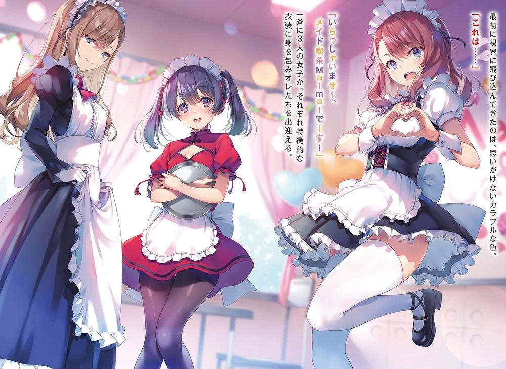
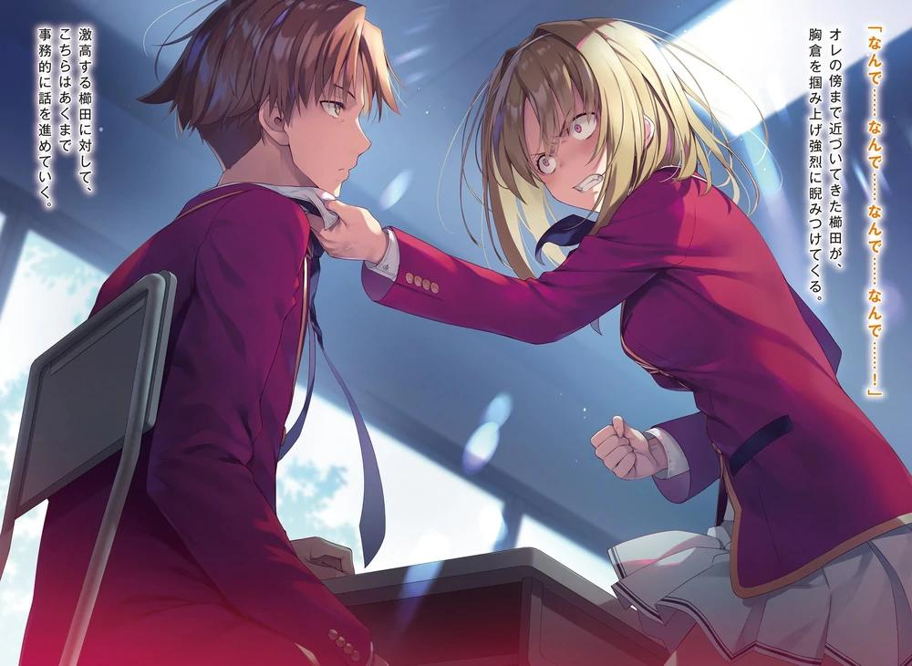
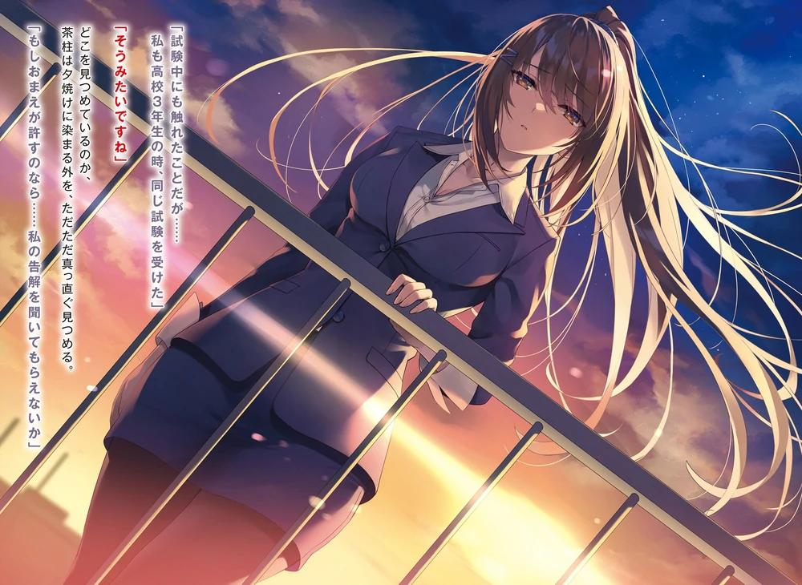
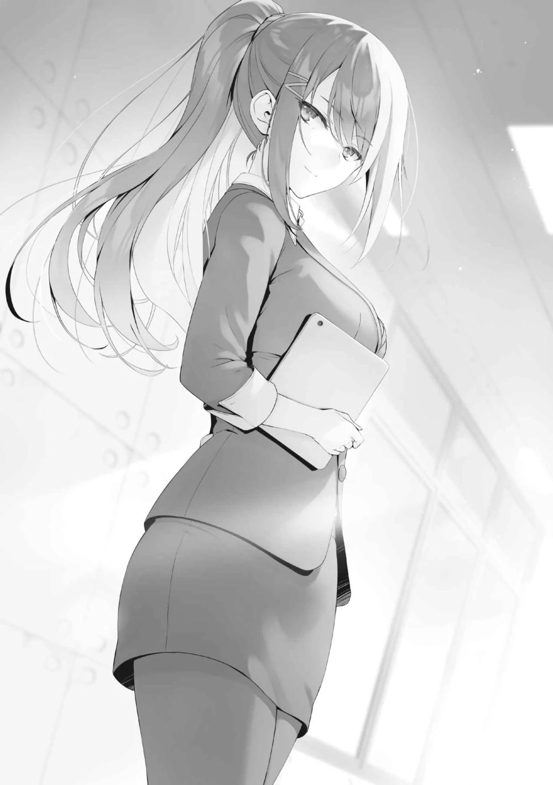
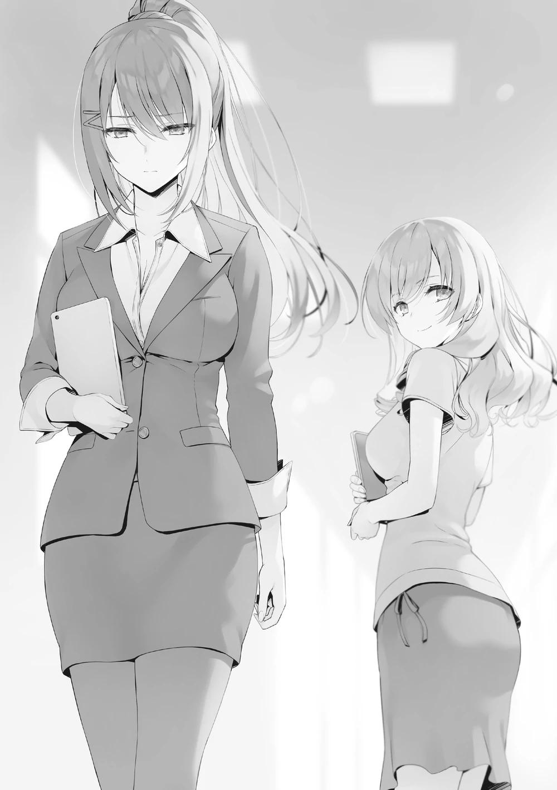
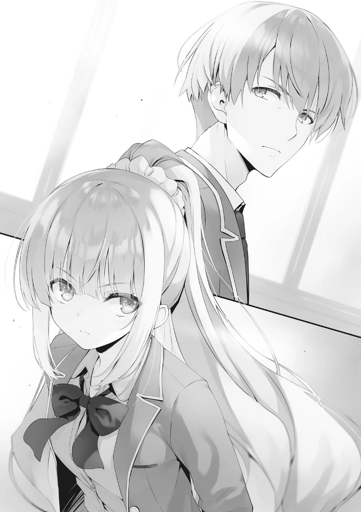
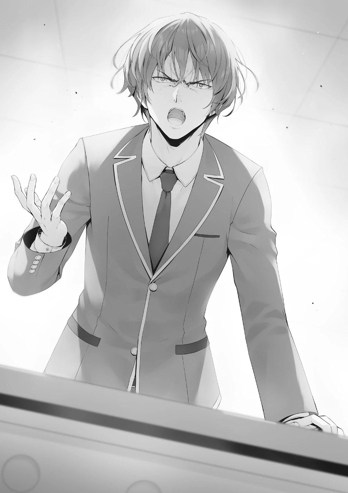
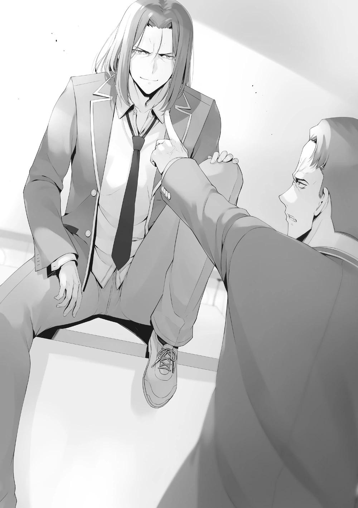
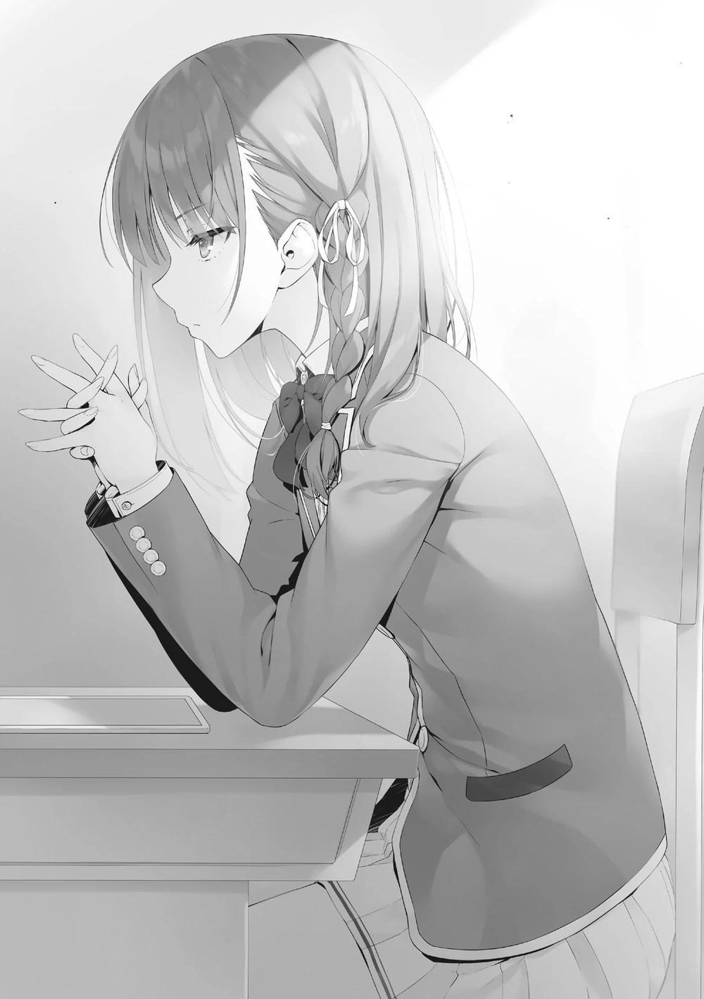
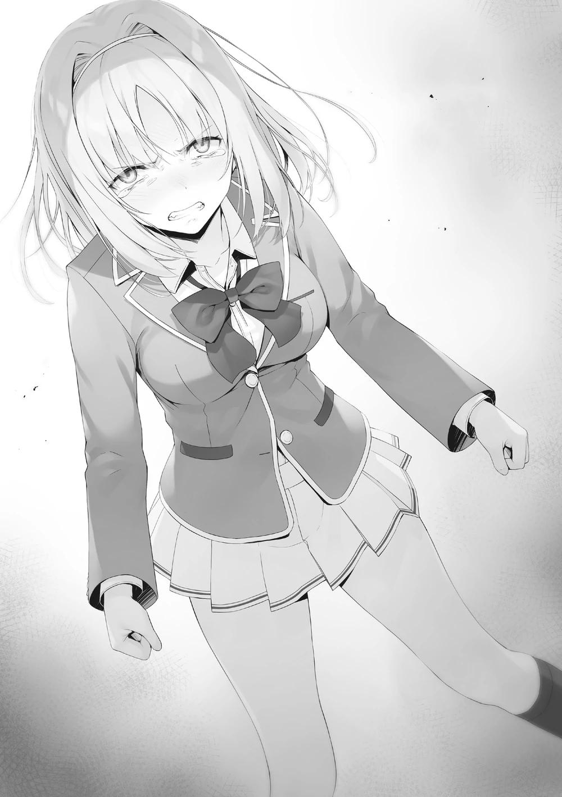

GLADHEIM
TRANSLATIONS
Youkoso Jitsuryoku Shijou Shugi no Kyoushitsu e - Segundo Año Volumen 5
Nota: Hasta la intro del capítulo 2 la traducción al inglés fue tomada de TLG Translations, lo restante del volumen es de Lazy Plebs TL, cuya traducción, para decir la verdad, es un poco inferior. Así que seguramente habrá una diferencia de calidad y estilo entre los dos primeros capítulos y lo demás.
EL MONÓLOGO DE SAE CHABASHIRA-SENSEI
Después de convertirme en profesora... No, incluso antes de convertirme en profesora, he tenido un asunto que no puedo contar a nadie. Se trata de una pesadilla que se repite una y otra vez. Los inolvidables acontecimientos de aquel día se repiten en mis sueños.
Estas pesadillas imprevisibles se distorsionan cada vez que me golpean. Mi perspectiva, las perspectivas de otras personas, el diálogo y las acciones. Todos estos aspectos cambian cada vez. Pero siempre hay una cosa que permanece igual. No importa cuántas veces se desarrolle, el final es siempre el mismo.
Durante esa época, nuestra clase B no tenía miedo.
Nuestro ímpetu abrumaba a las otras clases, y la Clase A estaba muy a nuestro alcance. Pero, por supuesto, el camino no fue fácil. Antes de pasar a ser de 3er año, el número de alumnos de nuestra clase se redujo en 6.
Sin embargo, después de convertirnos en alumnos de tercer año, seguimos acumulando puntos de clase sin perder a nadie. Estaba convencida de que no perderíamos a nadie más y nos graduaríamos todos juntos en la clase A.
Hasta ese día. Era el final del tercer trimestre, y se acercaban los exámenes finales. Era la última oportunidad de superar a la clase A. Nuestro profesor titular se presentó con una expresión seria, anunciando que se avecinaba un nuevo examen especial.
No temíamos en lo más mínimo este examen especial. Las reglas eran sencillas y directas, y preveíamos que podríamos aprobarlo fácilmente. Sin embargo, esa actitud optimista sólo duró hasta que se planteó la moción.
La escena cambia, y en este momento estoy gritando a todo pulmón en mi clase.
Mi mejor amiga, Chie, se acerca a mí con una expresión de enfado en la cara, y me agarra por el cuello de la camisa. Un gemido miserable.
La clase, que estuvo unida como si fuera una sola, se desmoronó al instante.
Olvídalo. Él murmuró esto con una expresión de abandono y resignación.
Pero yo no pude decidirme. Nunca pude llegar a ese entendimiento. Durante 3
años fue un amigo con el que compartí penas y alegrías, alguien que no era una presencia insignificante para mí.
Un compañero insustituible, un amigo insustituible. Insustituible: alguien del sexo opuesto, alguien importante para mí. Aunque era algo frívolo, era serio y amable, más confiable que cualquier otro. Me mostró una expresión que nunca había visto antes.
Como si fuera un poco tímido, extendió su mano hacia mí bajo el cielo del atardecer. Contuve las lágrimas que estaban a punto de brotar y le dije.
―Por favor, cuida de mí...
La relación entre nosotros dos llegó a su fin al mismo tiempo que comenzó.
LOS PASOS DEL CAOS
Las vacaciones de verano terminaron, y el segundo trimestre de nuestro segundo año comenzó hoy. Teniendo en cuenta los 3 años de escuela que tendremos en total, este era sin duda un momento de transición. Me anudé la corbata y pasé el brazo por la manga. Me miré en el espejo, me arreglé el pelo y me aseguré de que mi aspecto estaba bien antes de salir. Al marcharme, me topé con Sudou, bostezando fuertemente, y lo saludé mientras salíamos juntos del dormitorio.
―Suzune me advirtió de que los exámenes del segundo trimestre podrían llegar antes, así que terminé durmiendo poco.
―¿En serio estabas estudiando el último día del verano?
―Gracias a Dios, ella ya me ayudó a elaborar un programa académico para mis necesidades. Incluso puedo obtener altas calificaciones en los exámenes y mantener una B o más en mi capacidad académica en la OAA.
A, B o superior en la capacidad académica es un poco exagerado. Pero dicho esto, quizás no estaba tan lejos de la realidad. No me sorprendería que su rendimiento académico mejorara todavía más si realmente ha estado estudiando mucho durante el verano. Se ha convertido en una persona que está en sintonía con la frase "Cerebro y fuerza".
Los pequeños problemas de comportamiento, como la impuntualidad y el dormir en clase, también habían disminuido drásticamente. Aunque todavía hay momentos en los que muestra su temperamento, es sólo una de las características de Sudou.
―Esta es una pregunta extraña, pero ¿crees que Ike y Shinohara ya se besaron?
―¿Eh?
―Le doy la razón por haber conseguido una novia. Pero si se ha adelantado demasiado, no puedo decir que esté muy contento. Siento que últimamente hay una especie de barrera entre nosotros por esto.
―¿No puedes preguntarle tú mismo? Es Ike; seguro que te lo dirá.
―...Cómo puedo preguntarle algo así. Si aún no se han tomado de la mano, está bien, pero si me dice que han ido más allá... Digamos que mi mano derecha se va a poner un poco inquieta.
Así que esa era la situación. Esa picazón podría causar grandes problemas.
―Si a Ike le ocurre algo que lo haga feliz, lo soltará a la primera oportunidad. Como eso no ha ocurrido todavía, ¿no significa que aún no han llegado a esa fase?
―Es cierto. Pero nunca se sabe, es un hombre enamorado. Yo mismo no lo sé, porque no tengo ninguna experiencia. Por cierto, ¿has tenido alguna vez una novia, Ayanokouji? ...¿Qué se siente?
Pasando de Ike, el tema de la conversación cambió a algo que no esperaba.
Como si preguntara "¿qué se siente?", los ojos intensos y confiados de Sudou eran imposibles de ignorar.
―No tiene sentido mentir, así que te lo diré. Tengo novia, la primera, desde hace algún tiempo.
―...¿De verdad? ¿Hablas en serio?
Aunque evitara la pregunta aquí, la noticia no tardaría en difundirse por parte de Kei, así que ocultarlo no era la mejor idea. Después de responder honestamente, Sudou sostuvo su cabeza y suspiró. Entonces, de repente, me agarró por los hombros con urgencia.
―¿Es, es, es, es, es ella?
―Cálmate. No es quien crees que es.
―¿¡De verdad!? Puedo confiar en que no es Suzune, ¿verdad?
―Sí. No es ella.
―Ya, ya veo. Todo está bien entonces... Por un momento pensé que mi corazón casi se detenía...
Como si estuviera sudando, Sudou se limpió la frente bruscamente con su mano izquierda. Para expresar su ansiedad, me mostró el sudor en su palma.
―¿Quién es entonces?
―Es...
―¡Ah! ¡Te encontré!
Sudou acababa de recuperar la compostura, cuando el sonido de unos pasos llegó por detrás de él. Después de que esos pasos nos alcanzaran, un rostro enojado me miró.
―¡Quería pedirte que me acompañaras a clase, pero no sabía que ya te habías ido!
Kei hinchó las mejillas para mostrar su disgusto.
―No, no sabía que íbamos juntos.
―Eso es... Bueno, es porque estaba demasiado nerviosa...
Sudou nos miró con expresión de sorpresa cuando de repente empezamos a hablarnos de forma extraña.
―Deja de apretarte, Karuizawa. Estamos teniendo una conversación muy importante entre hombres, así que no interrumpas.
No pareció notar nada raro en el contenido de nuestra conversación. Sólo parecía estar desconcertado por su repentina aparición aquí. Ahora que lo pienso, estas dos personas no se han relacionado mucho en el pasado.
Su relación no era ni buena ni mala... No, si tuviera que decirlo, era mala.
―Kei, ¿piensas revelar nuestra relación hoy?
―¿Eh? Sí, sí. Estaba considerando el momento... Me parece mal anunciarlo tan pronto como empiecen las clases... En realidad, es
inesperadamente difícil revelarlo. Anunciarlo con "Hey amigos, escuchen~"
tampoco se siente del todo bien.
―Sin embargo, lo anunciaste rápidamente con Yousuke.
―Eso, es una cosa. La situación es completamente diferente.
―Oigan, oigan, ¿qué están...? ¿De-? ¿Eh?
Sudou era un poco lento, pero teniendo en cuenta que me refería a ella por su nombre de pila, y con él siguiendo del ritmo de nuestra conversación, dejó de caminar con una mirada atónita.
―¿Qué... Eh, oye, ¿qué está pasando aquí, Ayanokouji?
Sin embargo, aún no se sabía si esa combinación de pistas era suficiente para que él estableciera una conexión. Pero en cierto sentido, podría ser algo bueno que Sudou fuera la primera persona de nuestra clase en enterarse de nuestra relación.
―Estamos saliendo.
Kei sonrió y me dio un par de codazos. Probablemente se alegró de que lo dijera en voz alta.
―¿¡Ha...ahhhhhhhhh!? Tú, ¿estás bromeando?
Sorprendido, Sudou reaccionó de forma aún más exagerada de lo que yo hubiera imaginado, mientras gritaba con fuerza. Aunque no había ningún estudiante de nuestra clase a nuestro alrededor, otros estudiantes que no conocían la situación giraron sus rostros para ver lo que estaba pasando.
―Demasiado fuerte.
―Este, lo siento. Pero, no, ¿eh? ¿Por qué es Karuizawa?
―¿Qué quieres decir? ¿Hay algo malo en mí?
―No, es... no es nada, pero... ¿Eh...?
Sudou, que expresaba su confusión debido a esta sorpresa, negó con la cabeza, como si no pudiera aceptarlo.
―¿Qué pasa? ¿Prefieres que salga con Horikita?
―¡Nunca estaría de acuerdo con eso! ... No, no es eso... Espera.
Sudou me agarró del hombro y me susurró al oído.
―No es agradable, pero... Karuizawa salió con Hirata, y también tonteó durante sus años de secundaria o algo así, ¿verdad? ¿No te sientes insatisfecho o incómodo? Que tu primera novia sea así, ¿no es una dificultad demasiado alta?
Esa era la impresión de Karuizawa Kei que tenían mis compañeros de clase. De hecho, eso era exactamente lo que yo pensaba de ella antes de enterarme de su pasado.
―¿Qué están susurrando?
―No, nada.
Sudou se escabulló bajo su mirada. Supongo que se sentía mal por haber hablado mal de ella.
―¿Ayanokouji y Karuizawa saliendo...? No, no puedo entenderlo. Ahora tengo la cabeza despejada de la somnolencia. Qué increíble comienzo del segundo trimestre... ―Le oí decir.
PARTE 1
Llegamos a la escuela, pasando al lado de otros alumnos de tercer año que venían de sus dormitorios, pero Sudou no parecía fijarse en ninguno de ellos, aunque éstos seguían mirándome fijamente, como en el crucero.
Aunque estas miradas me han seguido durante todo el verano cada vez que salgo, todavía no me había acostumbrado del todo a ellas. Ser observado me producía una fuerte sensación de opresión y de reclusión. Mientras estas miradas continuaran, este sentimiento subsistiría.
Kei no tardó en entablar una gran conversación con las chicas sobre el verano, y Sudou empezó a chismorrear con Ike y Hondou, sus amigos íntimos. Yo también
charlé casualmente con los miembros del grupo Ayanokouji mientras esperábamos el timbre.
Chabashira-sensei llegó poco después, y dijo algo parecido a lo que dijo en el 1er trimestre.
―En este 2º trimestre, les esperan varios eventos importantes. El primero de ellos será el festival deportivo, como el que se celebró el año pasado. Ese será seguramente el examen de habilidad física de octubre. Aunque las reglas serán diferentes a las del año pasado, las habilidades requeridas seguirán siendo las mismas.
Este fuerte énfasis en las habilidades físicas mencionado por Chabashira-sensei significaba que este próximo desafío podría ser una fuente de ansiedad para los estudiantes que sólo eran buenos con lo académico. Dichos estudiantes, como mis amigos cercanos Keisei y Airi, naturalmente escucharon estas palabras con una expresión de preocupación. Estas nuevas reglas también serían motivo de gran preocupación.
―En noviembre, celebraremos el primer festival cultural de la historia en la Preparatoria de Educación Avanzada. Los detalles del mismo se anunciarán en otro momento, al igual que el festival deportivo, pero la planificación comenzará en septiembre.
El mes de septiembre se dedicará principalmente a la preparación del festival deportivo. El tiempo de las clases de educación física aumentará unas horas cada semana.
También habrá una hora a la semana para hablar del festival cultural. Al parecer, la preparación oficial comenzará cuando termine el festival deportivo en octubre, y luego comenzará oficialmente en noviembre.
Además, aunque no estaba claro si sería un examen especial o no, nuestro viaje escolar también comenzaría pronto.
―Además de esto, los exámenes parciales y finales también ocurrirán entre estos eventos.
Básicamente, este segundo trimestre será inevitablemente ajetreado.
―Explicaré el festival deportivo con más profundidad después, y empezaré con el festival cultural.
Aunque el festival deportivo era lo primero, Chabashira-sensei empezó a detallar el festival cultural primero.
―Habrá muchos invitados en el festival cultural. Tendrán que competir con todas las demás clases de todos los años por el total de ventas en el festival.
Pueden celebrar todos los eventos que quieran, pero hay un presupuesto.
Consulten la pantalla para obtener más detalles.
Resumen del festival cultural
-El número de puntos privados que cada clase de 2º año puede utilizar para preparar el festival es de 5.000 puntos por persona. Estos fondos pueden ser utilizados libremente.
(5500 puntos para los estudiantes de 1er año, 4500 puntos para los de 3er año)
-Se dispone de fondos adicionales a cambio de las contribuciones sociales a través del trabajo voluntario en los consejos estudiantiles, etc., y las contribuciones de la participación activa en las actividades de los clubes, etc.
(Los detalles se reiterarán en cada clase cuando estén finalizados)
-Los fondos no utilizados se retirarán para evitar que los costos iniciales y los fondos adicionales se reflejen en las ventas finales.
-Las clases en el 1er-4to lugar recibirán 100 puntos de clase
-Las clases del 5º al 8º puesto recibirán 50 puntos de clase
-Las clases del 9º al 12º puesto no tendrán un cambio en los puntos de clase.
Esto significa que muchas clases serán recompensadas, sin penalización para las que terminen en los puestos inferiores. Un 8º puesto o más sería un buen resultado. En cuanto a las reglas, parecían sencillas, sin nada confuso. También era sencillo y claro ahora por qué los detalles del festival cultural se hacían públicos antes del festival deportivo. Si no se conocían las reglas de antemano, la preparación era imposible. En cuanto al festival deportivo, podías desarrollar una estrategia simplemente mejorando tu capacidad física.
―Parece el típico festival cultural.
Shinohara se mostró algo aliviada, pero podía entender por qué se sentía así.
No había riesgo de perder puntos de la clase, ni de ser expulsado. Sin embargo, el funcionamiento de esta escuela nos afectaba tanto que inconscientemente nos preguntábamos si habría algo más.
―Además, es importante que se aseguren de ocupar la zona adecuada en el espacio del evento. Por ejemplo, si queremos montar una tienda cerca de la entrada principal, por donde seguro que pasan los visitantes, tendremos que pagar a la escuela por esa zona.
Al recibir la nueva información, todos los alumnos, incluido yo, miramos la pantalla.
La pantalla mostraba un mapa y una lista de "lugares donde se podía instalar un puesto" marcados con un código que combinaba el nombre del lugar y los números. El lugar más cercano a la puerta principal, mencionado por Chabashira-sensei, estaba marcado con "Puerta principal 1", y el precio del local era de 10.000 puntos. Algunos lugares alejados de la puerta principal, por los que los invitados no solían pasar, parecían ser gratuitos. El presupuesto era de unos 200.000 puntos, sin tener en cuenta los fondos adicionales. 10.000 puntos no eran para nada baratos.
Pero no cabía duda de que se trataba de un local de primera clase que esperaba ver muchos clientes.
―Su elección de ubicación puede coincidir con otras clases y grados, pero cada ubicación sólo puede ser utilizada por una clase. Si hay una superposición, habrá un proceso de subasta, donde la clase con la oferta más alta obtendrá el derecho a usar ese espacio.
En otras palabras, si te obligas a pagar un gran número de puntos para asegurarte una buena ubicación, tu presupuesto para el evento se reducirá drásticamente. A partir de ahora, había unos dos meses para considerar la mejor manera de utilizar el limitado presupuesto para maximizar la eficiencia.
―Los eventos que organice cada clase y el lugar en el que instalarán los puestos no se harán públicos hasta el día del festival cultural. No habrá filtraciones de la escuela, pero habrá que tener cuidado con las posibles filtraciones de los alumnos. Prepárense para ser atacados sin piedad si se filtra información.
Incluso si el evento se planificó perfectamente, existía la posibilidad de que las otras clases te copiaran o te atacaran.
―Durante el proceso de planificación, puede surgir la necesidad de algo en cualquier momento. Si necesitan algo que no está disponible en el lugar del evento, pueden solicitar permiso para traerlo de fuera. Son libres de utilizar el presupuesto como quieran, siempre que se ajusten a las normas.
Algunos aspectos parecían necesitar una investigación más detallada, entre ellos éste.
―Arriba está la descripción y las normas del festival cultural. La preparación y el establecimiento se llevarán a cabo después del festival deportivo, pero a partir de hoy, por favor, usen su tiempo libre para negociar qué eventos quieren celebrar, y cómo van a asignar su presupuesto.
Cuanto más tiempo se dedique a la planificación del festival cultural, más meticuloso será el plan.
PARTE 2
Cuando terminaron las clases, la mayoría de los alumnos se quedaron en el aula, y el resto fue a las actividades del club. Esto fue, por supuesto, para las primeras discusiones para el festival cultural de noviembre.
Algunos de mis compañeros debían haber tenido experiencia con festivales culturales durante sus años de secundaria. No tenía mucha información que compartir, así que me limité a escuchar, como siempre.
―En primer lugar, vamos a hacer una lista rápida de los eventos que podemos celebrar.
Yousuke, que obtuvo permiso para usar la pantalla del aula, empezó a teclear cosas.
―Hablando de festivales culturales, normalmente se trata de comida, casas encantadas y ese tipo de cosas.
Comida, casas encantadas, laberintos, cafés, actuaciones en vivo, obras de teatro, etc. Estas opciones obvias se enumeraron una tras otra.
―El evento se celebrará de 10:00 a 15:00 horas. Si hacemos algo relacionado con comida, seguro que los invitados adultos lo visitarán más. Sin embargo, nuestra competencia en esta área también crecerá...
―Y tenemos que hacer malabares con el presupuesto. Va a ser más caro que algo como una casa encantada o un laberinto con un coste único controlado.
Al parecer, el equipo musical y otras cosas por el estilo podían alquilarse a cambio de una cuota, pero ese tipo de equipo era limitado, así que el primero que llegaba era el primero que lo recibía. Y también estaba la cuestión de cuántos estudiantes tenían habilidades para obtener beneficios.
―Tenemos 39 alumnos en nuestra clase. Eso significa que nuestro presupuesto actual es de 195.000 puntos. No es una cantidad muy grande.
Aunque se hable de hacer algo relacionado con comida, no podemos confirmar fácilmente esa decisión ahora.
―Tengo una propuesta. ¿Puedo?
―Estoy abierto a sugerencias, Horikita-san.
―Como dijo Hirata-kun, tenemos un presupuesto bastante limitado para este festival cultural. Pero hay muchas cosas que no se pueden entender del todo sólo con teorizar sobre ellas. Supongamos que abrimos un puesto de takoyaki; ¿qué ingredientes, habilidades y otras cosas son necesarias? En ese caso, ¿no deberíamos decidir primero un plan y luego experimentar un poco más utilizando nuestros puntos privados?
Muchos alumnos estuvieron de acuerdo y entendieron esta propuesta. De hecho, era importante probar lo que queríamos hacer, ya fuera relacionado con comida o con otra cosa, como una representación teatral.
Por supuesto, existía el riesgo de que pagáramos de nuestro bolsillo, pero si podíamos recuperar esos puntos más tarde como puntos de clase, eso podía considerarse una inversión necesaria.
―Pero... Bueno, no digo que sea una mala propuesta, pero habrá algunas personas que simplemente serán pasivas y se negarán a contribuir si tienen que pagar de su bolsillo, ¿verdad?
Matsushita temía que hubiera estudiantes que no contribuyeran para nada a la preparación del festival cultural.
―Ignóralos. No quiero perder el tiempo que podría utilizarse para las propuestas y la planificación. Sin embargo, no podemos defraudar a los que quieren contribuir. Si creen que es una buena idea, pueden responder activamente por ella. Y si la idea es elegida, esas personas serán recompensadas. ¿Qué te parece?
―Bueno, es una buena idea. Es una buena idea retribuir a las personas que contribuyen.
―Podemos discutir los detalles de las recompensas más tarde, pero digamos que obtenemos 100 puntos de clase del festival cultural. La clase ganará 390.000 puntos extra cada mes en total. Los distribuiremos entre los que propongan como recompensa. Todo el mundo debería estar bien con este formato.
Supongamos que celebramos 5 eventos. Eso supondría 78.000 puntos por persona. Si el número de proponentes y colaboradores fuera tan elevado que no hubiera beneficios tras dividir la cantidad, podríamos repartir también los puntos de los dos meses siguientes. De este modo, los alumnos que participasen activamente en el festival cultural podrían beneficiarse, y los alumnos que no lo hiciesen también saldrían ganando con el tiempo. Y lo que es más importante, con el aumento potencial de los puntos de la clase, nadie se opondría a este plan.
―Además, para evitar que nuestras ideas sean robadas por otras clases, tenemos que blindar nuestra información completamente. Por favor, tengan en cuenta que deben tener mucho cuidado con lo que dicen en la escuela, en sus dormitorios y en el centro comercial Keyaki.
Mantener todo completamente en secreto. Esto era extremadamente importante durante estos dos meses de preparación. Las discusiones continuaron, comenzando con una propuesta a Horikita o Yousuke para realizar un evento.
Luego, si había posibilidad de adoptar formalmente la propuesta, pasábamos a realizar más discusiones.
PARTE 3
Durante las dos semanas siguientes, nuestra vida escolar continuó como de costumbre.
Los preparativos para el festival cultural y el festival deportivo se llevaron a cabo simultáneamente, al tiempo que se perfeccionaban nuestros estudios. Puedo decir sin temor a equivocarme que cada día era un tiempo valioso, no diferente al de una escuela normal. Sorprendentemente, nuestra relación no parecía
extenderse más allá de Sudou, y no había señales de que ninguna persona nueva lo supiera.
Entonces, a mediados de septiembre, después de la escuela, el miércoles de la tercera semana. Sentado en la última fila, vi a alguien inesperado que se acercó a Horikita, que estaba sentada en el centro de la primera fila.
―Hola, Horikita-san. ¿Puedo ocupar algo de tu tiempo más tarde, si estás disponible?
La persona que acababa de hablar con Horikita con un poco de vacilación era Satou. Una de esas chicas que no se había cruzado con ella.
―Tengo que ir al consejo estudiantil en una hora, pero mientras no me pierda eso, está bien. ¿Qué pasa?
Aunque no mostró ninguna sorpresa, no creía que Satou hubiera iniciado muchas conversaciones con Horikita. Después de recibir una respuesta sorpresiva, la voz de Satou bajó un poco y continuó hablando.
―He estado pensando mucho en los eventos para el festival cultural...
Dijiste que podíamos decirte si teníamos alguna idea, ¿verdad?
―Sí. Agradecería mucho cualquier sugerencia...
―Bueno, déjame explicarte. Tengo una idea para un evento que nos permita ganar este festival cultural.
Aunque Satou parecía segura de sí misma, Horikita no se dejaba impresionar fácilmente. Esto era natural; después de todo, en estos últimos 10 días, muchos estudiantes ya se han acercado a Horikita con sugerencias.
Si sus ideas eran adoptadas, serían recompensados. Así, tanto los alumnos como las alumnas se han acercado repetidamente a Horikita con sugerencias.
Las sugerencias iban desde las típicas, hasta algunas novedosas. Sin embargo, el denominador común era que Horikita no aceptaba las sugerencias de eventos que fueran simples. El día que dejó claro que los proponentes serían recompensados, Hondou sugirió inmediatamente vender pollo frito, ya que era delicioso. Pero Horikita lo rechazó, alegando que necesitaba un plan real, por lo
que no lo consideró en absoluto. Hondou no se dio por vencido y, al día siguiente, presentó un plan para hacer pollo frito, pero no era más que una receta sacada de Internet sobre cómo hacerlo, y mucha palabrería sobre lo bien que se vendería y lo delicioso que estaría.
Tras leer ese plan de baja calidad, Horikita volvió a insistir en la importancia de la propuesta del plan. Si se quería montar una tienda de pollo frito, había que tener en cuenta la ubicación, la mano de obra necesaria, los precios, el número de clientes potenciales y la justificación de la misma. Horikita dijo que sólo aceptaría propuestas que abordaran todas esas áreas.
Después de eso, pensé que el número de personas que harían propuestas apresuradas a Horikita disminuiría. Para mi sorpresa, vinieron aún más con planes cada vez más sofisticados que presentar.
Algunas propuestas llegaron incluso a la lista de preseleccionados de Horikita para su posterior discusión. Sin embargo, a todas esas propuestas les faltaba algo concluyente, por lo que no estaban listas para ser adoptadas oficialmente.
―Entonces, ¿Preparaste una propuesta?
―Ah, sí. Claro que estoy preparada... Pero es un poco incómodo aquí.
¿Puedes darme un poco de tiempo más tarde, si te parece bien?
―¿De verdad? Pues que así sea. ¿Dónde nos encontramos?
―Veamos, quedemos en el aula vacía del edificio especial en 30 minutos.
Ya tengo el permiso del profesor.
―¿Aula vacía?
Satou susurró a Horikita "gracias, nos vemos entonces", luego se sorprendió un poco, y se dio la vuelta, encontrándose con mi atenta mirada, y se acercó rápidamente.
―Oye, Ayanokouji-kun. ¿También tienes tiempo más tarde?
―¿Yo? No tengo nada especial.
―Escuchaste lo que acabo de decir, ¿verdad? ¿Puedes venir con Horikita-san en 30 minutos también?
―¿Por qué tengo que ir yo también?
―Es un secreto por ahora. Lo descubrirás cuando vengas.
La cara de Satou era tan segura como su tono hacia Horikita antes.
―¡Entonces los espero a los dos!
Satou, que había sacado su teléfono para comprobar la hora, salió corriendo del aula.
―¿Qué pasa con ella? Parece segura de sí misma.
―Tal vez se le ocurrió una gran idea para un evento.
―Aun así, ¿tenía que llamarnos así?
No sabía cuáles eran sus verdaderas intenciones, pero eso se revelaría en 30
minutos. Horikita y yo pasamos un rato en el aula, y luego nos fuimos al edificio especial.
PARTE 4
Como de todos modos íbamos a ir al mismo sitio, caminé con Horikita hacia el edificio especial. Cuando llegamos a la puerta del aula, por alguna razón vi a Maezono allí.
―Oh, estaba a cargo de vigilar el lugar. No pensé que nadie vendría al edificio especial después de las clases, pero más vale prevenir que lamentar.
― ¿Vigilar? ... Eres más misteriosa de lo que esperaba.
Aunque la idea era mantener en secreto cualquier idea de los eventos hasta el día del festival cultural, Horikita seguía un poco sorprendida de ver a un guardia.
A mí me pasó lo mismo. No sólo pidieron al profesor hacer uso de un aula del edificio especial, sino que también dispusieron que alguien hiciera guardia para
evitar la intervención de un tercero. Para evitar que alguien mirara dentro, incluso taparon las rendijas de las ventanas.
―Entonces, ¿puedo mirar dentro?
―Ah, espera un momento. Estamos en modo de simulación a partir de ahora, así que Horikita-san, Ayankouji-kun; Por favor, experimenten esto desde la perspectiva de un cliente.
―Ya veo. Muy bien, en comparación con la lectura de una propuesta de baja calidad, esta forma sin duda hace que sea más fácil.
Al ver un procedimiento tan riguroso, las expectativas de Horikita tuvieron que aumentar. Si esto se adoptará realmente o no es otra cuestión, pero al menos era evidente que estaban haciendo un esfuerzo serio para ganar este festival cultural. Así que, desde la perspectiva de Horikita, esto ya era algo de lo que alegrarse.
Horikita y yo abrimos lentamente la puerta, tras comprobar que no había nadie a nuestro alrededor. Lo primero que apareció fue un inesperado despliegue de colores brillantes. El aula, originalmente anodina y monótona, se había transformado y alegrado con decoraciones.
―Esto es...
―Bienvenidos～. Este es Maimai, el maid café.
Las tres chicas nos saludaron a la vez, cada una vestida con su traje único.
Satou, que nos llamó, y Matsushita, que estaba a su lado, vestían trajes de sirvienta. Mii-chan, que parecía avergonzada, con los ojos mirando a todos lados, llevaba un traje de estilo chino.
Por cierto, aunque las aulas solían utilizar monitores, el edificio especial, que se utilizaba con menos frecuencia, todavía tenía una pizarra. En ella estaba escrito el nombre de la cafetería. Después de dirigirme a un asiento, me entregaron un menú escrito a mano.
―¿Qué desea? Amo.
―Espera. ¿Puedo hacer una pregunta antes de hacer un pedido?
―Hmm? ¿Qué?
―Esto costó mucho tiempo y dinero prepararlo, ¿verdad?
Efectivamente, si te preguntaran si todo esto se puede preparar en un día, sería bastante difícil. Podrías conseguir la decoración, pero también había que tener en cuenta el vestuario.
―Matsushita-san, ¿cuánto tiempo invirtieron en esto?
―Tomó alrededor de 4 días para prepararlo. El costo fue sorprendentemente razonable, diría yo. Usamos un total de 13.200 puntos.
Nosotras tres y Maezono-san nos repartimos el costo, que resultó ser de 3.300
puntos por persona. Alquilamos 3 conjuntos de ropa, y compramos papel de origami y bolígrafos para la decoración en la tienda. La vajilla es nuestra, así que no usamos ningún punto en eso.
Así que esa es la razón de la vajilla desigual. Aunque, como todavía estábamos en la fase de revisión de la propuesta, esto no supuso un problema para ellas.
De hecho, fue impresionante ver la cantidad de esfuerzo que se dedicó a la preparación, manteniendo el coste al mínimo.
―En términos de impacto, es perfecto. Es mejor que cualquier propuesta de evento que haya visto hasta ahora. Pero...
Horikita alabó el proyecto, calificándolo de impecable en términos de atractivo.
Sin embargo, no era alguien que fuera a tomar una decisión precipitada para aprobar la propuesta sólo por eso.
―El componente más importante, el presupuesto. ¿Está hecho? Me gustaría ver el proceso en detalle.
En respuesta, Satou volvió los ojos hacia Mii-chan, sin inmutarse.
―He reunido la mayor parte posible del plan.
Mii-chan sacó una carpeta transparente de su mochila y se la dio a Horikita.
Seguramente lo escribió ella misma, con 3 hojas de papel detalladas y cubiertas de una hermosa escritura. Aunque los trajes eran alquilados, se eligieron de 3
empresas diferentes a distintos precios. Las comparaciones se hicieron por
separado en función del precio y la calidad, así como de la variedad de cada categoría. También se examinaron las diferencias de coste entre la vajilla más barata y la más cara que se utilizaría ese día. Se había considerado el número mínimo de personal, así como el número de visitantes que traería, etc.
―Está por encima de todo lo que he visto hasta ahora. Es genial.
Mientras Horikita las colmaba de elogios, Satou y Matsushita pincharon a Mii-chan en el costado, como para decirle que la habían felicitado. Pero Mii-chan, tímida como siempre, bajó la cabeza, y asintió suavemente. Hasta aquí, le daría una puntuación perfecta a la propuesta de Satou.
Pero...
―Es un evento interesante. Puede que no sea único, pero puedo ver su potencial si se hace bien. Pero hay algunos problemas. La cuota de alquiler es de 4.000 puntos por conjunto de disfraces. Si se alquilan 10 conjuntos, como está previsto, se necesitarán 40.000 puntos. Además, el costo de la preparación de la comida y las bebidas es de unos 50.000. Sólo eso suma 90.000 puntos...
La decoración costará 5.000 puntos, y añadiendo la tarifa del local...
Definitivamente, no es un evento en el que podamos ser tacaños.
Aunque no tengamos que pagar sueldos para asegurar el personal, tendríamos que gastar casi la mitad del presupuesto de toda la clase en este único evento.
―Bueno, eso es cierto... ¡Pero creo que podemos permitirnos subir los precios!
En el menú que Satou y las chicas crearon, una taza de té negro costaba 800
puntos. Este precio era superior al de la cafetería del centro comercial Keyaki.
Por supuesto, este precio podría bajarse dependiendo de la situación en el futuro, pero ellas pensaron que todavía se vendería a este precio.
Horikita lucía seria, mientras hojeaba una y otra vez la propuesta de 3 páginas.
Pero la vestimenta de Satou y las demás era algo sacado de un cuento de hadas, por lo que había una especie de ambiente irreal e incongruente, aunque maravilloso. Pronto, Horikita pareció llegar a una conclusión y levantó la cabeza.
―Permítanme confirmarlo una vez más. Este proyecto... Nadie más lo ha visto, supongo.
―Sí, no hay duda.
Dijo Matsushita con seguridad. Satou y Mii-chan hicieron eco de sus palabras.
―Eso está bien. Me encargaré de la propuesta del maid café en consecuencia. ¿Pueden afinar más el plan e incluir una sección de reducción de costes?
―¿De verdad? ¡Eso es genial!
Las tres chocaron los cinco con entusiasmo.
―Es un poco pronto para celebrarlo. No olviden que esto acaba de llegar a la etapa de discusión en un futuro.
Aunque dijera eso, era una gran recompensa obtener una promesa de Horikita diciendo que se encargaría de ello. Cuando Horikita y yo salimos al pasillo, Maezono, que estaba a cargo de la vigilancia del lugar, nos saludó alegremente.
Seguramente escuchó lo que se dijo en el aula.
―Realmente te gustó la idea. No esperaba que dijeras que lo manejarías como corresponde.
―Si no creyera que puede ganar, simplemente no la habría apoyado. La mayoría de las propuestas que me traen las rechazo en el acto. Como mucho, he considerado una o dos. Así de potente es su idea.
Un proyecto de maid café no es tan inusual. Pero me pareció que Horikita se esforzó en ayudarlas porque encontró la manera de utilizar mejor los puntos fuertes de nuestra clase para atraer a los clientes potenciales.
―¿Quieres decir que tenemos una ventaja, aunque las otras clases hagan lo mismo con los maid café?
―Sí. ¿No estás de acuerdo?
―No, sí lo estoy.
Aunque abriéramos un pésimo puesto de comida, tendríamos que competir con varios otros. Por otra parte, aunque hubiera una o dos cafeterías más, podríamos tener la ventaja con nuestros puntos fuertes como clase. Incluso, aparte de esas 3 chicas con los trajes de hace un momento, había talentos aún más poderosos escondidos en nuestra clase.
―Así que, para asegurarse de que su plan se lleva a cabo en consecuencia, tendrás que ayudar.
―¿Ayudar? ¿Quieres decir, quieres que haga un cosplay?
―¿De qué estás hablando? Si vamos a hacerlo, tenemos que darlo todo.
Así que es necesario asignarte algo que maximice tus talentos, ¿no? Eso es algo que creo que deberías hacer, como hombre.
―No... Bueno, entiendo lo que dices... Pero hay candidatos más adecuados.
―Sí. Creo que Ike-kun y Hondou-kun podrían ser más exigentes con este tipo de cosas. Pero si se los digo, podrían filtrarlo. Sus bocas no son lo suficientemente herméticas.
―...Eso no lo puedo negar.
Esos estudiantes no revelarían información intencionalmente, pero podrían hacerlo por accidente.
―No espero tener más gente al tanto de esto. Lo entiendes, ¿verdad?
―Así que ese es el caso.
Fui llamado aquí por Satou porque tuve mala suerte, y este era ahora mi destino.
―Así que, en primer lugar, te dejaré reclutar gente. Por supuesto, puedes decirles de qué se trata, pero no olvides que tienes que mantener estrictamente este secreto. Si alguna vez se filtra, el plan se cancelará.
Así de importante era proteger nuestros secretos.
―Por cierto... añadiendo a esto, quiero que el número de personas a las que se lo cuentes sea el mínimo. ¿Puedo dejarlo todo en tus manos?
Determinaremos el presupuesto oficial más tarde, así que cuento contigo para todo, desde el reclutamiento, administración y gasto total.
―Espera, espera, espera. Realmente me estás echando todo esto encima de repente. ¿En serio me vas a dejar todo a mí solo?
―No vamos a hacer sólo un evento para este festival. Vamos a abrir varios puestos, para equilibrar los géneros, así como los talentos. Intentar aumentar las ventas con un presupuesto menor también es bastante difícil, así que prefiero centrarme en eso.
Por mucho que quisiera que centrara su atención en eso, me seguía preguntando por qué me entregaba todo esto.
―Asumiré que aceptaste este puesto, ¿verdad?
Aunque no recordaba haber mostrado ninguna señal de aceptación, ella tomó la decisión sin decir nada.
―No puedo creer que realmente me hayas hecho aceptar esto...
Conseguir que dirija el perfecto maid café. ¿Era eso siquiera posible? No estaba seguro. Satou, Matsushita y Mii-chan ya están decididas... ¿Pero cuántas más debería conseguir que fueran camareras?
Aunque aún quedaba mucho tiempo, era necesario decidirlo pronto.
―Entonces iré a la sala del consejo estudiantil ahora. Nos vemos luego.
―h, de acuerdo...
Vi a Chabashira-sensei mientras caminaba por el edificio especial en mi camino de regreso después de tomar esta responsabilidad que induce dolor de cabeza.
No pareció una coincidencia, ya que estábamos aquí.
―¿Fuiste a ver a Satou y a las otras? Me enteré de la propuesta del evento. Seguramente querían enseñarte algo. Parece una buena idea.
―Es cierto. Satou y las demás tendrán que confirmar que el evento cumple con los requisitos de la solicitud antes de empezar a prepararlo.
Sería malo si no obtuvieran el permiso para esto después de prepararse seriamente para ello.
―Yo también tengo curiosidad, así que voy a comprobarlo. ¿Cuál es la situación?
―Horikita es optimista sobre la idea. Piensa que tiene posibilidades. Ahora están consolidando los detalles.
―¿De verdad? Si es así, no creo que sea necesario que lo compruebe.
―Sin embargo, me voy a involucrar en ello, por lo que es un poco problemático.
―¿Qué quieres decir?
―Horikita me ordenó que me convirtiera en el gerente de ese evento.
―¿Tú? Eso es realmente...
Chabashira-sensei, que me miraba con ojos a la vez comprensivos y compasivos, se rio como si algo le hiciera gracia.
―Es algo bueno. Horikita ha hecho un movimiento muy interesante.
―Aunque me parece que alguien como Ike o el Profesor sería mucho más adecuado para el papel.
Aunque iba a dirigir un maid café, no sabía nada al respecto.
―Eso puede ser cierto, en términos de la comprensión de la cultura Otaku.
Pero las ventas son más importantes en un festival cultural. Aunque esos dos puedan mejorar la calidad del evento en sí, no podrán hacer cálculos exhaustivos sobre esos beneficios. Por eso tiene sentido pedirte que administres.
Si es necesario, pídeles su opinión, y eso puede resolver tus problemas.

Para ella es fácil decirlo. Para poder seguir los consejos de otras personas, yo mismo debía tener un mínimo de conocimientos. Si no sabía nada, no podía garantizar que llegaría a la respuesta correcta, ni siquiera con los consejos de otros. Además, me resultaría difícil señalar cualquier aspecto preocupante.
―Será mejor que llegues a comprender que ahora tienes la oportunidad de aprender otras cosas además de las tareas escolares. Sr. Gerente del maid café.
―...Claro.
Estaba a punto de volver, pero Chabashira-sensei me llamó desde atrás.
―Ayanokouji... ¿Puedo tener un poco de tu tiempo más tarde?
―¿Más tarde? ¿Cuándo es eso?
―Te enviaré un mensaje pronto. ¿Está bien?
―Sí, está bien. Despejaré mi agenda, si tengo algo planeado.
Podría haberme negado, pero tras percibir la seriedad en los ojos de Chabashira-sensei, accedí.
DOS PROFESORAS, EL EXAMEN ESPECIAL PREDESTINADO
El día después de ser nombrado director (¿?) del maid café.
Cuando Chabashira-sensei entró en la clase, por su expresión rígida, la mayoría de los alumnos se dieron cuenta inmediatamente de que había algo raro.
Sin embargo, a diferencia de antes, las palabras "examen especial" no fueron las primeras en aparecer en nuestras mentes. La mayor razón era que estábamos convencidos de que nuestro próximo examen especial sería el festival deportivo. Además, el festival cultural ya estaba previsto para después del festival deportivo.
―Antes del festival deportivo de octubre, tendrán que enfrentarse a un nuevo examen especial.
Un temblor recorrió a la mayoría de los estudiantes. El año pasado, por estas fechas, no hubo ningún otro examen especial y ya habíamos empezado a prepararnos para el festival deportivo. Sin embargo, este año sería diferente.
―¿Otro examen? Y eso que acabamos de superar la difícil Prueba de Supervivencia en la Isla Deshabitada...
Como era costumbre a estas alturas, el primero en hablar fue Ike, quejándose como siempre. Ike acababa de pasar por un apuro con la expulsión en la Prueba de Supervivencia en la Isla Deshabitada y por fin estaba estableciendo una relación romántica con Shinohara Satsuki. Así que ya se imaginaba los muchos peligros que le aguardaban.
No importa lo cercano que fuera y lo bien que construyera la relación, dependiendo del examen especial, la expulsión siempre estaba sobre la mesa.
No había duda de que, especialmente los estudiantes que ocupaban un puesto bajo en la OAA, también percibían el peligro.
―Heh, me apunto para esto. Antes de dominar a todos en el festival deportivo, me apetece pasar otro examen especial.
Sudou, que tenía una gran confianza en sus habilidades atléticas, chocó sus puños.
―No te dejes llevar.
―... De acuerdo.
Sudou se calló, algo abatido, después de que Horikita le advirtiera inmediatamente. Esa es una bonita relación amo-sirviente... No, se podría decir que están desarrollando una relación de amigos.
―Honestamente hablando, en años anteriores rara vez hemos tenido un examen especial en esta época del año. Y en realidad, los de primer y tercer año no tienen que hacer un examen especial ahora.
―Entonces, ¿sólo nosotros, los de segundo año, haremos un examen especial antes del festival deportivo? ―preguntó Satou, inclinándose hacia delante desde su posición anterior, de espaldas a la silla.
Completamente de acuerdo con ella, Chabashira-sensei asintió.
―Hasta la escuela los valora mucho a ustedes, los excelentes estudiantes de segundo año.
―¿Ehhh? Encargarnos un examen especial porque nos valoran... ¿no es raro?
―Es cierto que todo examen especial conlleva un elemento de riesgo por el que hay que preocuparse. Pueden perder puntos de clase o privados, y en algunos casos algunos de ustedes podrían llegar a ser expulsados. Pero en otro sentido, se podría incluso decir que tienen más oportunidades de vivir una vida estudiantil mejor. De hecho, para alcanzar la clase A, un objetivo que todos deben considerar más importante que cualquier otra cosa, cada examen especial adicional es un regalo en forma de oportunidad.
Tiene razón. Si queremos ganar una gran cantidad de puntos de clase, nos resultará extremadamente difícil acumularlos sólo en nuestra vida cotidiana. De
hecho, si tuviéramos que decirlo, no tener un examen especial podría significar a menudo que estábamos seguros de perder puntos de clase en vez de eso. Ya fuera el examen de supervivencia en una isla deshabitada o cualquier otro examen, los exámenes especiales nos daban la primera oportunidad de ascender a las clases superiores.
―La suerte y la desgracia son dos caras de la misma moneda.
Precisamente porque hay un riesgo, tenemos algo que ganar, ¿no creen?
Horikita aceptó con calma las palabras de Chabashira-sensei y le preguntó de cerca.
―Exactamente.
―No tenemos nada que temer. A partir de ahora, estamos sin duda bajo la presión de la Clase A. Todas las clases por debajo de la Clase B están codo con codo, y la oportunidad de adelantarse y dejarlas atrás llegó rápido.
Cada oportunidad cuenta. Ese era el entendimiento común de todos nosotros mientras apuntábamos a la cima.
―Así es... Pero no es que el examen desaparezca por estar descontento con él, ¿verdad?
Satou y el resto de nuestros compañeros parecían estar de acuerdo con las palabras de Horikita.
Aunque todavía no está cerca de completarse, el crecimiento de Horikita como pilar de la clase ha tenido indudablemente un impacto positivo en la misma. La propia Chabashira-sensei debió de alegrarse por ello, pero no mostró nada de eso en su rostro. Nunca había sido una persona que dejara escapar su expresión severa, pero tengo la sensación de que eso es mucho más cierto en este momento que antes.
―Esta vez, se enfrentarán al Examen Especial Consentimiento Unánime.
El monitor se encendió y, como era habitual, comenzó a reproducirse un vídeo junto con la explicación.
―El examen especial esta vez es extremadamente sencillo. Así que, si tienen alguna pregunta, la iré contestando a medida que vaya surgiendo. El examen se realizará mañana, y como seguro que adivinan por el nombre, consistirá en que la clase votará una y otra vez una pregunta de opción múltiple hasta que toda la clase llegue a un consenso.
―¿Mañana? ... eso parece muy apresurado.
Ni siquiera había tiempo para prepararse. Por supuesto, eso no lo haría injusto ni daría ventaja o desventaja a nadie, pero justo cuando la clase se tranquilizó volvió a tensarse.
―Como acabo de decir, este examen es muy sencillo. La escuela considera que no es necesario que se tomen tiempo para prepararlo, y ha decidido que no hay problema en realizarlo mañana.
La clase tendrá que votar una y otra vez hasta llegar a un consenso.
Ciertamente, a partir de eso, era difícil ver algo complicado en el examen.
―Entonces, esta vez no competiremos contra otras clases, ¿verdad?
Considerándolo más importante que cualquier otra cosa, Yousuke pidió inmediatamente una aclaración sobre ese punto.
―Sí. Esta vez el examen se realizará dentro de la misma clase, y no hay necesidad de competir con las clases rivales. Mañana, el examen comenzará con la recepción de cinco "mociones" de la escuela. El contenido de las mociones será el mismo para todas las clases, así que no habrá discriminación.
Si las mociones fueran diferentes, el nivel de dificultad podría variar de una clase a otra, así que eso era obvio.
―Vamos a ir al grano con una moción de ejemplo para que quede claro.
Moción de ejemplo: Perderás cinco puntos de clase, pero todos los miembros de la clase obtendrán 10.000 puntos privados.
Opciones: Apoyo | Oposición
La moción se mostró en la pantalla, y como se había anunciado, era sencilla y muy fácil de entender.
―¿Mmm? ¿Qué es esto? Umm... así que perderemos cinco puntos, pero a cambio todos obtendremos diez mil puntos privados... ¿Esto es una moción?
¿Es un buen trato? ¿O malo?
No era descabellado que muchos tuvieran varias dudas inesperadas. Aunque sólo era una moción de ejemplo, esperábamos algo que nos hiciera pensar más en nuestras elecciones. Shinohara, que había dicho lo anterior, dobló los dedos mientras hacía los cálculos de pérdidas y ganancias en su cabeza.
Por cada punto de clase, recibimos 100 puntos privados cada mes.
Así que cinco puntos de clase valían 500 puntos privados.
A primera vista, parecería que los puntos privados valían mucho más. Sin embargo, los puntos de clase seguirían teniendo valor con el tiempo.
Durante un mes, cinco puntos de clase sólo valen 500 puntos privados, pero si se considera que a lo largo de un año esos mismos cinco puntos de clase valen 6.000 puntos privados. Hasta que nos graduemos, es decir, en el periodo que va de octubre de nuestro segundo año a marzo de nuestro tercer año, recibiríamos puntos privados 18 veces más. Así, esos cinco puntos de clase valdrían 9.000
puntos.
¿Preferirías tomar 10.000 puntos ahora, o recibir 9.000 puntos a lo largo del tiempo hasta que te gradúes? Considerando sólo el valor de los puntos privados, lo primero era ligeramente mejor.
Sin embargo, no es tan sencillo.
Digamos que, si los cinco puntos de clase que perdemos ahora siguen afectándonos hasta que nos graduemos, y nos hacen perder la posibilidad de convertirnos en Clase A, recordaremos este momento y pensaremos que fue la peor elección posible.
Por supuesto, no era muy probable que el margen entre la victoria y la derrota fuera de sólo cinco puntos de clase. Y, por otro lado, era totalmente plausible que se dieran situaciones en las que conseguir 10.000 puntos privados valiera más.
Así que había pros y contras en ambos lados del argumento.
―En respuesta a esta moción, los 39 votarán en secreto por una de las opciones disponibles. Como ver es creer, les pediré que voten sobre esta cuestión ahora. Estoy segura de que tienen muchas preguntas, pero sin dedicar tiempo a discutirlo quiero que lo prueben. En su tableta, toquen el botón de Apoyo u Oposición.
A indicación de Chabashira-sensei, las pantallas de nuestras tabletas cambiaron.
En la pantalla apareció la moción junto con los botones para las opciones de Apoyo y Oposición. Qué prueba tan especial e inusual. Por ahora, pensemos en esto seriamente.
Puntos privados, que no afectan directamente a nuestros puntos de clase.
Apoyar esta medida haría que todos mis compañeros recibieran 10.000 puntos, una clara ganancia. Sin embargo, junto con eso, perderíamos sólo cinco, pero aún así, cinco puntos de clase.
En esta situación, debemos considerar cuál sería la respuesta instintiva de una persona. No se trata de si querría ganar 10.000 puntos privados o no perder cinco puntos de clase, sino al revés. Es una cuestión de qué elección no te arrepentirás de hacer.
Estaba seguro de que habrá pocos votos a favor, así que decidí pulsar el botón de, de acuerdo y ver cómo se desarrollan los resultados. Juzgué que no sería buena idea que hubiera unanimidad en la primera ronda.
―Bien, todos ya votaron, así que ahora mostraré los resultados.
Con esa señal, el resultado se mostró en el monitor.
Resultados de la primera ronda: Apoyo 3; Oposición 36.
Sabía que la oposición obtendría la mayoría de los votos, pero no esperé que el margen fuera tan grande.
―¿U, Umm? ¿No serían los 10.000 puntos más de lo que obtendríamos poco a poco con los cinco puntos de clase? ¿Me equivoqué en el cálculo? ¿Por qué hay tantos que se oponen?
Al parecer, Ike votó a favor de la moción, así que miró a la clase y se preguntó en voz alta.
―Si bien es cierto que en términos de sólo puntos privados los 10.000
valen más, los puntos de clase son esenciales para nuestro objetivo de alcanzar la clase A. Dado que la diferencia es de sólo mil puntos privados, no hay necesidad de sacrificar nuestros preciados puntos de clase por ellos.
Al parecer, Horikita votó en contra de la moción, y explicó lógicamente su razonamiento de por qué.
―Por si acaso, si esos cinco puntos marcan la diferencia entre la victoria y la derrota, nunca podríamos dejar de culparnos por ello.
Como pensaba, la mayoría de los estudiantes estaban preocupados por la posibilidad de "por si acaso". Además, no podíamos olvidar que las otras clases también se enfrentaban a las mismas mociones. Si las otras tres clases hubieran acordado por unanimidad mantener sus puntos de clase, nos quedaríamos un paso por detrás del resto. Por supuesto, si tuviéramos algo para lo que pudiéramos usar 10.000 puntos privados, la situación sería diferente.
―Estoy segura de que todos tienen sus preguntas, pero escúchenme un momento. A pesar de la abrumadora mayoría de 36 votos en contra, como el resultado no fue unánime tendrán que votar de nuevo. En el examen real, tendrán un intervalo fijo de diez minutos entre las rondas de votación. En ese tiempo, se les permitirá hablar libremente como hasta ahora, e incluso abandonar su asiento en algunos momentos para discutir sus opiniones. Sin embargo, por ahora, nos saltaremos eso. Por favor, vuelvan a votar.
El objetivo de este examen es llegar a un consenso. Cada ronda en la que no llegáramos a un consenso sería desperdiciada, y se nos impondría un intervalo de diez minutos.
Aunque consiguiéramos consensuar nuestras opiniones rápidamente, ese tiempo se perdería. Es muy probable que este examen se haya establecido con un límite de tiempo. Es posible que si seguimos sin llegar a un consenso se nos acabe ese tiempo...
En cualquier caso, no hacía falta pensar mucho para darse cuenta de que tenemos que seleccionar Oposición en la segunda ronda de votaciones. Si seleccionamos Oposición, llegaremos a un consenso.
Por lo tanto, incluso en la segunda ronda de votaciones opté deliberadamente por el apoyo. Pensé que así ayudaría a mis compañeros a entender realmente este examen.
Resultados de la segunda ronda: Apoyo 2; Oposición 37.
―¡O, oi! ¿Quién sigue votando Apoyo incluso después de lo que acabamos de discutir?
―Lo siento, soy yo, Sudou-kun. Estaba tratando deliberadamente de evitar el consenso. Parece que hay alguien más que piensa igual que yo... ¿no es así?
No me estaba mirando, pero es probable que se refiriera a mí.
―Ese es el resultado de la segunda ronda. La mayoría de ustedes se decidió por la Oposición, pero todavía hay dos votos para el Apoyo. En este caso, volveríamos a tener el intervalo de diez minutos y otra ronda de votaciones después. De este modo, la prueba consistirá en repetir este patrón de voto-intervalo-voto hasta llegar a una decisión unánime, es decir, 39 votos por el Apoyo o 39 votos por la Oposición. Por supuesto, la resolución que tomen al final será realmente aprobada. Por ejemplo, si en este caso consiguieran 39
votos por el Apoyo, todos ustedes recibirán 10.000 puntos privados pero la clase perderá cinco puntos de clase. Y por otro lado, si hubiera 39 votos por la Oposición, la moción se archivaría y no pasaría nada en absoluto.
En resumen, pasaríamos de esta moción sin que nadie gane ni pierda nada.
―Todavía no tenemos un resultado unánime, pero en aras del tiempo pasemos al siguiente ejemplo.
Ejemplo de moción: Un miembro de la clase recibirá un millón de puntos privados.
(En caso de aprobación unánime, se elegirá y votará el alumno que recibirá los puntos).
―Estoy segura de que tienen algunas ideas sobre la moción de ejemplo, pero en el examen se les prohíbe discutir la moción antes de la primera ronda de votaciones. Por lo tanto, simplemente deben considerar la moción y votar.
Así que se te permitirá discutir lo que piensas de la moción antes de la segunda ronda de votaciones.
Resultados de la primera ronda: Apoyo 39; Oposición 0.
El resultado se mostró en la pantalla, y fue totalmente el esperado. Aunque fuera una sola persona de las 39 que recibía el dinero, no había casi ninguna razón para oponerse. Incluso si alguien se enfadara por no poder recibir el dinero, sería difícil llegar a una decisión unánime en la oposición.
―En el examen, para mociones como ésta que requieren la selección de una persona, primero tendrán que llegar a un consenso sobre si apoyan o se oponen como se hizo con la primera moción de ejemplo. Si optan por oponerse, la moción termina ahí mismo, pero si la apoyan, la moción no terminará y tendrán que continuar con el siguiente paso. Habrá un intervalo y tendrán que debatir y elegir un candidato. En su tableta, podrán ver los nombres de todos, excepto el suyo.
La pantalla de mi tableta volvió a cambiar y, como ella dijo, los nombres de todos, excepto el mío, aparecían. Pero no estaba ordenado por orden alfabético, y los nombres estaban dispuestos al azar sin tener en cuenta el género.
―Para mantener el anonimato, la lista de nombres se reordenará aleatoriamente cada vez que se vote. Esto se aplica también a las opciones de apoyo y oposición. Esto es para evitar que los estudiantes vecinos averigüen a quién o qué han votado a partir de la posición de su dedo al tocar.
Nos dijo que no podríamos saber lo que nuestros vecinos estaban votando y continuó con su explicación.
―Si sus discusiones son fructíferas, cada uno de ustedes puede votar como y cuando quiera. Sólo tienen que tocar el nombre del estudiante que quieren nominar. Dentro del intervalo, también pueden restablecer su elección y cambiar su voto. Una vez transcurridos los diez minutos, el alumno elegido por la mayoría de la clase, es decir, más de veinte personas de esta clase, será reconocido como el sujeto. Por ejemplo, digamos que Ike fue nominado por la mayoría y seleccionado.
―¡¿Eh, yo?! ¡Qué bien!
―Como fue seleccionado, Ike no podrá votar por ahora. Los 38 restantes deben votar.
Cualquier estudiante que gane el voto de la mayoría está bastante cerca de ser una elección unánime. Esa es la configuración de la nominación. Comienza la votación para el siguiente paso de la moción, y votamos.
Ejemplo de moción : Ike Kanji recibirá un millón de puntos privados.
Opciones : Apoyo | Oposición
Resultado de la segunda ronda: Apoyo 0; Oposición 38.
―¡¿Eeeeeeh?! Espe- ¡¿Por qué nadie me votó?!
―No, ¿por qué íbamos a darte un millón de puntos?
Sudou representaba los sentimientos de toda la clase cuando dijo eso.
―Debido al resultado unánime en oposición a la moción de dar a Ike un millón de puntos, la moción decae. Sin embargo, eso sólo hace que el nombre de Ike sea eliminado de la lista de posibles sujetos para esta moción, y el desembolso del millón de puntos queda en el aire. Por lo tanto, podrán elegir a un alumno de los 38 restantes y la moción continuará. Sin embargo, si no consiguen elegir un sujeto para la moción y lograr el consenso antes de que se acabe el tiempo, reprobarán el examen. Además, el millón de puntos no se repartirá a nadie, así que tengan cuidado.
―¡Ehh! ¿Quiere decir que mis posibilidades de conseguir ese dinero acaban de convertirse en 0?
―Exactamente. Si hubiera un solo voto para ti, habrías seguido en la lista.
Además, la gente también puede ser voluntaria para ser el sujeto. Si alguien se ofrece como voluntario en el intervalo, será aceptado como sujeto por orden de llegada. Sin embargo, una persona sólo puede ser voluntaria una vez para una determinada moción.
―Pero, ¿y si nadie recibe la mayoría de las nominaciones o los voluntarios antes de que se acabe el tiempo, qué se hará entonces? Creo que ese caso es completamente posible.
―En ese caso, se elegirá a alguien de la clase al azar y se procederá a la votación.
El tiempo y la moción no esperarán por nosotros, se obligará a alguien a ser el sujeto y se votará.
―Así que parece que será una pérdida de tiempo elegir a alguien de entre nosotros.
Tiene razón. Hay tantas opciones como alumnos hay en la clase. Sin embargo, no podemos asegurar que vayamos a caer en la línea del estudiante que fue seleccionado al azar.
―Mantengan la calma, todos. Este examen podría ser más difícil de lo que esperábamos...
No podemos dar por sentado que todas las mociones serán como para poder hablar y llegar a un consenso.
Es muy posible que nos veamos presionados con una moción en la que una de las partes no cedan en absoluto. Más bien, si no fuera así, no tendría sentido este examen especial.
―Por último, vamos a realizar una última moción de ejemplo. Esta vez, a modo de práctica, la llevaremos a su conclusión.
Ejemplo de moción: La escuela ha decidido añadir instalaciones al centro comercial Keyaki. De las siguientes, ¿cuál prefieres?
(La escuela elegirá la instalación que reciba más votos de todas las clases juntas).
Opciones: Restaurante | Tienda general | Instalaciones recreativas | Hospital A diferencia de las preguntas anteriores, ésta no se limitó a Apoyo u Oposición y tuvo cuatro opciones. Pensé que estaría restringida a votos del tipo Apoyo y Oposición, pero por lo visto no es el caso.
Según parece, lo que elijamos se hará realidad, si no se trata de una moción de ejemplo, me pregunto si realmente se construirán esas instalaciones.
―Si la moción se aprueba con Apoyo u Oposición, se adoptará tal cual. En cambio, las mociones que pueden afectar a todo el alumnado tendrán un enfoque diferente. Para este tipo de mociones, cuando se llegue a un consenso, la opción que elija la clase sólo se considerará como un voto para esa opción.
Aunque esta clase elija por unanimidad el restaurante, si las otras tres clases eligen por unanimidad las instalaciones recreativas, las instalaciones recreativas habrán recibido tres votos y se añadirán.
Creo que todo el mundo entendió ya lo que Chabashira-sensei explicó. Las mociones se dividían en dos tipos: las que tenían el poder de hacer un cambio inmediatamente, y las que sólo contaban como el voto de la clase para un cambio. Independientemente del tipo de moción, debíamos tener cuidado y discutir entre nosotros para llegar a una decisión unánime.
Como no se nos permitía hablar antes de la primera ronda de votaciones, voté basándome en mi intuición.
Resultados de la primera ronda: Restaurante 20; Tienda general 4; Instalaciones recreativas 15; Hospital 0.
―Como no obtuvimos un resultado unánime, ahora tendremos un intervalo de diez minutos.
Por primera vez, vamos a tener el período de tiempo de intervalo.
El monitor detrás del pedestal comenzó la cuenta atrás de diez minutos. En cuanto el temporizador terminara, pasaríamos a la siguiente ronda de votaciones.
Los alumnos podían levantarse libremente de sus asientos, hablar entre ellos en voz alta o susurrar a personas concretas, y llegar a un consenso utilizando los medios que quisieran. Observé mi alrededor y esperé a que pasara. Los diez minutos transcurrieron sin que nadie llevara la voz cantante y la mayoría de la gente se limitó a hablar al azar con los demás.
―Justo antes de que termine el intervalo, tendrán que volver a sus asientos y prepararse para votar. Tendrán que votar antes de 60 segundos. Si todos terminan de votar rápidamente, no tendrán que esperar a que transcurra el tiempo límite y los resultados se mostrarán inmediatamente.
A diferencia del intervalo de diez minutos, se nos permite reducir la duración de la ronda de votaciones.
―Y aquellos que no terminen de votar en el plazo de 60 segundos serán severamente penalizados por el exceso de tiempo empleado. Cada estudiante tendrá un tiempo de gracia de 90 segundos para todo el examen. Si algún alumno se toma un total de 90 segundos de exceso de tiempo antes de terminar las cinco mociones, su temporizador de gracia bajará a 0 y será expulsado.
Esta era la restricción de la Escuela para asegurar que todos votáramos obligatoriamente. Si alguien se enfadaba y no quisiera votar, sería expulsado rápidamente.
Aunque alguien intentara retrasar el proceso cada vez que tuviéramos que votar, si no termina de votar en el 58º o 59º segundo empezaría a sacar de su precioso temporizador de gracia, así que será poco probable que alguien se empeñe en intentarlo Y así, los resultados de la segunda ronda de votaciones.
Resultados de la segunda ronda: Restaurante 23; Tienda General 2; Instalaciones Recreativas 14; Hospital 0.
Como no hubo ningún intento de consenso, acabamos con un resultado muy similar al de la primera ronda. Para las mociones que no son muy puntuales, es difícil obtener una opinión consensuada en la primera ronda.
Además, no sería muy difícil unirse en una opción y conseguir 39 votos para ella.
Sin embargo, eso sólo era cierto para las mociones que estaban dentro de nuestras expectativas. Dependiendo de la moción, también podríamos requerir una cantidad considerable de debate.
―Vamos a terminar este ejemplo aquí, pero creo que el flujo del examen ya debe estar claro. Para superar este examen, tendrán que llegar a un consenso sobre cinco mociones en un periodo de cinco horas. Si no son capaces de terminar todas las mociones en el periodo de cinco horas, les espera una sanción muy severa. Perderán 300 puntos de clase.
―¡¿Trescientos?!
Así que, en este examen especial, es fundamental terminar las mociones.
―Pero si consiguen resolver las mociones dentro del límite de tiempo, recibirán 50 puntos de clase.
El riesgo y la recompensa no parecían equilibrados a primera vista, pero si se tiene en cuenta la dificultad del examen parece apropiado.
―Que nadie se asuste, chicos. Esta vez no tenemos que luchar contra nadie más, y sólo tenemos que unir nuestras opiniones. Mientras tengamos tiempo, podemos repetir la votación una y otra vez con el intervalo entre ellas
―Dijo Hirata.
―Estoy segura de que todos entendieron los puntos clave de este examen.
Ahora les mostraré un resumen de las reglas del examen. Aquellos que consideren útil guardar una copia de las reglas como referencia pueden tomar una captura de pantalla de la misma.
Resumen del examen especial Consentimiento Unánime Explicación de las reglas
En respuesta a las mociones planteadas por la escuela, todos los miembros de la clase tendrán que votar las opciones.
(Habrá cinco preguntas en total. Habrá como máximo cuatro opciones para cada pregunta).
Mientras la respuesta a una determinada moción no sea unánime, se volverá a repetir la misma moción.
En caso de que el tiempo se agote antes de que se alcance el consentimiento unánime para una moción, independientemente del progreso de esa moción la respuesta no será reconocida.
Una
respuesta
unánime
a
cualquier
moción
será
reconocida,
independientemente del éxito o fracaso en el resto del examen.
La resolución de todas las preguntas planteadas otorgará 50 puntos a la clase.
Si no se resuelve alguna de las preguntas en el plazo de cinco horas, la clase perderá 300 puntos.
Procedimiento del examen especial
1. Se presentará una moción. La votación comenzará durante 60 segundos.
2. Si la respuesta es unánime, se pasa a la siguiente moción y se vuelve a la 1.
En caso contrario, se pasa a la 3.
3. Habrá un intervalo de diez minutos. Durante este periodo, los estudiantes pueden moverse y hablar dentro de la clase como deseen.
4.La votación comenzará de nuevo durante 60 segundos. Durante este periodo, los alumnos no pueden hablar, y sólo pueden votar.
(Si algún alumno no ha terminado de votar en 60 segundos, el tiempo extra se descontará del tiempo de gracia de ese alumno. Si algún alumno utiliza más de 90 segundos del tiempo de gracia, será expulsado).
5.Se presentarán los resultados de la votación. Si la respuesta es unánime, se pasa a la siguiente moción y se vuelve a la 1. En caso contrario, se repite desde el punto 3.
Repitiendo estos pasos una y otra vez, una vez completadas cinco mociones se termina el examen especial. En caso de fallar seremos penalizados. No sería exagerado decir que perder 300 puntos de clase en esta fase equivaldría a perder nuestro billete para la clase A.
Si las otras clases fueran capaces de superar la prueba, sólo con eso nos quedaríamos por detrás de todas ellas en 350 puntos.
―Además, para este examen especial el 『punto de protección』 quedará temporalmente sin efecto. Ya que, si sólo un estudiante estará protegido en el examen, ya no será justo. Si alguien que tiene un punto de protección recibe de alguna manera una sanción de expulsión, ya no podría gastar su punto de protección para evitar la expulsión. Sin embargo, si el individuo o su clase en conjunto pagan 20.000.000 de puntos privados, entonces pueden evadir la expulsión.
En esta clase, en la actualidad no existe esa cantidad de puntos privados.
Lo que significa que un estudiante que sea expulsado se retirará definitivamente de la escuela. Hasta el punto de protección, que puede anular la expulsión por una vez, no sirve para nada.
Si se tratara de un examen especial que enfrentara a las clases entre sí, la anulación de este punto de protección podría haber provocado descontento.
Pero esta vez sólo es un problema para la clase afectada.
En ese sentido, la adopción de esta regla especial es comprensible ¿no? No podría evitarse si estuviera descontento por esto, pero a Kouenji no parecía importarle lo más mínimo.
―Además, los celulares y otros equipos de telecomunicación serán retenidos para este examen especial. Es para que se establezca una regla no escrita con la desautorización del contacto externo. Por si acaso, si se demuestra que lo ocultan, no hace falta dar más explicaciones, ¿verdad?
Al igual que las otras reglas que hay que cumplir, la expulsión está implicada.
PARTE 1
Cuando llegó la hora del almuerzo, Yousuke se levantó enseguida y se dirigió al podio.
―¿Podemos hacer esto antes del almuerzo? Quiero escuchar lo que todos piensan. ¿Está bien?
Tras preguntar eso, Kushida levantó la mano y contestó para continuar.
―Se trata de que tendremos peleas porque las opciones de este examen son diferentes ¿verdad?
―Por supuesto que sí. Si todos pudiéramos ponernos de acuerdo sin ni siquiera pelear, entonces no habría razón para hacer un examen especial como este, ¿verdad?
―Si ese es el caso, ¿no sería mejor decidir con claridad un líder por adelantado en caso de que no podamos ponernos de acuerdo? Si al final seguimos la elección del líder, entonces creo que podemos superar este examen especial sin problemas.
―Sí, estoy de acuerdo con la opinión de Kushida-san. Pero el líder tendrá una gran responsabilidad.
Si hay muchas opiniones diferentes sobre las opciones, entonces los estudiantes que apoyan las opciones no elegidas los criticarán sólo por eso. Tiene que ser un líder el que sepa resolver hábilmente los problemas de la clase.
―Si te parece bien... ¿puedo pedirte que lo hagas, Horikita-san?
―¿Yo?
―Sí. Hasta ahora, has actuado como nuestra líder en muchas veces, y más que nada creo que puedes unificar bien a todos. Por supuesto, como dijo Hirata-kun, es una gran responsabilidad, así que sólo si está bien... contigo.
―...Tienes razón. Las otras clases pueden emplear estrategias similares a esta, y seguramente será necesario cuando nuestras opiniones difieran.
¿Pueden los que se vayan a oponer a mis instrucciones cuando llegue el momento mostrarse ahora ante mí?
Tras escuchar que la responsabilidad será grande, ningún alumno se presentó como candidato ni dijo nada en contra. Aceptaron sin problemas la propuesta de
Kushida y acordaron unánimemente la dirección de Horikita en caso de emergencia.
Después discutieron varias opiniones, pero no decidieron ningún elemento importante sobre el examen especial. Al cabo de un rato empezamos a comer.
―Vamos a comer algo. ¿Van a venir también, Yukimu, Miyacchi?
Preguntó Haruka, a lo que los dos compañeros accedieron y se levantaron. Los miembros del grupo Ayanokouji. Un pequeño grupo que sumaba cinco, incluyéndome a mí.
Cuando los cinco empezamos a reunirnos, una estudiante trotó hacia nosotros.
Habló cuando me encontré con sus ojos.
―Kiyotaka. Vamos a comer.
Sin esperar y a pesar de mirarme con nerviosismo, me dijo eso. No había estudiantes que nos miraran fijamente a Kei y a mí, ni estudiantes que intentaran escuchar nuestra conversación. Pero aparte de Kouenji, los 36 estudiantes nos miraban.
―Lo siento a todos, hoy comeré con Kei.
Antes de que todos los que nos rodeaban entendieran lo que estaba pasando, retiré mi asiento y me puse de pie.
―...Me gustaría ir a una cafetería. ¿De acuerdo?
―¿Qu... eh...? que, espera. ¿Por qué te metes de repente? Karuizawa-san.
―No estoy irrumpiendo de verdad, ¿verdad? ¿Escuchaste a Kiyotaka decir que no?
―Yo, yo escuché pero... ¿qué es esto? ¿Te lo prometió por adelantado? ...¿Eh, Kei?
Haruka entendió un poco tarde que nos habíamos estado llamando por nuestros nombres de pila.
No, tal vez ella no puede entender realmente.
―Lo siento, pero como su novia soy lo primero. ¿Verdad?
―¿Ha?
―¿No... no... via...?
Haruka y Airi mostraron reacciones completamente diferentes pero susurraron al mismo tiempo.
―Eso sí, puede que Kiyotaka no tenga tantas oportunidades de reunirse con su grupo, pero llevémonos bien, ¿de acuerdo?
Kei me agarró del brazo diciendo hey, vamos, y salimos de la estancia.
Por su cara, que empezó a ponerse muy roja, entendí que se sentía considerablemente avergonzada. Tampoco esperaba que se los dijéramos así...
Como Haruka, Airi y los demás estudiantes se quedaron boquiabiertos, no podían venir tras nosotros.
PARTE 2
Gracias a las acciones decisivas de Kei, nuestra relación, que sólo era conocida por unas pocas personas, se convirtió de inmediato de conocimiento público dentro de la clase. Seguramente hoy se extenderá a toda la escuela.
Bueno, es poco probable que muchos estudiantes estén interesados en mi relación con Kei. De la pareja de Shinohara e Ike que se unieron durante las vacaciones de verano tampoco se hablaba tanto como yo pensaba. Más bien se esperaba que se juntaran.
Entre algunos de los chicos se veía que tenía amigos que harían la vista gorda y amigos que serían honestos y actuarían con celos, pero al final mucha gente dio su bendición. Aunque es lento han estado cultivando una relación de pareja.
Ir a casa juntos, ir a citas juntos. Los dos se veían así mucho más a menudo que antes. Y sin que nadie se diera cuenta esa novedosa visión se hizo común.
Creo que mi relación con Kei también es así, pero la gente podría hacer ruido durante más tiempo. Porque seguro que no se sabe cuántos estudiantes
pudieron anticipar nuestra relación. En cualquier caso, la escuela terminará cuando la gente de la clase lo sepa por primera vez.
―Heey, Kiyopon, ¿quieres que vayamos juntos a casa?
Esa chica... su amiga íntima que entiende la bondad de Airi, Haruka, se acercó a mí y me preguntó.
Pensé que Kei me pediría que la acompañara a casa después de la escuela, pero cuando la miré me pareció que seguía rodeada de chicas y le pregunté.
―¿Está bien?
Es Haruka. Seguro que quiere ayudar a Airi y cuidarla. Pero Airi se está preparando en silencio para ir a casa.
―Lo entiendo, pero no puedo hablar con esa chica tal y como está ahora.
¿Y bien? Aunque sería diferente si sientes que no puedes ir a casa sola conmigo.
Al decir eso, la expresión de Haruka se endureció por un segundo.
―Lo entiendo.
Cuando el hecho de que salgo con ella se hizo público, las reuniones del grupo Ayanokouji disminuirán inevitablemente. Si eso es lo que va a pasar, entonces debería haberlos escuchado plenamente.
En ese momento tomamos nuestras mochilas, nos dirigimos a la salida trasera y nos encaminamos hacia la puerta. En el camino, Haruka caminaba despreocupada sin abrir la boca.
De vez en cuando le robaba miradas sobre su costado. Daba la impresión de estar lamentando algo con rabia. Cuando nos pusimos los zapatos y salimos de la escuela, finalmente se dirigió a mí.
―No sirve de nada irse por las ramas, así que te lo preguntaré directamente... ¿es cierto que empezaste a salir con Karuizawa-san? Todavía no puedo creerlo.
―Es verdad, como puedes ver.
Después de decir eso, Haruka frunció el ceño y asintió inmediatamente.
―...¿Verdad? Pero como que es demasiado impactante. Mira, es tu elección salir con quien quieras, pero quién iba a pensar que de todas sería esa Karuizawa-san.
Desde el exterior, Karuizawa Kei nunca es evaluada de forma positiva. Después de salir con el popular Yousuke durante un corto periodo de tiempo, cortó con él a su conveniencia. Una chica egoísta, es lo que piensa la mayoría.
―Esto era lo que hablabas antes en la piscina. Un pequeño shock para su espíritu. ¿Sabes?, eso para nada fue pequeño, ¿verdad? Esa chica estaba aguantando desesperadamente en el aula, pero estuvo llorando toda la hora del almuerzo.
―Ya veo.
"No me digas ya veo. ...¿Y es realmente cierto que empezaste a salir en las vacaciones de primavera?
―Perdona que me lo haya callado. Estaban pasando muchas cosas.
―Muchas cosas, ¿eh? Bueno, hay muchos rumores sobre Karuizawa-san, así que no es que no entienda...
Cosas como que empezó a salir con Yousuke justo después de matricularse, o que probablemente se esté inventando su pasado. No hay nada que hacer con esas cosas que se perciben.
―Esto es real, ¿no? No es una broma o algo así.
―Así es.
―Ha-... es así. Así es, ¿eh? Yo también me confundí un poco... Quiero decir, en lugar de que salieras con alguien, me había imaginado que te gustaba alguien aparte de Airi... no, no pensé que sería Karuizawa-san.
Al ver superadas todas sus expectativas, se lamentó al límite de lo posible.
―También hablé con Yukimu y Miyacchi. Ellos pensaron lo mismo. No hablé con ella directamente, pero creo que Airi estaba aún más sorprendida que nosotros.
Por supuesto que lo estaba. Incluso yo podía imaginarlo fácilmente.
―Quiero decir, ¿cómo sucedió eso? Nunca pensé que te encontraras con ella a menudo.
Es comprensible que no supiera cuando me enamoré de Kei y ella de mí.
―Estuve en el mismo grupo que ella el año pasado, en el examen especial a bordo del barco. Su separación con Yousuke impulsó nuestra relación.
Algunos estudiantes se enteraron de que su relación terminó este año, en febrero.
―Entonces, ¿has estado viéndola durante un tiempo relativamente largo?
Sin embargo, no solía verlos hablar.
―Casi siempre hablábamos por teléfono.
―Estoy siendo entrometida, pero ¿cuál de ustedes se confesó?
Siendo la tutora de Airi y algo así como su portavoz, parecía que quería saber los detalles.
―Yo lo hice.
―...De acuerdo. Pensé que al menos, si Karuizawa-san lo había hecho, aún habría una oportunidad, pero pensar que tú lo hiciste... Estoy destrozada.
Se dio una palmada en la frente y levantó las manos en señal de rendición.
―Tiempo fuera. Estoy teniendo demasiados sentimientos diferentes y no sé qué es qué. Lo siento, ¿podemos ir a la tienda?
Justo cuando nos acercamos a la tienda, Haruka preguntó eso.
―Sí, esperaré fuera.
Dio una ligera disculpa y desapareció dentro de la tienda. Me dio la impresión de que estaba corriendo. En ese momento saqué el teléfono que había estado vibrando en mi bolsillo.
[Te estaré esperando en el centro comercial Keyaki después de esto. ¡Fue duro que me preguntaran tanto~!]
Había una invitación así de mi novia.
[Entendido. Te llamaré antes de llegar.]
Después de responder y asegurarme de que lo leyera, devolví el teléfono a mi bolsillo. Haruka volvió al cabo de un minuto con una croqueta en la mano.
―Esta tarde he estado hablando tanto con Airi que no he comido nada.
―Te he molestado.
―En realidad no es ninguna molestia.
―Creo que es un poco cuestionable invitarlas a las dos en un momento como éste, pero el caso es que me gustaría que tú y Airi cooperaran en algo.
―¿Cooperación?
―Esta información aún no está al descubierto, pero se decidió uno de los programas del festival cultural.
―Eh, ¿en serio?
―Para evitar filtraciones, nadie lo sabe excepto Horikita, los organizadores del evento y yo. Vamos a tener un programa de maid cafe en el festival cultural.
―¿Ma... maid cafe? Uh, hee~... No me asombra, pero es un poco inesperado. No pensé que Horikita-san aprobaría un maid cafe.
―Esa chica mira todos los programas de la misma manera. No es parcial.
Lo permitió porque cree sinceramente que podemos ganar con él.
―Ya veo. Entonces, ¿por qué me dices esto?
―La verdad es que, al enterarme de este plan, pasaron muchas cosas y ahora estoy buscando a alguien.
Después de decir eso, Haruka asintió en señal de comprensión.
― Aún suponiendo que fuera así, como era de esperar, Horikita-san te encomendó esto.
―Así que serías una empleada, y me preguntaba si podrías preguntarle a Airi.
Sin sorpresa y sin decir nada Haruka escuchó. Bueno, probablemente ella pueda adivinar algo por la forma en que yo hablaba.
―Si no hubiera ocurrido lo de Karuizawa-san, seguramente habría dudado, pero hubiera aceptado. No quiero estar en un cosplay delante de mucha gente, pero no habría sido capaz de rechazar una petición de uno de mis preciados amigos del grupo. Pero... es un mal momento.
Efectivamente. Me veo engreído, preguntando esto el mismo día en que se le rompió el corazón a su amiga íntima.
―Es que el problema es que no puedo culparte. Te dije algo así hace un momento, pero eres libre de salir con quien quieras. Y no es que no entienda que tienes circunstancias de las que no puedes hablar. También fue elección de Airi enamorarse de ti, y rechazarla también fue tu elección...
Aunque lo entienda lógicamente, no puede aceptarlo emocionalmente ¿eh?
―No lo prometo. Pero intentaré hablar con Airi cuando se haya calmado un poco.
―¿Te parece bien?
―Esa chica tiene que aceptar la realidad tarde o temprano. Y no estoy segura de lo que piensas sobre esto, ya que no sé si ella puede rendirse si
Karuizawa-san es su oponente. Porque incluso si Kiyopon es devoto, podría ser abandonado ¿no?
―Bueno, sí. Creo que hay una alta probabilidad de que se harte de mí.
―Cuando llegue ese momento, Airi tendrá otra oportunidad. Esa chica aún está sin pulir y no destaca... Los sentimientos de Kiyopon podrían cambiar.
Como ella dice, si Airi se pone un traje como ese y saca todo su poder, mostraría una fuerza que no perdería ni con esas 3. No, en cuanto a las características físicas ella podría incluso acribillarlas.
Y esto no tiene mucho que ver con nuestros invitados, pero su figura sorprendería a la gente dentro de la escuela. Si eso sucede entonces los rumores podrían extenderse rápidamente y llegar a los oídos de los invitados de la escuela.
―Quiero decir, eso es cierto, pero seguro que la forma de pensar de Airi no cambiará después de esto.
Si el chico en el que pensaba resultaba tener novia, buscar su próximo amor sería natural. Pensé que había dicho algo obvio, pero ella mostró su cara más enfadada de hoy.
―Mira, ¿no estás subestimando demasiado los sentimientos de Airi?
Aunque no lo entiendo perfectamente porque siempre me he fijado en esa chica.
Ella no te quiere tan a la ligera como para que le empiece a gustarle otra persona por algo así.
Ella lo negó rotundamente, diciendo que era impensable.
―Puede que consigas más citas con Karuizawa-san, pero muestra tu cara como es debido en nuestras reuniones de grupo. No quiero que nos distanciemos por algo así.
―Sí, lo entiendo. El grupo también se ha convertido en una parte de mi vida escolar.
Creo que perderlos por un caso como este sería un perjuicio.
―Wush, me siento un poco aliviada. Voy a volver a la escuela.
Después de terminar rápidamente de comer su croqueta, puso la basura en su mochila y me dijo eso.
No lo dijo específicamente, pero es obvio que va a reunirse con Airi.
―Nos vemos mañana.
―Sí, nos vemos mañana.
La vi irse hasta que corrió de regreso. Yo mismo cambié mi ruta para dirigirme no a los dormitorios sino al centro comercial Keyaki.
PARTE 3
Después de las clases, ya que había un poco de conmoción. Me dirigía a los dormitorios desde el centro comercial Keyaki mientras charlaba con Kei.
Mientras lo hacíamos, Horikita estaba sentada en el vestíbulo de los dormitorios, con aspecto de estar esperando a alguien.
Enseguida supe quién era ese alguien. Pulsé el botón del ascensor que se había detenido en la primera planta. Cuando Kei y yo subimos, Horikita también lo hizo.
―Ayanokouji-kun, ¿puedo hablar contigo?
El ascensor se detuvo en el cuarto piso, donde estaba mi habitación.
―Nos vemos luego Kiyotaka.
Kei es propensa a ser celosa, pero definitivamente no es mala para entender la situación. Entendió que, para empezar, yo no veía a Horikita como un miembro del sexo opuesto y juzgó que no debía interferir en los asuntos relacionados con el examen especial.
―Sí. Me pondré en contacto contigo más tarde.
Mi yo de primer año no habría creído que iba a conseguir una novia así. Horikita se unió a mí al salir del ascensor. Cuando me di la vuelta, Kei me sonreía y me
saludaba desde el interior del mismo mientras éste empezaba a cerrarse. En poco tiempo ascendió.
―¿Desde cuándo sales con ella?
―Esa es una buena moción.
―Según los rumores fue en las vacaciones de primavera, pero la verdad es que su relación ha ido avanzando desde antes de eso ¿no?
Ella me miró con una especie de implicación en sus ojos y preguntó.
―No sé.
Si las palabras de Horikita tenían o no algún fundamento, no me interesaba, así que no quise tocar el tema.
―De todos modos, ¿tenías algo que hablar conmigo?
―...Sí. Tengo algo de lo que quiero hablarte en relación con el examen especial. ¿Te parece bien?
―Sí, no me importa.
―¿Eh? ...Bien.
―¿Qué es esa reacción?
―Estaba preparada ya que podrías haberte negado a hablar de esto. ¿No estás descontento porque te puse a cargo del maid cafe el otro día?
Parece que de alguna manera está sorprendida por lo tranquila que está siendo nuestra discusión.
―Es un poco, ya sabes, por aquí. Entra a mi habitación.
Ella debe entender que alguien escuchará nuestra conversación si hablamos en los pasillos. Habitación 401. Abrí la cerradura.
―No me vas a pedir que colabore, ¿verdad?
―Eso es... no lo sé. Por ahora, podemos discutir eso después de que escuches lo que tengo que decir.
Como si pensara que la rechazarían si se exaltara, Horikita comenzó a hablar.
―Para este examen especial, me llamó la atención y he estado considerando que podría establecer una autoridad compulsiva con el fin de resolverlo con seguridad. Pero aún con esa preparación, mientras no conozcamos el contenido de las mociones será imprudente pensar que podremos unirnos, ¿no es así?
―Dependiendo de la situación, la gente votará por cosas diferentes sin importar lo que pase.
Aunque sólo fueran las 2 opciones de apoyar u oponerse, no es que no vaya a haber nadie que siga votando ciega e imprudentemente en apoyo u oposición.
―Tú mismo has estado pensando, ¿no? Sobre cómo podemos pasar este examen especial.
―Como he estado pensando, la forma más rápida de superar este examen especial es dar a alguien el derecho final a decidir lo que debemos votar.
Aunque haya varias opciones, y sin importar hacia qué lado se inclinen los votos, prometen seguir el deseo del líder y juez que se designe por adelantado.
Es lo que propuso Kushida en el descanso del almuerzo. La estrategia en la que no habría que tener en cuenta si la gente está descontenta con la elección. De hecho, si la toma de decisiones fuera tan sencilla, no habría nada tan fácil como esto.
―Estaría bien si realmente pudieras unir a todos con eso.
―Sí... Dependiendo de las mociones es probable que haya estudiantes que no estén de acuerdo... Si esto fuera una dictadura como la clase de Ryuuen, entonces podría ser más fácil.
En términos de compulsividad, vamos con las peticiones. Ryuuen, por otro lado, podría poner como ejemplo sin piedad a cualquier opositor. Pero que eso funcione o no para el problema que nos ocupa es otra cosa.
―El anonimato absoluto significa que los estudiantes que no estén satisfechos con Ryuuen también pueden votar en su contra. No hay garantía de que se pueda solucionar con una simple garantía.
―Si fuera un alumno descontento con su forma de hacer las cosas, no les quedaría más remedio que rebelarse. Pero también es cierto que no ganarán nada con ello. Al final, si el tiempo se agota mientras la gente tiene votaciones diferentes, toda la clase saldrá perjudicada, ¿sabes? Aunque los deje en paz, seguramente se unirán a la hora de la verdad.
―Entiendo lo que quieres decir, pero si eso es lo que sugieres entonces hay una contradicción fundamental. Nadie desea reprobar el examen especial.
Así que los votos siempre se unirán. Si esa suposición es cierta, entonces no habría necesidad de hacer un plan ¿verdad?
―Eso es...
―No hay ningún alumno que desee que su clase se vea perjudicada por quedarse sin tiempo. Pero no debemos pensar que ahí podemos superar las 5
mociones aunque no hagamos nada. El sentido de la escuela al llamar a esto un examen especial también sería superficial.
―...Es como tú dices.
―Lo que puedes hacer ahora mismo es usar la cabeza para poder reaccionar con flexibilidad. Por ejemplo, si te enfrentaras a una moción en la que 38 personas están a favor y 1 en contra, ¿qué harías?
―Por supuesto que me esforzaría para que la persona que votó en contra votara a favor.
―Así es. Entonces, ¿qué harías si esa persona se niega a ceder?
―Eso es...
―No puedes asumir que las 38 personas que están a favor van a ganar con toda seguridad. Si el que está en la oposición los convence, entonces habrá personas dentro de esas 38 que cambien de opinión.
―¿Aunque el pensamiento de una persona perjudique a toda la clase?
―Todo depende del contenido.
No sería sorprendente, que se preparara una moción con la que la gente no pudiera ponerse de acuerdo.
―De alguna manera, me siento un poco nerviosa.
―¿Qué pasa?
―Es porque me estás aconsejando sin dudar. No creo... tiene algo que ver con que salgas con Karuizawa-san. ¿Qué estás planeando?
―Esto ni siquiera llega a ser un consejo. También deberías haber empezado a pensar en eso en un rincón de tu cabeza.
―Sí... Entonces, te diré la razón principal por la que te llamé. Tengo una propuesta sobre el examen especial de mañana. También podría pedírselo a otras personas, pero me gustaría confiárselo a alguien que lo entienda.
―¿Quieres que vote invariablemente de forma diferente a la primera opción, o algo así?
―¿Podrías abstenerte de anticiparte a mis pensamientos?
Horikita se alejó un poco de mí, parecía molesta.
―Había pensado en hacerlo yo mismo, aunque no me lo pidiera otra persona. No pensé que compartiéramos el mismo pensamiento.
―...¿Es así?
Como si entendiera de alguna manera que yo había dado una excusa perezosa, pude sentir la ira que emanaba de Horikita. Es cierto que estuve pensando en hacer algo así al menos, así que no está lejos de la verdad. Es mejor no dejarse presionar, ser parcial y elegir sin criterio.
―Ya sea que el 99% apoye, o que el contenido de la moción los haga oponerse, o que la gente esté confundida sobre cómo sopesar los beneficios y desventajas de cada opción, conseguir un voto unánime por pura casualidad da un poco de miedo.
―Sí. Si votamos sin tener cuidado y decidimos la moción de forma parcial, no podremos retirarla. Pero el hecho de que siempre usemos un intervalo significa que esta estrategia no es del todo buena. Es mejor tenerlo en cuenta. Y
si hubiéramos alcanzado la unanimidad por medio de la presión, entonces los votos pueden separarse después de la discusión y la moción podría no llegar a buen puerto. Eso es algo que debes incluir en tus cálculos.
―Eso es cierto. De hecho, es cierto.
Iniciar una controversia es lo mismo que dar un golpe en la oscuridad. Si como resultado, arrastras esa oscuridad, se podría gastar una cantidad considerable de tiempo.
―Debido a las reglas de este examen, por mucho que se discuta no habrá forma de juzgar con exactitud quién vota qué. Aunque lo prometan, nunca se podrá estar seguro al 100%.
―¿Quieres decir que podrían estar mintiendo?
―Dependiendo de la situación. Es difícil afirmar que nuestra clase actual está completamente unida.
Mientras digo eso, es probable que aparezcan varias personas dentro de la mente de Horikita.
―Kushida-san o Kouenji-kun, ¿verdad?
―La primera puede mentir tranquilamente, y si la personalidad contraria del segundo asoma la cabeza, existe la posibilidad de que vote a propósito en contra de sus compañeros. Así es.
―...Oye, ¿por qué me hablas en términos obvios? Como pensaba, es raro.
No me has dado muchos recordatorios como este hasta ahora.
Por supuesto, hasta Horikita percibió el cambio en mí.
―Es porque ahora escuchas obedientemente lo que digo, y he juzgado que tu mente tiene la flexibilidad para entender.
―Me estás alabando... ¿tengo razón al pensar eso?
―Más o menos.
―Ya veo... eso me pone un poco nerviosa-
Escuché el sonido de su teléfono ante mis ojos vibrando una sola vez.
―Lo siento, un momento.
Diciendo eso, Horikita interrumpió nuestra charla, sacó su teléfono y empezó a manejarlo.
―Déjame responder. Si lo estropeo existe la posibilidad de que ella nunca lo lea.
Por supuesto, no me apetecía parar en absoluto, pero me pregunto quién será.
Me pesaba un poco en la cabeza. Esperé en silencio durante dos minutos a que Horikita tecleara algo largo. Como si finalmente hubiera terminado de enviar su mensaje, se guardó el teléfono en el bolsillo.
―De todos modos, pude transmitir lo que quería comunicar. Mis mejores deseos para el examen especial de mañana.
Sin intención de prolongar su estancia, Horikita salió inmediatamente de la habitación.
PARTE 4
6 de la tarde. En poco tiempo, el sol se irá y llegará la noche. Si no fuera por la explicación del examen especial, debería haber sido un día tranquilo. Parece que ha sido un día aterrador y pesado, lleno de información.
Sería fácil si pudiera terminar el día así, pero no puedo. Es porque el repentinamente anunciado Examen Especial Consentimiento Unánime comenzará mañana.
―Hola.
Mientras esperaba después de volver a mi habitación, Yousuke se presentó.
―Entra.
Ahora que lo pienso, no es la primera vez que invito a Yousuke a mi habitación,
¿verdad?
―Yahoo.
Al poco tiempo Kei llegó a mi puerta.
―Es un poco extraño o, novedoso que nos reunamos así, ¿no?
―Puede ser.
No les digo la razón por la que nos reunimos. Aunque Yousuke podría haberlo adivinado.
―Pensé que deberíamos prepararnos para el examen especial de mañana.
―¿Prepararnos? ¿No tenemos que ponernos de acuerdo para este examen?
―Efectivamente, sólo con oír lo esencial no parece una prueba difícil. Los exámenes especiales hasta ahora han tenido reglas muy difíciles.
Yousuke, que había adoptado una postura un poco reflexiva, siguió explicando a Kei mientras meditaba.
―Sin embargo, creo que este examen no será sencillo, como los exámenes difíciles que hemos tenido en el pasado. Si lo piensas según las reglas, será un examen sencillo que aumentará nuestros puntos de clase sólo por lograr la unanimidad. No es tan difícil unir a la clase.
―Yo también lo creo.
―En otras palabras, ¿lo difícil no es la alta probabilidad de que llegue una moción que nos divida?
Es como él piensa. Todos los alumnos de la clase tienen su forma de pensar.
Pero pudimos conseguir unirlos en lo que respecta a cuestiones en las que pueden ser algo flexibles por el bien de la clase.
Puede que la historia fuera diferente si estuviéramos en primer año y nos acabáramos de matricular, pero como alumnos de segundo año ya pudimos profundizar en nuestros lazos de camaradería. No obstante, aunque no consigamos votar por unanimidad la primera vez, podemos permitirnos el lujo de darnos tiempo para discutir una y otra vez.
Aunque es comprensible que sólo por tener tanto margen en el examen, uno lo subestime como Kei.
―Pero vamos, ¿qué tipo de moción sería difícil de consensuar?
―No puedo entenderlo del todo... eso es cierto...
¿qué tipo de moción podría perturbar a nuestros compañeros de clase? Resultó que a Yousuke tampoco se le ocurrió nada de inmediato. Intenté hablar de una moción fácilmente comprensible.
―Desde ahora y hasta la graduación, no pueden comer nada aparte de pan o arroz. Elige.
―Eh, ¿qué son esas elecciones~
―Es un poco gracioso cuando escuchas pan y arroz, pero es una elección difícil.
―Para mí definitivamente es el pan. No podría soportar vivir sin todos los productos de pan hasta la graduación.
―Elegiría el arroz... porque puedo pasar una semana comiendo pan sólo una vez.
―Si tuviera que hacerlo, también elegiría el arroz. Entonces, parece que hasta los tres tenemos opiniones distintas, ¿no? Si toda la clase tuviera que votar sobre esto no será fácil. ¿Obedecerías si 30 personas quisieran arroz?
―Imposible. Porque está prohibido hasta la graduación ¿no? Yo seguiría votando por el pan.
Habrá alumnos que sufrirán después si ceden a la mayoría, así que también habrá alumnos que se resistan como Kei.
― Para una comparación más realista, supongamos que todos los exámenes especiales en el futuro favorezcan sólo la 『capacidad académica』
o la 『capacidad física』. ¿Qué pasaría si apareciera una moción así?
Al escuchar eso, Yousuke y Kei intercambiaron miradas.
―Los estudiantes con buenas habilidades atléticas como Sudou definitivamente escogerán la habilidad física. Los estudiantes como Keisei que son malos en lo que respecta al ejercicio necesitarán un voto unánime para la habilidad académica sin importar lo que pase.
Por supuesto, desde que se ha centrado en sus estudios Sudou puede ceder en esto, pero si se trata de la habilidad física entonces se la valorará más. Los estudiantes que no pueden estudiar en absoluto no pueden acceder como Sudou.
―Si no podemos ponernos de acuerdo en una moción, entonces podemos forzarla, ¿verdad? ¿En otras palabras, dependiendo de la situación tendremos que estar dispuestos a no elegir ninguna opción y perder 300 puntos de clase?
―No sé... Naturalmente, llegarán mociones difíciles, pero perder 300
puntos de clase bien podría ser lo mismo que perder nuestro billete a la clase A.
Resolverlo será la prioridad sin duda.
―Esto podría ser, como que, un duro examen especial...
―¿Por eso nos llamaste aquí?
―Sí. Naturalmente, la solidaridad de nuestros compañeros de clase debe fortalecerse para el próximo examen especial. Podemos unirnos una o dos veces, pero a la larga es probable que empecemos a pelearnos. Cuando llegue ese momento, los que están en el centro de la clase, Kei y Yousuke, deben impulsar hábilmente el voto hacia uno u otro lado.
―Sí. Pero si se trata de eso, ¿no debería incluirse también a Horikita-san en esta charla? Ya que esta vez también está asumiendo el papel más cercano al de líder.
Lo que Yousuke señaló era obvio. Lo mejor sería que no fuera yo, sino Horikita quien dirigiera a estos dos en el control de la clase. Sin embargo, en esta etapa no puede desechar mi apoyo.
―Esta vez apoyaré a Horikita desde las sombras. Lo que ocurra aquí será puramente confidencial.
―¿Por qué? Bueno, personalmente no quiero seguir las instrucciones de Horikita-san.
―Ustedes dos tienen el poder de leer la atmósfera más que otros estudiantes menos hábiles. Pero me gustaría que los dos aprendieran a adaptarse a la situación a partir de ahora. Si pueden captar lo que Horikita piensa y quiere hacer, nuestra clase será considerablemente más fuerte.
―¿No puedes hacer eso? Eso lo solucionaría, ¿no?
―No siempre podré moverme. También debemos prepararnos para circunstancias imprevistas.
―¿Circunstancias imprevistas?
―Enfermarse de repente, o ser expulsado sin previo aviso, ambas cosas son posibles, ¿no?
―Eso es... bueno... ser expulsado es un poco, ya sabes, pero enfermar repentinamente podría suceder, ¿eh?
No es como si siempre fueran a poder seguirme todo el tiempo que quieran. Si no esperamos una situación así, no podemos esperar que nuestra clase ascienda.
―De todos modos, lo entiendo. Deberíamos seguir correctamente a Horikita-san y hacer avanzar sin problemas el examen especial, ¿verdad?
―Y decidir a grandes rasgos sus intenciones a partir de algunas de sus instrucciones, de manera que nadie más que Kei y Yousuke lo sepa.
Ya que podemos movernos y discutir como queramos durante los intervalos, no hay problema con los susurros. Pero dependiendo de la situación, también será necesario cumplir las órdenes mientras las entendemos.
Después de hacer que los dos memorizaran algunas pautas, miré a Yousuke.
―Por último, quiero hacerle una advertencia a Yousuke. No hay necesidad de esto si podemos terminar las cinco mociones de forma natural, pero si no ves que podamos aprobar el examen especial incluso cuando queden dos horas o menos, podrías usar un método más contundente.
Para que Yousuke no actuara precipitadamente si llegaba ese momento, me dispuse a prepararlo mientras pudiera.
PARTE 5
El ajetreado día previo al examen especial estaba a punto de terminar, eran más de las 10 de la noche. Mientras estaba en mi cama, recibí una llamada en el teléfono que había estado mirando. El número de teléfono no estaba registrado, pero recordé esos once dígitos.
―Hola.
―Siento mucho llamar tan tarde, ¿podrías dedicarme un poco de tu tiempo?
―Está bien. Hace tiempo que no hablamos, Presidente Sakayanagi.
Sí, el propietario de este número de teléfono es la persona que actúa como presidente de la Preparatoria de Educación Avanzada.
―Es posible que te haya hecho preocupar con muchas cosas, pero ya está resuelto.
―Es maravilloso que parezcas estar bien.
―También fue difícil para usted, ¿no? Pero no puedo ocultar mi sorpresa por el hecho de que haya podido seguir en esta escuela sin contratiempos a pesar de tener un conflicto extremadamente desfavorable.
―Sucedió por casualidad. Si él fuera en serio entonces no estaría aquí ahora.
Es obvio, sin siquiera mencionar su nombre, que fue el hombre que actuó como sustituto del presidente Sakayanagi, Tsukishiro.
―Al final, también tuve algunas dudas sobre sus acciones... Ahora, hablemos de eso esta noche. A continuación, yo mismo pensaba hacer un seguimiento completo contigo, y me gustaría decírtelo lo antes posible.
Con eso, el Presidente Sakayanagi continuó.
―Debes haber escuchado que este festival cultural será inusual y que alguien de una familia política está invitado, ¿verdad? Cuando me lo pidieron, no pude impedirlo.
Si se le notificó por parte de alguien relacionado con el gobierno, revocar eso sería, por supuesto, difícil.
―No es nada para que el presidente se disculpe. Creo que los estudiantes lo disfrutarán.
Ya es más o menos como un examen especial, pero los estudiantes pueden seguir disfrutando. Aunque para mí, si terminará como un simple festival cultural es una historia diferente.
―Sobre eso... el hecho es que aún no lo he anunciado, pero pensé en decírtelo por adelantado.
―¿Por qué?
―Antes del festival cultural, habrá un festival deportivo similar en octubre.
En primer lugar, se ha anticipado recientemente que vendrá cierto visitante.
―Un visitante para el festival deportivo.
No me lo esperaba.
―Originalmente el festival deportivo es algo que los padres de los estudiantes vienen a ver. La postura de darles la bienvenida en ese sentido no es nada inusual, pero...
―Ya veo.
De hecho, incluso mirando la televisión, cuando se trata de eventos como festivales deportivos o encuentros para ejercitarse, hay la imagen de familias que vienen con una cámara o un bento preparado.
―Sólo por lo inédito que es esto, en términos de seguridad, es preocupante dejar que los visitantes del festival cultural se muevan libremente.
Como no están preparados para la gran cantidad de visitantes que habrá, van a hacer una prueba.
―Todas las personas seleccionadas son de alto nivel. Quizás sensei... No puedo negar la posibilidad de que tu padre participe. He considerado que puedes estar en peligro por eso, así que quiero colocar a varias personas a tu alrededor para que actúen como guardias.
―Me alegra su consideración, pero sólo soy una persona en esta escuela.
No deseo este tipo de trato especial.
―Entonces, ¿qué piensas hacer si te encuentras con alguien que Sensei envió?
―Sé que es un problema difícil.
Por supuesto, no puedo hacer uso de la fuerza. Sería más fácil para mí si llegaran a un lugar donde nadie está mirando. Pero si se muestran como personas involucradas con la escuela en un ambiente donde los amigos y conocidos están alrededor y luego me ordenan que vaya con ellos, no tendría forma de negarme.
Ustedes son asesinos enviados por ese hombre, ¿no es así? No puedo hacer ninguna pregunta de ese tipo.
―Estoy convencido de que eres esa clase de persona. Sin embargo, si de alguna manera eres expulsado... sin duda llegaré a lamentarlo. Quiero evitar el arrepentimiento de no protegerte por no hacer lo que puedo hacer.
―Hipotéticamente, aunque siga las órdenes del presidente Sakayanagi, no será natural que la gente me vigile.
―Por eso quiero que te ausentes del festival deportivo.
―Ausencia... dice.
No me lo esperaba.
―En cuanto a los exámenes especiales que tienen lugar en el festival deportivo y el festival cultural, creo que entiendes que hay veces que la gente se ausenta por enfermedades inevitables.
―Sí. Mi clase no se encontrará en desventaja por algo como la expulsión,
¿verdad?
Es responsabilidad de cada uno cuidar su propio cuerpo, pero aun así hay veces que empeora su condición.
Si la escala del examen especial fuera menor, entonces como medida de emergencia podría esperar a que todos los estudiantes del año participaran.
Pero si toda la escuela está involucrada entonces no puedo hacer eso.
―Me gustaría que tomaras una licencia por enfermedad y te encerraras en tu dormitorio después de recibir un chequeo médico. Si eso ocurre, las personas a las que encomiendo tu vigilancia pueden situarse descaradamente fuera del edificio.
―Es como usted dice. Si eso ocurre entonces podré escapar de las garras de ese hombre.
―Por supuesto, hay otros riesgos. Como dijiste, los niños inscritos en tu clase participarán con un número insuficiente de alumnos. Inevitablemente estarán en desventaja.
Tomar una falsa licencia. Puedo sentir la amabilidad del Presidente Sakayanagi en su acompañamiento sólo por eso. También se agradece que no quiera darme un trato favorable, sino dar al menos los pasos mínimos.
Se agradece, pero tengo la intención de negarme desde el momento en que esto llegó a mis oídos. Pero al mismo tiempo un nuevo pensamiento apareció en mi interior.
―¿Podría darme algo de tiempo para considerarlo?
―Por supuesto que no es algo que pueda imponerte, así que te confiaré la decisión final. Sin embargo...
―Lo entiendo. Sinceramente, estoy pensando en optar por una baja por enfermedad.
―Sí. Por favor, dame tu respuesta una semana antes del festival deportivo.
Yo también debo prepararme.
Con respecto a la organización de los recursos humanos, un período de alrededor de esa duración sería el mínimo. Después de colgar, pensé en el festival deportivo que podría celebrarse sin mí.
Por supuesto, me imagino que otras personas de otras clases de otros años también se tomarán una licencia. Más bien, no es fácil hacer un examen con todos los alumnos cada vez.
―No, primero debo concentrarme en el examen especial que tengo delante.
Este examen especial - puede ser más difícil que los exámenes especiales hasta este momento. Hasta ahora, sólo hubo exámenes que se explicaron y se pudieron planificar.
Pero, este examen especial no tiene una sola 『estrategia fiable』.
Debemos creer en nuestros compañeros y unirnos. El festival deportivo y el festival cultural. Hay cosas nuevas de las que preocuparse que no había el año pasado, pero todo depende de que sobrevivamos al examen especial de mañana.
PARTE 6
―Aquí tienes Kushida-senpai.
Varias horas antes. Al terminar las clases, Kushida llegó al dormitorio de primer año, a la habitación de Takuya.
Las luces del atardecer atravesaban sutilmente los huecos de las firmes cortinas.
Con la mirada fija en el humeante té negro preparado sobre la mesa, Kushida no extendió la mano.
―No está drogado ni envenenado, ¿sabes?
―Realmente no me importa, ¿podrías empezar a hablar ya?
Sin siquiera intentar ocultar su irritación, Kushida sacó su teléfono con una expresión severa.
―Perdona. Entonces vamos a escucharlo sin reservas.
Pulsando un botón, se escuchó la voz de Chabashira-sensei explicando el esquema del Examen Especial Consentimiento Unánime. Comenzó en la mitad de su explicación.
Después de escuchar todo lo que dijo mientras estaban en clase, Yagami le devolvió el teléfono a Kushida.
―Kushida-senpai quiere aplastar a Horikita Suzune y a Ayanokouji Kiyotaka. Es cierto, ¿no?
Como si no fuera algo que tuviera que responderse en ese momento, Kushida continuó en silencio.
―Ya escuché la explicación de un senpai, pero realmente es un examen especial extremadamente sencillo. De entre varias opciones, se coordina de tal manera que se consiga la unanimidad en repetidas votaciones. Hay un total de cinco mociones, y se les dan cinco horas. ¿Qué pensaste cuando escuchaste eso?
―...Sencillo, ¿verdad?
―Así es. Es extremadamente simple a pesar de ser llamado un examen especial. Lo único duro es el límite. No hay duda de que la escuela lo ha creado con la premisa de que lo vas a aprobar. Han considerado que a medida que te
acerques al límite de tiempo, te acercarás desesperadamente a la unanimidad.
Aunque a nadie le gusten las elecciones, querrán evitar la penalización.
Yagami extendió la mano hacia el humeante té negro que tenía delante Kushida y sostuvo la taza.
―Ahora, la cuestión principal. Los de segundo año ya están en su punto medio. Aunque quieras hacer expulsar a esos dos, no has aprovechado las mejores oportunidades para hacerlo hasta ahora.
―Yo misma creo que eso es en parte por tu culpa, pero ya está bien.
Al no tener nada que ganar con la irritación hacia Yagami, Kushida aguantó.
―¿Se lo dijiste a Horikita-senpai?
―Sí... ¿Que se convierta en la líder? Más o menos. Bueno, aunque no hubiera dicho nada esa entrometida lo habría hecho ella misma.
―No es bueno dejar las cosas inciertas. Que Horikita-senpai se comprometa con ese papel, es importante para Kushida-senpai.
―¿Qué quieres decir? ¿Que podré hacer que los expulsen en el próximo examen especial?
Cuando ella respondió, Yagami sonrió haciendo fuu y se llevó la taza a la boca.
―Exactamente eso. Te pedí que hicieras una grabación por si acaso se nos escapaba algo o había alguna diferencia en nuestras interpretaciones, pero el próximo examen especial... es muy posible.
―...¿Cómo te lo imaginas? La única condición para ser expulsado es acumular el tiempo de votación. ¿Crees que Horikita cometerá ese tipo de error?
Por no hablar de Horikita, nadie cometería ese tipo de error.
―Por supuesto, no hay ningún tonto que vaya a ser expulsado como sanción de su tiempo acumulado, ¿verdad? Pero leí que habrá alguna forma de expulsión aparte de eso.
―¿Haa?
―Expulsar a Horikita-senpai, o dependiendo de la situación, a Ayanokouji-senpai. Puede ser posible aplastar a quien quieras aplastar. Cuando se trata de eso, debes guiar la discusión hacia cualquiera de los dos.
Yagami contó un ejemplo de una moción que pensó que podría estar en el examen especial.
―¿Es eso, cierto?
―Por supuesto que no creo que sea lo mismo palabra por palabra. Sin embargo. Hay una amplia posibilidad de que aparezca una moción similar a la que acabo de decir".
Yagami no había escuchado de este examen especial de Tsukishiro, pero tenía una idea de qué tipo de movimiento podría darse a partir de la explicación de la maestra.
―Cuando aparece un movimiento similar al que acabo de decir, hay una cosa que Kushida-senpai puede hacer.
Y explicó cómo podía acorralar a Horikita y a Ayanokouji.
―¿Qué te parece? ¿Puedes ver la palabra, expulsión con esto? Claro que toda la clase llorará, pero para ti eso es poca cosa ¿no?
―¿Crees... que puedo hacerlo?
―Veo que tienes el poder de hacerlo. ¿Está equivocado mi juicio?
―Tienes una gran opinión de mí, ¿verdad?
―He probado si eras alguien que podía ser útil en nuestro primer encuentro.
―...¿Qué quieres decir?
―『Soy yo. ¿Entiendes?』。 ¿Recuerdas que lo dije?
―Ya que me sobresaltó. ¿Y?
―¿Y? Tú y yo nunca nos habíamos visto cara a cara. Ambos éramos unos completos desconocidos para el otro. A pesar de eso, te adaptaste enseguida a lo que te decía y trataste de pasar por ese lugar ad-lib. Así me di cuenta de que eras una persona bastante competente.
―Pero, ¿y si te hubiera preguntado quién eras en ese lugar? Podrías haberlo olvidado.
― Por supuesto que no. Mientras no supieras dónde nos conocimos, podríamos haber estado inscritos en la misma secundaria. Así que era posible que supiera de tu pasado. Por las palabras de mi boca, 『Sé de ese caso』, en el peor de los casos podría haber filtrado lo que había pasado.
Para negar esa posibilidad, Kushida se adaptó rápidamente a lo que estaba diciendo.
―Si no fuera de la misma secundaria, sino, por ejemplo, de la misma escuela intensiva, o un kouhai que viviera en el barrio, entonces el riesgo de que fuera alguien que conociera tu pasado habría disminuido mucho. Al fin y al cabo, podrías reírte de ello como un malentendido. Priorizaste averiguar si yo había salido de la misma secundaria que tú, ¿no es así? Y si hubiera cambiado el tema a algo que tuviera que ver con tu pasado aunque fuera un poco, habrías podido esquivarlo fácilmente.
Cuando se bebió una cuarta parte del té negro, colocó la taza sobre la tabla.
―¿Quién eres? ¿Por qué conoces mi pasado a pesar de no haber ido a la misma secundaria...?
―Entiendo tu cautela, pero por favor, piensa en mí como un invitado con una posición especial. Sólo que sí. Mi objetivo es jugar con Ayanokouji-senpai.
―¿Ja? ¿Jugar con ese tipo?
―Sí, bueno, aunque no creo que me conozca del todo. Ahora mismo, probar varias cosas sin que se dé cuenta está de moda en mí.
―Cuando tuvimos nuestro primer encuentro, ¿qué hubiera pasado si hubiera vacilado y no hubiera dado la respuesta que esperabas?
¿Cómo respondería él si eso hubiera ocurrido? Kushida sintió curiosidad.
―Creo que eso es interesante. Ayanokouji seguramente habría notado que algo iba mal y me habría mirado con duda. Probablemente habría empezado a investigarme antes.
―...¿Podría ser, que fuiste a la misma secundaria que Ayanokouji?
―Me lo pregunto ahora. Ese es un pequeño detalle para Kushida-senpai.
Enfrentemos el examen especial ahora.
―Entendido. Si la moción a la que apuntas llega... cuando lo haga, intentaré lograrlo.
―Intentar lograrlo... dices. Eso es débil.
―...¿Débil? ¿A qué llamas débil?
Yagami se levantó y se acercó a ella. Kushida, por reflejo, trató de escapar, pero la agarró por los hombros.
―¡Eh, qué estás haciendo!
Intentó escapar, pero a pesar de parecer débil la fuerza de Yagami, era más de lo que ella esperaba y no pudo moverse.
―Por favor, escucha bien. Estás en una situación más precaria de lo que crees. No sólo estás involucrada con Ayanokouji-senpai y Horikita-senpai, sino también con Amasawa-san y conmigo. Gente que sigue amenazando la seguridad de tu vida diaria... ¿no es así?
―Eso es... cierto...
Yagami la miró fijamente de frente. Kushida le devolvió la mirada sin reparos.
―Esto es obvio, pero no es fácil derribar a compañeros de clase que se supone que son tus aliados. Me cuesta bastante esfuerzo de mi vida diaria para conseguir que sean expulsados. Si hay una oportunidad de expulsarlos en un examen especial como este, entonces es indudablemente una oportunidad única en la vida.
―Ya lo sé. Pero si voy demasiado lejos entonces yo misma podría ser puesta en peligro.
―Entonces debes preparar tu determinación. Eliminar o ser eliminada-Lucha por uno de esos dos. La fuerte presión hacia ella lo decía.
―Por supuesto, la que decidirá será Kushida-senpai. Si te dijera que 『te asegures de que Ayanokouji-senpai o Horikita-senpai sean expulsados si no quieres que el caos de tu clase pasada se filtre 』 , entonces simplemente te estaría coaccionando para que rompas las reglas.
―¿Me estás amenazando...?
―Disculpa. La verdad es que no tengo intención de amenazarte. Pero creo que la determinación de Kushida-senpai no es suficiente. Elimínalos sin importar lo que debas sacrificar. Si no haces eso, entonces no podrás acorralarlos para expulsarlos. No importa cuándo.
Quitando las manos, Yagami volvió a su asiento y se sentó.
―Por favor, dime una vez más. Quieres que esos dos sean expulsados.
¿Es eso cierto?
Al ver que los ojos de Yagami volvían a mirar hacia ella, Kushida mostró una expresión mezclada de gran enfado e insatisfacción. Ni siquiera hace falta repasar eso.
Durante el último año, eso es lo que había estado deseando continuamente, como una maldición.
―...Sí. Quiero expulsar a Horikita y a Ayanokouji. ¡Definitivamente haré que los expulsen...!
―Ha sido transmitido. Finalmente pude confirmar que la convicción que tiene Kushida-senpai es real.
Kushida tomó su decisión. Que para no abrir más heridas que esta, hará expulsar a Horikita y a Ayanokouji inmediatamente, y también a Yagami, que está frente a sus ojos, que habla como quiere.
NUBES OSCURAS
Ringringring.
Al lado de mi oreja, sonó el despertador que había conservado durante diez años. Extendí la mano sin decir nada, presionando bruscamente y con apatía el botón y poniendo fin al repique.
Como usé demasiada fuerza se cayó de mi mesa. ¡Sonó! Sonó por última vez.
Ha sido entrenado por mí en innumerables ocasiones, por lo que no es lo suficientemente débil como para ser destruido por algo de este grado.
―...Ya son las 6 ¿eh?
Al final di la bienvenida a la mañana sin poder dormir más de dos horas. No recordé por qué me cambié la pijama de la que me estaba despojando. Luego me dirigí hacia el lavabo en ropa interior. Por el camino levanté mi reloj y me di cuenta de que la tapa que había sido sellada con cinta de celofán estaba abierta y se había caído una batería.
―Parece que he sido un poco brusca. Tendré cuidado mañana, así que perdóname.
Después de eso, llevé mis pies al espejo.
―Tengo una… cara de pesadez...
No está tan mal, pero no puedo mostrar mi cara delante de los alumnos así.
Llevo unos días durmiendo especialmente mal, y una capa de ojeras está resaltando.
Me lavé cuidadosamente la cara y dispuse productos cosméticos que no suelo usar. El hecho de que esté fuera de forma... no, no puedo dejar que los estudiantes sepan el hecho de que estoy de mal humor.
Mientras tomaba el frasco de loción para la piel con la mano, involuntariamente hice contacto visual conmigo en el espejo.
―Qué fea.
Por alguna razón me toqué la mejilla. La sensación y la flexibilidad que transmitían las yemas de mis dedos eran incomparables a mis días de estudiante.
―Yo también he envejecido.
No fueron precisamente 10 años, sino más bien más de 10 años.
Inevitablemente, me hice a la idea de que cada mañana sólo equivalía a eso.
―Una cosa así, es un problema insignificante ¿eh…?
No es que a estas alturas haya comprendido el flujo del tiempo. Siempre lo he entendido. Me moví de nuevo, abrí el frasco y empecé a maquillarme.
Algún día llegará. Lo comprendí desde el momento en que decidí ser profesora.
Debería entenderlo, pero la verdad es que no he sido capaz de prepararme.
―Cálmate. Esta no es mi pelea. Es diferente a la situación de entonces.
Esta clase también puede resolver esto sin incidentes. Sí, eso debería ser cierto.
Es inútil estar nerviosa.
Sintiendo que su corazón se aceleraba, se recordó a sí misma que se trataba de otras personas. Un pensamiento tan superficial no logró imponerse, y su corazón palpitó aún más rápido. A este ritmo, su cuerpo no aguantaría hasta que terminara el examen especial. Piensa en lo que se avecina.
―Decidirme...
Apoyó las dos palmas de las manos en el espejo, miró fijamente su reflejo y susurró.
PARTE 1
Las mañanas para los profesores son inesperadamente ajetreadas. Esta escuela utiliza dormitorios y sus lugares de trabajo están dentro del campus. En otras palabras, están cerca de la escuela, pero tienen una montaña de cosas que hacer. Preparar las clases, verificar los contactos y, a veces, examinar la calidad del agua de la piscina. Tras sus preparativos individuales de la mañana, terminan la asamblea matinal y celebran una reunión de profesores.
Al ser el día de un examen especial, el desorden se multiplica por dos o incluso por tres. Sólo por el hecho de que afectan la vida de sus alumnos, la escuela no permite que se equivoquen.
―Con respecto a este examen especial, lo que más debemos cuidar los profesores es la intervención en las clases. Queremos proteger nuestras clases, pero por favor eviten en todo momento hacer cosas como ayudarles accidentalmente.
Con los 4 profesores titulares reunidos, Ikari-sensei, quien estaba a cargo de inspeccionar este examen especial, advirtió con una expresión dura.
―Um, es un poco, ya sabes, en esta etapa, pero ¿puedo tener un momento?
―¿Cuál es su preocupación Hoshinomiya-sensei?
―Si no recuerdo mal... la última vez que se ejecutó este examen hace 11
años, ¿no se barajaron los profesores para evitar que ayudaran a sus clases? A pesar de eso, ¿por qué esta vez los profesores deben vigilar sus propias clases?
Creo que debería ser diferente teniendo en cuenta la equidad.
Después de dar una advertencia, la escuela puede sentir los deseos de los profesores titulares de evitar que la intervención llegue a sus clases. Pero, como dijo ella, es más fiable confiarles otras clases. No debería haber ningún profesor que se esforzara y se expusiera al peligro para ayudar a una clase rival.
―¿No es porque creen que respetaremos la equidad?
Al escuchar su conversación, Sakagami-sensei se acercó y dijo en voz baja.
―¿Es así?
―Eso es lo que ellos deciden. No puedo ofrecer ninguna razón aparte de eso.
―Algo que decidieron los de arriba, es eso.
―En todos los exámenes especiales, nosotros, meros profesores, no decidimos absolutamente nada. Son los de más arriba, como el presidente Sakayanagi o los encargados de administrar la escuela, los que toman las decisiones.
Nosotros los profesores sólo seguimos y observamos las reglas hasta el final.
Pero al estar nerviosa, Chie ni siquiera intentó ocultar su descontento. Incapaz de dejar pasar eso, Ikari-sensei levantó la voz y abrió la boca.
―Esto es simplemente mi propia imaginación, pero en este examen especial es posible ver cosas que los estudiantes intentan ocultar. Es una gran cantidad de información. Si llega a los profesores de otras clases, ¿no afectará a los exámenes especiales que se celebren en el futuro?
―Lo que significa que al final no se fían de nosotros, los profesores, ¿eh?
―No se puede evitar. Este examen especial, parece que tres profesores titulares lo han experimentado antes... ¿No tiene nada que ver con el hecho de que también se les confió sus propias clases titulares en las votaciones de clase que ocurrieron el año pasado?
―Seguro que es cierto.
Como si ya hubiera entendido desde el principio, Chie pareció estar de acuerdo.
―Hoshinomiya-sensei... ¿podemos proceder?
―Sí, sí. Lo entiendo, así que por favor continúe.
Ella estaba obviamente disgustada, pero Ikari-sensei parecía haberse dado por vencido y continuó su explicación.
―Si la persona que supervisa juzga que ustedes les dieron un consejo, entonces se les dará una advertencia. Si esto se repite, se les puede descontar el sueldo. De nuevo, no me preocupan todos, pero por favor, no olviden que en
caso de que se deduzca que han guiado deliberadamente a sus alumnos hacia la elección correcta, entonces en el peor de los casos, pueden ser degradados.
Las elecciones lo son todo en el examen especial Consentimiento Unánime. Si un profesor apoya una determinada elección y actúa para guiarlos hacia ella, no es de extrañar que la esencia del examen especial se vea comprometida.
Por supuesto, ni los demás profesores ni yo tenemos esa intención. Como siempre, sin encariñarnos demasiado con los alumnos, sólo moviendo solemnemente las cosas. Eso no cambia ni siquiera en este examen especial de amargos recuerdos.
―Eso será todo. Con eso, por favor, ocúpense del examen especial de hoy.
A partir de ahí seguí y terminé las lecciones habituales de la mañana. No, sólo yo pensaba que era lo habitual. En realidad, podría estar equivocada. Sin ningún sentido del tiempo, cuando me di cuenta, era por la tarde.
Encima de mi mesa en la sala de profesores, comí. Después de llevar un tercio hasta mi garganta, mis palillos dejaron de moverse por completo. No me pueden ver así. Metí el bento que me quedaba en mi bolsa y ordené.
Y entonces llegaron las clases de la tarde. El sonido que anunciaba su apertura.
Me quedé mirando al suelo y salí de la sala de profesores. Unos pasos y una voz me llegó por detrás.
―Por fin es la hora, Sae-chan.
―...Chie.
―Llevas así desde esta mañana. ¿No pudiste dormir ayer, pensando en el examen especial?
En respuesta a su provocación barata de haber descubierto completamente mis intenciones, la escuché. No, tal vez sería más cierto decir que no pude responder.
―La clase actual no tiene nada que ver conmigo. Si los estudiantes lo superan fácilmente o no, no me importa.
―¿Fuumn? Sin embargo, no veo que hagas una distinción tan clara.
Bueno, está bien. Sae-chan, no olvidas que no tienes ninguna cualificación para aspirar a la Clase A, ¿verdad?
Hacia mi espalda, Chie lanzó una voz sin intentar ocultar el resentimiento que había en ella.
Agaché la cabeza, incapaz de levantarla hasta el final.

PARTE 2
El 17 de septiembre. El final del descanso para comer. Menos de tres semanas después de las vacaciones de verano, llega el siguiente examen especial.
Al volver al aula cinco minutos antes de que empezara el examen, un adulto esperaba fuera de ella. Desde fuera del aula, observaba en silencio a los alumnos.
Lo que me sorprendió fue que nos dieron instrucciones de no sentarnos en nuestros asientos, sino en otros predeterminados durante el examen.
Seguramente para proteger mejor las normas. Curiosamente, me senté en el asiento que ocupaba en el primer año, al fondo junto a la ventana. Otros estudiantes estaban... dispuestos al azar sin ninguna correlación significativa con sus asientos en primer año. Parece que esto fue una coincidencia. Mirando a Horikita que se dirigía a su asiento, estaba sentada en la primera fila alrededor del mismo lugar en el que normalmente se sentaba.
A mi derecha está Satou, y al frente Onizuka tomó asiento. Los estudiantes se reunieron uno tras otro. El examen que desafiaremos a partir de aquí es el
『Examen especial de Consentimiento Unánime』.
Hay que elegir una opción entre cinco mociones preparadas por la escuela y repetirla hasta conseguir una votación unánime. Un simple examen que no era ni más ni menos. No hay muchas cosas especiales que decir al respecto, pero hay pocos preparativos que se puedan hacer previamente.
Independientemente del contenido de la moción, ya que no podemos comunicarnos antes de la primera votación, prometí emitir mi voto de manera que evitáramos una votación unánime accidental. Hay que tener cuidado con el límite de tiempo. Ya que habrá peleas y divisiones sobre qué elección elegir, decidir a quién seguir de antemano, etc. Ninguna clase puede hacer preparativos aparte de algo así.
Por eso, se podría decir que no hay demasiada pesadez en el ambiente dentro de la clase. Si este examen se expresara como una investigación, sería uno en el que todos los participantes podrían terminar fácilmente al 『decidir su elección
y pulsar el botón de votación. 』 El elemento principal se puede resumir fácilmente.
Por supuesto, también es un examen especial, por lo que hay una sensación de nerviosismo, pero... Una película estaba firmemente pegada a nuestras tabletas con el fin de evitar miradas.
Incluso si alguien sentado cerca miraba, no podría ver la pantalla. Como no podíamos estar de pie durante las votaciones, era imposible determinar la elección de otra persona basándose en la vista.
Aunque por algún método o accidente, un tercero viera los resultados de la votación, que le creyeran si lo decía era otro problema. En primer lugar, estaba prohibido asomarse y no importaba la elección que alguien eligiera, era imposible que se mantuviera en pie por sí misma.
No hay más remedio que afrontar este examen especial de frente. Si las pilas de la tableta que estaban sobre la mesa se caían, sólo recogerlas estaba prohibido.
―Oye, si terminamos en una o dos horas vamos al centro comercial Keyaki.
―Me gustaría, pero tengo que estudiar en los dormitorios, ¿no? Entonces,
¿podríamos ir por la noche?
Ike y Shinohara, los dos que se llevaban completamente bien y se convirtieron en pareja, estaban hablando de después de clases.
Un examen especial que podría ser fácilmente superado... ¿eh? Pero es de dudar que muchos estudiantes realmente entiendan que, dependiendo de las condiciones, la dificultad puede cambiar.
La red es el anonimato de los votos. Por supuesto, no se puede saber quién votó por qué mientras el examen esté en curso. Anonimato total. La influencia de este factor lo es todo.
De todos modos, el límite de tiempo del examen especial son las cinco horas que van de las 13 a las 18 horas, lo que requiere mucho tiempo. Pensando
simplemente estaría bien dedicar una hora a cada tema. No sería de extrañar que el examen se terminara en una o dos horas como dijo Ike.
Y si lo resolvemos dentro de la limitación de tiempo, ganaremos fácilmente 50
puntos de clase.
Por otro lado, el peor escenario es perder 300 puntos de clase por no poder completarlo en cinco horas. Por lo tanto, es absolutamente necesario alcanzar la unanimidad en estos cinco puntos. Teniendo en cuenta el contenido del examen, la fuerte penalización y la ligera recompensa es admisible. Después de pasar por la mitad de los asientos del aula, me acomodé en mi asiento de la esquina.
En el podio del profesor estaba Chabashira-sensei, que iba a avanzar con el examen, y al fondo había un profesor que nos iba a supervisar.
―Como se mencionó antes, me llevaré todo su equipo de comunicación.
La restricción de lo que podemos llevar y el supervisor de atrás estaba ahí para evitar que se miren las otras tabletas. Están siendo más minuciosos de lo necesario. Sólo eso es una prueba de que intentan evitar que la gente sepa lo que votaron los demás. Parece estricto, pero tomar estas medidas es correcto.
Para reflejar los sencillos sentimientos de los estudiantes sobre sus elecciones, es necesario que haya un 100% de anonimato.
Si hubiera huecos por los que espiar a los demás, la presión de los compañeros sería más significativa. Todo el mundo elige una opción α, así que a pesar de querer elegir β, se elige α.
Quieren evitar ese tipo de cosas. Los 『 pensamientos individuales 』 de los estudiantes que dan sentido al examen están siendo tratados con importancia.
Pero en cuanto a nosotros, los estudiantes, ya sea por la presión de los compañeros o por cualquier otra cosa, queremos lograr la unanimidad. Así que este trato no juega a nuestro favor.
De todos modos, no hay lugar para hacer trampas. No importa cuál sea la moción, querremos alcanzar la unanimidad.
―Oye Airi. Has decidido decirlo bien, ¿no?
¿Hm? Cuando devolví mi mirada desde el exterior de la ventana hacia el aula, la espalda de Airi estaba siendo empujada por Haruka.
―¡U, um Kiyotaka-kun...! Si... si es posible, después de clases... ¿puedo, puedo tener algo de tu tiempo?
Mientras asentía, Haruka me preguntó con la mirada si sabía cómo responder.
―Um... para el festival cultural, tengo algo de lo que hablar.
―Es eso. También he pensado que tengo que hablar contigo directamente, así que no me importa.
―Gra... ¡gracias! en... entonces, te veré después.
Airi se separó de mí como si quisiera huir, llegó a su asiento y se sentó de espaldas a mí.
―Parece que esa chica se ha calmado un poco. No es que sus heridas estén curadas, pero intenta mirar hacia delante.
Aunque ni siquiera intenté tocar el tema, ella inevitablemente hizo contacto visual conmigo.
―Pero sabremos si realmente puede aceptarlo más adelante. Depende de los esfuerzos de Kiyopon.
―Tengo la intención de negociar con ella tan bien como pueda.
―Sí. Entonces te veré después de la escuela.
Más que cuidar de ella, últimamente estas dos han estado siempre juntas.
Cuando faltaban dos minutos para el comienzo, la profesora titular Chabashira-sensei comenzó a hablar.
―Ahora bien, empezaremos dentro de un rato. Ahora tendremos un examen especial, pero como va a durar mucho, se permite un máximo de cuatro descansos para ir al baño. Fundamentalmente, se puede hacer un descanso después de alcanzar la unanimidad y antes de impugnar la siguiente moción.
Por lo tanto, no se pueden hacer pausas mientras no se consiga la unanimidad.
Un descanso tiene un máximo de 10 minutos, pero la cuenta regresiva del
examen especial continuará. Es probable que sea importante omitir los descansos si los consideran innecesarios.
Como todo el mundo ya fue al baño porque esto se anunció antes, no hay ningún problema por ahora.
Tampoco hay estudiantes que se encuentren en mal estado, como con dolor de estómago, en esta clase. El examen especial por fin va a empezar.
Eso es lo que pensaba, pero mientras miraba en dirección a los estudiantes, Chabashira-sensei no empezó el examen. Tenía la mirada perdida, como si estuviera allí en cuerpo, pero no en espíritu.
Hasta los alumnos que no se dieron cuenta al principio empezaron a cruzar miradas poco a poco. El profesor que se encontraba al fondo también debió notar que algo era extraño.
―Chabashira-sensei. Es la hora.
―Sí, sí. Lo siento. Con eso, comencemos el Examen Especial Consentimiento Unánime. Las reglas se mantendrán a medida que avancemos.
Estar fuera de los intervalos o charlar en momentos prohibidos no será tolerado, así que tengan cuidado. Háganlo con cuidado.
El monitor se encendió y una cuenta atrás comenzó a partir de 26 segundos.
Probablemente porque empezamos un poco tarde, pero eso no obstruirá a los estudiantes. Cuando la cuenta llegó a cero, el monitor cambió para mostrar la primera moción.
Moción ①・ Elegir con qué clase competir en el examen final de año en el tercer trimestre.
(Incluso si la posición de la clase cambia, esta elección tendrá prioridad)
※ Los números dentro de () representan cuántos puntos de clase se pueden ganar en caso de victoria
Opciones: Clase A (100), Clase B (50), Clase D (0)
―Al final del tercer trimestre de su segundo año, habrá un examen especial. Estas son las opciones para saber con qué clase compiten en ese examen. Como se ha indicado, si eligen la clase A actual, aunque ésta baje a la clase B, podrán recibir puntos extra de la clase que corresponda a la clase A. De nuevo, si toda la clase no es capaz de llegar a la unanimidad con respecto a esta moción, la escuela elegirá una al azar.
Para decirlo simplemente, el que elijamos para luchar aquí, ya sea Sakayanagi, Ichinose o Ryuuen, no cambiará.
―Es importante analizar contra qué clase se podría ganar si se pelea. Por supuesto, no está garantizado el poder luchar contra la clase que desean...
Si Horikita elige la clase A, y al mismo tiempo Ichinose elige la clase A, dependerá de si la clase de Sakayanagi elige la clase de Horikita o la clase de Ichinose, ¿eh? Y si la clase de Sakayanagi no elige a ninguno de los dos sino a la clase de Ryuuen, entonces dependerá de la elección de la clase de Ryuuen.
Si evitan la clase de Sakayanagi incluso aquí, entonces al final será al azar.
Normalmente se querría elegir a las clases inferiores más débiles.
Sin embargo, se puede ver en las elecciones que el tratamiento dado contra las clases superiores es un poco diferente. Si eres capaz de derrotar a una clase superior, entonces serás recompensado con más puntos de clase. En cambio, si luchas contra clases inferiores no podrás obtener recompensas adicionales.
Por lo general, uno querría evitar luchar contra la clase A, pero si hay ventajas como estas, entonces entra en el ámbito del examen.
―Ahora bien, pasaremos a la primera votación. El tiempo límite es de 60
segundos.
Si se sobrepasan estos 60 segundos entonces se entrará en el tiempo de penalización.
Por supuesto, para evitar problemas así desde el principio, como Horikita decidió y anunció antes, nuestros compañeros votaron por las opciones que les gustaban pensando por sí mismos. Hablé con Horikita de que yo elegiría
invariablemente la primera opción, así que elegí la Clase A sin dudarlo. Horikita eligió la segunda opción, la Clase B.
Con eso definitivamente no alcanzaremos la unanimidad, pero podemos ver en los otros 37 votos contra qué clase quieren pelear los demás.
―Como los votos de todos fueron recibidos, mostraremos los resultados de la votación.
Resultados de la 1ª votación: Clase A 5, Clase B 21, Clase D 13.
Los votos no se concentraron en la clase D más baja, sino en la clase B, a la que pertenece Ichinose.
―Como no se logró la unanimidad, ahora comenzará el intervalo.
Durante 10 minutos a partir de ahora, se nos permite levantarnos de nuestros asientos, ver a otros estudiantes y hablar con ellos. Habrá algo de ruido, pero algunos estudiantes susurrarán. No importa.
―Para no perder tiempo en la primera moción, por favor, permítanme hacer una propuesta primero.
Horikita levantó la mano, se levantó de su asiento frente a Chabashira-sensei y se dio la vuelta.
Siendo la líder de este examen especial también, ella toma la iniciativa.
―Al igual que la encuesta está dividida, deben tener sus propios pensamientos. No me importa que me hagan cualquier número de preguntas si tienen dudas, así que diré mi opinión a toda la clase sin reservas.
Al decir esto, Horikita inhaló y comenzó a expresar su elección.
―Para mí, la clase ideal para luchar al final del año será la Clase B. En otras palabras, Ichinose-san. Tengo tres razones. En primer lugar, a diferencia de Ryuuen-kun y Sakayanagi-san, lo más probable es que Ichinose-san plantee una lucha justa que simplemente enfrente a nuestros potenciales. Aunque sea una prueba irregular, habrá pocas razones para vigilar nuestras espaldas.
Además, actualmente son de clase B. Podremos ganar más puntos de clase, por
lo que será más efectivo elegir a los de clase superior que tengan ventaja sobre los demás. Luego, la tercera razón final. El título de la Clase B está actualmente vacío. Ya están cerca de nuestra Clase C y de la Clase D de Ryuuen-kun. Antes estaban muy lejos en cuanto a puntos de clase, pero ahora su clase está en declive. Son compañeros ideales para competir, ¿no?
Como si tuviera en cuenta el límite de tiempo, habló un poco rápido. Pero aun así transmitió claramente sus razones. Dejó una impresión en la mayoría de los corazones de los estudiantes.
―Si hay alumnos que se oponen, me gustaría que expusieran su punto de vista aquí. Por otro lado, si no les importa votar por la Clase B y ya lo hacen, entonces eso agilizará las cosas.
Para esta moción querremos lograr la unanimidad en la segunda votación. Esa intención fue transmitida por Horikita. Como para actuar en conjunto, Yousuke se puso de pie.
―Estoy de acuerdo con lo que acabas de decir Horikita-san. La recompensa por derrotar a la Clase A de Sakayanagi es grande, pero no hay duda de que son más fuertes que nadie. Por supuesto, no podemos permitirnos tomar a la ligera los fuertes lazos y los fiables métodos de combate de Ichinose y sus compañeros, pero creo que son los mejores con los que podemos competir.
Al escuchar a los dos impulsar la Clase B, la dirección que tomarán nuestros compañeros de clase ha comenzado a endurecerse. Entonces, como si se estuviera dejando llevar, una persona más, aunque sentada, expresó su opinión.
―Creo que yo también estoy de acuerdo. No obtendremos ninguna recompensa si peleamos contra la clase de Ryuuen-kun. Me da un mal sabor de boca. Y si nos gana Sakayanagi-san no será un asunto divertido-Antes de que lleguen las opiniones contrarias, Yousuke y Kei apoyan inmediatamente el caso de la clase B. Se podría decir que estaban apoyando como era de esperar, pero estos dos quizá también quieran luchar contra la Clase B. Eso también se puede ver en cómo Clase B obtuvo la mayor cantidad de votos. Es fácil de entender.
Al final, el intervalo de unos seis minutos pasó sin que se expresaran opiniones contrarias.
Comprobando el tiempo, Chabashira-sensei comenzó a avanzar de nuevo.

―Bien, entonces, ya que el tiempo se acabó, comenzaremos la segunda votación. Mientras las pantallas de sus tabletas cambian, asegúrense de votar dentro de los 60 segundos. Como se ha explicado antes, el tiempo que supere los 60 segundos se sumará a su tiempo de penalización. Tengan precaución.
Tan rápido que esa precaución fue innecesaria, los votos de todos se decidieron sin que pasaran 10 segundos. Luego, en el monitor, se mostraron inmediatamente los resultados del recuento.
Resultado de la 2ª votación: Clase A 0, Clase B 39, Clase D 0.
Kouenji ni siquiera se molestó en votar por otra clase. Sin tardar más, conseguimos la unanimidad en nuestra primera votación después de empezar.
―Como la votación es unánime, la elección de su primera moción ha sido determinada como Clase B. Su oponente oficial para la prueba de fin de curso será anunciado, pero eso será mañana como muy pronto.
Despejamos la primera de las cinco mociones en tan sólo 10 minutos. Y
pudimos elegir la Clase B que Horikita y los demás deseaban. Individualmente, definitivamente habría elegido la clase de Ichinose para luchar. Horikita dijo todas las razones para ello. No tengo nada que añadir.
Ahora sólo tenemos que rezar para que la clase de Sakayanagi y Ryuuen elijan opciones que coincidan, pero la clase de Ichinose es fácil de elegir. Si va mal, entonces las tres clases podríamos competir por ella. Esperemos que la clase de Ichinose escoja la clase de Horikita y no haya complicaciones.
―No creo que haya pasado el tiempo suficiente para tomar un descanso, pero sólo para estar segura lo preguntaré. ¿Les importa si pasamos a la siguiente moción?
Por supuesto, como no hubo nadie entre los alumnos que protestara, inmediatamente iniciamos la segunda moción.
―Ahora pasamos a la siguiente. Permítanme iniciar la segunda moción.
Moción ②・ Para el viaje de estudios de los últimos 10 días de noviembre, elijan qué destino desean.
Opciones: Hokkaido, Kioto, Okinawa
¿Qué es esto? Podía escuchar esas voces que se escapaban de los estudiantes.
Como los murmullos estaban prohibidos, cuando Chabashira-sensei los miró dejaron de hablar inmediatamente. Pero no hay duda de que la mayoría de los estudiantes pensaron: "¿Qué es esto?".
Aun así, si no votamos primero no podremos hablar. No hay más remedio que pensar simplemente en qué opción debe votar uno mismo y hacerlo.
―Esta votación será como las anteriores. No será inamovible.
Dependiendo de las otras clases, el resultado puede cambiar, así que por favor ténganlo en cuenta.
Resultados de la primera votación: Hokkaido 17, Kioto 3, Okinawa 19
Aparte de Kioto, los resultados esta vez fueron más ajustados que los anteriores.
―Como no se logró la unanimidad, ahora tendremos el intervalo.
―Oye, oye, ¿puedes llamar a esto un examen especial? Podemos hacer algo así fácilmente...
Cuando comenzó el intervalo, Hondou habló sonriendo, como para no dejar pasar el momento. Como dijo, la primera y segunda moción no fueron suficientes para preparar un lugar tan dramático. Podría haber encajado ampliamente en el tiempo de clase.
Sólo han sido dos temas. Pero ya es el segundo punto. Si esto termina habremos completado dos de las cinco mociones. El contenido es demasiado simple. Más que estar nerviosos, la mayoría de los estudiantes están quizás bastante relajados.
Pero curiosamente, también hay estudiantes que se ponen más inquietos cuanto más se prolonga este tipo de situación. Están representados por gente como Horikita y Yousuke. Estudiantes cuidadosos que piensan bien.
Mientras los demás se reían y hablaban sobre cuál elegir, ellos miraban seriamente la moción. Así es. Es completamente impensable que mociones tan fáciles como estas continúen hasta el final. Más bien, cuanto más fáciles sean las primeras partes, más presión tendrán las posteriores.
Mientras esperaba algo así, miré en silencio cómo iba este intervalo.
―Creo que todo el mundo tiene sus pensamientos. Pero primero, concentrémonos en esta moción.
Yousuke advirtió que no había que distraerse y rectificó fuertemente a toda la clase. Para la primera vez voté a favor de Hokkaido, como había prometido.
Ahora, qué vamos a hacer.
El contenido de las mociones será el mismo. Lo que significa que al menos una opción tendrá con seguridad al menos dos clases votando por ellos. No hay duda de que cada voto es importante para determinar el destino de nuestro viaje de estudios.
―Horikita-san, parece que tenemos diferentes perspectivas. ¿Tienes algún consejo que dar?
A diferencia de antes, como si le preocupara que Horikita no dijera nada de inmediato, la propia Kushida lo dijo.
Pero en lugar de responder de inmediato, Horikita 一 guardó un silencio sepulcral.
―¿Horikita-san?
Kushida la llamó pareciendo preocupada. Horikita contestó con nerviosismo.
―Lo siento. Estaba un poco ensimismada en mis pensamientos...
Pensaba que estas elecciones son aleatorias y sin importancia, pero inesperadamente puede ser difícil llegar a la unanimidad. Un viaje de estudios es
un acontecimiento importante para nosotros los estudiantes. Por supuesto, no se puede decidir con unas pocas palabras mías.
Prometieron seguir a la líder en el peor de los casos, pero eso no significaba que Horikita pudiera decidir ella sola a dónde iban en su viaje de estudios. Teniendo en cuenta que no es una cuestión de ventajas y desventajas sino de preferencias, es una elección difícil de hacer.
―De todos modos, no tenemos más remedio que empezar por escuchar la opinión de cada uno sobre el destino al que nos gustaría ir.
Como si estuviera esperando eso, Sudou levantó la mano.
―Entonces empecemos por mí. Ya estuve en Okinawa. Cuando piensas en un viaje de estudios, el mar tiene que estar ahí, así que por supuesto [debería ser] Okinawa, ¿verdad? Además, tiene el mayor número de votos, así que ¿no deberíamos decidirnos por eso?
―Espera un segundo. Estoy de acuerdo en que Okinawa sea eso, pero si esa es la razón, entonces Hokkaido también lo es. Y además, la diferencia de votos es pequeña, ¿no? ¿Quién no quiere ir a esquiar?
Maezono parecía haber votado por Hokkaido. Habló en contra de Sudou.
―Estoy bien con Okinawa-. Quiero probar el esnórquel.
―Ya he ido a Okinawa muchas veces, así que Hokkaido es-Los dos destinos eran similares en el número de votos que tenían. Las opiniones de ellos empezaron a chocar. Todo el mundo elegía sus destinos pensando en lo mejor, así que es comprensible que se volvieran críticos con otras opciones.
―Para empezar, lugares como Hokkaido están llenos de nieve, ¿no? Eso es tan aburrido...
―No, un lugar como Okinawa no tiene nada más que el océano, ¿verdad?
Durante varios minutos, el discurso se fue de las manos. Yousuke, incapaz de no hacer algo, interrumpió.
―Tanto Hokkaido como Okinawa tienen más o menos la misma popularidad, así que entiendo que se peleen... pero sería mejor simpatizar un poco con la otra parte.
Me gustaría que dejaran de hablar de forma casi violenta, apeló Yousuke.
La gente que al principio hablaba de lo maravilloso que era su destino deseado había empezado a mostrar desprecio por el destino deseado del otro bando.
―Hirata-kun está por Hokkaido ¿verdad?
―Oye Hirata, elegiste Okinawa, ¿no?
―¿Eh? Um...
Atrapado entre los dos grupos, Yousuke mostró una expresión preocupada.
―Eso es... un secreto... ¿creo?
En esa situación, responder a cualquiera de ellos era difícil. En cierto modo, consiguió el anonimato en ese momento.
―Un lugar en el que se puede nadar en noviembre sería Okinawa, ¿sabes?
¿No quieres ir al mar?
―Dije que ya no quiero el mar. Ya he tenido suficiente en el examen de la isla deshabitada y algo más. Definitivamente es Hokkaido.
La discusión se interrumpió por un momento, pero se calentó y volvió a empezar.
El intercambio de Sudou y Maezono puede tomarse como un microcosmos de las opiniones de toda la clase.
―¿Qué hacemos Horikita-san?
Kushida pidió la ayuda de Horikita con una cara preocupada.
―Cierto mmm, esta es una moción problemática.
La dificultad de la unanimidad. Ese problema podría haberse materializado más pronto que tarde. Sin esperar poder zanjar la discusión sin más, llegamos al final del intervalo de 10 minutos. Por cierto, para este segundo intento estoy pensando en votar por Kioto.
La históricamente rica Kioto. Sentí fuertemente que quería ver su paisaje.
―Ahora bien, ya que la segunda votación se ha completado en su totalidad, se mostrarán los resultados.
Resultados de la segunda votación: Hokkaido 18, Koioto 4, Okinawa 17.
―¡Ah, Hokkaido le dio la vuelta! ¡Lo logramos!
―¡Maldición, quién cambió de bando de Okinawa a Hokkaido!
Hokkaido reunió un poco más de votos que la última vez. Es aproximadamente un 50-50.
Los grupos de los que votaron por Okinawa y los de Hokkaido empezaron a pelearse. Aunque esperemos resolverlo a este ritmo, no llegaremos a una conclusión ni siquiera después de varias repeticiones. Lo único triste es que Kioto no reciba más votos. Sólo se añadió mi voto...
Lo que significa que el voto de Horikita podría no haberse movido de Kioto, la segunda opción. Pero, por supuesto, es posible que Horikita haya votado por Hokkaido u Okinawa y que alguien más haya cambiado su voto a Kioto, así que no puedo asegurarlo. Podríamos haber cambiado nuestros votos a la opción más votada en el primer intento, pero eso dejaría fácilmente un rencor. Después de todo, ni siquiera es la segunda victoria consecutiva de Okinawa, sino la primera de Hokkaidou.
―No se puede evitar. Si se llega a esto, es probable que no haya otra manera que decidirlo con un duelo. Tres personas para Hokkaido, tres personas para Okinawa. Elijan a sus representantes y jueguen a piedra-papel-tijera. Elijan al primero, al segundo y al tercero, y vean qué equipo gana. Eso sí, dejemos que haya una persona de Kioto, que tiene pocos votos. Porque, aunque será una dura batalla para ellos, quiero ser lo más justa posible.
Permitir que la minoría de Kioto luche contra los otros dos en igualdad de condiciones da una fuerte sensación de justicia. Con el fin de resolverlo enérgicamente y sin perder tiempo, supongo que esto es lo que debe hacerse.
Puede haber algún grado de insatisfacción, pero como esto se ha decidido como norma desde el principio, debemos respetarlo.
A pesar de discutir ligeramente sobre quién será su representante en piedra-papel-tijera, empezaron a decidir los participantes inmediatamente.
Equipo Hokkaido
1er jugador ・ Maezono, 2º jugador ・ Ishikura, 3er jugador ・ Shinohara Tres personas. Un equipo femenino.
Equipo de Okinawa
1º jugador ・ Onodera, 2º jugador ・ Hondou, 3º jugador ・ Sudou Un equipo de género mixto.
―Ahora, de los que votaron por Kioto, ¿no hay nadie que quiera participar en piedra-papel-tijera?
Horikita deseaba un representante. Hacia ella un hombre finalmente levantó la mano.
―Si nadie va a participar, entonces déjame actuar como general.
Definitivamente llevaré a todos a Kioto.
Declarando su fuerte voluntad, el que se lanzó a la furiosa batalla fue Keisei. El primer estudiante de Kioto que alzó la voz. Kioto era el destino del viaje de estudios que deseaba.
Te dejo mi papel, Keisei. Será una lucha dura, pero por favor, gana de alguna manera...
Para llegar a tiempo a la tercera votación, empezaron a jugar de inmediato.
Primero, Onodera sacó tijeras. En respuesta, Maezono y Keisei se opusieron con papel. El equipo de Okinawa acabó ganando la primera partida en un instante. El equipo de Kioto, cuyo sueño se rompió inmediatamente, desapareció del campo de batalla decepcionado.
Desde el momento en que Keisei se ofreció no habían pasado ni diez segundos.
Su estancia fue demasiado corta.
Presencié el momento en que Horikita se palmeó la frente y suspiró. Estaba seguro de que ella era una de las personas que querían ir a Kioto.
Como si las personas que querían ir a Kioto nunca hubieran existido, el combate continuó. Después de derrotar a dos personas al principio, Onodera derrotó a Ishikura, aventajando a su equipo de un plumazo. Pero su general, Shinohara, lo derrotó a él y a Hondou en un hecho increíble.
Lo convirtió en una lucha entre generales. Los dos se miraron fijamente.
―¡Definitivamente es Okinawa! ¡Soki soba! ¡Shisa! ¡Pesca!
(TN: Soki soba es un soba de Okinawa. Los shisa son estatuas de leones en Okinawa que se cree que alejan el mal y se usan como guardianes).
―¡Seguro que es Hokkaido! ¡Cangrejos! Aguas termales. ¡Esquí!
Apretaron los puños mientras decían cosas que no entendí bien. Cuando los dos bajaron sus puños levantados, ambos quedaron en papel. Un empate.
Ya era un empate, así que quería que continuaran. Pero los dos dejaron de moverse y descansaron. A pesar de que sólo están decidiendo el destino de nuestro viaje de estudios, hay una tensión anormal en el aire.
―¡Haré piedra...! ¡Piedra, papel o tijera!
El segundo duelo. Lo que Sudou sacó fue una poderosa roca. Y por otro lado, Shinohara lanzó un magnífico papel por segunda vez.
―¡Lo hicimos...! ¡Es Hokkaido!
Wa-. Toda la facción de Hokkaido lanzó un grito de victoria.
―¡Qué hiciste Sudou!
―¡Ku, lo siento...!
No quiero ser una molestia, pero esto sólo significa que nuestra clase dará nuestro único voto a Hokkaido. Si Okinawa o Koioto reúnen dos votos, entonces
iremos allí. Como si entendiera que no era el momento de decir eso, Horikita parecía exasperada en cierto modo.
La tercera votación comenzó y todos usaron sus tabletas. Resultados de la tercera votación: Hokkaido 39, Kioto 0, Okinawa 0.
A pesar de que la mitad de la clase quedó insatisfecha, por la batalla que se había llevado a cabo con reglas justas, logramos magníficamente la unanimidad en la tercera votación.
Mi deseo de ir a Kioto no se hizo realidad, pero Hokkaido también es muy agradable, y dependiendo de las direcciones de las demás clases podríamos ir fácilmente a Kioto u Okinawa.
De todos modos, no importa a dónde vayamos, esta moción ha generado entusiasmo por el viaje escolar.
―Ahora bien, permítanme comenzar la tercera moción".
Chabashira-sensei no se veía diferente desde el principio, pero se podía percibir un pequeño cambio en el tono de su voz.
Puede haber alguna variación respecto a las mociones fáciles que hemos tenido hasta ahora.
Moción ③ ・ La concesión mensual de puntos privados pasará a ser cero. A cambio, tres estudiantes al azar de la clase recibirán puntos de protección. O
bien, se reduce a la mitad la concesión de puntos privados y una persona elegida recibirá un punto de protección. En caso de que no se elija ninguno de los dos resultados, los alumnos con las cinco puntuaciones más bajas en el siguiente examen escrito perderán todos sus puntos privados.
※ Independientemente de la elección, se perderán puntos privados durante el siguiente semestre.
A diferencia de las dos mociones hasta ahora, la ofrecida contenía grandes ventajas y desventajas para nuestra clase. Muchos puntos privados se perderán en la primera elección, por lo que la recompensa también es grande, pero tampoco se puede pasar por alto el hecho de que se dará a estudiantes al azar.
Los puntos de protección son un sistema muy potente, pero dependiendo de lo que ocurra, habrá quien pase los tres años aquí sin necesitarlos. Si un estudiante así los recibe, podría convertirse en una perla arrojada a los cerdos.
La mitad de los puntos privados se pagarán en la segunda opción. No es una suma pequeña para nada. Sin embargo, sólo se concederá a una persona. Pero poder elegir al estudiante es un factor importante.
La tercera elección evita al máximo la pérdida de puntos privados. Es la opción a elegir si se considera que los puntos de protección son demasiado caros o innecesarios. Pero aunque cinco personas lo asuman, no se puede olvidar la desventaja.
Por supuesto, esto debe ser analizado en términos de méritos y deméritos, pero por lo visto también hay que considerar cosas como los sentimientos de la clase.
Probablemente los alumnos quieran decir muchas cosas, pero no hay más remedio que votar primero.
―Hablaré de la segunda opción, o del caso en el que voten unánimemente por un determinado alumno para que se le conceda el punto de protección. Si alcanzan la unanimidad para esa elección, la tercera moción no terminará. En su lugar, se pasará a decidir a quién se le dará el punto de protección. ¿Recuerdan mi ejemplo, verdad?
Elijan a una persona en el intervalo y voten si se le otorgará o no el punto de protección. Si estamos de acuerdo unánimemente esa persona obtendrá un punto de protección, y si es una oposición unánime entonces la posibilidad de que ese estudiante sea nominado para esta moción se convertirá en cero.
Entonces las 38 personas restantes discutirán y elegirán a otra persona.
Entonces algunos apoyarán y otros se opondrán, y nos veremos obligados a repetir la moción.
―Dicho esto, voy a mostrar los resultados de la primera votación.
Resultados de la primera votación: Conceder a 3 personas al azar 12, Conceder a una persona elegida 5, No conceder 22.
Según el resultado de la primera votación, mucha gente está evitando las ligeras molestias y abandonando el punto de protección. Eso también significa que ya está decidido, que los que tengan las cinco notas más bajas en el próximo examen escrito perderán sus puntos privados. Para los estudiantes que no entran en esa categoría, no hay ningún riesgo. Por otro lado, es probable que haya gente que piense que, si de todos modos vamos a perder los puntos privados durante medio año, sería mejor conseguir un punto de protección.
―¡Oigan, esperen un segundo! No lo entiendo.
―¡Yo tampoco! ¿No van a sufrir sólo cinco personas si no conseguimos un punto de protección?
Los que levantaron la voz primero fueron Ike y Satou. Los estudiantes que podían obtener las puntuaciones más bajas.
―Bueno, no se puede evitar, ¿verdad? No conseguir puntos privados durante medio año es un poco... Y las posibilidades de conseguir uno si se dan al azar son bajas, y si se le da a una persona seguramente no seré yo... así que por favor sacrifícate, Kanji.
Habló Sudou, amonestándolo. Al fin y al cabo, ya ha salido de los cinco últimos puestos en los estudios.
―¡Es injusto! ¡Yo mismo necesito puntos privados para muchas cosas!
―No vas a decir que es para tus citas con Shinohara, ¿verdad?
―¿Eh? ¿Eh? Ehhh, de verdad, ¿cómo lo supiste? Me rindo...
No parecía que fuera a derrumbarse por quedar expuesto, pero parecía una cuestión de vida o muerte.
―De acuerdo, está decidido. Somos unánimes en no conceder nada.
―¡Eso será difícil para mí~!
―Entonces estudia. Eso lo resolverá, ¿verdad?
―Gu... ¡siento que no puedo aceptar que Ken, de entre toda la gente, me diga eso!
Por supuesto que es importante salir de los rangos inferiores estudiando, pero no importa cuántos puntos obtenga, el hecho de que cinco personas serán sacrificadas no cambiará.
―Entiendo lo que quieres decir, pero es demasiado pronto para ser pesimista. Podemos minimizar la cantidad de puntos privados perdidos y repartir la carga entre todos. Recaudar fondos entre las 34 personas restantes cada mes para los cinco que no obtendrán ningún punto privado, de forma que estemos igualados. Con esto ningún alumno solo quedará insatisfecho ¿verdad?
En pocas palabras, si un solo estudiante recibirá 50.000 puntos privados al mes, entonces cinco personas perderán 250.000 puntos. Las 34 personas restantes ganarán 1.700.000 puntos. Dividiendo esto entre 39 personas y redondeándolo, obtendremos 43.589 puntos.
No podremos evitar una deducción, pero podemos acabar con que cada persona pierda unos 6500 puntos.
Aunque eso se prolongara durante medio año, el estrés de cada estudiante se minimizaría.
―Bu, Bueno eso también está bien, pero vamos...
―Aunque estoy bien sin repartir. Bueno, supongo que no importa.
Daba la impresión de que había descontento, pero también que había voluntad de ayudar a Ike. La mayoría de los estudiantes deseaban la opción de no conceder un punto de protección, y naturalmente comenzaron a decidir hacia qué dirección dirigirse entre las tres opciones. Pero Yousuke levantó la voz.
―Horikita-san, ¿crees que no conceder ninguno es lo mejor?
―Esa es la parte difícil. Sinceramente, son opciones muy problemáticas.
Los puntos de protección son herramientas extremadamente fuertes que pueden defender contra la expulsión. Pero, se podría decir lo mismo de los puntos privados. Hirata-kun, ¿no lo crees?
―Esto es solo una perspectiva, pero creo que deberíamos ganar puntos de protección con esta moción. Por supuesto, para tres personas.
―Será considerablemente duro no ganar puntos privados durante medio año. No sólo nuestra vida cotidiana se verá fuertemente afectada. Dependiendo de la situación puede incluso afectar a nuestros exámenes especiales.
No se puede negar la posibilidad de que los puntos privados marquen la diferencia entre la victoria y la derrota.
―Aunque surjan circunstancias imprevistas, podremos proteger a tres personas. Dado que rara vez tenemos la oportunidad de recibir puntos de protección, simplemente no tienen precio.
Apeló Yousuke mientras se acaloraba ligeramente. Yo no entendía sus sentimientos. El valor de un punto de protección que puede evitar la expulsión, en la práctica puede ser de hasta 20.000.000 de puntos privados.
No hay muchas oportunidades de dar eso a tres personas. Naturalmente, para Yousuke, que piensa en sus camaradas, es algo que es difícil de reemplazar con dinero. A diferencia del destino de nuestro viaje de estudios, esta es una discusión en la que no podremos alcanzar la unanimidad fácilmente.
Es difícil pensar que el destino de nuestro viaje afectará al futuro de la clase, pero estos puntos de protección preocupan a todos. Si los ganamos, entonces seremos capaces de salvar a alguien.
―Lo siento, pero permítanme exponer mi punto de vista.
Aquí y ahora, Keisei se levantó y explicó su punto de vista.
―Para la próxima mitad del año que comienza el mes que viene, tenemos la intención de aumentar nuestros puntos de clase, ¿verdad?
―Por supuesto. Para aspirar a las clases superiores, no tenemos tiempo para quedarnos estancados.
―50 puntos de este examen especial, y si lo hacemos bien en el festival cultural, 100 puntos. Si ganamos una cantidad similar de puntos en el festival deportivo... para cuando termine nuestro segundo trimestre, podemos tener 200,
o dependiendo de la situación hasta unos 300 puntos más. ¿Está bien pensar eso?
―Ese sería el caso.
Si asumimos que ganaremos 300 puntos en el año, nuestros puntos de clase se recuperarán incluso hasta 1000. Si eso ocurre, entonces la cantidad de puntos privados que se nos concederá a partir de ahora aumentará hasta un 50% y sumará unos 20.000.000.
De ser así, obtendríamos unos ingresos exactamente equivalentes al valor máximo de un punto de protección en medio año. De los cálculos sale una bonita cifra. Pero si elegimos dar puntos de protección a tres personas aquí, entonces recibiremos cada uno alrededor de 7.000.000 de puntos privados.
Ciertamente es una línea magnífica, ¿no?
Y la opción menos probable, reducir a la mitad los puntos privados, pero dar a una persona un punto de protección a cambio. Se podría elegir, pero en la práctica es la más difícil si se mira el costo. Pero el atractivo de poder elegir a un determinado alumno es un factor importante.
Sólo que, si hay que dárselo a alguien que elijamos, por supuesto tendremos que hacer una votación al respecto hasta llegar a la unanimidad. Si adoptamos torpemente esta elección, habrá peleas sobre a quién se le debe conceder.
―¿Entonces priorizar los puntos privados es una estrategia ofensiva mientras que priorizar los puntos de protección es defensiva?
Como para organizar la situación Kushida preguntó. Los tres que se levantaron de sus asientos asintieron casi al mismo tiempo.
―Pero si no usamos los puntos de protección, no habrá valido la pena comprarlos, ¿verdad? Por supuesto, me parece bien, pero...
Para que la gente que le rodea lo sepa, no pudo evitar sacar el tema.
―Sí. Al final, si no lo usamos, bien podría no valer nada. Ni que decir tiene que poseerlo da seguridad y sensación de protección, pero...
―Que no tenga valor o no es otra cosa, ¿no? Aunque acabemos por no utilizarlo para su propósito, podríamos usarlo en estrategias suicidas que lo gasten intencionalmente para montar ataques inesperados. Podríamos usarlo no sólo para la simple defensa, sino también para el ataque.
Keisei estaba explicando que había varias formas de utilizar los puntos de protección. Lo entendí bien. Podríamos luchar dando un giro inesperado para poder evitar la expulsión. Eso es una gran ventaja.
Pero si los exámenes especiales llegan antes o después, no lo sabremos mientras no conozcamos su contenido. No hay ninguna garantía de que definitivamente haya posibilidades de utilizarlo eficazmente en el futuro. Esta moción, no, este examen especial es sorprendentemente profundo.
Aunque las mociones sean las mismas para todas las clases, las cosas cambian dependiendo de su posición y situación.
Si tuviéramos cero puntos de clase o algo así, entonces votaríamos unánimemente por los tres puntos de protección sin pelear. Entonces seríamos capaces de alcanzar a las otras clases. Por otro lado, para la clase A, que tiene una gran ventaja, sería más caro en comparación con las otras clases.
Aunque no se vea un significado importante en cada movimiento individual, definitivamente hay pequeñas diferencias. Por el contrario, la primera y la segunda opción son ligeramente menos convenientes para la Clase A.
―Entonces Yukimura-kun. ¿Crees que deberíamos dar puntos de protección a tres personas?
Con el fin de exprimir las opciones finales con precisión, Horikita trata de obtener su declaración.
―No... apoyo la segunda opción. Que el punto de protección se conceda a un determinado estudiante.
Resultó que estaba a favor de la segunda opción menos popular. Horikita mostró sorpresa.
―Es decir, ¿estás insinuando que se te conceda a ti?
―Si lo hicieras entonces me alegraría sinceramente. Pero eso no es realista. Querer que se lo concedan a uno mismo es fundamentalmente lo que piensa todo el mundo.
Aunque simplemente levantara la mano, no sería extraño que el resto de la clase hiciera lo mismo.
―Es difícil elegir a una persona determinada. Pero por muy buena oferta que parezca, no podemos ver la eficacia de dar puntos de protección a tres personas al azar.
―Parece que se nos viene a la mente una persona distinta a la que deberíamos dárselo. ¿A quién quieres dárselo?
―Para nuestros planes futuros... Horikita, no creo que haya nadie más que tú.
Hacia la persona con la que se había enfrentado, Keisei dice con claridad.
―...¿Yo?
―Sí. En este momento, estás mostrando habilidad como líder de nuestra clase. No hay nada que falte en tu habilidad según la OAA. Como vamos a competir con gente como Sakaynagi y Ryuuen de ahora en adelante, el papel más peligroso será el de líder. Si se trata de esos dos, no sería de extrañar que trataran de expulsarte sin piedad. Si ese es el caso y te conceden un punto de protección, podremos enfrentarnos sin dudarlo a las otras clases, por muy formidables que sean. Me imagino una situación así.
Lo normal es que se muestren algo desafiantes, pero nuestros compañeros de clase, naturalmente, estaban muy pendientes. Es porque sus razones no fueron a medias, sino verdaderas.
―Esa no es la única razón. Normalmente, si alguien posee un punto de protección, se sentirá más relajado. Podrían no esforzarse al máximo porque ellos mismos estarán seguros. Pero, no creo que seas ese tipo de persona... esa es la sensación que tengo.
No hay que dárselo a alguien competente. El que debe ser elegido tiene que ser capaz de sacar más poder de nuestra clase que antes. Así es Horikita, dijo Keisei.
―Entiendo lo que dices, pero mira... es caro ¿sabes?
Si no lo consigo, me reducirán los puntos privados a la mitad durante el próximo medio año. Es natural que aparezca gente que piensa como Hondou.
―Es que creo que sólo pierdo puntos privados, así que se siente como una derrota. Se trata de una inversión inicial. Los puntos privados que pagaremos con esta elección serán convertidos en puntos de clase por Horikita.
¿No es más fácil pensar así?
―Me sobreestimas bastante... Podría fallar, ¿sabes?
―No podemos ganar contra la Clase A sin correr riesgos. Yo mismo he estado luchando en esta escuela durante un año y medio.
―Fuufuufuu. Está bien, ¿no? Yo también apoyo tu propuesta desde ahora, Megane-kun. (TN: megane = gafas)
Kouenji, quien yo pensé que no estaría relacionado con este examen especial, indicó su apoyo con palabras.
―Para pagar por recibir el punto de protección, Horikita-girl podría trabajar más duro y más desesperadamente que nadie.
―Aunque parece que no te esfuerzas a pesar de tener un punto de protección.
―El esfuerzo es para la gente común.
Aunque Sudou se burló de él, Kouenji no pareció tomárselo en serio. De todos modos, ser capaz de conseguir el apoyo de Kouenji, que podría haber sido el mayor obstáculo, es significativo.
Tenía mis ideas sobre la primera y la tercera opción, pero puedo estar de acuerdo con la intervención de Keisei. Más que nada, yo tendría que contar con una razón apropiada para expresar una opinión contraria aquí.
Si dijera que simplemente no quiero seguir sin recibir puntos privados, entonces no sería por el bien de la clase. En el ambiente provocado por Keisei, llegó el siguiente momento de votar.
Resultados de la segunda votación: Conceder a 3 personas al azar 0, Conceder a una persona elegida 39, No conceder 0.
Tejiendo excelentemente los huecos, la propuesta de Keisei fue aprobada.
Pero lo que es un poco molesto es que también se decidió que tendríamos un intervalo para decidir por la persona elegida.
Ahora mismo no había estudiantes que se opusieran a conceder el punto de protección a Horikita, así que los estudiantes mataron el tiempo hablando libremente. Ni siquiera hicimos una encuesta de popularidad. Se decidió que Horikita se nominara a sí misma y se le otorgara.
Y sin ningún tipo de alteración, 39 personas estuvieron de acuerdo con Horikita, y alcanzamos la unanimidad. Pensé que podríamos haber necesitado trabajar para esta moción. Resolverla con más facilidad de lo que había imaginado es algo grande.
―La tercera moción concluirá ahora. Durante medio año a partir de ahora, los puntos privados pagados a todos ustedes se reducirán a la mitad, pero en este momento se concede un punto de protección a Horikita.
Por supuesto que no llegará a buen puerto en este examen especial, pero con esto hemos conseguido dar a Horikita, que está actuando como nuestra líder, una preciosa defensa. No fue para nada barato, pero tampoco me pareció demasiado caro.
Moción ④・ Para el examen escrito al final del segundo trimestre, se aplicarán las reglas elegidas escritas a continuación para su clase.
Opciones: Mayor dificultad, Penalización adicional, Disminución de las recompensas
Las opciones que aparecieron eran algo mezquinas. Todas ellas suponían deméritos para la clase. Si se nos permitiera hablar en este momento, seguramente volarían los descontentos y las quejas.
Resultados de la primera votación: Mayor dificultad 6, Penalización adicional 18, Disminución de las recompensas 15.
Fundamentalmente ninguna de ellas era deseable de elegir, y los votos se dividieron. Después hubo un acalorado debate entre los alumnos que confiaban en los exámenes especiales y los que no. Pensé que la moción podría alargarse, pero nos guiamos por la unanimidad para la segunda opción, 『 penalización adicional.』
Si unimos nuestras fuerzas hacia adelante, no será difícil evitar una penalización.
La fuerte persuasión de Horikita pareció ser efectiva.
PARTE 3
Dentro del plazo de cinco horas, llegamos abruptamente a la última pregunta en una hora. Seguramente no eran pocos los estudiantes que pensaban que la aprobación estaba garantizada por la fluidez con la que se desarrollaba. Si el último tema terminaba, se acabaría el examen especial y se obtendrían 50
puntos.
Pero si hubiera un solo motivo de preocupación, se notaría en la apariencia de la profesora titular.
―Ahora bien... la siguiente es la moción final.
Avanzando a la siguiente moción, el color de la cara de Chabashira-sensei cambió de mala manera. ¿Era también por haber llegado finalmente a la cima?
La palidez de su rostro era evidente incluso para los ojos de los estudiantes.
―Sensei, ¿está bien?
Aunque todavía estamos en la etapa antes de que se muestre la moción, hablar por uno mismo no es algo que se pueda alabar. Pero Yousuke, incapaz de pasarlo por alto, levantó la voz.
―...¿Qué?
―Quiero decir, que se ve que está enferma.
―...¿Es así? Eso no es cierto.
No parecía que fuera un farol.
En otras palabras, ni ella misma se dio cuenta de que tenía un aspecto extraño.
Se podría decir que su conciencia ni siquiera se ha puesto al día, ¿eh? De todos modos, al decirle que no es cierto, incluso Yousuke tuvo que echarse atrás.
El profesor del fondo tampoco se movía. La última moción comenzaría así. Pero hay una cosa segura. Que la siguiente moción deberá suponer un gran efecto en la condición actual de Chabashira-sensei.
―Bien, entonces, mostraré la última moción. Prepárense para votar.
Diciendo eso, Chabashira-sensei manipuló la tableta en su mano mientras ajustaba su respiración. Cuando lo hizo, la última moción se mostró ante nuestros ojos.
Moción ⑤・ Expulsar a un compañero y ganar 100 puntos de clase a cambio.
(Si se llega al apoyo por unanimidad, entonces se realizará otra votación para designar al alumno que será expulsado)
Opciones: Apoyo, oposición
La última moción era la que menos opciones tenía hasta ahora, sólo dos. Esto se debe a que, a primera vista, uno pensaría que cuantas menos opciones haya, más fácil será llegar a un acuerdo.
Pero en la práctica, el número de opciones no tiene tanta influencia. En el caso de que se reúnan muchos desconocidos y no se pueda mantener una discusión, tener más opciones sería una desventaja. Pero nuestra clase puede debatir repetidamente.
Lo importante es el momento y el contenido de la moción. Expulsión o puntos de clase. Aquí apareció la que podría llamarse como la peor moción que hubiera imaginado.
Los alumnos no podían hablar, pero en su fuero interno, seguramente estaban leyendo la moción con temblor.
Si estamos de acuerdo con esta moción, uno de nuestros compañeros será expulsado. En situaciones normales, toda la clase debería votar 『Oponerse』
sin dudarlo.
100 puntos de la clase no es poco, pero es probable que haya mucha gente que quiera evitar perder a un compañero de clase por la expulsión a cambio de eso.
Si la mayoría de la gente piensa eso, entonces seguramente podremos tener una mayoría de votos en contra en la primera votación y resolverlo con eso.
Pero las cuatro mociones anteriores demuestran que no saldrá tan bien. Por eso, alcanzar la unanimidad, aunque sea sencillo, supone un reto.
―La cuenta atrás de 60 segundos empezará a partir de aquí... todo el mundo, empiece a votar.
No nos darán demasiado tiempo. Comienzan los 60 segundos de votación. Si estamos de acuerdo unánimemente, entonces la selección para quién es expulsado de esta clase comenzará de inmediato.
Se repetirá, pero no hace falta decir que no debe haber casi ningún alumno que se ofrezca. 100 puntos de clase. Después de todo, no es una cantidad que tengamos que conseguir a toda costa.
Si, hipotéticamente, estuviéramos en el tercer trimestre de nuestro tercer año, y finalmente sólo nos quedaran uno o dos exámenes, quizá no nos sentiríamos así ahora.
En los momentos en que cada punto cuenta, el valor de estos 100 puntos se disparará. Si este fuera ese tipo de momento, entonces estas dos opciones podrían ser la batalla final.
Pero ahora mismo, la situación es diferente. Casi nadie dudaría en votar
『oponerse』 a estas alturas.
Aun así, también es cierto que hay varios motivos de inquietud como Kouenji.
Precisamente por eso me estoy tomando mi tiempo para pensar con las manos alejadas de mi tableta.
Según mi acuerdo con Horikita, no importa cuál sea la moción, para la primera votación, debo votar por la primera opción. Pero, si 38 personas, incluyendo a Horikita, votan en contra, entonces podríamos terminar sin introducir un intervalo y con 39 votos en contra. Eso sería mejor.
Deberíamos terminar esta moción de inmediato sin dejar ningún intervalo excesivo. Si mantenemos incluso una discusión, no hay garantía de que el corazón de algún estudiante sea influenciado por esos 100 puntos.
Juzgué que un intervalo es innecesario sólo para esta moción. Después de casi 60 segundos, se nos notificó que todos habían terminado de votar.
―...Debido a que todos votaron, el resultado será comunicado.
A pesar de que es evidente que hay algo mal en ella, Chabashira-sensei mantuvo las apariencias y siguió adelante.
Resultados de la primera votación: 2 apoyo, 37 en oposición Retiré el dedo del botón de votación y miré en silencio el resultado.
―............
Aunque debería haber leído el resultado en voz alta y continuar, Chabashira-sensei se quedó inmóvil mirando el monitor como los estudiantes. La división de los votos... no era suficiente para sugerir que se trataba de un resultado inesperado.
No se puede asegurar que seamos capaces de alcanzar la unanimidad sin ni siquiera un intervalo.
Siendo así, lo que pesa en la mente de Chabashira-sensei podría ser esta moción.
―Chabashira-sensei. Por favor, proceda.
Aunque sólo unos segundos, Chabashira-sensei estuvo perdiendo el tiempo.
Recibió una advertencia del profesor en la parte trasera.
―... Lo siento. Eh... dos de acuerdo, treinta y siete en contra. Debido a que no se logró la unanimidad, entraremos en un intervalo.
Dos de acuerdo ¿eh?
―¡Oigan! ¿¡quién demonios votó en apoyo!? ¿Están jodiendo?
Mientras preguntaba quién era, la intensa mirada de Sudou se dirigió solo a Kouenji.
El hecho de que fuera Kouenji, después de hablar sobre el punto de protección pero sin destacar demasiado, se podía adivinar por el contenido de la moción.
Por supuesto, Sudou se subió al tren primero pero la mayoría de los estudiantes seguro que pensaron lo mismo.
―¿Qué elegiste Kouenji?
―¿Hay necesidad de responder?
―No responder significa que estás de acuerdo, ¿no?
―Sacar conclusiones precipitadas no es bueno, Pelirrojo-kun. En primer lugar, por lo que dijo Horikita-girl, hacer una elección arbitraria para la primera votación debería ser tolerado. No creo que tengas derecho a quejarte independientemente de lo que haya elegido, ¿verdad?
En contra de su sólido razonamiento, el humor de Sudou se agrió visiblemente.
―Aunque uno de los votos fuera Kouenji, hay otra persona que estuvo de acuerdo, ¿no?
Ike llamó la atención sobre la persona aparte de Kouenji que votó.
―Como dijiste, eso también es un problema. ¿Quién fue, oi!
Efectivamente, no fueron capaces de averiguar quién era la otra persona. Sudou ladró con una expresión preocupada.
―No te preocupes. La otra persona que votó de acuerdo fue Ayanokouji-kun.
―¿Haa? ¿A, Ayanokouji estuvo de acuerdo? ¿Cómo puedes decir algo así Suzune?
―Lo mantuvimos en secreto hasta ahora, pero antes de este examen especial él y yo hicimos una promesa. No importaba cuál fuera la moción, él se coordinaría para evitar una primera votación unánime.
Después de llegar a la moción final, Horikita habló de nuestros acuerdos previos.
En efecto, no tiene ningún valor ocultarlo a estas alturas. Obviamente, es un desperdicio mayor gastar esfuerzos en buscar a esa otra persona.
―Evitar un acuerdo unánime sobre una de las opciones sin planificar, ¿no?
Yousuke añadió con palabras fáciles de entender para los estudiantes que aún no lo entendían.
―Sí.
―...Así que era eso. Pero si ese fuera el caso deberías haberlo dicho antes.
―No deberíamos haberlo hecho. La primera votación antes de la cual está prohibido hablar es una oportunidad importante para discernir con exactitud qué opción quieren nuestros compañeros. Si hubieran sabido que teníamos una táctica para evitar llegar a la unanimidad, algunos alumnos votarían de forma descuidada. Yo misma quería evitarlo. Él debía votar por la primera opción. Yo votaría por la segunda. Por eso hay prácticamente una sola persona que votó de acuerdo.
Mirando alrededor del aula, Horikita se dirigió a ese alguien.
―Es una moción un poco extrema, pero lo que voten es elección del individuo. No es un error votar en apoyo para obtener más puntos de la clase.
Pero todos deberían votar en oposición como clase. Si tienes un argumento, entonces, al igual que antes, sería genial que lo expresaras aquí, pero... ¿no hay nadie?
Normalmente, aquí sería donde saldrían los nombres de los alumnos que votaron en apoyo. Pero a pesar de esperar mucho tiempo, nadie apareció para responder a la pregunta de Horikita.
―¿Cuánto tiempo vas a estar callado Kouenji?
―Fufu. Ya lo dije antes, pero por favor no decidas que voté en apoyo tú solo.
―Cállate. Sé que estás jodiendo.
Si no fuera Kouenji, podrían haber sido tragados por la ira proactiva de Sudou y no podrían decir que lo hicieron. Si la clase vota de forma unánime en apoyo, se empezaría a votar a quién expulsar de la clase.
Es decir, alguien quiere expulsar a un compañero por 100 puntos de clase.
Entonces sufrirá la atención y las críticas negativas. La verdad es que nadie quiere que se piense así.
―Basta ya...
―Cálmate Sudou-kun. Todavía es la primera votación, no hay necesidad particular de entrar en pánico.
―¡Pe-pero! No me gusta votar en apoyo con estas opciones.
―Interpretarlo así es cosa tuya. Pero no hay garantía de que haya sido Kouenji-kun. Además, no importa quién haya votado de acuerdo, creo que están pensando que no identificarse es imperdonable. Estos votos son anónimos, así que no investiguemos a fondo. Si votan en contra en la segunda votación, entonces será unánime. Es suficiente.
Quedaría fuera de juego y la moción quedaría resuelta. Horikita por su parte ha juzgado que no es necesario perder el tiempo en exceso. Yo mismo también
pensé que esta era la mejor opción que se podía tomar ahora, no una investigación.
―No hay necesidad de discutir más sobre esta moción. Entonces, terminemos con la siguiente votación.
Viendo que Horikita estaba tranquila, Sudou se abofeteó ambas mejillas como para controlarse. Entonces, mientras se charlaba de cosas ligeramente irrelevantes, se llegó a la hora de la segunda votación.
―La votación comenzará ahora durante 60 segundos.
La pantalla LCD cambió para mostrar los botones de acuerdo y oposición.
Sin usar 60 segundos, todos terminaron de votar en unos 20 segundos.
―...Como todos terminaron de votar, se mostrarán los resultados de la segunda votación.
Resultados de la segunda votación: 2 en apoyo, 37 en Oposición.
Hasta ahora no había existido una fuerte sensación de tensión en este examen especial. Pero en el momento en que se mostraron los resultados de la segunda votación, el aire evidentemente se congeló. Dos en apoyo de nuevo fue el resultado.
Incluso después de escuchar la charla de hace un momento, no cambiaron su voto. Ese hecho se transmitió a través del frío monitor.
―Espera... ¿qué es esto?
Al decir eso, a quien Horikita dirigió su mirada no fue a Ike sino a mí. ¿Por qué votaste de acuerdo en la segunda votación? Esa pregunta. Incluyendo a Sudou, los estudiantes que entendieron su explicación de hace un rato me miraron.
―Tanto en la primera votación como en la segunda de ahora, voté en contra.
―¿Haa? O, oye, ¿qué quieres decir? ¿No se suponía que ibas a votar por la primera opción?
―Sí. Pero siendo el contenido de la moción como es, juzgué que debía votar en contra desde la primera vez. La razón por la que no lo dije fue porque no quería provocar una confusión innecesaria.
Si dos personas hubieran votado en apoyo en la primera votación, el malestar aumentaría. Porque ya no sería posible descartar que Kouenji estuviera jugueteando. Hasta Horikita, que había estado tranquila durante todo el tiempo hasta ahora, se inquietó un poco.
―Ya veo... lo que significa que en este momento hay dos personas que están de acuerdo.
Horikita se lleva la mano a los labios y piensa.
Es probable que quiera detenerse y reflexionar deliberadamente, pero los intervalos son muy valiosos.
―Si tienen la intención de seguir votando en apoyo a partir de ahora, ¿no van a exponer sus razones para hacerlo? Como pueden ver, los resultados muestran a 37 personas en oposición, aparte de ustedes dos. Si quieren que todos estén de acuerdo, me gustaría una explicación adecuada.
La base para mover el sondeo es debatir. Si más personas juzgan que tiene más mérito votar en apoyo, los votos se moverán solos.
Por el contrario, si no se discute, no será fácil que los votos se muevan. Pero la respuesta a esa petición fue el silencio.
―O-oye, Horikita-san. Está bien... ¿verdad? Nadie de la clase será expulsado, ¿verdad?
Kushida se preocupó. Sin aguantar el silencio le preguntó a Horikita.
―Mi intención como ya dije antes es que no se expulse a nadie.
Después de que Horikita volviera a decir sus intenciones, el silencio comenzó por segunda vez. Desde el principio, es fácil saber lo que se va a imponer al final, pero...
―No sé quién está en apoyo. Pero quiero que escuchen bien.
Yousuke se levanta y comienza con palabras cargadas de suave poder.
―No deberíamos elegir ganar puntos de clase desechando a los compañeros. Aunque fueran 500 o 1000 puntos, no creo que tengan ningún valor si se ganan con esta elección. Más que nada, sólo podemos recibir 100
puntos. Es algo que podemos recuperar ampliamente.
Un llamado del hombre que no quiere sacrificar a alguien más, que a cualquier otro, es natural. Entre 39 personas, 37 entienden lo que dice Yousuke hasta cierto punto. Aunque quieren salvar 100 puntos, no quieren que alguien sea expulsado.
Pero... si eso es lo que realmente piensan o no, es un problema diferente.
Desde la primera votación, los resultados de los votos de los que están en contra y los que están en apoyo han sido influenciados significativamente por la presión silenciosa de los compañeros.
También debe haber alumnos dentro de esta clase que no quieren ser expulsados pase lo que pase. No sería extraño que alguien pensara honestamente que no le importa sacrificar a un compañero en este momento.
―Fufufu, se ha vuelto interesante este examen especial. Bastante genial.
Kouenji rio alegremente y continuó.
―Pensé sin duda que todos, excepto yo, se habrían pasado a la oposición en la segunda votación.
Sin mostrar ninguna vergüenza, dijo Kouenji.
―Excepto tú... ¡Sabía que eras tú Kouenji!
―Kouenji-kun, ¿es eso cierto? Aunque esto podría convertirse en un caso del niño que gritó lobo y causó problemas y desorden, así que me gustaría que pararas.
Por ahora Horikita priorizó aclarar si realmente votó en contra o no. Intentó verificar de nuevo.
―Tengan calma. Por primera y segunda vez, me aseguré de votar en apoyo.
―¿Nos dirás tu razón?
―La respuesta es simple. Podemos obtener 100 puntos más de clase,
¿verdad? Así que necesariamente podemos obtener más puntos privados para el uso diario. No hay razón para negarse.
―Diciendo bromas. ¿Estás diciendo que los puntos de clase son más importantes que los compañeros?
―También estás diciendo algo interesante. Sin embargo, no te vi como una persona así después de haber entrado en esta escuela...
―¡Cállate!
―Como estoy votando en apoyo, es natural que yo también haya considerado cosas así.
―Bastardo, ¿qué crees que son los camaradas ...?
―¿Camaradas? Nunca he pensado en ustedes como camaradas.
―¿Quieres decir que no te cambiarás a la oposición en la próxima votación?
―Por supuesto. Si 『sigue así』, entonces seguiré votando en apoyo. ¿No quiere Horikita-girl evitar el límite de tiempo?
―Ha. No creas que va a salir como deseas Kouenji. Si eso es lo que pretende hacer, entonces no se lo pongamos fácil Suzune. ¡Todos pueden votar en apoyo y expulsar a Kouenji!
Esa es una repentina respuesta a la que llegó, pero también es un hecho que la gente que se moverá a en apoyo tiene ese aspecto en mente. Es posible unirse y expulsar a un compañero sinvergüenza del que podríamos prescindir.
La gente elige inconscientemente lo que quiere creer y lo justifica después. Yo no quiero que se expulse a nadie, pero hay alumnos que votan en apoyo, así
que no se puede evitar. Al tratar de justificar la expulsión de alguien, el cerebro empieza a funcionar. Acaban tragándose razones convenientes, conspiraciones e informaciones falsas.
―Tampoco deseo que todo el mundo esté de acuerdo, como ves. Sin embargo, deberías dejar de pensar que puedes hacer que me expulsen con eso.
¿Verdad? Horikita-girl.
Por supuesto que ese sería el caso. Si se descubre que Kouenji es una de las personas que votan en apoyo, entonces la gente que lo rodea naturalmente comenzará a clamar para que lo expulsen. Este hombre debería entender eso.
De acuerdo con la compostura que está mostrando, no hay manera de que Kouenji sea expulsado.
―...Es como él dice. No podemos expulsar a Kouenji-kun.
―¿Qué quieres decir?
―Hice una promesa con Kouenji-kun antes del comienzo del Examen de la Isla Deshabitada, ¿recuerdan? Que si obtenía el primer lugar en el examen, entonces lo protegería desde entonces hasta la graduación.
Nuestros compañeros de clase también deben recordar la conversación de aquella vez.
―Ni siquiera yo esperaba que obtuviera el primer lugar. Pero como lo hizo, nuestra clase pudo acercarse a la clase B. Eso es un logro inconmensurable.
―Eso, eso es cierto... pero es un problema diferente si hunde a nuestra clase, ¿no es así?
―Hundirte a ti es impensable. No estoy haciendo nada más que expresar mi opción eligiéndola como me parece. No puedes decidir que votar en apoyo es malo, ¿no es así?
Hipotéticamente, si el contenido de esta moción fuera 『Una persona de la clase puede ser expulsada. Apoyo u oposición』 entonces no se podría simplemente
llamar maldad al voto en apoyo. Pero esta situación intercambia una expulsión por puntos de clase.
Es difícil asignar un número concreto al valor de un solo estudiante. Pero Kouenji calculó que estar de acuerdo sería más beneficioso, y nadie tenía derecho a negarlo. Mientras usara un argumento sólido y su promesa, Horikita no podría votar por la expulsión de Kouenji.
―Sí, sí. ¡Anula la promesa! Kouenji no considera a sus compañeros de clase como camaradas. Aunque lo expulsen, ¡nadie se molestará!
―No puedo. No pienso romper mi promesa con él.
―Por supuesto que no. No se puede confiar en una líder de clase que no cumple sus promesas. En ese sentido, ahora mismo confío en ti más que en nadie, Horikita-girl.
Las partes problemáticas de Kouenji salen a la luz incluso ahora. Con esto, Horikita debe primero persuadir a Kouenji de alguna manera. Pero hay muchas oportunidades restantes para eso.
Aunque Horikita no lo traicione fundamentalmente, Kouenji no estará necesariamente protegido al 100%. La posibilidad de que Horikita lo abandone debe estar en su mente.
Dicho de otro modo, si ese peligro llega, incluso Kouenji cambiará su actitud.
Pero también es difícil ir en esa dirección. Horikita, después de empezar a tener conciencia de sí misma como líder, prescinde instantáneamente de Kouenji, que mostró buenos resultados.
Esa elección se convertirá en un gran obstáculo en el futuro.
―Si no podemos eliminar a Kouenji, ¿qué hacemos, Suzune?
―Dame algo de tiempo para pensar... aunque pida eso, tampoco podemos quedarnos callados.
Sí, si el único que estuviera de acuerdo fuera Kouenji, sería un alivio. No podemos pasar por alto el hecho de que hay otra persona que está de acuerdo y que aún no se ha manifestado.
―La persona aparte de Kouenji-kun que votó en apoyo, ¿podría presentarse por favor?
Si no lo sabemos entonces no podemos proceder. Pero efectivamente, la única respuesta fue un profundo silencio. Podría estar preocupado de que si sale aquí, será objeto de intimidación y oposición como Kouenji.
Más bien, es posible que sea peor visto que Kouenji. No llega ninguna respuesta sino silencio. Finalmente llegamos al límite de tiempo, y el tercer periodo de votación llega queramos o no.
El aspecto positivo es que no hay límite en el número de veces que podemos votar. Mientras el tiempo lo permita, tendremos otra oportunidad de alcanzar la unanimidad cada 10 minutos.
Resultados de la tercera votación: 2 en apoyo, 37 en oposición Al igual que en las dos votaciones anteriores, Kouenji y alguien que no vemos votan de acuerdo. La mayoría de los estudiantes están dando más importancia a Kouenji, pero ese podría no ser el caso.
No está lejos el momento en el que se preocupen porque alguien esté votando en apoyo de forma ansiosa y continua. Nos enfrentamos al mayor peligro que debería evitarse del anonimato. Pero lidiar con Kouenji es la primera prioridad.
Si los votos en apoyo no se convierten en oposición, no podremos solucionar esto.
―No podemos ignorar a quien vota en apoyo, sea quien sea. Pero eso no es absoluto. Creo que se obstinan en votar a favor del acuerdo porque tienen una convicción propia. Si ese es el caso, entonces permíteme hablar con Kouenji y la otra persona al mismo tiempo.
Sin perder el tiempo, Horikita se pone a considerar.
―Los 37 seguimos votando en oposición desde antes. Dos han seguido votando en apoyo. El resultado que nos espera será el peor de los casos al llegar al límite de tiempo. Toda la clase perderá un número igual de puntos de clase. En otras palabras, todos sufriremos lo mismo. Pero los opositores
queremos evitar perder a un compañero aunque perdamos puntos de clase.
Podemos pasar este examen especial sin que nadie sea expulsado. Pero los que están de acuerdo, lejos de cualquier ventaja, sufrirán una gran pérdida. ¿No están poniendo el carro delante de los bueyes?
Citando las ventajas e inconvenientes concretos, explica el riesgo de acabar el examen divididos. Por supuesto, la persona que no podemos ver no responde, pero me pregunto por Kouenji.
―Efectivamente, eso es lo que ocurrirá si se alcanza el límite de tiempo.
Así que cambien a en apoyo.
Kouenji le dice a Horikita que cambie a en apoyo, como si fuera realmente natural.
―...Efectivamente, si alcanzamos la unanimidad en apoyo entonces será un paso adelante. Pero lo que nos espera después es un obstáculo mayor de a quién vamos a expulsar. No crees que podamos alcanzar fácilmente la unanimidad en eso, ¿verdad?
―Hacer que eso salga bien también es tu papel, Horikita-girl. Y hacer que alguien sea expulsado no es tan malo, ¿verdad?
―Sí lo es. Nadie debería ser expulsado.
Antes de que Horikita rebata a Kouenji, Yousuke declaró eso.
―No lo entiendo. Parece que temen la expulsión, pero obtener esta ventaja aquí es mejor para la mente ¿no es así? Podemos eliminar a los alumnos innecesarios e incluso obtener puntos de clase por ello. Deberían entender lo maravillosa que es la elección de en apoyo si cambian un poco su forma de pensar. La única persona aparte de mí que vota en apoyo lo entiende,
¿lo ven?
Es una forma de pensar aguda, pero es más que una razón para votar en apoyo.
―No lo creo, Kouenji-kun. Perder a alguien de esta clase no puede ser una ventaja.
Como si simpatizara con Yousuke, Kushida también declaró que deberíamos priorizar a nuestros compañeros de clase. Para coincidir con ellos, los de la oposición que no habían hablado mucho hasta ahora empiezan a gritar sus objeciones a la vez.
Pero sin suavizar su actitud, Kouenji simplemente se rio. Aunque lo que más deseaban era que Kouenji desapareciera, no respondió a la discusión después de eso, y llegó el 4º intervalo de votación.
Resultados de la 4ª votación: 2 en apoyo, 37 en Oposición.
Los llamados de varias decenas de minutos no tuvieron ningún efecto.
Chabashira-sensei señaló el inicio del tercer intervalo.
―¿Qué debemos hacer? Maldita sea, si lo noqueo, ¿podría votar en su lugar?
―Por supuesto que no. ...Tratemos de pensar objetivamente por un segundo. Si lo hacemos entonces Kouenji-kun podría cambiar sus pensamientos.
Horikita, queriendo evitar no llegar a un acuerdo más que nada, se vio obligada a intentar diferentes enfoques.
―¿A qué te refieres con objetividad?
―Aparte de nosotros, ¿qué elegirán las otras tres clases?
―Er... la clase de Ryuuen definitivamente desecharía a alguien ¿no?
Sudou enlazó sus brazos detrás de su cabeza y dijo sin dudarlo.
Al parecer, la mayoría de su clase consentiría en eso, así que sí, la gente murmuró.
Mirando sus acciones y pensamientos hasta ahora, eso es de hecho una gran posibilidad.
―Así es. Podría ser la clase más probable en hacerlo.
―Por otro lado, la clase de Ichinose definitivamente no lo haría, ¿verdad?
La clase de Sakayanagi... No sé.
La mayoría de la gente de la clase de Ryuuen votaría en apoyo. La mayoría de la gente de la clase de Ichinose votaría en oposición. Y la clase de Sakayanagi podría inclinarse hacia ambos lados.
Curiosamente, y quizás por coincidencia, nuestros compañeros de clase coincidieron en que las tres clases mostrarían resultados diferentes. En este caso, la clase de Ichinose no discutiría realmente sobre su oposición. Por supuesto, la clase de Ryuuen se convierte en el centro de la charla.
―No quiero ser superado por Ryuuen. Tenemos un impulso ahora mismo, y si avanzamos un paso más llegaremos a la clase B, ¿verdad?
―Aunque digas eso, no será una gran diferencia. Aunque ganemos una ventaja ahora sólo sería por 100 puntos de clase. Es menos de lo que se puede recuperar en un examen especial.
―Entiendo lo que quieres decir. Pero déjame decir una cosa.
Akito había permanecido callado en este examen especial hasta ahora, pero en la última moción rompe su silencio.
―La probabilidad es baja. Pero estos 100 puntos serán suficientes para llorar algún día ¿no?
―¿Qué es eso, Miyake? ¿Nos estás diciendo que hagamos expulsar a alguien?
―No me malinterpreten. Definitivamente estoy en contra.
Más que enfadado, parecía molesto al objetar.
―Creo que llegar a la clase A sin que falte nadie de esta clase es lo óptimo. Precisamente por eso no podemos restarle valor a los 100 puntos.
―¿Qué quieres decir?
―Cuando estemos cerca de la graduación, este examen especial se habrá convertido en un punto de inflexión. Creo que todos deberíamos pensar con ese futuro en mente.
Es un error votar en contra sin decidirse. Esa era la perspectiva de Akito.
―Sí, puede que no lo haya pensado...
Hay que votar en contra en todo momento. Los estudiantes habían llegado a notar esa presión de grupo.
―Kouenji. Entiendo bastante que has hecho grandes esfuerzos en el examen de la isla deshabitada. Incluso sin tu promesa con Horikita, creo que sería extraño que mucha gente votara para que te expulsaran porque votaste en apoyo.
No sólo hacia Horikita y Sudou, sino también hacia Kouenji, Akito expresó sus pensamientos.
―Pero aún así, no es bueno molestar a la clase haciendo lo que quieres cuando quieres. No se puede establecer una relación sólo con los puntos de la clase. ¿Entiendes lo que digo?
―Fuuffufuu...
Kouenji cerró los ojos y asintió profundamente. Y como si hubiera estado pensando en algo o no, abrió los ojos y miró a Akito.
―Por supuesto... no lo entiendo en absoluto.
―...
―Intenta pensar en la estructura de esta escuela. Todo se establece con puntos. Cosas como la amistad o el afecto son irrelevantes. Los puntos de clase son para decidir qué clase está en la cima. Los puntos privados representan los activos individuales. Son inseparables en este sistema. Habiendo acordado eso como mi primera prioridad, no creo que me equivoque.
―Hablas sin nada de vergüenza. ¡Bastardo, nunca has contribuido a esta clase hasta ahora! No puedes mantener esa actitud para siempre sólo porque ocupaste el primer lugar en la isla deshabitada.
―Deberías mirarte en un espejo Pelirrojo-kun. Si el que ha contribuido más a esta clase eres tú o yo, es más fácil de ver que el sol.
Sudou ha mejorado últimamente, pero al principio de nuestra estancia en esta escuela era un chico problemático como Kouenji. No, si añades el efecto sobre los puntos de clase entonces la contribución de Sudou es peor.
―Bueno, lo importante para mí no son los puntos de clase.
La actitud de Kouenji era contraria a su voto en apoyo, ya que se pensaba que no era de ayuda. Pero Horikita no ignoró lo que había escuchado de Kouenji.
―Los puntos de clase no son lo importante. Si ese es el caso, entonces no estás haciendo esto para ganar 100 puntos de clase y avanzar a la Clase A, sino para obtener más puntos privados. Por eso votas en apoyo, ¿no?
―Exactamente. He estado de acuerdo por los puntos privados. Decidimos reducir a la mitad nuestros puntos privados durante medio año hace dos mociones. Me ahogué en las lágrimas porque era necesario que ustedes me protegieran, pero ahora no puedo hacerlo, ya ves.
Para compensar los puntos privados que iba a perder, quería puntos de clase.
La razón por la que Kouenji ha estado de acuerdo fue identificada.
Una parte de los estudiantes podría sentirse ofendida por el hecho de que hubiera intentado expulsar a un estudiante por puntos privados. Pero Horikita vio una oportunidad aquí.
―Entiendo a Kouenji-kun. Hagamos un trato. No es un mal trato para ti.
―¿Hoou? Parece interesante. ¿Me lo presentas?
Kouenji acogió su propuesta como si no le sorprendiera, sino que en realidad la había estado esperando.
―Si te pasas a la oposición ahora y después llegamos a una votación unánime en oposición, entonces por cada mes desde ahora hasta la graduación, te pagaré 10.000 puntos privados de la escuela. Esto es lo mismo para ti que obtener 100 puntos más de clase, ¿no?
―Sí, entonces no tendría sentido que Kouenji votara en apoyo...
―Como se esperaba de ti Horikita-girl. Parece que llegaste a esa conclusión sin necesitar mucho tiempo.
―...Desde el principio, has estado en apoyo para que yo hiciera esta propuesta ¿verdad?
―Significa que mi voto tiene mucho valor. No es que no pueda subir el precio, pero necesito que Horikita-girl sea una aliada de confianza. Procedamos con esas condiciones.
―No hay necesidad de complicarse la vida escribiendo, ¿verdad?
Chabashira-sensei está aquí.
―Por supuesto. No creo que te deshagas de tu promesa. El compromiso se ha establecido.
El voto de Kouenji se creía inamovible. Finalmente se movió, y prometió votar en contra. Deliberadamente seguir votando en apoyo y que Horikita haga esa propuesta debería esperarse de él.
Con esto, tenemos la quinta votación. La declaración de Kouenji de pasar a la oposición debería afectar también a la otra persona que no podemos ver. Incluso con el anonimato, seguir declarando la oposición no es una tarea sencilla.
Así que incluso sin ser persuadido, podría cambiar a la oposición en esta votación. Sin embargo-Resultados de la 5ª votación: 1 en apoyo, 38 en Oposición.
Kouenji cambió su voto de a favor a oposición, pero sigue habiendo un voto a favor. Es posible que quiera quitarse un poco de peso de encima, pero la verdadera batalla parece estar aquí.
Un voto absoluto a favor por parte de alguien anónimo. Para superar esto, tenemos que averiguar quién vota a favor. Pero eso es más difícil que cualquier otra cosa.
La tableta es básicamente imposible de espiar, pero se puede ver dónde se toca con la punta de los dedos si se quiere. Sin embargo, la escuela se ha anticipado a esto y el orden de las elecciones es aleatorio desde el principio. Es imposible
comprobar los movimientos de los dedos de los demás porque las elecciones se cambian cada vez que se vota. No hay más remedio que conformarse con los intervalos repetidos.
Parece que las cosas no van a ser fáciles. Como se ha dicho antes, a menos que haya un voto unánime en contra, el pacto que se acaba de hacer es inútil.
―Lo sé, ¿verdad? Pero si el flujo es unánime a favor, o si se nos acaba el tiempo, tendremos que rendirnos.
Mientras sea anónimo, no hay forma de demostrar que Kouenji no votó a favor, salvo por un voto unánime en contra. Él no parece pensar que puede obtener puntos privados por cualquier otra opción. Si votan lo que quieren aquí, no habrá buenas noticias.
En todo caso, enemistarse con Horikita sería un inconveniente para Kouenji, que quería pasárselo bien.
Nos quedan unas tres horas. A pesar de sus dificultades, Horikita está progresando hacia un punto de inflexión con una estrategia sólida. Sin embargo, también es cierto que no puede seguir siendo una observadora marginal para siempre.
Tenemos que llevar esto a una votación unánime antes de que se nos acabe el tiempo. Hasta entonces, me voy a sentar a ver cómo se desarrolla esta guerra, pero ¿puedo dar algún apoyo? Tosí un par de veces durante el intervalo.
En medio de toda la charla, nadie presta atención a una tos involuntaria. Al contrario, si se es consciente de ello, es sólo una tos que se escucha.
―¿Sabes?, Horikita-san...
―...... ¿pasa algo, Karuizawa-san?
―¿Esto es sólo una corazonada mía, pero tal vez tengas una idea de quién está votando a favor?
―Eh... ¿por qué piensas eso?
La cara de Horikita mostró su sorpresa ante la inesperada puntualización de Kei.
―Es sólo una idea.
Hasta ahora, Horikita podría haberlo tomado como un simple comentario al azar.
Pero ahora que el hecho de que Kei y yo estemos relacionados ha salido a la luz, las cosas son diferentes.
―Sí, tienes razón...... Karuizawa-san tiene razón. Creo que conozco a alguien que sigue opinando a favor de ello-quizás......
―Qué... sigue con ello entonces. ¿Quién demonios es?
―No puedo decírtelo. Este examen especial es una encuesta para nombres anónimos. Si dices un nombre sólo porque se te ocurre, no podrás retractarte si te equivocas.
―¡Pero!
―...... Lo sé. Por eso creo que tengo que prepararme. Tendremos tiempo de votar unas cuantas veces más. Si el número de votos afirmativos sigue sin llegar a cero...... entonces no tendré más remedio que decir el nombre.
―Me gustaría que esperaras, Horikita-san. No estoy de acuerdo contigo.
Como acabas de decir, no hay forma de saber con seguridad quién vota qué esta vez. No creo que sea aceptable dar nombres sólo porque tienes una corazonada. Por supuesto, no estoy diciendo tonterías sólo porque no quiero que nadie se retire. Lo entiendes, ¿no?
―Estoy de acuerdo con la opinión de Hirata-kun. No creo que sea correcto decir algo sin una certeza absoluta.
Kushida, que estaba de acuerdo con Yosuke, también dejó escapar un suspiro incómodo.
A partir de la opinión de ambos, los estudiantes se llenaron de ansiedad. Si Horikita malinterpretaba su nombre, sería criticada. Si se les pide que voten a favor cuando están votando en contra, se verán asediados sin poder hacer nada al respecto.
Si 38 personas votan a favor porque están casi sin tiempo, será inevitable que se hable de la persona nombrada como objetivo de la expulsión.
―Lo sé...... Lo sé, por eso no lo he dicho hasta ahora. Pero tampoco puedo dejar que el tiempo se agote. ¿No es así?
―Entiendo cómo te sientes. Yo mismo no soy la misma persona que solía ser. Y si tengo que tomar una decisión, estoy dispuesto a hacerlo. Pero tiene que ser al 100%.
―...... Sí.
Intenté hacer algunos cambios más en la situación, que empezaba a ser pesada.
―¿No hay nadie más que Horikita que pueda pensar en alguien que pueda votar a favor?
―No veo a ninguno. No puedo señalar a nadie, aparte de Kouenji, que esté tan firmemente a favor.
La pregunta de Sudou no era algo que sólo él haría. La gente que piensa que puede tolerar la situación en la que los estudiantes son expulsados.
―Si sabemos quiénes están a favor, aunque no podamos decir sus nombres, podría hacernos cambiar de opinión un poco. Me gustaría que los alumnos que tengan sospechas levanten la mano.
Volvió a preguntar para asegurarse. Sin embargo, no hubo nadie que tuviera en mente a alguien como en el caso de Horikita.
―Yousuke. Sé que no quieres sospechar de nadie, pero con tu amplia gama de amistades tanto con hombres como con mujeres, seguro que hay alguien, ¿no?
―...... No hay nadie. No estoy mintiendo, realmente no se me ocurre nadie.
―Ya veo...... ¿Entonces qué hay de ti, Kushida?
Incluso cuando la interrumpí de repente, no mostró ninguna emoción inusual. En cambio, Horikita se giró perturbada como si preguntara: "¿Qué vas a decir?".
―¿Quién crees que vota a favor?
―No...... Lo siento, Ayanokouji-kun. Estoy de acuerdo con Hirata-kun, no hay nadie que se me ocurra.
―Kushida conoce mejor la clase. Pensé que podría saber un poco sobre los estudiantes que estaban insatisfechos con el curso. Todos saben que te preocupas por la clase más que nadie, y que siempre estás ahí para ofrecer consejos amistosos. Quiero que intentes acordarte bien.
La clase miró a Kushida expectante.
―Bueno, hmmm...... No lo sé, no hay nadie que me venga a la mente......
Pero si alguien se me ocurre, me aseguraré de avisarles.
―Sí. Por favor, tengo la sensación de que personas como Yousuke y Kushida son esenciales para este último examen especial.
Sin los esfuerzos combinados de todos nosotros, será difícil superar este desafío por oposición. Sin embargo, dicha cooperación fue en vano, y el resultado de la sexta ronda de votaciones se puso en pantalla ......
Resultados de la sexta votación: 1 de acuerdo, 38 en oposición.
Resultados invariables. Repetidos debates.
Resultados de la 7ª votación: 1 de acuerdo, 38 en oposición.
Resultados de la 8ª votación: 1 de acuerdo, 38 en oposición.
Los resultados siguen siendo los mismos y las conversaciones son cada vez más silenciosas. El octavo intervalo estaba a punto de comenzar. Había pasado algo más de una hora desde el inicio de este desafío.
"¡BAM!" - un sonido así resonó en el aula cuando Chabashira-sensei se colapsó con un fuerte golpe.
Apretó los brazos contra el podio, como si fuera a caerse, y logró evitar desplomarse.
―Haa, haa......
Mientras la discusión continuaba, Chabashira-sensei, que había estado de pie en el podio todo el tiempo, comenzó a respirar con dificultad.
―¿Sensei?
―Estoy bien......
Dijo y ajustó su postura mientras trataba de recomponerse. Chabashira-sensei miraba a los estudiantes con ojos vacíos, preguntándose qué estarían pensando.
Finalmente, exhaló fuertemente con cierta determinación.
―El profesor no tiene permiso para guiarles hacia una opción concreta.
Por supuesto, nunca haría algo así. Sin embargo, ¿puedo contarles una vieja historia? Por supuesto, les quitaría mucho de su precioso tiempo. Eso, si no les molesta.
―Chabashira-sensei. La declaración del profesor en sí misma no está prohibida, pero si viola las normas, tampoco se irá impune. Si se decide que está guiando para proteger a su clase......
―Sí. Si se determina que los estoy guiando hacia una elección, estoy preparada para ser castigada.
Al responder que lo entendía, el observador no tuvo más remedio que guardar silencio. Por supuesto, se trataba de una sugerencia inesperada de Chabashira-sensei, que nunca había intervenido en el examen especial.
Podía tomarse como un rayo de luz en esta situación de bloqueo.
―Ahora mismo estamos sufriendo esta situación. Mientras no afecte a nuestras decisiones, por favor, díganos lo que tiene que decir, sensei.
Si pudiéramos romper el hielo de alguna manera, sería bienvenido, dijo Horikita.
Por supuesto, si vamos a decir la verdad, queremos tener impulso para la oposición.
Sin embargo, como estamos bajo ojos vigilantes, es importante evitar las expresiones directas.
―...... Soy de esta Preparatoria de Educación Avanzada. Y me presenté a este examen especial cuando era estudiante.
Horikita y el resto de los compañeros se sorprenden al escuchar su historia por primera vez.
―Sensei, ¿también ...... hizo el Examen Especial de Consentimiento Unánime?
―Así es. Había cinco tareas, algunas de las cuales eran ligeramente diferentes, pero la tarea final a la que se enfrentan ahora fue la misma, palabra por palabra. Podíamos obtener puntos de clase por expulsar a alguien o proteger a nuestros amigos y no obtener puntos de clase.
Los estudiantes se giraron para mirar la declaración de Chabashira-sensei cuando dijo que había experimentado exactamente el mismo examen especial.
―Una cosa es segura. Una cosa es segura: hay que darlo todo sin remordimientos. Estar a favor, estar en contra o quedarse sin tiempo. Sea cual sea la elección que al final hagan...... encuentren la manera de hacerlo sin arrepentirse del resultado. Todavía están a tiempo.
Por primera vez, todos escuchan a Chabashira-sensei cuando se dirige a sus alumnos con verdadera emoción. No les orienta a elegir ninguna opción, ni les ofrece ninguna solución.
Es un consejo sólido, justo en el límite de lo que puede hacer un profesor. El profesor que la escuchaba de fondo no le dijo que estaba incumpliendo las normas, y la escuchó hasta el final.
No sé si esto cambiará el resultado. Pero sin duda dio a los alumnos las palabras que necesitaban para enfrentarse de nuevo a este examen especial.
Incluso con el apoyo de Chabashira-sensei, no es aconsejable perder el tiempo que queda en el intervalo.
―Se acerca el momento en que tendrán que decidirse...... Pero antes de hacerlo, déjenme decirles una vez más. No soy su enemiga...... soy su aliada.
El nombre de la persona favorecida debió de pasar por su mente muchas veces.
Su cara, su voz, sus ojos, su respiración.
Horikita sigue haciendo lo posible por persuadirles sin hacerles saber quién es la persona concreta. Debe estar haciéndose la misma pregunta repetidamente.
Pensé que debía decirle el nombre. La razón por la que sigue sin decir nada es porque Horikita quiere sinceramente que esté de su lado. Un llamado que se asemeja a un grito desgarrador.
En respuesta a esto, se emitió el noveno voto. El resultado───
La novena votación da como resultado 1 en apoyo, 38 en contra.
Después de todo, el voto a favor no se movió. Sólo uno. Hay un estudiante que insiste en aferrarse a sus 100 puntos. No ─ ─ ─ hay uno que se aferra al derecho de obligar a alguien a dejar la escuela.
Esta es la auténtica verdad de la que sólo yo, o quizá sólo dos personas incluyendo a Horikita, somos conscientes. Es seguro decir que el voto riguroso de cierta persona a favor de la moción sigue perdurando.
Sin embargo, tampoco hay manera de confirmar objetivamente si la persona está en la oposición.
Horikita dijo que si se le acababa el tiempo, se vería obligada a decir el nombre.
Pero en realidad, por más que se repitiera la votación, Horikita nunca dijo su nombre. "¿Te opones a mí?" Porque ella sabe que esa pregunta no tiene sentido.
De hecho, en cuanto diga el nombre, puede perderlo todo en el futuro.
Aunque todavía queda algo de tiempo, el plazo establecido para las próximas dos horas se acerca.
Es el plazo para tomar una gran decisión.
LA DECISIÓN DE ICHINOSE HONAMI
Antes del comienzo de este examen especial, había una clase que todos los profesores pensaban que iba a superar con seguridad este obstáculo. Por otro lado, también se preveía que, si la clase no podía superar el examen sin dificultades, podría tener que retirarse de la competición por la clase A en el futuro.
Es decir, la clase B, en la que estaba inscrita Ichinose.
Moción ⑤・ Expulsar a un compañero y ganar 100 puntos de clase a cambio.
(Si la votación es unánime en su apoyo, por favor voten por el estudiante que será expulsado)
Habiendo llegado a la última tarea en las primeras horas, Ichinose y los demás terminaron la primera ronda de votaciones y esperaban los resultados. No había señales de ansiedad o malestar en nadie.
Excepto en una persona.
Kanzaki rezaba mientras miraba a las 39 personas que ya habían votado, excluyéndose a sí mismo. Esperaba firmemente que los resultados de la votación fueran un poco más conflictivos.
".....Bueno entonces, ahora anunciaré los resultados"
Con un toque de decepción, Hoshinomiya accionó su tableta. El resultado mostrado mientras todos miraban fue.......
Resultados de la primera votación: 1 en apoyo, 39 en oposición.
Tras reconocer el peor resultado posible que podría haber imaginado, Kanzaki cerró los ojos.
La abrumadora mayoría de votos en contra de la moción no fue una sorpresa para los estudiantes de la clase B, por supuesto.
La razón, desde luego, fue que no dudaron que un voto unánime en contra de la moción sería aprobado como algo natural. Esto se manifestó en el hecho de que les pareció nada raro que se votara a favor de apoyarla.
―Oye, ¿quién fue el que votó a favor? Se equivocó de botón.
Sin ningún sentido de la crisis, Shibata, que estaba sentado frente a mí, se dio la vuelta y lo dijo eso.
De hecho, no tuvieron en cuenta la posibilidad de que este único voto fuera un voto con una clara intención. No sólo Shibata, sino todos los de la clase tenían la misma percepción.
Sabiendo esto, una sensación de ira incontrolable surgió dentro de Kanzaki.
Hasta ahora, Kanzaki ha hecho todo lo posible para ayudar en silencio a sus compañeros de clase con sus intereses.
Sin embargo, en ninguna situación somos capaces de continuar la batalla para proteger a nuestros amigos de forma ilusoria.
Precisamente porque Kanzaki está en la posición de consejero general, sentía esta preocupación con más fuerza que nadie.
―Por el momento, no creo que haya nada que podamos discutir, así que sigamos adelante hasta la próxima votación----
Falta de sentido de la urgencia. Una mentalidad que suponía que no habría ningún estudiante que priorizara los puntos de clase por encima de sus compañeros.
Kanzaki no podía seguir aguantando en silencio mientras aquello se mostraba ante él.

―Espera un momento....... Es cierto que siempre podemos tomar una decisión unánime por disenso. Pero, ¿realmente podemos decir con certeza que es lo correcto, seguir optando por proteger a nuestros compañeros?
Kanzaki interrumpió las palabras de Shibata y se levantó, golpeando con calma pero con fuerza su escritorio.
―Me parece que todos estamos sufriendo un sesgo de normalidad si ninguno de ustedes piensa que no es raro que 39 personas hayan votado en contra de la moción sin ninguna vacilación o duda.
El sesgo de normalidad se refiere a la característica de no prestar atención a los acontecimientos desfavorables, a la información, a reconocer una crisis, etc.
―Para que nuestra clase gane en el futuro, tendremos que tomar nuevas decisiones. Ya estamos al borde del precipicio, ¿piensan que seremos capaces de aguantar para siempre? Si no perseguimos con avidez los puntos de clase, ascender a la clase A sólo será un sueño.
Quiero que entiendan eso. Kanzaki creó un argumento, que no era su fuerte, pero los ojos de sus compañeros que lo observaban eran inusualmente fríos.
―¿Qué fue eso, Kanzaki? En otras palabras, ¿estás diciendo que fuiste tú quien emitió el voto a favor de esto?
Con cara de no estar convencido por el voto dividido, que ahora no era un error insignificante, Shibata se dio la vuelta y respondió. No, no era sólo Shibata. Toda la clase lo estaba mirando también, Hamaguchi, Andou, Kobayashi, Amikura, Shiranami.
―Efectivamente, fui yo. Es muy importante proteger a nuestros compañeros de clase. Sin embargo, nuestra clase ha ido perdiendo puntos poco a poco desde que nos inscribimos. Si las clases inferiores priorizan sus puntos de clase sobre sus compañeros, este examen especial nos hará caer hasta la clase D.
La única persona que escuchó las súplicas de Kanzaki fue su profesora titular, Hoshinomiya. Sin embargo, desde el punto de vista de un profesor, no podía decir nada en favor de su afirmación.
―Lo que dices es cierto......pero no hay nadie en esta clase que merezca ser expulsado.
No había lugar para el debate, dijo Shiranami, que instantáneamente mostró su oposición a Kanzaki.
―......Lo sé. Lo sé.
―Dices que podríamos bajar a la clase D, pero no creo que las otras clases vayan a expulsar a nadie por 100 puntos de clase. Bueno, si hay uno que se me ocurre, sería Ryuuen, pero este examen requiere una aprobación unánime de toda la clase que votará de forma confidencial. No lo diría con seguridad, pero no creo que ni siquiera su clase decida expulsarlo.
Al prever que todas las clases se opondrían unánimemente, la brecha no se ampliará en absoluto.
―Desde luego, no es fácil para ninguna clase tomar la decisión de expulsar a sus amigos. Pero es el proceso en el que me centro. ¿No es natural que algunos alumnos, si no la mitad, piensen que deben anteponer un poco su clase a sus amigos?
―¿Así que lo que estás diciendo es que quieres tener una discusión sobre esto? ¿Aunque ya hayamos decidido ser unánimes en nuestra oposición?
―...... Todavía no es un acuerdo definitivo. Es sólo una discusión con vistas a la unanimidad a favor.
―No, no, no, eso es una locura. Precisamente porque nuestros amigos están aquí con nosotros, trabajamos duro y aspiramos a lo más alto juntos sin que falte nadie. Así que es absolutamente imposible que nos falte ni siquiera una sola persona.
Puntos de clase y compañeros. Si se tratara de una simple elección de cuál de los dos es más importante, Kanzaki no tendría lugar para la duda.
Sin embargo, muchas cosas han cambiado desde que se matriculó en esta escuela.
A partir de la clase B, los puntos de la clase estaban a la par.
En el primer semestre del primer año, tomaron una gran ventaja sobre las dos clases inferiores. Nunca se hubiera quejado de predicar el valor del compañerismo mientras se mantuviera.
―Por cierto, ¿hay alguien que tenga otra opinión que no sea la oposición a este-?
Aunque estaba a punto de rendirse, Kanzaki creyó en la última posibilidad y miró a sus compañeros. Sin embargo, ninguno de ellos mostró ninguna señal de estar de acuerdo.
Aunque estuvieran parcialmente de acuerdo con la idea, ninguno de los estudiantes podía expresarlo con palabras. Todos creían, o más bien esperaban, que la segunda votación fuera unánime por la oposición.
―Lo siento, pero yo....... no dejaré que esta elección sea unánime por oposición.
Sintiendo la presión, Kanzaki murmuró para sí mismo para resistirse.
―Con eso......¿significa que también votarás por en apoyo en la siguiente ronda?
Ichinose, que había permanecido en silencio hasta ese momento, preguntó a Kanzaki sobre sus verdaderas intenciones.
―.....Sí.
―Pero, Kanzaki-kun, no vamos a cambiar de opinión, ¿sabes? Sacrificar a un amigo para obtener puntos de clase.... No quiero estar nunca en una clase así.
―Sí, Kanzaki. No importa cómo lo mires, este examen especial es un reto o más bien, una trampa hecha por la escuela. Sacrificar a tus compañeros por los puntos de clase a corto plazo. Si empiezas a pensar así, vas a sufrir el mismo tipo de dolor en futuras batallas, ¿sabes?
―Pero si renunciamos a nuestros amigos para obtener puntos de clase, podemos acercarnos a la clase A. Si esa oportunidad se presenta una y otra vez,
mucho mejor. Por otro lado, si nuestra clase es la única que opta por proteger a nuestros amigos, seremos superados por otras clases.
―No creo que sea tan fácil para la gente sacrificar a otros. ¿Puede una clase así seguir ganando? La clase que protege a sus amigos y cree en sus amigos ganará al final. ¿No crees?
Casi al unísono, todos sus compañeros asintieron con la cabeza.
―Mira la realidad, Shibata. La situación es muy diferente a la del año pasado. Ahora estamos en un aprieto. Como resultado de la decisión de no expulsar a nadie, perdimos muchos puntos privados. Por otro lado, las tres clases a las que les faltan compañeros están progresando mucho.
―No durará siempre.
―¿Por qué estás tan seguro de que no durará para siempre?
―Si ese es el caso, te preguntaré lo contrario, ¿cuál es tu razonamiento para que no dure para siempre?
―Solo hay que ver donde estamos ahora, estábamos en segundo lugar y ahora corremos el riesgo de caer al cuarto lugar.
―Tú eres el que debería mirar la situación, Kanzaki. Ahora mismo, estamos en la clase B. Ya sea que la ventaja sea de 1 punto o de 100 puntos, es un hecho que estamos en la clase B, ¿verdad? E incluso si perdemos algunos puestos, eventualmente regresaremos.
Hasta ahora, Kanzaki había estado luchando contra las expectativas de los que le rodeaban de principio a fin, pero había hecho todo lo posible por mantenerse en el juego. Estaba desesperado por hacer que la gente se cuestionara esta inusual forma de pensar.
―Kanzaki-kun. Entiendo que hay varios métodos que quieres que tomemos para ganar. Pero hay algunos que nunca se deben tomar. Creo que ese es el caso de esta tarea. No es que no entienda tu forma de pensar. Sólo creo que es un error poner en una balanza los puntos de clase y los compañeros.
Cuando Ichinose habló, la determinación de sus compañeros se volvió firme.
No, originalmente ya tenían una firme voluntad de poner a sus amigos en primer lugar antes que cualquier otra cosa, pero ahora se habían afianzado aún más.
Kanzaki se sintió profundamente decepcionado. Esta clase era a menudo envidiada por los demás. Son amables, alegres, equitativos y tienen el equilibrio ideal entre el estudio y el deporte.
Esto es una ventaja que Ichinose, como líder, ha creado, pero por otro lado, también tiene una gran desventaja. Su presencia ha producido seguidores en masa y ha creado un ambiente en el que la gente no presta atención a las cosas desagradables.
Aunque les dijeran que, si expulsaran a alguien, tendrían garantizado el paso a la clase A, seguirían anteponiendo a sus amigos a cualquier otra cosa. Una obsesión que prácticamente dice "prefiero quedarme en la clase B antes que dejar de lado a mis amigos".
A Kanzaki se le recordó una vez más que ese era su único y mayor defecto.
―Ya veo...... Supongo que tienen razón. Tal vez me equivoque.
Para superar estos defectos, debemos estar dispuestos a correr riesgos e intentar curarnos. Aunque sabía que no era la persona adecuada para el trabajo, no tenía más remedio que hacerlo ya que no había nadie más que lo hiciera.
―¿Y si sigo votando en apoyo hasta el final? Un voto tiene mucho poder en este examen especial. Puedo ignorar la voluntad de los 39 y seguir votando en apoyo.
―No hay manera de que hagas eso. Si se nos acaba el tiempo y fallamos, perderemos trescientos puntos de clase, y entonces ya no podremos vencer a las otras.
No había manera de que alguien eligiera quedarse sin tiempo. Se llama sentido común.
―Es lo mismo. Si no hacemos esto y tomamos los 100 puntos, no creo que nos graduemos en la clase A. Es decir, aunque perdiéramos 100 o 300
puntos, no importa lo pequeña o grande que sea la pérdida──
―Bien, paren ahí mismo. Ya es hora de votar, así que por favor, suspendan la discusión.
Hoshinomiya interrumpió a Kanzaki y pasó a los 60 segundos de votación.
La tableta mostró una pantalla de votación modificada, con botones para apoyar y oponerse. En silencio, Kanzaki miró el botón. La clase dejó de moverse y se hizo el silencio. Parecía que 39 personas habían terminado de votar en menos de cinco segundos.
No, ya habían terminado de votar incluso antes. Kanzaki se decidió y presionó el botón, y al mismo tiempo, Hoshinomiya se movió.
―Bien. Ahora que todos votaron, anunciaré los resultados.
Resultados de la segunda votación: 1 en apoyo, 39 en oposición.
A pesar de los intentos desesperados por persuadirlo, el resultado fue el mismo que el de la primera votación. Por supuesto, el voto a favor de la moción fue emitido por Kanzaki.
―Tienes que estar bromeando .......
―¿En serio vas a seguir votando a favor de esto, Kanzaki-kun?
Sus compañeros, incluyendo a Ichinose, estaban más fastidiados que enojados.
Sin embargo, este ambiente desenfadado comenzó a cambiar poco a poco debido a la firme determinación de Kanzaki.
―Sí. Voy a volver a hablar de esto por segunda vez. Quiero que esta moción tenga un apoyo unánime.
Ante ese comentario, la clase se quedó en silencio a pesar de que el intervalo acababa de empezar.
―Si sigo votando que sí, al cabo de unas horas, no tendrán más remedio que deshacerse de sus pensamientos paralizados y pensar. Debatir si votar no es realmente lo correcto.
Kanzaki les dice con confianza que está dispuesto a aprovechar al máximo las tres horas y media que le quedaban de examen.
―Sólo hay varias formas de salir de esta situación. Tenemos que hacerlo por unanimidad.
―Qué estás diciendo, Kanzaki-kun. Ese tipo de cosas───
―Eso no sería realista, ¿verdad? Porque desde el principio nunca han pensado en sacrificar a un compañero de clase. Pero no voy a mover mi voto en apoyo.
Interrumpiendo las palabras de Ichinose, Kanzaki continúa hablando sin parar.
―Dado que ese es el caso, entonces realmente sólo queda un camino: votar en apoyo y expulsarme.
Quiero cambiar esta clase, aunque sea a costa de un auto-sacrificio. Expresó esa voluntad desde el punto de vista de la forma.
―Si no tenemos el valor de dar un paso adelante en este examen especial, nunca llegaremos a la clase A. Como resultado, sólo pasaremos la otra mitad de nuestra vida escolar restante en vano. Si eso sucede, prefiero abandonar que buscar otro camino.
Parecía una trampa, pero era la única forma en que Kanzaki podía hacerlo. No había forma de que esta clase, que atiende a los débiles, pudiera tomar medidas para seleccionar a los estudiantes para su expulsión.
Por otro lado, no hay nada que se pueda hacer contra la fuerte sanción de la expulsión. La votación se repitió más veces, con un nuevo intervalo cada vez debido a su resistencia.
El resultado fue un total de cinco rondas de votaciones, todas ellas con un voto a favor y 39 votos en contra. Se repitió la misma pantalla y los mismos resultados sin que se moviera un solo voto.
―Bueno entonces, nos vemos en el próximo intervalo.
Tal vez cansada con el estancamiento, Hoshinomiya no ocultó su molestia. El observador en el fondo del aula no mostró ningún problema con la mirada de fastidio. El papel que se les asignó fue sólo para mantener la equidad.
Tanto si los alumnos estaban jugando y si el profesor se sentía cansado, eran libres de hacer lo que quisieran siempre que estuviera dentro de las normas.
Pero además, pasó más de media hora.
Es decir, se repitieron tres rondas adicionales de votaciones, pero los resultados siguieron siendo los mismos. Sólo los resultados de las votaciones fijas e invariables se reflejaron en la clase.
―¿Ya ha pasado más de una hora? En esta última moción.
―Pero no se puede evitar, ¿verdad? Hasta que Kanzaki-kun vote en contra, tendremos que esperar.
La esperanza de las 39 personas que votaban en contra era que Kanzaki perdiera la paciencia y que él también votara en contra de la moción. Al principio, todos intentaron ser amables, pero luego se volvieron gradualmente más agresivos. A pesar de ello, Kanzaki siguió repitiendo su voto en silencio.
―Oigan, me estoy aburriendo del silencio, así que ¿puedo hablar con todos ustedes un minuto? Si no están interesados, pueden ignorarme.
Hoshinomiya, que había estado siguiendo el ritmo de todos durante la última moción hasta ahora, abrió la boca.
―En realidad, cuando era estudiante, me pasó lo mismo que a ustedes.
¿Por qué? Porque yo también me presenté una vez a este examen especial Consentimiento Unánime. Y el contenido de la quinta moción fue exactamente el mismo que ahora.
―Es un poco inusual que Sensei hable de sus días escolares. ¿No es la primera vez?
La relación entre la clase de Ichinose y Hoshinomiya era buena, y se sabía desde el principio que ella era de esta escuela. Algunos estudiantes intentaron preguntarle sobre sus días escolares, pero se puede decir que no hubo oportunidades serias para que hablara de ello.
―Yo también recuerdo haber estado varada durante mucho tiempo en esta moción, aunque la situación de nuestra clase era completamente diferente.
Sonríe con cierta frialdad, como si recordara aquellos días.
―Es la elección definitiva entre elegir los puntos de clase o los amigos.
Por eso nos peleamos y nos peleamos. Los chicos se agarraban por el cuello.
―¿No es eso demasiado?
Tal vez podrían imaginar una situación así en su propia clase. Agarrándose mutuamente por el cuello. Shiranami sonrió amargamente mientras miraba a las otras chicas.
―En mi caso, era el tercer trimestre de mi tercer año, y era el momento de ir con todo aunque fuera un solo punto. Si hablan aunque sea un poco de expulsar a una determinada persona, seguro que sus amigos la defienden a capa y espada. Pero a veces hay que eliminar a alguien para ganar, ¿no es así?
Si estuvieran en una situación en la que necesitaras 100 puntos más para llegar a la clase A, ¿habrían tomado la misma decisión que están tomando ahora?
Hoshinomiya entendió muy bien lo que Kanzaki quería plantearles, y lo puso directamente en palabras.
―No podemos dejar que nadie sea expulsado. Siempre podemos hacer lo posible para compensarlo en el próximo examen espe-
―¿Y si no hay una próxima vez? ¿Y si este examen especial es el último para la graduación? Ahora han llegado a la clase A, la clase en la que siempre han querido estar. Pero la diferencia con la clase B es sólo de unas decenas de puntos. Si dan prioridad a la protección de sus amigos, acabarán en la clase B.
Entonces, ¿qué hacer? Por supuesto, la clase B que te persigue no tiene opción,
¿verdad? Aunque tengan que dejar de lado a alguien, vendrán para conseguir 100 puntos, ¿no?
No importa la cantidad de gente de buen carácter que haya en su clase, tendrían que pensarlo. Si deciden proteger a sus amigos, es casi seguro que caerán en la clase B.
―¿Lo hacemos también por unanimidad en la oposición? ¿Arriesgarnos a la historia soñada en la que la clase B se rinde ante la clase A y elegir la opción de no expulsión?
Los compañeros de Kanzaki, que habían estado discutiendo constantemente contra él, finalmente empezaron a hablar menos.
―Sé que es una pregunta desagradable, y que ustedes no están realmente en esa situación en este momento. Pero una cosa es segura. Si tienen el deseo de ascender a la clase A, llegará un momento en que tendrán que jugar a piedra, papel o tijera o lo que sea y optar por aceptar. Quedarse sin tiempo no es una opción.
―Sensei, usted......¿qué elección hicieron ustedes en ese momento?
―¿Yo? Yo ...... por supuesto, tomé la decisión de eliminar a la gente innecesaria. Al fin y al cabo, aunque alguien sea tu amigo o tu mejor amigo, lo importante eres tú. ¿No es así para todos los que están pensando en la dirección opuesta en este momento? En realidad, yo misma creo que está bien dar prioridad a uno mismo.
Que todos se gradúen dentro de la clase A. Eso es lo que todos querrían. Sin embargo, muchos comprenderán en sus corazones que esto es sólo una idea utópica. ¿Compañerismo o autopreservación? Los estudiantes no encontraban las palabras para responder a la pregunta.
―No puedo decirles más que eso, ya que me están observando de cerca detrás de mí. Sin embargo, los respetaré a todos, independientemente de la elección que hagan. Pero no pueden tomar ninguna decisión vaga o ambigua. Si sólo son amigos en la superficie, no se preocupen, prioricen sus puntos de clase.
Sólo se conocen desde hace un año y medio, ¿no? Seguro que con el tiempo se curan de la pérdida de sus amigos. De hecho, los tres que quedaron eliminados de otras clases ya quedaron un poco en el pasado, ¿no creen? Pero si no llegan a la clase A, eso les va a perseguir el resto de su vida. Pero si realmente valoran sus amigos más que nada, tienen que ponerlos en primer lugar.
Como si dijera que no defendía a ninguno de ellos, en todo caso, Hoshinomiya tuvo que terminar la conversación ahí mientras evitaba la mirada del observador.
Como profesora, lo único que hizo fue decirles que había ventajas y desventajas en ambos. Justo cuando terminaron de escuchar esta historia, llegó la siguiente votación. Todos sintieron una extraña sensación mientras cada uno miraba sus
botones, tanto de apoyo como de oposición. El resultado de la votación, que llevó algún tiempo, fue de 1 voto a favor y 39 votos en contra. Como en el pasado, el voto no cambió.
Hoshinomiya no estaba especialmente sorprendida. Más bien parecía haber visto la forma de esta clase.
―Oye, Kanzaki-kun. ¿Por qué no terminas esto ya?
En el intervalo inmediatamente posterior a la votación, Himeno gritó con molestia.
―Entiendo lo que Kanzaki-kun está tratando de decir, y entiendo lo que Hoshinomiya-sensei está tratando de decir también. Pero no creo que eso nos lleve a votar a favor aquí y ahora, y estoy segura de que eso no va a cambiar aunque se acabe el tiempo.
Para proteger a sus amigos, estaba dispuesto a elegir la opción de que se agotara el tiempo. Esa era la percepción que Himeno y muchos otros en la clase tenían ahora de él. Por otro lado, Ichinose también, expresó sus propios pensamientos.
―Sí. Entiendo lo que han dicho tanto Kanzaki-kun como Hoshinomiya-sensei. Entiendo el punto de vista de ambos. Pero de lo que ustedes dos estaban hablando es de lo que harán cuando se pongan en una situación así.
Entiendo por qué todos están molestos, y no creo que sea algo malo. Pero...
aunque estuviera en esa situación, no veo el sentido de ganar el derecho a pasar a la clase A, si para ello vas a expulsar a tus amigos. Entonces, ¿qué debemos hacer para evitarlo? Para evitar una situación así, para evitar que nos veamos obligados a tomar una decisión tan absurda, creo que es importante que nos aseguremos de alcanzar la clase A.
―Objetivo idealista ......huh. La abrumadora clase A que no tenga a nadie expulsado. ¿Cuántos puntos de clase tendrían que ser reunidos para que eso suceda?
―Puede que ahora no seamos lo suficientemente fuertes, pero quiero aspirar a una clase así.
Sus compañeros escucharon atentamente y asintieron repetidamente con la cabeza a su relato onírico. La resistencia de Kanzaki ya no tenía sentido.
Si seguía votando en apoyo aquí, sólo se les acabaría el tiempo, como Himeno dijo.
―Hagamos lo mejor juntos, Kanzaki-kun.
―───Bien."
La única fuerza opositora fue presa y absorbida por los intrépidos.
―A mi manera, traté de cambiar esta clase, incluso si significaba forzarla.
Pero parece que no tengo las calificaciones... no, la capacidad de hacerlo.
Esta clase no va a cambiar. No sabía si acabarían en la clase B o en la D, pero estaba seguro de que nunca llegarían a la clase A. Fue suficiente tiempo para que se convenciera de ello.
La expresión de su rostro al aceptar admitir su derrota carecía de toda vitalidad, pero casi ninguno de los alumnos se dio cuenta de ello. Después de eso, llegó el momento de votar, como si nunca hubiera habido ningún problema.
La respuesta, obtenida por las 40 personas, fue .......
Resultados de la 10ª votación: 0 en apoyo, 40 en oposición.
Optar por renunciar a los puntos de la clase y proteger a sus compañeros.
―Con esto, llegamos a un acuerdo unánime sobre la moción final, y el examen especial ha terminado.
―Como dije, estará bien Kanzaki-kun. También podremos obtener los 50
puntos de clase como recompensa.
La jornada escolar duraría aproximadamente 3 horas más, pero no se les permitía permanecer en el edificio de la escuela, por lo que ahora era tiempo libre para ellos.
―Por cierto, parece que la clase A ya terminó su examen especial.
―¿De verdad? Como se esperaba de la clase de Sakayanagi.
―Eso significa que las clases de Ryuuen-kun y Horikita-san todavía están en medio del examen especial, ¿verdad?
―Bien, todo el mundo~ Tendrán que esperar a salir del edificio de la escuela antes de empezar a perder el tiempo hablando. Las otras clases todavía están en medio del examen especial, así que por favor no los interrumpan. Los profesores van a guiarlos ahora, así que por favor levántense de sus asientos en silencio.
Kanzaki se levantó de su asiento mientras cada uno de ellos expresaba su alegría por haber sido liberados del examen especial.
LA DECISIÓN DE RYUUEN KAKERU
El examen especial Consentimiento Unánime comenzó a la 1:00 p.m.
La clase D, otra clase de 40 estudiantes, también estaba empezando a sentir la atmósfera pesada.
Esto era, por supuesto, sólo por el severo contenido de la última tarea a la que habían llegado.
Moción ⑤・ Expulsar a un compañero y ganar 100 puntos de clase a cambio.
(Si se llega a un apoyo unánime, entonces se realizará otra votación para designar al alumno que será expulsado)
Resultados de la primera votación: 14 de acuerdo, 26 en contra.
Momento de revelar el resultado de la votación. Al igual que en la clase de Horikita y en la de Ichinose, hubo una gran concentración de votos en contra de la expulsión. Sin embargo, en comparación con las dos clases, el número de compañeros que estaban a favor de la expulsión no era tan pequeño.
En otras palabras, más de un tercio de los alumnos consideraban que debían priorizar los puntos de la clase sobre uno de sus compañeros.
―¿Qué vas a hacer, Ryuuen-san?
La primera persona a la que Ishizaki pidió instrucciones tras recibir los resultados fue el líder de la clase, Ryuuen Kakeru.
Todo el proceso para llegar a esta moción comenzó con este procedimiento.
Puesto que hay una baja probabilidad de que una moción sea unánime la primera vez, la idea es preguntar la política del líder en el primer intervalo y aspirar a la unanimidad en la segunda y siguientes votaciones.
El enfrentamiento de la clase en la moción 1, la forma de la relación de puntos de protección en la moción 3, y la prueba impuesta a la clase en la moción 4, todas ellas fueron unánimes en las elecciones que Ryuuen ordenó a los demás en un solo intervalo.
Lo único que les quedaba por decidir era el viaje escolar de la moción 2. Los compañeros debatirían durante una media hora lo que quisieron, y al final, decidirían por unanimidad el destino con más votos.
Era obvio para todos que esta quinta moción era de distinta naturaleza, pero el planteamiento era esencialmente el mismo. Todas las tareas que parecen requerir instrucción se deciden con una sola palabra de Ryuuen.
Lo único en lo que se fijaban los alumnos era para qué lado votaba Ryuuen. Si Ryuuen estaba a favor, significaba que alguien pronto sería expulsado de la escuela.
Decisiones irresistibles. Esta es una de las características de una clase cuyos estudiantes son dirigidos por la dictadura. Mirando el resultado, Ryuuen se levantó de su silla con una sonrisa.
―Ha sido un proceso aburrido y largo, pero resulta que la escuela no tenía ninguna intención de jugar. Si no, no sería interesante...
Murmuró para sí mismo de manera que todos sus compañeros pudieran oírlo, y se dirigió al podio. Sakagami, que estaba pendiente de los acontecimientos que se desarrollaban dentro de la clase, sintió que Ryuuen se acercaba y tomó distancia.
Era muy consciente de que allí comenzaría el espectáculo individual de Ryuuen.
Ryuuen se sentó en el podio, como si fuera su asiento reservado. Tras adoptar una postura que le permitiera mirar a todos sus compañeros, dijo sus primeras palabras.
―Todos los que hayan votado en apoyo, ¡levanten la mano!
No hubo ningún tipo de consideración y la orden de Ryuuen fue recibida con una intensa tensión, tanto si se votaba a favor como en contra. En las misiones anteriores, nunca preguntó quién había votado a favor de qué.
Tras unos segundos de vacilación, las manos comenzaron a levantarse. Entre ellas estaban Nishino y Kaneda, que levantaron la mano mientras miraban por la ventana, con aspecto desmotivado.
―─── cinco personas, ¿eh? Bueno, supongo que está bien. Bastante bien para ser la primera vez.
Sin embargo, hubo nueve alumnos que no hablaron del hecho de no seguir las órdenes y votaron a favor. Estudiantes como Ishizaki, Komiya y otros fueron los primeros en sorprenderse al ver esto.
―Oye, ¿qué sentido tiene este miserable intento de tratar de esconderse?
No es que nadie vaya a enfadarse con ustedes sólo porque hayan votado a favor una vez, ¿saben?
Komiya apeló a sus silenciosos compañeros, insinuando que ahora era el momento de salir de los problemas.
―A nadie se le ordenó hacer algo, ¿no es así? Eran libres de votar a favor o en contra según su elección personal, ¿no es así?
Komiya explica que no hay razón para ser culpado, y por si acaso se asegura de que sea conveniente para Ryuuen. Pero cuando Ryuuen no respondió inmediatamente, Komiya se tensó por un momento.
Si había una diferencia en la interpretación, podría llevar a una reprimenda.
―Apresúrense y levanten las manos antes de que se metan en problemas!
Como no quería que el ambiente del lugar se volviera hostil, Ishizaki empezó a ponerse nervioso.
Entonces, después de un retraso, un estudiante levantó la mano disculpándose.
Esto hizo que el total fuera de seis, pero los ocho estudiantes restantes seguían sin levantar la mano.
―Está bien, Ishizaki. Los que no quieran levantar la mano, no tienen que levantar la mano. Por ahora.
―¿Qué-está bien?
―Como dijo Komiya, depende de cada uno apoyar u oponerse. Así que, antes de nada, cada uno debería pensar en lo que va a hacer. Nos quedan poco más de ocho minutos, que es tiempo de sobra.
Después de comprobar el tiempo sin inmutarse, Ryuuen mantuvo su sonrisa en el rostro y no cambió su postura. No dijo nada más además de que hay que pensar en ello, y luego no hizo nada.
Y durante más de dos minutos permaneció en silencio, sin hacer nada.
―Escuchen, no pierdan el tiempo. Tienen que pensar en qué van a votar.
Y luego otro rato de silencio. Pasaron diez segundos, treinta segundos, un minuto, pero nadie intentó tomar ninguna iniciativa.
Todas las mociones hasta este momento habían sido impuestas a los estudiantes para que hicieran una elección en el primer intervalo. Por eso los alumnos empezaron a preguntarse por qué Ryuuen no les daba ninguna instrucción.
Sin embargo, pocos de ellos eran capaces de expresar sus pensamientos y cuanto más tiempo pasaba, más pesadas parecían ser sus bocas cerradas.
『Por favor, danos algunas instrucciones.』
Ishizaki y los demás, que antes eran capaces de decirlo sin problemas, también empezaron a sentirse cada vez más descorazonados. Sus labios superior e inferior estaban pegados, y no se abrían, como si estuvieran pegados.
Cuanto más tiempo pasaba, más cerca estaban de perder las ganas de hablar.
Finalmente, el impulso de hablar se ve superado por la esperanza de que otra persona hable en su lugar. Cuando ni siquiera eso pasa, su pensamiento es sustituido por el impulso de votar lo antes posible, aunque quede bastante tiempo en el reloj.
El primer intervalo, que se sintió largo y prolongado, llegó a su fin con la mayor parte del tiempo transcurrido en silencio. Sakagami no esperaba esto, ya que se olvidó de continuar incluso después de unos segundos del tiempo programado.
―Sakagami. ¿No es la hora?
Ryuuen se bajó del podio y comenzó a regresar a su asiento por voluntad propia mientras le daba un recordatorio a Sakagami, sobresaltándolo un poco.
―...... Así es. Ahora tendremos la segunda ronda de votaciones, y tienen 60 segundos para emitir su voto.
Después de que todos hubieran votado por segunda vez, los resultados se mostraron inmediatamente en el monitor.
Resultado de la segunda votación: 10 en apoyo, 30 en oposición Resultados de la segunda ronda de votaciones: 10 a favor, 30 en oposición.
De los 14 votos a favor, cuatro fueron a la oposición. Para la mayoría de los que no querían ser expulsados, este resultado no era malo en general. Una o dos palabras más severas de Ryuuen y el número de votos a favor disminuiría todavía más. El resultado de la segunda ronda de votaciones fue tal que un voto unánime en oposición parecía probable en un futuro no muy lejano.
Pero Ryuuen mostró su descontento con los resultados.
―¿Esta es la respuesta que pensaron? No lo creo.
―¿Es porque hay menos votos a favor?
Preguntó Kaneda mientras se acomodaba las gafas. Pero Ryuuen lo negó inmediatamente.
―Lo que significa...... Ryuuen-kun está votando a favor, ¿es así?
Volvió a negar y resopló, para actuar como si estuviera estupefacto.
―¿Cuál es la trampa, Ryuuen-san? No lo entiendo.
―¿De verdad reflejaron su voluntad en su voto la primera vez y la segunda vez? Esta última moción es obviamente diferente e inusual. Por eso quiero saber
sus ''verdaderas intenciones''. No se preocupen por lo que yo haya votado, sólo hagan una elección honesta basada en sus sentimientos.
Dicho esto, Ryuuen se levantó de su asiento y comenzó a caminar lentamente por el aula.
―Durante los próximos diez minutos, discutan a fondo si quieren votar a favor o en contra.
Con esta instrucción, los alumnos se vieron obligados a debatir frenéticamente.
Rodeados por el bullicio, empezaron a hablar de lo que querían. Ryuuen los escuchaba, susurrando de vez en cuando al oído de sus compañeros.
No parecía tener ningún alumno en particular en mente. Y la siguiente vez que se acercó a Suzuki, le susurró de forma similar.
―Son libres de estar de acuerdo o de no estarlo. Voten por lo que piensan.
Luego le susurró a Tokito, que estaba sentado dos asientos detrás de Suzuki.
Mientras se preguntaba si era algo que debería haberse molestado en preguntar, dejó que la discusión continuara mientras el tiempo lo permitiera. Entonces llegó la tercera vez para votar.
Resultados de la tercera votación: 9 en apoyo, 31 en oposición.
En el monitor aparecía la misma situación que el segundo resultado. Sentado en su escritorio, Ryuuen decidió aprovechar el tercer intervalo para expresar sus pensamientos.
―Levanten la mano si votaron en apoyo.
Tras recibir los resultados, Ryuuen volvió a levantar la mano. Sólo dos personas, Nishino y Kaneda, levantaron la mano. Los 7 restantes mantuvieron su presencia en secreto y se negaron a dar la cara. Ishizaki se sintió frustrado por los votos favorables invisibles, pero Ryuuen no les prestó atención.
―Las tres veces votaste a favor. Kaneda, ¿por qué?
―Para ganar. No es buena idea que los alumnos sean expulsados, pero creo que es importante conseguir 100 puntos de clase.
―¿No crees que si levantas la mano te convertirás en el candidato objetivo para dejar la escuela?
―Esa es una pregunta tonta, Ryuuen-kun. Puedes eliminar a la gente inútil e innecesaria, pero no eliminarás a la gente necesaria. Al menos en esta clase, 100 puntos no equivalen a mi valía.
Sopesó su valor en una balanza y decidió que no había peligro de ser eliminado.
―Bueno, ciertamente tienes muchos usos, excepto tu apariencia.
―Muchas gracias.
Kaneda asintió satisfactoriamente sin prestar atención al comentario sobre su aspecto.
―¿Estás igual que Kaneda, Nishino?
―¿Qué? De ninguna manera. Sólo accedí a una forma rápida de aumentar mis puntos de clase. La única razón por la que levanté la mano es porque no me gusta andar a escondidas. No hay nada malo en estar de acuerdo con ellos.
La forma en que habló, como si estuviera a punto de recibir una mirada de Ryuuen, puso a Ishizaki más nervioso que al propio hombre.
―Voy a decirles lo que les preocupa. Lo que yo voté.
―¡Sí, por favor, dinos!
No podemos empezar hasta que escuchemos lo que Ryuuen, el líder político de esta clase, votó. Ishizaki deseó en voz alta mientras se inclinaba hacia adelante.
――He votado 'sí' a esta tarea tres veces de tres.
En otras palabras, tres de los nueve votos afirmativos en la encuesta actual fueron emitidos por Ryuuen, Nishino y Kaneda.
―Entonces, ¿estás diciendo que vas a ...... expulsar a alguien de la clase?
En respuesta a la pregunta de Ishizaki, Ryuuen se limitó a sonreír y soltar una risita irónica.
―No saques conclusiones precipitadas. Sólo les dije cuál fue mi voto.
Porque decidí que lo que quieran hacer con esta tarea depende de ustedes.
―¿Ah, nosotros......?
―Efectivamente, voté a favor las tres veces sin dudarlo.
Si el voto es a favor las tres veces, es seguro asumir que la política es expulsar a los compañeros de la escuela. Sin embargo, Ishizaki no lo reconoció, así que se atragantó con sus palabras, sin entender el significado.
―La razón por la que estoy a favor de esto es simple: si reducimos a una persona, obtenemos 100 puntos. En otras palabras, esta es una gran opción para deshacerse de elementos no deseados y obtener puntos de clase. Lo que significa que es la mejor opción. Tiene puntos buenos, pero no malos. Sin embargo, aún después de repetirlo tres veces, hubo más votos en contra que a favor. En otras palabras, más de la mitad de la clase votó "en contra" de esta tarea. Si ese es el caso, respetaré sus deseos y consolidaré mi voto en contra.
Renuncia a los puntos de la clase y establece una política de permanencia de los compañeros.
―¡Ya está decidido! ¡Votar en oposición en lugar de a favor! ¡Órdenes de Ryuusen-san!
Ishizaki parecía aliviado por la política fácil de entender, y apeló a sus compañeros de clase.
―Espera un momento. Eso no es propio de ti.
Ibuki, que hasta ahora se había aburrido durante todo el examen especial, levantó la voz en señal de descontento.
―Qué quieres decir?
―Estás a favor, ¿verdad? Si es así, ¿por qué no sigues adelante con tu elección como haces siempre? ¿Ahora vas a actuar como un buen tipo y decir que estás protegiendo a tus amigos?
Dio a entender que Ryuuen, tomaría los puntos de la clase frente a él.
―¿Qué, tú también estabas a favor?
―Voté en contra, pero mis intenciones no son de tu incumbencia, ¿verdad?
―Si no hubiera sido por el nombre anónimo, podría haber dejado que el voto fuera unánime a favor. Habría sido más rápido expulsar a quien no estuviera de acuerdo con mi opinión. Pero, por desgracia, el examen esta vez requiere unanimidad. Como no podemos estar seguros de quién votó en qué sentido, es más rápido unificar una mayoría que se oponga.
―Entonces, ¿dices que no estás seguro de poder conseguir que el voto a favor sea unánime?
―Kuku, eres libre de pensar lo que quieras.
―Oye, no seas tonta, Ibuki. Ryuuen-san dijo que votáramos en contra.
¿No es eso suficiente? Seguro que los puntos de clase se reducen, pero al menos podremos aprobar.
―No es nada. Sólo que me pareció un poco fuera de lugar y me molestó.
Haz lo que quieras.
Ahora que la política está establecida, habrá más silencio en este intervalo. Y
luego la cuarta ronda de votaciones. El resultado───
Resultados de la cuarta votación: 7 en apoyo, 33 en contra.
Aunque la votación no fuera unánime, se esperaba que fuera casi unánime en la oposición, pero sorprendentemente, aún quedaban bastantes votos a favor. Sólo se perdieron dos votos.
―Kaneda, Nishino. ¿Qué pusieron ustedes?
―Por supuesto que en oposición, como Ryuuen-kun ordenó.
―Yo quería estar a favor, pero lo puse en oposición porque no quiero perturbar la armonía.
Los dos que habían levantado la mano como partidarios se giraron en dirección contraria.
Y teniendo en cuenta el hecho de que Ryuuen haya votado en oposición en la votación actual, los votos en apoyo deberían haber disminuido en al menos tres para llegar a este resultado. Y esta vez, en lugar de votar libremente, fueron coaccionados a votar en oposición porque habían recibido instrucciones de Ryuuen. A pesar de ello, quedaron siete votos a favor. No se puede descartar la posibilidad de que el número de votos a favor haya aumentado o que Kaneda y Nishino estén mintiendo. El propio Ryuuen votó en contra al 100%, pero no había forma de que la gente de su alrededor lo supiera con certeza. Una nueva ansiedad comenzó a extenderse poco a poco. Ryuuen consideró con calma este resultado. En lugar de limitarse a mirar el número de votos, intentó discernir entre el anonimato y el flujo de votos.
―¿Quién sigue votando a favor?
La orden de Ryuuen era emitir un voto "en contra".
A pesar de las claras instrucciones, Ishizaki no podía calmarse, ya que había siete estudiantes que no las seguían. Si Ryuuen cambiaba de opinión a favor de la moción, habría expulsiones.
―Kuku, no grites tanto, Ishizaki. Esto está a punto de ponerse mucho más interesante. Esta es una votación completamente anónima, y nadie puede saber lo que votaste. En otras palabras, hay más de una persona que votó sinceramente 'a favor'.
―¡Pero no seguir las órdenes de Ryuusen-san es un problema!
―En realidad no. No es malo tratar de conseguir puntos de clase cortando a los compañeros. Es que hay siete estudiantes que son lo suficientemente codiciosos como para tratar de llegar a la clase A, ¿verdad?
Como si diera la bienvenida a la situación, Ryuuen dio una palmada de alegría.
―Pero cuando permites que se expulse a la gente, siempre está la cuestión de 'a quién' expulsar. Las siete personas que votaron a favor de esto tienen una idea clara de a quién deben eliminar.
―...De ninguna manera, ¿como a mí?
Ishizaki se asusta de que él pueda ser el objetivo a eliminar.
―Bueno, no puedo descartar la posibilidad de que haya gente que piense que eres innecesario, pero ¿ no hay nadie que tenga el valor de presentarse?
Alguien que me 『quiera』 fuera de la escuela, no a cualquier otra persona.
Ryuuen lanzó un reto para que dieran la cara. Sin embargo, el aire se llenó de nuevo de silencio, y por supuesto, no hubo ningún estudiante que se pronunciara.
―Hmph, tampoco es que alguno de ustedes vaya a vomitarlo. Kuku, me quedaré con ustedes todo el tiempo que necesiten.
Justo así, llega el quinto periodo de votación. Es decir, se han completado cuatro intervalos. Eso significa que ya han pasado unos 40 minutos en esta tarea desde que empezó.
Y los resultados son.......
Resultados de la 5ª votación: 8 en apoyo, 32 en contra.
En contra del objetivo de Ryuuen de reducir el número de votos a favor, aumentó en uno.
―¿Qué vas a hacer, Ryuuen? Ha pasado casi una hora.
En este punto, Nishino sonaba irritado.
―No te precipites. Todavía hay mucho tiempo, ¿no?
―Lo sé, pero hay mucha gente que está votando en contra de tu orden.
¿No es esto algo malo?
El número de votos afirmativos simbolizaba claramente que Ryuuen no tenía el control de la situación.
―Sí, lo es. También es posible que seas tú quien vote afirmativamente.
―.....Tal vez.
Nishino parecía un poco sorprendido, pero miró hacia atrás y dijo con fuerza para lanzar una contra.
―Bueno, no hay pruebas a menos que confieses cuando te pregunten.
Un examen in dubio pro reo.
(TN: Inocente hasta que se demuestre su culpabilidad)
―Tengo una pequeña sugerencia, ¿está bien?
Yabu Nanami, que había estado observando la situación hasta este momento, crea un revuelo.
―Adelante.
―¿Por qué no votamos unánimemente a favor y dejamos que se expulse a un chico al que no le importe ser expulsado?
―Entonces, ¿estoy en lo cierto al pensar que pusiste tu voto a favor?
―No. Hasta ahora puse todo en sentido contrario. Pero si los votos a favor no se mueven, pensé que sería un buen plan centrarse en eso. Por ejemplo......
¿qué tal si expulsamos a Ibuki?
Diciendo eso, Yabu dirigió una mirada fría hacia Ibuki.
―Si es Ibuki-san, entonces lo apoyo...... Oh, por supuesto, aunque siempre he votado en contra hasta ahora.
Siguiendo el ejemplo de Yabu, Rika Morofuji también levanta la mano en señal de conformidad.
―Ustedes- Ya que Ryuuen-san dijo que se quedaran con la oposición, deben ir con la oposición.
―Espera un momento. Agradezco la aportación de estas dos.
―¿Qué-, Oh, de verdad?
―Por lo que se ve, el hecho de que estén en contra hasta ahora es quizá cierto. Si no conseguimos al menos dos votos más en apoyo en la próxima votación, habrá una contradicción. No cometerán un error tan garrafal, ¿verdad?
Tanto Yabu como Morofuji respondieron a la pregunta con un fuerte movimiento de cabeza.
Por supuesto, no se puede negar la posibilidad de que los ocho votantes anónimos que lo hicieron a favor de la propuesta voten en contra en la siguiente ronda de votaciones, pero Ryuuen entiende que eso es otra cosa.
―ncluso llegué a señalar que estaba dispuesto a estar de acuerdo, a diferencia de los ocho anónimos. Parece que algunas personas, además de Yabu y Morofuji, también han aceptado la idea.
El grupo de chicas que son afines a Yabu y a las demás está en la cúspide de la casta en esta clase. Ostensiblemente, es la opinión de ellas dos, pero en realidad, podría tomarse como la opinión de todo el grupo.
―¿Puedes decirnos qué piensas de lo que dijimos, Ryuuen-kun?
―Para expulsar a alguien, es requisito indispensable que no haya votos que lo apoyen. ¿Hay alguien en esta clase que quiera proteger a Ibuki aunque signifique arriesgar su propia expulsión?
Hace esa pregunta a la clase. Pero nadie levanta inmediatamente la mano.
―Ahí lo tienes, Ibuki. ¿Aceptarías honestamente ser expulsada?
Si ella acepta o dice que puede hacer lo que quiera, Ryuuen procederá a expulsar a Ibuki sin dudarlo. Ese tipo de ambiente prevalecía en el aula.
―Lo siento, pero no voy a retirarme.
Ibuki respondió sin mirar a Yabu ni a Morofuji, que la había llamado por su nombre.
―¿Eh? Creía que la postura de Ibuki era que no le importaba dejar la escuela.
―No me importa la escuela, pero hay gente de la que quiero vengarme a mi manera. ¿Y realmente crees que voy a aceptar esta forma de expulsión? No voy a ser utilizada convenientemente para llenar los bolsillos de gente que no me agrada.
―Es que no quieres ser expulsada por esa razón. Es obvio, pero como pensaba, tienes miedo, ¿verdad?
Yabu se ríe para provocarla.
―Haa. Te has vuelto arrogante, ¿verdad? Antes estabas pegada a la cintura de Manabe todo el tiempo. ¿Tan feliz te hizo ser la líder de las chicas en cuanto ella se fue?
Cuando Ibuki respondió, la sonrisa de Ryuuen se desvaneció y la intimidó con la mirada.
―Oye Ibuki, deberías ser consciente de tu posición actual. Yabu tiene algunos amigos que se oponen a su expulsión. Pero tú no tienes ninguno. Y
tampoco tienes ningún tipo de cualidad a favor de la escuela, ¿verdad?
―...... ¿Y qué?
―No te odio, pero si quieres retirarte con elegancia y contribuir a la clase, eso es otra historia. Independientemente de tus intenciones, nos comeremos tu sangre y tu carne.
―Eso no es malo, Ibuki-san. Eres la única que pensó que Ryuuen-kun estaba cuidando bien de ti.
―¿Me guardas rencor, Ibuki?
―En realidad no. Nunca tuve la intención de ser amiga tuya. Harías cualquier cosa para ganar. Así que no me sorprende. Pero no voy a renunciar.
Ella repitió su negativa, pero entonces el tono de Ryuuen se volvió un poco más duro.
―No importa si tienes intención de hacerlo o no. Te lo voy a volver a preguntar. Voy a hacer una apuesta y les preguntaré si quieren votar
unánimemente en apoyo. Levanten la mano si están dispuestos a arriesgar su cuerpo por Ibuki. Tienen un minuto para decidir.
En el aire frío, el cuerpo de Ishizaki tiembla débilmente. No era por el miedo a Ryuuen, sino por el tiempo para decidirse.
―Detente, Ishizaki.
Fue Nishino, que había estado de pie junto a Ishizaki durante algún tiempo, quien lo detuvo.
―¡O-oye, Nishino!
―Estamos luchando para ganar. Tu camaradería sin entusiasmo sólo creará confusión.
―Pero, pero. Ibuki es nuestra...
―Se acabó el tiempo.
Pasó un minuto, y al final, ni un solo estudiante apareció para proteger a Ibuki.
Hubo miradas cínicas del grupo de Yabu, miradas de lástima, y estudiantes que se sintieron aliviados de no ser el objetivo. Todo tipo de pensamientos se entrecruzaron en el silencio.
―Oh, ya veo. Si ese es el caso───
Ibuki estuvo a punto de responder por desesperación, pero se interrumpió por una vez. Sabía que estaría en desventaja en esta moción porque no tenía ningún amigo decente en su vida.
Por eso ella le dijo a la gente desde el principio que iba a votar en la oposición.
Pero ahora que se llegó a esto, no tenía más remedio que proteger su vida ella sola.
―Si ese es el caso, ¿qué?
Como si esperara a que llegaran esas palabras, Ryuuen mantiene el silencio.
―...... Todavía me queda algo que hacer en esta escuela.
―¿Eh?
―Lo siento, pero no voy a responder a sus expectativas. Aunque todos los de la clase voten a favor, yo seguiré votando en contra. A menos que sea unánime, este examen especial fracasará.
―¿Eh, eh? ¿Vas a hundir la clase contigo?
―Así es.
Decidida, Ibuki se declara en contra y se mantiene firme.
―Bueno, era de esperar. No es mala idea cambiar de opinión, Yabu, pero es demasiado pronto para dar nombres. Si realmente quieres deshacerte de Ibuki, deberías haber conseguido primero un voto unánime a favor antes de mencionar su nombre.
―¡Kuu......!
Si alguien sabe que va a ser expulsado, no hay forma de que vote a favor de la expulsión.
―Deberían votar en contra sin quejarse.
Nishino sintió una extraña sensación de incomodidad cuando Ryuuen les dio estas instrucciones.
―¿Por qué tuviste que pasar por esta farsa? ¿No fue una completa pérdida de tiempo?
Nishino señaló que Yabu e Ibuki podrían haber dejado de discutir antes, y que no era necesario levantar la mano sin sentido, porque era obvio que la unanimidad a favor de la propuesta se dificultaría una vez que se mencionaran los nombres de las personas.
―Es sólo una forma de pasar el tiempo. De todos modos, tenemos un tiempo perdido.
Aunque Ryuuen dijo que no había un significado más profundo detrás de sus acciones, una parte de la clase definitivamente se dio cuenta de que había algo en ello. Comprendieron que la razón por la que siguió adelante con la propuesta
de Yabu, que nunca iba a ser aprobada, era para conseguir que Ibuki dijera que nunca estaría de acuerdo.
De este modo, se impone indirectamente el hecho de que la aprobación unánime es difícil de conseguir.
Parecía una jugada inteligente por parte de Ryuuen, pero también parecía una medida desesperada nacida de su impaciencia por salir de esta situación.
La siguiente votación fue de siete a favor y 33 en contra, y la séptima fue de seis a favor y 34 en contra. Parecía que el número de votos a favor iba a ir disminuyendo poco a poco, pero la octava votación volvió a ser de siete a favor y 33 en contra. Llegó el momento de la novena ronda de votaciones.
Resultados de la novena votación: 7 en apoyo, 33 en contra.
Todavía quedaban los votos a favor. Esta era una cifra que parecía representar el liderazgo de Ryuen en este momento. Para las rondas de votación de la sexta a la novena, Ryuen simplemente se sentó en el podio durante diez minutos y no dijo una palabra. Sólo continuó observando con una espeluznante sonrisa en su rostro.
Sin embargo, esa situación cambió en el intervalo antes de que comenzara la décima votación.
―Oigan.
Ryuuen, que había estado riendo hasta ahora, se dirigió de repente a la clase y los llamó brevemente. Los alumnos, que habían estado charlando en lugar de discutir, se apresuraron a enderezar sus posturas.
―¿Ni siquiera pueden votar en oposición sin que yo les diga lo que tienen que hacer?
Todos los alumnos se callaron ante el aparente cambio.
―Probablemente estén pensando que si los votos en apoyo son algo fijo entonces no hay nada que temer. Pero si creen que sólo he estado mirando los votos omitiendo su significado, entonces están cometiendo un gran error.
Pateó con fuerza la parte trasera del podio con su tacón.
―Parece que se están durmiendo en los laureles bajo la apariencia del anonimato, pero la verdad está escrita en su cara. Ya me he hecho una idea de lo que traman. Si hacen alguna tontería más yendo más lejos... ya saben lo que va a pasar ¿no?
Resultados de la décima votación: 6 en apoyo, 34 en contra.
Con una palabra severa de Ryuuen, un voto pasó a la oposición.
Sin embargo, como en la séptima ronda de votaciones sólo hubo seis votos a favor, ésta quedó prácticamente sin efecto. El tiempo que parecía ser tan abundante estaba siendo utilizado como agua caliente.
―...........
Al poco tiempo, la sonrisa desapareció del rostro de Ryuuen y fue sustituida por una expresión sombría.
―Son personas muy tenaces. Hasta yo me estoy cansando de lidiar con ustedes.
Quedaban unas cuatro horas de plazo, pero ya había pasado más de una hora y media de la última tarea.
Resultados de la undécima votación: 7 en apoyo, 33 en contra.
El número de votos a favor de la moción, que se había reducido por momentos, volvió a ser de siete.
―A este paso, ¿cómo vas a conseguir que voten en contra?
Nishino, que ya no intenta ocultar su frustración, pregunta a Ryuuen por su política.
―Ya. Será mejor que acabe con esto.
―......¿Puedes hacer eso?
―¿Crees que he estado aquí sentado mirándolos para nada? Se dan cuenta de que, de la sexta a la décima vez, hay un voto impar, ¿verdad? Me
refiero al gran imbécil que entra y sale de la votación a favor y en contra. Ahora les voy a decir quién es.
Había tensión en el aula. Normalmente, es imposible detectar el anonimato completo. Pero───
―Eres tú, ¿verdad? Yajima.
―¡¿Eh......!? Yo, ¡no lo soy!
La nombrada fue Yajima Mariko.
Se levantó apresuradamente para negarlo, pero estaba claramente alterada y su actitud era inquieta.
―No pienses que voy a creer tu negación sólo porque sea anónimo, ¿de acuerdo? Por lo que pienso, definitivamente estás en negro. ¿Entiendes lo que quiero decir?
―No, no, no... ¡Yo...!
―Si digo que es negro, es negro. Si digo que es blanco, es blanco. Te daré una oportunidad de ser la primera. A partir de ahora, no tienes derecho a votar a favor sin mi permiso. ¿Entiendes? Si 『Yo』 juzgo que no lo haces, te recompensaré con una expulsión.
Esta es una amenaza que no puede ser ignorada. Incluso si seguía votando en contra de este encargo y reprobaba el examen especial, sería expulsada por algún medio atroz en un futuro no muy lejano. No tardó en imaginarlo.
―No digo que los conozca a todos, pero tengo una idea de quiénes votan a favor, y si son idiotas como Yajima a los que hay que decírselo directamente o no...... Dejaré que lo decidan en la próxima votación.
Y así llegó la 12ª votación.
Resultados de la 12ª votación: 5 en apoyo, 35 en contra.
Como Yajima se decidió completamente en contra, no aumentó el número de votos a favor. Sin embargo, aún después de la última advertencia, sólo dos
personas dejaron de estar de acuerdo con la moción, quedando cinco votos.
Quedó claro para todos que las amenazas ya no funcionarían con esos cinco votos.
―Cinco votos, huh......
Tras murmurar esto, Ryuuen comprobó el tiempo restante y volvió a abandonar su asiento.
―Tengo que admitir que él es un cabeza hueca. Pero todavía no estoy satisfecho. Si no se va a rendir, que se presente. Los cinco anónimos que están aquí quieren que yo abandone la escuela. Si ese es el caso, tendremos que hacer una votación unánime a favor. Será aburrido terminar esto con que el tiempo se acabe, ¿no? Entonces muévanse. Así podremos luchar en igualdad de condiciones.
Si no se consigue la unanimidad de ninguna de las partes, no se podrá aprobar este examen especial. A menos que se pueda identificar a los estudiantes que quieren votar a favor, sólo será una pérdida de tiempo. Se pensó que nadie se presentaría a votar en esta situación, pero──.
―Oh, bien, Ryuuen. Entonces me presentaré....... Yo soy el que está poniendo a favor.
En ese momento, uno de los anónimos que había estado votando a favor de la propuesta se levantó finalmente.
―¡Tokitou, cabrón! ¿Acaso sabes lo que estás diciendo?
Katsuragi agarró el brazo de Ishizaki y lo retuvo mientras intentaba saltar sobre él.
―Para, Ishizaki. Estamos en medio de un examen especial. ¿Intentas causar violencia aquí? Si haces un mal movimiento, Sakagami-sensei cancelará el examen sin piedad, ¿no es así?
―Por supuesto. Si eso sucede, entonces naturalmente, este examen especial terminará con tu descalificación.
―¡Maldita sea...!
―Y aunque Tokitou se presentó él mismo, todavía no hay garantía de que eso sea así.
Incluso si estás 99% seguro, dijo Katsuragi, no hay manera de estar 100%
seguro mientras seas anónimo. No hay forma de ver si finge estar de acuerdo mientras emite su voto en contra.
―Pero es cierto. He estado esperando un examen especial como este para conseguirlo. Un examen especial normal no serviría de nada, pero en el momento en que surgió esta tarea, me quedé alucinando....... Sabía que esta es la única vez que podría deshacerme de Ryuuen.
―¿Por qué te presentaste ahora, Tokitou......?
―He vigilado a Ryuuen varias veces. Podría haberme presentado antes, pero era emocionante ver que el número de los que estaban de acuerdo no disminuía.
―Bien, Tokitou. No es la primera vez que te muestras rebelde. De hecho, me alegro sinceramente de que estuvieras a favor.
―¿Cuánto tiempo puedes seguir así? No te lo puedes permitir.
―Sí. No importa cuántas veces se repita la votación, los votos a favor nunca se perderán. Eso significa que si el tiempo se agota, nuestra clase perderá 300 puntos, y estaremos fuera de la carrera por la Clase A.
―Así es. Eres el líder de esta clase. Si fallas el examen especial, no es mi culpa. La culpa es tuya. También has sido capaz de controlar las elecciones en este examen especial. Ni siquiera escuchaste a los que decían que debíamos luchar contra la clase de Ichinose, y nos obligaste a elegir a la clase de Sakayanagi como nuestros oponentes. Por supuesto, puedes asumir la responsabilidad cuando pierdas, ¿verdad?
―Ya veo. Así que por eso te rebelaste aquí a pesar de haber seguido obedientemente los movimientos hasta ahora.
―Sólo estoy tratando de mostrar a la clase que están equivocados. No estoy tratando de molestarla, sólo estoy insatisfecho de que estés al mando.
―Pero aquí llega la oportunidad de expulsar a alguien en particular. Has decidido arriesgarte a ello. ¿Y? Entonces, ¿cuál es tu mejor esperanza para una buena muestra de rebeldía?
―Si quieres que yo, o cualquiera de nosotros, vote en contra, tendrás que dejar de ser el líder de la clase aquí. Si lo juras delante de todos, probablemente conseguirás más votos.
Aunque Ryuuen le cae mal, Tokitou sabe lo difícil que es conseguir un voto unánime a favor. Por eso propone un acuerdo.
―No seas ingenuo, Tokito. ¿No tienes confianza para expulsarme?
―No me hagas reír. Si la votación es unánime de acuerdo, tú serás el expulsado, Ryuuen.

―¿Puedo hacerte una pregunta, Tokitou-kun?
Kaneda levanta la mano mientras se ajusta la posición de sus gafas.
―Es cierto que, si reprobamos los exámenes especiales, parte de la culpa recaerá en el líder, lo cual es una idea lógica. Sin embargo, si se inicia la votación para expulsar al alumno por unanimidad, el expulsado serás tú. De hecho, muchos alumnos siguen votando en contra según las instrucciones.
A pesar de la explicación tranquila y sosegada de Kaneda sobre lo que podría ocurrir, Tokitou no se inmutó.
―El voto de la "oposición" no significa nada ahora. ¿No creerás que todos los que votaron en contra se rinden ante ti, Ryuuen? Es cierto que no hay mucha gente que pueda protestar abiertamente. Pero ahora mismo, además del mío, hay cuatro votos en apoyo. Aunque nos hayas dicho repetidamente que votemos en contra, aún quedan cuatro votos. Ese es el número de personas que están decididas a que dejes la escuela.
―Comparado con Yabu y Morofuji, pareces tener mucho más sentido común, Tokitou.
Tras admirarle y aplaudirle, Ryuuen continuó.
―Entonces no seas tímido. ¿Por qué no lo hacemos tú y yo, Tokitou?
―¿Qué?
―Haré que los 35 votos, incluido el mío, que aún está en contra, se emitan a favor de la moción. Entonces, como dijo Kaneda, empezarán a votar a quién expulsar. Luego el resto es fácil, tú y yo ganaremos con nuestros votos.
Si los otros estudiantes no votan por ti, entonces no hay que temer un acuerdo unánime.
―¿Estás seguro? Si eliminamos la opción de oponerse aquí, es inevitable que haya expulsiones. No habrá forma de que sobrevivas, Ryuuen.
Fue la propia misericordia de Tokitou la que dejó abierta la posibilidad de la unanimidad por oposición.
―Todos queremos evitar que se nos acabe el tiempo. Si eso ocurre, haré que sea una decisión unánime entre tú y yo. Será más interesante para la clase,
¿no?
No había forma de que aceptara la propuesta de Tokito, así que Ryuen instó a que se votara por unanimidad en apoyo.
―Los humanos son egoístas. Si existiera el riesgo de ser expulsado, no me habría alegrado de presentarme, pero si tú o yo fuéramos expulsados, tendría una mirada diferente. Estoy seguro de que estarán encantados de votar por ti si les prometes recompensarlos con 100 puntos extra.
―¿Crees que los que votan a favor ahora estarán de acuerdo en expulsarme?
―Bueno, ¿quién sabe? Si te parece mal, puedes votar en contra.
―¡Vete a la mierda! No soy yo quien va a ser expulsado, ¡eres tú, Ryuuen!
―Ya veo. Si es así, entonces tengamos una pelea de uno a uno.
Con cuatro votos anónimos restantes y los alumnos a los que les disgustaba Ryuuen no tenían más remedio que votar en su contra, Tokitou confiaba en que si repetía varias veces la votación para expulsar a Ryuuen Kakeru, el número de votos a su favor aumentaría a medida que el tiempo restante disminuyera.
―De acuerdo, si insisten───
Justo cuando Tokitou iba a aceptar la oferta, el sonido de unos golpecitos en el escritorio resonó en la sala.
―Espera, Ryuuen. ¿Puedes darle un poco de tiempo a Tokitou?
El que hizo el sonido fue Katsuragi. Se levantó apresuradamente y llamó a Ryuuen.
―¿Eh? ¿Qué crees que estás haciendo, Katsuragi? No te he pedido ninguna opinión al respecto, ¿verdad?
―No voy a ser privado de mi derecho a hablar.
Cuando se le indicó que se callara, Katsuragi respondió sin dudar y se dirigió a Tokitou.
―Como dices, no está mal pensar que mientras el número de los que no siguen a Ryuuen no llegue a cero, estamos a salvo. Sin embargo, lo que dice Ryuuen también es cierto. Si se lleva a cabo una votación decisiva con la restricción de que debe celebrarse hasta que Ryuuen o Tokitou abandonen la escuela, las emociones de los estudiantes fluctuarán mucho en función del tiempo restante. Si esto sucede, el que pueda controlar la mayoría de los votos, es decir, Ryuuen, tendrá la ventaja abrumadora.
―Te lo dije. No asumas que eres superior sólo por eso, Katsuragi. La verdad es que muchos en la clase no ven con buenos ojos a Ryuuen. Sólo están frustrados porque se les retiene a la fuerza. Hay mucha gente que dejará de defenderlo y protegerlo cuando el tiempo se acabe. Incluso si es el perro de Ishizaki.
―¡¿Qué demonios dijiste?!
―Una vez te pusiste en contra de Ryuen, ¿no es así? Recuerda ese espíritu rebelde.
―Eso fue...
El año pasado, durante el incidente de la azotea, Ishizaki derrotó a Ryuuen y tomó temporalmente el control de la clase cuando intentó acabar con la disputa con Ayanokouji. Tokitou se refería a ese incidente.
―No sé qué pasó entonces, pero ¿crees que vas a ganar al final?
―Sí, lo creo.
―Entonces déjame hacerte una pregunta. Si Ryuuen es expulsado, ¿quién estará a cargo de esta clase después de eso?
―Puedes discutirlo o lo que quieras. Pero no hay lugar para un extraño como tú, Katsuragi.
―Es cierto que, como extraño, puede que yo no sea una opción. Pero también es cierto que si no puedes mostrar claramente quién será nuestro
próximo líder, no podrás hacer un movimiento decisivo. No podrás alcanzar a Sakayanagi y sobrepasarla.
Katsuragi miró el panorama general de la situación y continuó tratando de persuadirlo, pero Tokitou no se detuvo.
―Oh, por favor...... ¿y qué? Si no estuviera preparado para apuñalar a este tipo por la espalda, no me habría presentado en primer lugar.
―Kukuku, ¿desde el principio? Parece que has esperado mucho tiempo para eso.
―...... ¡Cállate de una puta vez!
―Bueno, no podrías evitarlo si no hubiera al menos gente como tú.
Sólo cuando pudo confirmar que había varios votos que no seguían a Ryuuen, Tokitou hizo su movimiento.
―Por favor, Ryuuen. Dale una oportunidad a Tokitou.
En respuesta a las palabras de Katsuragi de que Ryuuen estaba claramente en una posición ventajosa, Ryuuen chasqueó el dedo.
―Muy bien. Tokitou, te voy a dar una oportunidad. La siguiente votación depende totalmente de tu voto. Si votas a favor, entonces serás expulsado.
―Tienes...... mucho valor. ¿Crees que puedes expulsarme?
―Sí. En la próxima ronda de votaciones, todos los votos excepto el tuyo serán negativos. Así que será 1 en apoyo y 39 en contra. Así que, si votas que no, la cuestión se resuelve por unanimidad.
―Oye, ¿cuándo desaparecieron los cuatro votos a favor excepto el mío?
―Kuku...... he dado la vuelta a esos cuatro votos en este intervalo.
―Vete a la mierda. Es imposible que hayas hecho eso.
Además de permanecer tercamente a favor de la idea hasta ahora, Ryuuen pasó la mayor parte de este intervalo hablando con Tokitou. No había ninguna pretensión de darle la vuelta a nada.
―Entonces inténtalo. Ponlo a favor, como antes, y tendrás tu respuesta.
Quedaba menos de un minuto en el intervalo que transcurría.
La estancia con aire acondicionado se mantenía a una temperatura agradable, pero la espalda de Tokitou empezó a sudar. Una mera amenaza, un farol. Era difícil creer que algo hubiera cambiado en este intervalo. Pero, ¿y si los votos a favor de la propuesta se convirtieran realmente en votos en contra?
Eso indicaría que otros estudiantes además de Tokitou estaban a favor de Ryuuen. Podría tomar la misma medida defensiva que Ibuki huyendo para votar en contra antes de que la votación fuera unánime a favor, pero no podía elegir esa opción porque expondría su desgracia. En cualquier caso, una segunda votación con Ryuuen sería inevitable. Si eso ocurriera, el propio Tokitou sería derrotado de forma decisiva.
―Estás listo para ser expulsado, ¿no es así? No dudes en votar a favor.
―No necesito que me digas lo que tengo que hacer.
Finalmente, llegó el momento de votar. Tokitou audazmente emite su voto a favor.
―Entonces mostraremos los resultados de la votación.
Se mostró en el monitor al mismo tiempo que el anuncio de Sakagami.
Resultados de la 13ª votación: 2 en apoyo, 38 en Oposición.
―¡¡…!!
Al ver el resultado, el corazón de Tokitou debió acelerarse más que el de nadie.
Eso era porque, como había dicho Ryuuen, todos los votos restantes, excepto uno, habían ido en su contra.
―Bueno, la verdad es que estaba muy asustado por ....... Pero ya ves,
¡hay otro alumno que tiene tanta fuerza de voluntad como yo! ¡El que no cedió ni siquiera después de ser amenazado hasta este punto!
Gritó y dejó escapar un rugido que equivalía a declararse vencedor.
Sin embargo, él ni siquiera miró a Tokitou, estaba mirando a un estudiante completamente diferente.
―¿Qué demonios estás haciendo? Votaste por él, ¿no es así? Katsuragi.
―¿Qué......?
Tokitou se sorprendió al escuchar el nombre de alguien que no esperaba.
―Sí. Si hubiera votado en contra, habría ido a una votación decisiva, con un voto a favor y 39 votos en contra, como tú declaraste. Si eso hubiera sucedido, sería imposible pasar este examen si no es expulsando a uno de nosotros.
―Así es como debía ser. Dependiendo de tu respuesta, te va a tocar un mundo de dolor.
―Hay una razón. Es decir: Creo que Tokitou es un estudiante necesario para la clase. No, no es sólo Tokitou. Soy un extraño que vino aquí desde la clase A. Por eso he estado mirando esta clase con una visión objetiva. Como resultado, llegué a entender que no hay ningún estudiante innecesario.
―Alguien como Tokitou, que ni siquiera sigue las órdenes, es un estudiante necesario, ¿dices?
―Sí, así es. De hecho, lo considero un recurso valioso. Es alguien que puede llevar la contraria sin dudar, como yo, o incluso más que yo. Aunque, por supuesto, la forma en que lo hizo en este examen especial está mal. No puedo reconocer la forma en que puso en peligro la clase sólo para perjudicarte.
Katsuragi lanzó una mirada y una palabra tanto a Tokitou como a Ryuuen.
―Si no te gusta el hecho de que Ryuuen sea el líder, entonces hazle un reclamo justo de una manera que no involucre a nadie más. Si tu afirmación es correcta, te apoyaré sin dudarlo.
―Katsuragi... Hijo de...
―Si te dejas atrapar por la estrategia de Ryuuen y dejas la escuela, terminarás sin nada. Todo terminará con que Ryuuen ni siquiera recuerde la existencia de un estudiante llamado Tokitou Hiroya.
―Pero hasta el último momento, teníamos cuatro votos a favor...
Los refuerzos invisibles que habían llevado a Tokito a este punto.
Esto también era una fuente de consuelo para él.
―No hubo nada de eso desde el principio. Fue sólo una ilusión.
―¿Una ilusión, dices...?
―O, más exactamente, fue eliminada en las repetidas votaciones. Hubo cinco votos a favor que permanecieron después de que se nombrara a Yajima.
Fuiste tú, Tokitou, y......
Katsuragi da vueltas, moviendo lentamente su mirada y señalando.
―Somos Shiina, Yamada, yo y...... Ryuuen.
En respuesta a eso, ni Tokitou ni ninguno de sus compañeros entendieron nada.
―¿De qué demonios estás hablando...... incluso Ryuuen votó a favor, dices......?
―Cuando la votación seguía siendo de cinco a favor, quedaba una persona que seguía siendo anónima. Sin embargo, eso también se reveló cuando se presentó.
―Así que, durante este intervalo, Ryuuen se burlaba de mí en su mente......
qué mierda.
―En realidad no. Es cierto que el propósito era hacer salir a los que estaban a favor, pero eso ya estaba hecho cuando te presentaste. Podrías haber votado a favor sin molestarte en hacer una impugnación. Habría sido un voto unánime en apoyo, y la siguiente votación habría sido para expulsarte.
―¡Así que sólo estabas jugando para insultarme y humillarme!
―No, no lo hacía. Te estaba dando la oportunidad de evitar que te expulsaran.
―¿¡Qué......!?
―Pero tú no viste el gran potencial y trataste de presionar a los demás. De manera indirecta, quizá ni siquiera pensaste que Ryuuen te estaba dando una oportunidad.
―¡Yo... yo estaba... ......!
―Pero por mucho que te lo diga, si no tienes oídos para escuchar, ya está.
Siento quitarte tanto tiempo, pero ¿puedes por favor darle a Tokitou una última oportunidad? Me gustaría que le dieras una oportunidad más para poder resolver esto en una votación en oposición.
―¿Quieres que le dé otra oportunidad? No soy tan ingenuo.
―Tú también tienes la culpa. Fuiste demasiado provocador y pasaste por alto el hilo de la salvación. Ahora que todo salió a la luz, por fin podemos darle a Tokitou una opción.
―Y si no te hace caso, no te opondrás a su expulsión, ¿verdad?
―No tengo ninguna objeción. Puede hacer lo que quiera.
Katsuragi cerró los ojos y se cruzó de brazos. Quería dejar que Tokitou decidiera qué hacer con sí mismo. Si votaba a favor, sería expulsado al 100%. En cambio, si votaba en contra, la votación sería unánime y podría evitar la expulsión.
Pero votar en contra significaba ceder a las exigencias de Ryuuen. Esto dañaría seriamente el orgullo de Tokitou.
―Entonces, comenzaremos el período de votación de 60 segundos.
Con las palabras de Sakagami, comienza la cuenta atrás. Treinta y nueve personas, excluyendo a Tokitou, terminaron de votar dentro del tiempo límite, pero la cuenta no se detuvo aún.
Sakagami levantó la vista una vez y miró a Tokitou.
―Como te expliqué antes, después de 60 segundos, el tiempo de penalización comienza a acumularse.
Tokitou baja la vista y mira fijamente las palabras "en apoyo" y " en oposición "
en su tableta.
―¡Maldición... maldición!
Se suponía que iba a ser un contraataque en toda regla. Pero a la mitad, se encontró solo. Todo era un baile en la palma de la mano de Ryuuen.
La frustración, la vergüenza y el bochorno.
Todo tipo de emociones negativas se enredaron en la mente de Tokitou sin soltarlas.
El orgullo asomó en su rostro, diciendo: "No voy a ceder ante Ryuuen a estas alturas".
Al límite de su voluntad. O tal vez, podría lanzar intencionalmente un voto en apoyo para ganar algo de tiempo, y si seguía poniéndolo junto a 39 personas en oposición, podría hacer fracasar este desafío.
Sin abandonar la escuela, terminando el examen especial en un fracaso──. El pensamiento cruzó su mente, y Tokitou sacudió la cabeza de lado a lado. No se ganaba nada haciendo algo así sólo para competir con Ryuuen.
Causaría muchos problemas a sus compañeros, y sólo conseguiría ser rechazado más que Ryuuen. No era algo que Tokitou deseara.
―¡MAL────────DICIÓN!
Con un movimiento exagerado de su brazo, Tokitou tocó el botón de votación.
"Todas las votaciones fueron completadas. Ahora anunciaremos los resultados".
Sakagami tomó aire y accionó la tableta para mostrar los resultados en el monitor.
14º resultado de la votación: 0 en apoyo, 40 en oposición.
―Dado que la votación es unánime, la moción queda abolida. Esto concluye el examen especial.
Daba la impresión de que existía una gran posibilidad de que algún alumno fuera expulsado de la clase de Ryuuen, pero al final se confirmó que todos los alumnos iban a permanecer.
―Tokitou, tú...
Ishizaki se dio la vuelta y se dirigió a Tokitou, que tenía los ojos bajos.
―......No me malinterpretes, Ryuuen, no apruebo tus métodos. Si alguna vez descubro que hiciste algo para evitar que nuestra clase suba a la clase A, te eliminaré tan pronto como pueda.
―Acércate a mí cuando quieras. Cuando estés preparado, me enfrentaré a ti sin piedad.
―Hmph...
Era complicado para Tokitou permanecer aquí, así que salió del aula rápidamente. Después de verlo salir, Katsuragi se dirigió al lado de Ryuuen.
―Eso era innecesario, Katsuragi. Estaba dando la bienvenida a los desertores, ¿recuerdas?
―La mitad de ti lo hacía, supongo. Pero la otra mitad de ti estaba buscando otras posibilidades, ¿no?
―Vete a la mierda, ¿te parezco tan ingenuo?
―No sé si estoy siendo ingenuo o no, pero si el objetivo era controlar la votación por completo, es importante tener alumnos en tu grupo que te sean leales sin hacer nada innecesario. Sin embargo, después de la segunda votación, le diste instrucciones a Shiina, tu favorita, mientras regañabas a los estudiantes apropiados. Si sólo le das un toque de atención a ciertos estudiantes, pensarán que estás planeando algún tipo de estrategia. Entonces, a través de Shiina, reuniste amigos que votarían falsamente a favor de la moción a través de repetidas discusiones. Y yo era una de esas personas. Eso fue porque preveías que yo protegería a Tokitou, ¿no es así?
―¿Proteges a Tokitou? ¿Cómo iba a saberlo?
―Shiina nos escuchó a Tokitou y a mí discutiendo sobre ti. No sería extraño que lo supieras por su informe.
―Sólo trataba de encontrar y seleccionar al tipo que se dejaría engañar por los falsos positivos. Por supuesto, para sacarlo de la escuela y obtener puntos de clase. Qué pena.
Después de que Ryuuen abandonara tardíamente el aula, Katsuragi se giró hacia la mirada que los había estado observando.
Sinceramente, le impresionó ver a Shiina sonreír tan amablemente.
―Así que es posible que la decisión de la propia Shiina me haya arrastrado a-Pero de cualquier manera, eso no cambia el hecho de que Ryuuen preparó los hilos para ayudar a Tokitou y darle una oportunidad. Katsuragi se convenció al ver a los alumnos aliviados de que nadie había sido expulsado.
Esta es la clase que tiene el potencial para vencer a Sakayanagi y convertirse en la Clase A.
Y se dio cuenta de su deseo de seguir ese camino con esta clase.
LA DECISIÓN DE SAKAYANAGI ARISU
Hacía poco más de una hora que había comenzado el examen especial. La clase A, liderada por Sakayanagi, estaba avanzando a buen ritmo, con algunas votaciones y pausas entre ellas. Entonces, finalmente llegaron a la moción final.
Moción ⑤・ Expulsar a un compañero y ganar 100 puntos de clase a cambio.
(Si se llega a un apoyo unánime, entonces se realizará otra votación para designar al alumno que será expulsado)
La palabra clave "expulsión" sobresalta a algunos de los estudiantes, pero emiten su primer voto en silencio, según las reglas. Para evitar accidentes inesperados, Sakayanagi, al igual que Horikita, había dado instrucciones a los cuatro estudiantes más cercanos a ella con anterioridad para asegurarse de que sus votos se dividieran.
Como había dos opciones, los resultados de la votación, que se produjo con dos votos confirmados a favor y dos en contra, fueron.........
Resultado de la 1ª votación: 2 en apoyo, 36 en oposición.
Y así, los resultados fueron los mencionados anteriormente.
Con la excepción de dos votos controlados de "Apoyo", los resultados reflejaron que todos los estudiantes expresaron su oposición.
―Bueno, esto era de esperar. Entonces, ¿qué vas a hacer ahora, princesa?
¿Vamos a votar todos en contra en la próxima?
Hashimoto, que fue el encargado de poner la opción 1, y por tanto votó a favor, pide confirmación inmediatamente después del intervalo.
―¿Y tú? ¿Qué opinas? Hashimoto-kun.
Hashimoto, que no esperaba que le pidieran que respondiera a la pregunta, se sorprendió un poco, pero volvió a leer la moción en su mente.
―Si tuviéramos que sacar una conclusión de inmediato, estaría en contra.
Pero cuando lo pienso con calma, me parece que 100 puntos de clase no es nada despreciable.
―¿Entonces lo que dices es que debemos ir por los 100 puntos de clase, aunque signifique expulsar a uno de nuestros compañeros?
―No...... Yo no iría tan lejos. Es que no estoy seguro de que debamos tomarnos esto a la ligera.
―Si este hubiera sido el final de un año escolar competitivo, me habría visto obligada a adoptar una política de reducción de nuestros compañeros de clase. Pero ahora mismo, esta clase está muy por delante. Sería bastante absurdo optar por dejar de lado a un alumno para ganar 100 puntos de clase.
―Por supuesto, pero ¿estás segura de que no vas a llorar por esos 100
puntos de clase en el futuro?
―Reducir el número de estudiantes en nuestra clase al mismo tiempo es también una desventaja. Simplemente, la cantidad total de nuestros puntos privados ganados cada mes como clase disminuirá, y nuestra moral se debilitará mientras crece la desconfianza. Una cosa interesante sería evitar cualquier sacrificio reuniendo 20 millones de puntos privados para salvar a los que quizás puedan ser expulsados en el futuro. Aunque haya una forma de ganar puntos de clase sacrificando a una sola persona, el gasto en recursos afectará a los próximos festivales deportivo y cultural. Se mire como se mire, aunque tuviéramos una diferencia de 100 puntos de clase con respecto a las otras, no creo que haya tanta diferencia si se suman los factores ocultos. ¿O acaso hay alguien que se ofrezca a ser expulsado?
Después de decir eso, Sakayanagi miró alrededor de la clase una vez más. Por supuesto, como Sakayanagi dijo, no había manera de que alguno de los
estudiantes de la clase A, que estaba muy por delante de las otras, se ofreciera voluntariamente a abandonar la escuela.
―Las otras tres clases seguramente tendrán problemas para tomar esta decisión. E incluso si tomaran la otra opción y seleccionaran a una determinada persona para ser expulsada, la clase no necesariamente se elevará. Perder a un compañero de clase no es tan sencillo como parece.
Con sus palabras, la decisión de la Clase A estaba grabada en piedra. Si la Clase A hubiera optado por expulsar a un alumno, habría sido por unanimidad, sin un ápice de consternación.
Y con toda probabilidad, el estudiante elegido por Sakayanagi sería el que fuera expulsado.
―Katsuragi-kun y Totsuka-kun que ya no están con nosotros fueron casos diferentes. No voy a hacer nada para eliminar a la gente que trabaja para mí.
Esa fue la mentira de Sakayanagi.
Si la clase A se viera abocada al desastre, Sakayanagi no dudaría en optar por expulsar a sus compañeros. Sin embargo, si decidiera expulsar a los alumnos cuando la situación no es crítica, se crearía una sensación de desconfianza.
Simplemente decidió que tenía más que perder si se ponía en esa situación ahora.
Resultados de la segunda votación: 0 en apoyo, 38 en oposición.
A las clases de Ryuuen e Ichinose les había costado llegar a un voto unánime de oposición. Sin embargo, en el primer intervalo, con más de la mitad del tiempo restante, la decisión de toda la clase fue definitiva.
―Esto concluye todas las mociones para el examen especial Consentimiento Unánime. Esta clase fue la que más rápido completó el examen especial. Todas las demás clases están todavía a mitad del mismo, así que por favor sigan las instrucciones de sensei mientras salen del aula. En cuanto al resto del tiempo programado, pueden pasarlo estudiando ustedes solos en el dormitorio.
Aunque no se les permitía salir del dormitorio, su tiempo libre era ahora suyo para poder disfrutarlo.
LA DESICIÓN DE HORIKITA SUZUNE
―Entonces, ahora anunciaré los resultados de la votación.
Resultados de la décima votación: 1 en apoyo, 38 en Oposición.
La escena que me había cansado de ver se repitió de nuevo. Pedirles que se manifiesten no cambiará eso. Tampoco lo hará ningún tipo de discusión. El número de votos de apoyo no aumentará ni disminuirá.
Los resultados harán que uno se pregunte si realmente se está produciendo una votación justa y no sólo se repite la misma pantalla.
―Como no se ha logrado la unanimidad, el intervalo comenzará ahora.
Incluso Chabashira-sensei, que anunció con las frases estándar, mostró signos de fatiga. Ahora que nos había hablado de su pasado, lo único que podía hacer era ver pasar esta moción como una profesora.
―¿Por qué.....? ¿De verdad hay alguien que vota intencionalmente en apoyo?
Era comprensible que Keisei planteara una pregunta así. En este punto, aunque quisiéramos continuar la discusión, ya no había nada que discutir. Me pregunto cuántas veces Horikita y Yousuke habrán intentado persuadir al culpable.
―Todos los que votan en contra........ ¿sería posible que levantaran la mano?
Como llamar al que apoyaba la moción era inútil, Yosuke pidió que levantáramos la mano los que nos oponíamos. Aunque propusiera una inversión sin sentido de la tendencia, su diligente figura en busca de un avance no vaciló.
Las manos de ambos lados se extendieron hacia arriba. Por supuesto, yo también levanté la mano. De esta manera, se podía ver que 38 personas, incluyendo a Yousuke, estaban en segura oposición.
El único que no levantó la mano fue Kouenji......
―No levanté la mano, pero voté en oposición, así que preocuparse es inútil.
Kouenji respondió a Yousuke, que le miró con ansiedad.
―¿Podemos realmente confiar en ti, Kouenji? De hecho, creo que fuiste tú el que votó a favor de ......
―¿Cuántas veces han sido? Esta discusión. Realmente nunca te cansas de ella.
Al no tener otra forma de evitar esta situación, Sudou pinchó a Kouenji. No era tan difícil de creer que alguien de esta clase siguiera mintiendo. Después de todo, podía haber alguien que levantara la mano con orgullo para decir que votaba en contra, y sin embargo, en realidad podía estar votando a favor.
―No quiero pensar que algunos de los que levantaron la mano ahora estén mintiendo, pero a partir de ahora miraré a todos y cada uno de ellos y les preguntaré directamente. Si alguno lo está haciendo, que me diga sinceramente... No, quiero que la próxima vez vote en oposición.
Diez minutos de lucha. Horikita no escatimó tiempo ni esfuerzo para enfrentarse a cada persona individualmente. Mis otros compañeros seguramente están agotados por esto, pero claro, no es como si pudieran decir eso en voz alta en una situación así.
Haruka, Airi, Keisei, Akito.
Ike, Sudou, Mii-chan, Matsushita, Kushida, Onodera, Okitani, Mori. Todos ellos miraron directamente a los ojos de Horikita y respondieron.
Que yo (yo) voté en contra.
(TN: ore(boku), masculino (femenino))
Finalmente, Horikita llegó a la entrada del aula, la última persona. Sus ojos eran una mezcla de impaciencia y ansiedad, pero seguían ardiendo de pasión.
―¿Qué tal tú, Ayanokouji-kun?
―Por supuesto, voté en oposición.
―...... Así es.
Con esto, suponía que una vez más, se hizo un pseudo-interrogatorio a todos.
No hubo ningún cambio en la declaración de que todos mis compañeros votaron efectivamente en oposición. Lo único que quedaba por hacer, en realidad, era apelar a los remordimientos de conciencia que le quedaban en el corazón y rezar para que votara en oposición a ella.........
―Ya casi estamos en el minuto diez. Vuelve a tu asiento, Horikita, y comenzaremos la votación.
Llegó de nuevo el momento de la votación. La respuesta fue: 11º resultado de la votación: 1 en apoyo, 38 en oposición.
El resultado no fue diferente. No había más palabras que añadir. Se mostraron los mismos, mismos, mismos y mismos resultados.
―¡Ah cielos! ¡Me voy a volver loco! ¿Qué está pasando?
Rascándose la cabeza caóticamente, Sudou golpeó su codo con fuerza sobre el escritorio.
―H-hey, pero en serio, ¿qué vamos a hacer? Se nos acaba el tiempo, ¿no?
Hasta ahora, todo el mundo tenía la suposición de que hasta el que apoyara la moción con insistencia acabaría por romperse. Estoy seguro de que Horikita y mis otros compañeros sabían que no debía haber nadie que pudiera elegir quedarse sin tiempo.
Absolutamente, bastante seguro, probablemente, la persona que vota de acuerdo votará en oposición por miedo a quedarse sin tiempo. Y justo a tiempo, pero por unanimidad en oposición, aprobarían el examen especial.
Después trabajarían en los próximos festivales deportivo y cultural. Ya deben haber pintado ese cuadro. Sin embargo---
El voto de apoyo no se movió. Esperar otros 10 minutos, 30 minutos o incluso una hora no cambiará esa respuesta. Lo único que nos esperaba era el peor camino posible: 『se nos acaba el tiempo.』
Faltaban nueve minutos para la siguiente votación. Estos nueve minutos ya no eran sólo nueve minutos. Después de este punto, estaremos bajo un plazo de dos horas.
Durante las últimas tres horas, Horikita luchó duramente contra este desafío final.
No es que la estrategia de Horikita fuera ingenua. Aunque hubiera hecho todo lo posible para conseguir un voto unánime en contra, simplemente hubiese sido
"imposible".
¿Cuál era el motivo? ¿Cuál era la razón de fondo? Era porque todas las formas de persuasión, negociación y todas las demás acciones de este tipo no tenían sentido. El que estaba de acuerdo luchaba sólo para evitar una oposición unánime.
Lo más aterrador de todo es que la persona que votó a favor no consideró que el agotamiento del tiempo fuera lo más negativo. Normalmente, eso no sería posible en este examen en particular. Si analizamos esta cuestión con objetividad, las prioridades de las tres opciones están de hecho fijadas y determinadas.
Oponerse ≧ Apoyo＞El tiempo se acaba
Se trata de una desigualdad absoluta que es común a las cuatro clases y a todos los alumnos. Esta prioridad se solidifica, es la premisa básica, por así decirlo, sobre la que se basa el examen especial. Sin embargo... ¿qué ocurre cuando sólo hay un alumno con un signo de desigualdad diferente?
Apoyo ＞El tiempo se acaba ＞Oponerse
Si las prioridades se dispusieron en un orden tan distorsionado, el examen especial se vuelve insostenible.
Por ello, la escuela dispuso de un control exhaustivo y de normas para evitar cualquier intervención de otras clases. Para evitar que firmen contratos con
gente como Sakayanagi y Ryuuen, que los invitarían a sus respectivas clases si los dejan sin tiempo, o les transfieren un gran número de puntos privados.
Los exámenes especiales se volverían caóticos y confusos, ya que las personas que no lo tuvieran claro se mezclarían.
Aunque sigamos siendo obstinados, lo único que nos aguarda es "quedarnos sin tiempo".
Entonces, ¿qué debemos hacer? En las dos horas que quedan, sólo hay una cosa que debo conseguir. Un de acuerdo unánime. Esa es la mejor solución. No había otra manera de abrir la puerta que hacer que esto suceda.
Seguramente ya está en la mente de Horikita. Pero fue incapaz de aventurarse.
Cuando se trata de expulsar a tus compañeros de clase, desde luego no es fácil.
Seleccionar a una persona para expulsarla de la escuela es más difícil que hacer que el voto sea unánime en oposición.
Una vez que se da el primer paso, no hay vuelta atrás. Porque no se podía volver a oponerse a la moción porque, efectivamente, no se podía expulsar a nadie. Pero aun así, dudé en seguir adelante con mi plan cuando llegó el momento de votar.
Me pregunto por qué. La ruta ideal estaba fuera, y ya me estoy quedando sin tiempo para hacer las cosas que tengo que hacer para completar el plan. El tiempo extra retrasará el progreso para hacer la votación unánime en apoyo y posteriormente la selección del expulsado.
Pero aun así, quiero intentar que sea unánime en oposición sólo una vez más, aunque me lleve más de mi precioso tiempo. Un sentimiento irracional que nunca antes había tenido afloró en mi mente. Me pregunto qué tipo de decisión habrías tomado en una situación como ésta, le pregunto a Horikita Manabu en mi mente.
No había forma de obtener una respuesta, pero decidí modificar mi plan. Decidí apostar por una última oportunidad, aunque no cambiaré mi estrategia.
―Entonces, los resultados.......
Chabashira-sensei,
que
había
terminado
el
recuento,
se
quedó
momentáneamente sin palabras
―..... se mostrarán ahora.
Resultados de la 12ª votación: 2 de acuerdo, 37 en oposición.
―¿¡Estás bromeando, verdad!? ¿¡Por qué!? ¿¡Aumentó!?
Después de un largo período de tiempo, una persona pasó de los 38 que se habían opuesto sistemáticamente hasta el momento, a uno que estaba de acuerdo.
El impacto debió ser suficiente para resquebrajar la oposición, que se había mantenido unida.
―Parece que tengo un mal sueño......
La persona que emitió este voto fui yo, precisamente. No fue un voto aislado.
Fue un fuerte voto de apoyo de una de las 37 personas que estaban firmemente unidas y Kouenji. Horikita, que ya no tenía los pensamientos de antes, se puso a pensar de nuevo.
¿Qué es lo que debemos hacer si no podemos llevar el número de votos de apoyo a cero? Horikita comprendió inmediatamente que se trataba de una votación que se había realizado para evitar la opción de "agotar el tiempo".
Aparte de esto, sólo quedaba la peor opción de todas.
Es decir, quedarse sin tiempo. Aunque no hubiera expulsados, los puntos de clase se restarían en 300. Suponiendo que todas las demás clases hubieran aprobado, la diferencia sería de 350, y si hubiera una clase que hubiera aprobado la última moción por unanimidad en apoyo, la diferencia sería de hasta 450 puntos.
Con una diferencia tan grande, no había ninguna garantía de que pudiéramos recuperarnos aunque nos quedara más de un año de clase. No, de hecho, podría decirse que era casi imposible.
Evitar la expulsión de alguien a cambio de renunciar a la clase A no era cosa de risa.
Y una vez que esta idea se generaliza, es inevitable que la gente empiece a cuestionar el sentido de seguir votando en contra. Empezarán a pensar que es más fácil movilizar los votos de la oposición, que tienen el potencial de moverse al unísono, que movilizar el voto de apoyo, que no ha cambiado.
Aunque nos espere el mayor obstáculo de a quién expulsar, podremos dar medio paso adelante desde esta situación de mezquindad.
―H-hey. Creo que no tenemos más remedio que votar en apoyo, ¿no crees?
―¿Qué demonios estás diciendo? Si hacemos eso, alguien tendrá que ser expulsado.
―Pero, ¿sabes? ...... si el tiempo se agota, estamos todos acabados, ¿no?
La erosión gradual de los votos de apoyo.
Los primeros candidatos que iniciaron la jugada fueron los que confiaban en que
『no serían expulsados.』
Por otro lado, los que siguieron votando en contra quizá eran los que pensaban que 『podrían ser expulsados.』
El voto a favor de la moción siguió creciendo en nosotros. Sin embargo, es probable que ni siquiera una persona admitiera que había votado en apoyo. Era natural. Si se descubría que votaban a favor, podrían ser ellos los expulsados.
Sólo cuando el voto es unánime en apoyo de la moción, se puede pasar a la siguiente fase, que es la de seleccionar al expulsado en igualdad de condiciones.
Resultado de la decimotercera votación: 5 en apoyo, 34 en oposición.
Tres votos más fueron en apoyo. ¿Quién votó en apoyo?, tal voz aún permanecía fuerte en el aire, pero esto fue lo más lejos que llegó.
Resultado de la 14ª votación: 12 en apoyo, 27 en oposición.
El aumento constante del número de votos de apoyo no se detuvo, y la cifra no hizo más que crecer. Finalmente, por primera vez, el número de votos de apoyo alcanzó los dos dígitos, llegando a casi un tercio de la clase.
En la siguiente ronda de votaciones, seguramente habrá aún más votos de apoyo. Después de llegar a este punto, el tiempo límite era de sólo una hora y media.
―E-Esperen un momento, chicos. Si realmente piensan que es una buena idea que apoyemos, ¡están equivocados!
Incapaz de aguantar la crisis, Yousuke pide a los que votaron a favor de la moción que esperen.
―Entiendo que tenemos que evitar que se nos acabe el tiempo. Pero eso no significa que apoyar esta moción por unanimidad sea la solución, ¿no creen?
―S-sí ......Después de esto, tendremos que alcanzar la unanimidad sobre un individuo de los 39 que somos. Es todavía más difícil conseguir la unanimidad a favor que en contra. Sólo nos queda una hora y media. ¿Se dan cuenta de eso?
Para terminar esto en apoyo de la moción, tendremos que decidir quién dejará la escuela.
―No es demasiado tarde. Creo que deberíamos votar en contra.
―Estoy de acuerdo. No se dejen llevar por los votos.
Compañeros de clase que siguen afectados emocionalmente. Es el momento en el que ya no es posible hacer un juicio normal sobre si votar en apoyo u oposición es correcto.
―Sobre todo, ustedes mismos saben que no deben votar a favor. Este hecho se puede demostrar por las doce personas que han votado a favor, y ni siquiera una de ellas se ha presentado. ¿No estoy en lo cierto?
Aunque se repita la votación y aumente el número de votos a favor, no habrá unanimidad ideal sin una intervención importante para forzarla. En un principio, pensaba hacerlo para conseguir la unanimidad en la próxima votación, pero decidí adelantarlo en mi agenda y utilizarlo aquí y ahora.
―¿Puedo compartir mi opinión?
―¿Eh...?
Como si Horikita no lo hubiera esperado, se quedó un poco desconcertada por mi repentina interrupción.
―Horikita. Voté en apoyo en la 14ª ronda.
Esto era una mentira. Ya había votado en apoyo desde la 12ª ronda.
Pero nadie puede probarlo.
―¿Ayanokouji-kun lo hizo? Por qué.......
―No importa, si seguimos oponiéndonos, se nos acabará el tiempo. No hay otro camino para nosotros que votar en apoyo. Creo que todos deberíamos saberlo ya.
Para aumentar el número de votos de apoyo, este papel lo tenía que hacer alguien. Desde el asiento de al lado, Satou me miraba con ansiedad. No, no era sólo Satou. Todos los preocupados por esta situación lo estaban.
―Esto no resolverá la raíz del problema. Sólo acabaremos discutiendo sobre a quién expulsar.
―Lo sé. Pero al menos podemos salir del estancamiento. Aunque descubramos quién está votando a favor de la moción, no creo que esa persona vote en contra. En otras palabras, no podemos esperar que el voto sea unánime en contra. Pero ahora, tener un voto unánime en apoyo es posible. Y entonces podemos juzgar al único desertor y juzgarlo nosotros, las 38 personas. Es un poco forzado, pero es posible que obtengamos la unanimidad.
Hay una persona que tanto Horikita como yo deberíamos tener en mente. Por supuesto, no hay garantía de que sea esa persona, pero ella debería saber a qué me refiero.
―Eso es──
―¿Juzgarlo? ¿Crees que tenemos derecho a juzgar a alguien sólo porque vota en apoyo?
Yousuke capta el final de las palabras y lo contrarresta.
―Sí. Si no conseguimos que haya unanimidad, nunca podremos pasar a la clase A. No creo que nadie piense que el culpable que sigue votando en apoyo a pesar de saber esto, no es culpable en absoluto.
―Pe-pero, pero eso es..... si se agota más tiempo, estoy seguro de que el autor hará──
―¿Más? Sólo hay unas pocas oportunidades más para que votemos.
¿Vas a involucrar a todos nuestros compañeros en esa escasa posibilidad?
Cuantas menos oportunidades nos queden, más se cierra el camino hacia el apoyo. Eso nos quitaría por completo hasta la posibilidad de alcanzar la unanimidad.
Aunque no me haya molestado en decirlo, estoy seguro de que tanto Yousuke como mis compañeros lo saben. La razón por la que muchos de mis compañeros no dieron el primer paso es porque el mayor obstáculo para ellos es votar en apoyo de esta moción.
―Es cierto que hay muchos que dudan en votar a favor. Por eso me gustaría identificar al que primero empezó y sigue votando en apoyo de la moción y organizarlo para que sea el expulsado. En otras palabras, podemos garantizar la seguridad de los que han votado en contra.
Satou, que había estado escuchando mi explicación más que nadie, levantó su pequeña mano.
―Me alegro de oír eso... pero será inútil si no sabemos quién ha estado votando en apoyo. Al final, cuando se acabe el tiempo, sólo tendremos que proponer candidatos al azar para la expulsión....... Da miedo.
―Si no podemos acotar el autor, podemos optar por volver a agotar el tiempo. Lo que tenemos que evitar ahora es quedarnos aquí y no dar ese paso cuando hay posibilidad de aprobar.
A mis otros compañeros que dudaban les di un empujón en la espalda, dándoles más cosas a tener en cuenta en sus decisiones.
―Horikita sacó el tema un poco antes, pero tengo un indicio de quién es la persona que vota continuamente en apoyo.
―Si ese es el caso, ¿por qué no decirlo aquí y ahora? Pero tampoco Horikita dijo el nombre de esa persona. ¿No significa eso que sólo es un farol?
Para ser exactos, pensabas que, si amenazabas al autor, éste también votaría en contra, ¿no?
Aunque el razonamiento de Miyamoto no era correcto, desde luego no es descabellado que lo pensara.
―Si realmente tienes una idea de quién es, vamos a intentar convencer a esa persona.
―Estoy haciendo esto ahora porque no puedo hacerlo. Si mencionara el nombre de esa persona, nunca podremos conseguir su voto de apoyo. En cambio, se endurecerá y seguirá adelante hasta el final. Quiero evitar eso.
Esto era tanto un incentivo para votar en apoyo como una súplica de última hora por mi parte. Si al autor se le dice todo esto, seguramente sabrá que hemos sido conscientes de que siguió votando en apoyo.
Si tuviera miedo de ser expuesto, podría que votara en contra en la siguiente ronda.
―Decídete, Horikita. Tu oponente está tratando de hacerte caer. No hay otro camino que cazar o ser cazado.
Dejé atrás a la silenciosa Horikita y dirigí mi mirada a otra persona.
―Y Yousuke. Entiendo cómo te sientes, no quieres que expulsen a nadie en nuestra clase. Si realmente no quieres que nadie sea expulsado pase lo que pase, tenemos que obtener resultados antes de que se acabe el tiempo. Lo sabes, ¿no?
El día antes de que comenzara este examen especial, advertí a Yosuke sobre esto. Comprendí que estaba luchando bien sólo con verlo de reojo. No entendía por qué quería seguir resistiendo.
―Pero, yo.......
―La próxima ronda de votaciones decidirá nuestro destino.
―.......Yo.......
Era una decisión dolorosa, pero aun así Yousuke era diferente al de antes. A partir del examen de la isla desierta y de la votación en clase del año pasado, donde lo único que pudo hacer fue quedarse quieto, ha crecido.
―Tienes razón. Es..... molestar a toda la clase sólo por mis propios pensamientos, eso no es bueno.....
Con la cabeza gacha, decidió hacer su jugada.
―Voy a votar en apoyo. Y como dijo Ayanokouji-kun, creo que debemos hacer desaparecer a la persona que ha votado en apoyo todo el tiempo.
La decisión de Yousuke, el corazón de la clase, cambiará la situación aún más drásticamente.
―Sólo quedas tú, Horikita. Es hora de que te decidas, así evitaremos llegar al límite de tiempo.
El tiempo se agotaba antes de la siguiente ronda de votaciones. Pronto comenzaría.
―Por favor. Sólo una vez más para que logremos la unanimidad en oposición. Si no conseguimos una oposición unánime en la próxima votación......
entonces me...... decidiré.
Ya no habría próxima vez. Logramos crear esa situación. Comenzó la última ronda para la votación de la unanimidad de una auténtica oposición.
Todos ellos no tardaron nada y completaron la votación en segundos. Sin embargo, las cosas a veces divergen mucho entre lo ideal y la realidad.
Resultados de la 15ª votación: 1 en apoyo, 38 en oposición.
―¡Maldita sea! Sigue sin funcionar.
Fue peligroso forzar que los votos que habían empezado a fluir a favor de la moción se volvieran de nuevo en contra. Al acercarse el límite de tiempo, incluso esa última estrategia para hacerla unánime en oposición fue un fracaso.
Pero con esto, todo el mundo lo entendió. El autor que sigue votando a favor se preparó para que se nos acabe el tiempo.
―Horikita, Yousuke. ¿Está bien ahora?
Logré confirmar la determinación de los dos y obtener claramente su consentimiento.
En cualquier caso, los preliminares necesarios para la batalla de sacar al que pronto será expulsado de la escuela ya estaban en marcha.
Ahora que las intenciones de los dos protagonistas, Horikita y Yousuke, han quedado claras, la mayoría de los votos irán en apoyo. Pero aun así, es fácil imaginar que aquellos que estén preocupados por la posibilidad de ser expulsados dudarán en votar a favor.
Por eso, los que estén dispuestos a lanzar su voto en contra deben tener también una dosis adecuada de decisión.
―Si el próximo voto es en oposición, necesitamos que digan claramente por qué. Ya deberían saber lo doloroso que es consumir diez minutos de tiempo con una sola votación.
Si aún quedara tiempo, no sería descabellado que algunos expresaran sus quejas. Pero a falta de casi una hora, la vía de escape estaba completamente cortada. Es un trabajo duro, obligar a compañeros que no tienen capacidad de decisión a hacerlo.
―Ahora que llegamos a esto...... no tenemos más remedio que elegir quién será expulsado.
―¿Lo dices en serio?
―Yo tampoco quiero perder a ninguno de mis compañeros. Pero si no expulsamos a alguien aquí, el daño causado a la clase será enorme. Eso es algo que hay que evitar.
Si se observan los cambios en el recuento de puntos de la clase hasta ahora, el dolor de la pérdida de 300 puntos seguramente se sentirá. Los intervalos están obligados a durar 10 minutos. Deben estar dispuestos a resistir el impulso de huir y votar en contra.
Resultados de la 16ª votación: 39 en apoyo, 0 en oposición.
Fue unánime. Junto a este resultado, el miedo y la ansiedad de todos era palpable.
―Unanimidad en apoyo ¿eh?......
Chabashira-sensei murmura, como si se hubiera preparado para que esto sucediera y continuara avanzando.
En el momento de hacer esta elección, el único camino que quedó fue elegir a alguien que sea expulsado o quedarse sin tiempo. Por supuesto, esto último significaría que esta clase habrá sido derrotada hasta su graduación.
Es decir, de los 39 alumnos de esta clase, pronto habrá un expulsado dentro de una hora. Por supuesto, sé quién es la persona que debería ser expulsada.
―Para la determinación del candidato, cada individuo sólo puede ser nominado una vez. Deben nominar a una persona presionando su nombre en sus tabletas. Pero si no hay nominados, o si sus votos no superan la mitad de la clase, entonces, como se ha explicado de antemano, harán una votación para una persona elegida al azar.
Por fin llegó el momento de decidir quién será expulsado de la escuela, y naturalmente había muchos de mis compañeros mirándonos tanto a mí como a Horikita. Dense prisa en nombrarlo. La presión aumentaba continuamente sobre nosotros. Este fue un intervalo inestimable, incomparable con los anteriores.
Aunque aún quedaban diez minutos, también debíamos elegir a quiénes nombrar.
―Ya que el voto unánime en apoyo de la moción está definido....... como mínimo, me gustaría que esperáramos a que el autor confesara en este intervalo.
Según las circunstancias, podríamos optar por agotar el tiempo y ayudarlo.
Por supuesto, una propuesta de este tipo no podría suprimir las críticas. Eso es porque nadie aceptaría semejante elección, provocando la pérdida de puntos de la clase. Sin embargo, Horikita guardó silencio y siguió escuchando y soportando las quejas.
En cuanto a mí, necesitaba encontrar el momento adecuado, así que seguí su plan y me mantuve en silencio. Pasó un tiempo oscuro y duro con las quejas dirigidas a nosotros y con cada uno de mis compañeros echando miradas furtivas a sus compañeros de asiento al lado. No había forma de que alguien seleccionara a un alumno en concreto para ser expulsado. Se acercaba la hora del intervalo.
Si mis compañeros vieran su nombre en el monitor, sentirían como si les hubieran agarrado el corazón. Especialmente si es en la primera votación, la unanimidad al dejarse llevar no puede ser ignorada.
―Sensei, no hay problema si me nomino yo mismo, ¿verdad?
―Por supuesto que no.
―Entonces, por favor, voten por mí.
Dicho esto, Yousuke se presentó como ese alumno en concreto justo antes de que se acabara el tiempo.
Que 『Hirata Yousuke』 sea expulsado
En apoyo, en Oposición.
Este voto tenía un peso diferente al anterior. Si hubiera gente que votara a favor, sería como si le dijeran directamente a Yousuke que no les importaba que desapareciera, y que querían que lo hiciera.
Resultados de la 17ª votación: 6 en Acuerdo 32 en Oposición.
El silencio fue tan grande que se pudo escuchar el jadeo de cada uno de mis compañeros. La sensación de alivio ante la mayoría de la oposición y la presencia de las seis personas invisibles que votaron a favor de la moción normalmente seguirían persiguiéndolo durante algún tiempo.
Sin embargo, en lo que respecta a Yousuke, puede que incluso se sienta más aliviado con el hecho de haber podido superar el primer obstáculo con su candidatura.
―¿Qué hacemos.......? ¿Realmente vamos a expulsar a alguien de aquí........?
―Se nos acaba el tiempo. Ustedes dos, por favor, dígannos. ¿Quién fue el que votó en apoyo todo el tiempo?
Como si no pudiera esperar más, Keisei gritó exigiendo una respuesta.
―Por supuesto que les daré el nombre del autor que tengo en mente. Pero también creo que no es tan sencillo.
―¿No es tan sencillo? Ya no tenemos elección. Ya que decidimos expulsar a alguien, tenemos que averiguar quién es lo antes posible, aunque sea un segundo antes.
Muchos de mis compañeros seguían lamentando su decisión de votar en apoyo y ahora se sentían ansiosos. Seguramente también se sentían mentalmente presionados por la pérdida de los diez minutos anteriores.
Por eso querían algo que les hicieran sentir que no se habían equivocado al elegir el voto de apoyo.
―Para la próxima votación, si el tiempo pasa así, alguien será elegido al azar, ¿correcto......?
Era comprensible que Sudou se sintiera inquieto. Incluso Yousuke obtuvo 6
votos.
―No te preocupes, Ken. Votaré en contra si te eligen.......s-así que asegúrate de protegerme también, ¿de acuerdo?
―Eso debería ser obvio, Kanji. Sí. Si nos protegemos mutuamente, estaremos completamente bien, ¿verdad......?
―......Uuu......
Mis compañeros estaban perdiendo la compostura. Un débil grito se filtró entre ellos.
Ella se tapó la boca y luego trató de ocultar sus ojos, pero su voz se pudo escuchar claramente.
―K-Kikyou-chan..... ¿Es-Estás bien?
Mii-chan se apresuró a acercarse y puso su mano en la espalda de Kushida.
―Mm, lo siento.......Por qué las cosas terminaron así ......Cuando comencé a pensar en ello, no pude dejar de sentirme arrepentida.......
―A mí también me pasa lo mismo. Pero alguien tiene que..... ser expulsado.
La mayoría de mis compañeros de clase se sentían así.
Se vieron obligados a hacer algo poco realista.
―Ahora mismo me estoy arrepintiendo mucho de mi elección........ Debería haber seguido votando en contra hasta el final pase lo que pase.......
―Eso es lo mismo para todos nosotros. Pero no tenemos elección. Si se acaba el tiempo, perderemos 300 puntos de clase.
Como para justificar su decisión de votar a favor, Keisei dijo que era casi inevitable.
―Pero aunque sea así..... nunca me quitaré este arrepentimiento de haber votado a favor de algo como esto......"
Aunque el apoyo fue unánime, confiesa su arrepentimiento por haber participado en ello. El color comenzó a manifestarse con más fuerza en las personas que sentían lo mismo, pero no con palabras.
―No seas tan dura contigo misma, Kushida-chan. Es lo mismo para todos nosotros..... ¿verdad?
Sudou e Ike también, consolaron a Kushida.
―Tan frustrante.....es tan frustrante.
Las lágrimas corrían por sus mejillas. Mientras las limpiaba, Kushida sostuvo su cuerpo tembloroso y levantó la cabeza.
―Creo que realmente teníamos la oportunidad de hacer una oposición unánime, ¿no creen? Si seguíamos persuadiéndolo, creo que el que estaba a favor acabaría entendiendo.....
―Eso es──pero el tiempo.......
―Es cierto que entiendo lo que decían Horikita-san y Ayanokouji-kun.
Teníamos que evitar que se nos acabara el tiempo, ¿no? Sí, lo entiendo.......Pero aunque nos penalizaran, deberíamos haber sido una clase en la que nadie se quedara fuera, ¿no?
Kushida escupe todos los sentimientos que había acumulado hasta ahora.
―No, pero definitivamente es culpa de quien siguió votando en apoyo. Sin duda.
―Nadie merece ser expulsado sólo por su capacidad académica o atlética, todo eso son cosas triviales. Sólo eso no puede decidir quién merece ser expulsado.
A pesar de ser la persona que estaba de acuerdo con esta moción y que era la causante de esta situación, Kushida afirmó que realmente quería defenderlos.
―P-pero.....Si ese es el caso, ¿cómo se decide a quién expulsar?
―E-entonces.....¿Qué tal si lo echamos a suertes?
―No podemos hacer eso. Estoy segura de que nadie estará satisfecho.......
si alguien es expulsado así.....
Secándose las lágrimas con la punta de los dedos, continuó.
―Estoy preparada para ser criticada.
Poniendo su mano en el pecho, Kushida se dirige a nuestros compañeros.
―Yo... creo que Horikita-san, que fue la líder de este examen especial......
o Ayanokouji-kun que nos instó a votar en apoyo, deberían asumir la culpa.
Como era de esperar, esto sucedería. El primer movimiento hecho por Kushida.
Para Kushida. No había ningún beneficio que obtener si personas como Ike o Sudou fueran expulsadas.
Las palabras eran el intenso deseo de la persona anónima que había votado inequívocamente a favor de la moción.
―Estoy tan disgustada que me voy a odiar por nombrarlos, pero no puedo dejar que se nos acabe el tiempo. Alguien tiene que cargar con este peso... Por eso hago el papel de resentimiento...
Nadie quiere ser expulsado. Pero aun así, mientras alguien tenga que ser expulsado, la elección es inevitable. Al igual que los que son descartados, los que condenan a otros a ser expulsados sufrirán lo mismo.
Kushida se buscó ese papel. Hace falta mucha determinación y razón para nombrar a alguien. Conseguí que mis compañeros reconocieran nuestros nombres, que era mi objetivo.
Kushida es mucho más inteligente de lo que yo pensaba. Normalmente, en la posición de Kushida, ella misma no sería expulsada si permaneciera en silencio hasta el final, ya que era de confianza y tenía muchos amigos, por lo que habría mucha gente que votaría en contra de su expulsión. Sin embargo, Horikita y yo ya nos hemos dado cuenta de que Kushida era la votante anónima. Si uno de nosotros levantara el puño y pusiera en evidencia la reputación de Kushida, podría darse una situación inesperada. Siendo así, sería más efectivo para ella recibir una herida no mortal y utilizarla como medio para defenderse.
Mencionando los nombres de Horikita y yo con anticipación, aunque haga una declaración que deprecie a Kushida, ella podría inducir que se debe al resentimiento por haber propuesto la decisión de expulsarme.
―¡No jodas!
El primero en objetar la idea de Kushida no fue Horikita ni yo, sino Kei.
―¿Por qué hay que expulsar a Kiyotaka? Se nos estaba acabando el tiempo, así que lo único que hizo fue pedirnos que votáramos a favor de la asquerosa moción. ¿Cuál es la responsabilidad que debe mantener al respecto?
―......Sí. Tienes razón. Sé exactamente lo que quieres decir, Karuizawa-san. Sinceramente, creo que está mal dar nombres ahora..... pero nunca podremos avanzar si no lo hacemos.
―No voy a votar por la expulsión de Kiyotaka. En este punto, sabes que nunca vas a ser expulsada, ¿verdad?
―Espera Karuizawa. Eso es un poco egoísta ¿no crees?
―¿Ja? Acabas de prometer votar contra Hondou-kun y Onizuka-kun, ¿no?
Es lo mismo.
―Uhm, sí, p-pero no estoy diciendo que debamos votar unánimemente en apoyo de ello......
―Tú eres la única que es egoísta. Si no declaro mis intenciones, ¿no será su expulsión un hecho? ¿No poder pasar a la clase A porque el tiempo se acabará? ¿Y qué? Kiyotaka lo es todo para mí. ¿Clase B? ¿Clase D?, eso me importa un bledo.
Kei no dejaba de arremeter con rabia, pero ya era hora de que parara.
―Basta, Kei. Lo que dice Kushida es correcto.
―¡Pero!
Insatisfecha, Kei se quedó mirando a Kushida sin ocultar su irritación, pero se detuvo ahí.
―Si te dejas llevar por tus emociones y sigues discutiendo, la identidad del primero que debe cargar con la responsabilidad de las palabras de Kushida se desdibujará, y el objetivo pasará a ser Horikita y yo. Lo sabes, ¿verdad?
―......Sí......
Si hubiera perdido la calma, le habría gritado, pero eso no ocurrió. Fue capaz de contenerse siempre que le diera una orden lo suficientemente razonable.
Resultó que no era malo que un compañero dijera lo que pensaba.
―Te diré que no estoy de acuerdo con la idea de que expulsen a Suzune.
Puede que no sea la decisión unánime ideal, pero no es culpa de Suzune. Es culpa del bastardo que está sentado todo el día y no se manifiesta. ¿De verdad crees que seremos capaces de ascender a la clase A sin Suzune? Todo el mundo estaba convencido de que ella era lo suficientemente fiable como para darle el punto de protección. ¿Verdad Yukimura?
―......Desde luego, se decidió que le demos un punto de protección a Horikita-san. Pero al final, si fallamos en este examen especial, la acción en sí no tendrá sentido; ¿no sería lo mismo si perdiéramos 350 puntos de clase?
―respondió Keisei mientras sostenía sus gafas.
―¡Si Suzune está aquí, aún podemos darle la vuelta!
―No subestimes a esta escuela. Los 300 puntos que obtuvo Kouenji en el examen de la isla desierta fueron una especie de milagro. Si excluimos eso,
¿cuánto tiempo nos llevará alcanzar finalmente los puntos de nuestra clase actual? No es muy realista, ¿verdad? Horikita es un gran agujero que hay que rellenar, pero no es suficiente para que perdamos 350 puntos de clase.
Podríamos cubrir la desventaja de 350 puntos con Horikita, o podríamos luchar de igual a igual sin Horikita.
Es difícil poner un valor simple, pero lo que Keisei estaba diciendo, en cierto sentido es generalmente cierto.
―No estoy de acuerdo con la decisión de expulsar a Kiyopon o a Horikita ahora mismo. No es debido a las relaciones personales, sino porque creo que deberíamos escuchar su versión de la historia primero. Sobre el que siguió votando en apoyo de esto, como dijo Sudou-kun, ¿verdad?
Hasta Kushida tenía una expresión de sorpresa en su rostro, como si no hubiera esperado que Haruka se metiera en la conversación. Su explicación no fue en
forma de proteger a ninguno de los dos por sus relaciones personales, sino más bien en forma de decir que aún era demasiado pronto para decidir.
―......T-tienes razón. Creo que perdí un poco la calma.......Pero si Ayanokouji-kun obtuviera el nombre de la persona que votó continuamente en apoyo del mal......o incluso si no lo hiciera, si dijera su nombre, todas sus relaciones se destruirán.
Qué pasaría si me equivocara al identificar al autor. Esa presión se podía sentir en el aire. En cualquier caso, en este punto, el bastón de mando volvió a recaer sobre mí.
―Sé que todavía están en medio de una conversación, pero creo que deberían dejarlo aquí. Tenemos diez minutos para decidir a quién queremos expulsar. Si no podemos hacerlo, tendremos que votar a alguien que será elegido al azar.
―.....Entonces está bien. De todas formas no tenemos mucho tiempo antes de la votación. No tendré más remedio que hacerlo. Por favor, déjame hacerlo.
―¿¡O-oye, Suzune!? ¿Qué demonios estás haciendo?
―Si vamos a tener una votación intermedia de todos modos, quiero confirmar algo. Es decir, ver cuántos de ustedes quieren que me expulsen.
Como para poner a prueba a sus propios compañeros, Horikita levanta la mano y se ofrece a ser votada.
Si la votación fuera unánime en apoyo, sería expulsada. Por otro lado, si la votación fuera unánime en contra, quedaría exenta de la auto-nominación de nuevo.
Y si la votación no fuera unánime en ninguna de las dos direcciones, tendremos que empezar de nuevo con la selección de a quién votar, incluyendo a Horikita.
―Entonces, ahora comenzaremos el tiempo de votación de 60 segundos para Horikita Suzune.
La votación en apoyo u oposición a la expulsión de Horikita comenzó. Cuántas personas votarán a favor de la expulsión de Horikita...... Después de unos treinta segundos, todos los votos fueron emitidos, y Chabashira-sensei mostró los resultados en el monitor.
18º resultado de la votación: 16 en apoyo, 22 en oposición.
Me pregunto si fui el único que pensó que este era un resultado interesante.
Objetivamente hablando, la única persona que podría votar claramente en oposición a la expulsión de Horikita es Sudou.
Y el siguiente en la lista sería Kouenji, que probablemente no querría renunciar a su única aliada, Horikita. Por otro lado, el resto de los compañeros de clase votaban únicamente por si estaban de acuerdo o no con la desaparición de Horikita. Para los 16 compañeros invisibles, la presencia de Horikita no era tan importante.
¿O es que había un sector de la población que estaba dispuesto a aceptar a cualquiera con tal de no tener que ser expulsado?
―¿Están todos locos? Levanten la mano si votan a favor o los mato.
Sudou se levantó irritado, como si pensara que sólo unos pocos votos, como mucho, apoyarían la expulsión de Horikita.
―Basta, Sudou-kun.
―¡Cómo puedo...!
―Sólo pierdes el tiempo haciendo un escándalo. Hablemos de forma más constructiva.
―Hori-Horikita-san tiene razón, Sudo-kun. La unanimidad es la regla de hierro para este examen especial. Aunque haya treinta y siete votos a favor, mientras sigas oponiéndote, Horikita-san no será expulsada.
Yousuke lo convence, que no hay necesidad de que vuelque su ira en ningún lado. Era exactamente como él decía, aunque estuviera descontento, mientras se convierta en esa única persona que se mantiene de su lado, no será expulsada.
Esa es también la única manera de evitar absolutamente la expulsión de este examen especial. Sólo un voto. Con un voto defensivo sin fisuras en la oposición, se puede evitar el destino de la expulsión. Por otro lado, cuando se pierda ese último voto, ya no habrá forma de evitar la expulsión.
―Se nos está acabando el tiempo. Ya es hora de que nos des el nombre del responsable que crees que ha provocado esta situación.
―Ya lo sé. Sólo quiero hacer una sugerencia antes de decirlo.
―¿Sugerencia?
―Sí. Ahora les daré el nombre, pero esto no va a ser una simple declaración. Si digo la persona equivocada, la palabra daño a la reputación no podrá cubrir mi error.
―Eso es......, en efecto, cierto.
―Por eso no será sólo una 'mera' declaración. Por el contrario, si resulta que efectivamente dije la persona equivocada, entonces asumiré la responsabilidad y me nominaré a yo mismo, tras lo cual todos podrán votar para expulsarme.
―¿¡Espe-, Kiyotaka!?
Yo mismo, asumiré la responsabilidad. Al escuchar estas palabras, la clase se alborotó.
―¿Estás realmente seguro de esto? Ayanokouji-kun.....No quiero que ninguno de mis compañeros de clase......pero Ayanokouji-kun sigue siendo uno de ellos también, ¿no es así......?
―Agradezco tu preocupación, Kushida. Pero está bien.
―Dices eso pero Karuizawa-san votará en contra de la expulsión de Ayanokouji-kun, ¿verdad? Entonces no tendrá sentido───
―No dejaré que eso ocurra. Asumir la responsabilidad también significa detener esos votos que se oponen. Si llega el momento, convenceré a Kei de que vote a favor. ¿Les parece bien?
―......Lo entiendo, pero tengo fe en que no se llegará a eso.
―Por las palabras de Kushida, estoy de acuerdo con una cosa. Que al haber guiado a la clase a ponerse de acuerdo, debería asumir parte de la responsabilidad. Pero hubo una persona anónima que se obstinó en votar en apoyo. Sigo creyendo que esta persona en particular debe asumir la responsabilidad.
―Así es. Alguien de esta clase intentó sacar la mejor parte del asunto, para aprovecharse del anonimato y hacer que alguien fuera expulsado en secreto.
Aquí es donde decide intervenir Kei, para protegerme.
―¡Yo también lo creo......! Esa persona debería rendir cuentas......
―Sí, eso es cierto. El culpable es el que siguió votando en apoyo.
Airi, Haruka e incluso Akito siguieron esta tendencia para dar su apoyo.
―Ya tomaste tu decisión... ¿no es así?
Su último consejo, los ojos incómodos de Kushida, estaban sobre mí.
―Estoy dispuesto a pagar el precio de nombrar a alguien. Sobre todo, porque estoy casi 100% seguro de que estoy dispuesto a arriesgar mi propia expulsión para hablar.
―Lo entiendo. En ese caso, confiaré en Ayanokouji-kun.
Confiar. Con esas palabras, los fuertes ojos de Kushida siguen dirigiéndose a mí.
El momento del anuncio que se había retrasado, aumentó aún más el interés de mis compañeros de clase.
Aparte de ese estudiante que realmente votó en apoyo, el resto de mis compañeros estaban inherentemente menos preocupados.
Por eso, todos esperaban en silencio el nombre del autor y el voto de apoyo a su expulsión. Deseando una buena razón para golpearlo con todo lo que tienen, todos esperaban el momento adecuado para gritar improperios hacia el perpetrador con sus gargantas resecas.
―El nombre del perpetrador es .......
La persona que debería expulsar a partir de ahora, y la persona que he decidido expulsar. Voy a revelarlo todo aquí.
―───Kushida. Eres tú.
El silencio creció. Un mundo en el que el sonido desapareció por completo, y ni siquiera el zumbido de los oídos llega. Sé cómo te sientes, Horikita. Aunque hayas llegado a la conclusión de que ahora tenemos que ponernos de acuerdo, sé muy bien la razón por la que no puedes seguir adelante.
Sin embargo, Kushida no se echó atrás ni un poco. Estaba decidida a hacer que Horikita o yo fuéramos expulsados con esta moción, y siguió votando a favor.
Que ella se diera cuenta o no de que era una mala jugada ya es una cuestión trivial.
Juzgué que la rehabilitación de Kushida iba a ser imposible, pero tú, querías enfrentarte a ella hasta el final. Un sacrificio por la clase. A pesar de haber visto la posibilidad, hiciste bien en no nombrarla hasta ahora.
Puede que no hayas podido salvar a Kushida, pero tampoco es necesario que te sacrifiques. No sé en qué estaba pensando Horikita en ese momento, pero pude ver claramente que me miraba con más calma de la que esperaba.
Ahora Kushida ha elegido interponerse como tu difícil enemiga. Puesto que ese es el caso, no hay más remedio que luchar. Asumiré el papel de derrotar a este oponente.
―¿Eh───?
Se filtró una voz que no podía entender nada.
Seguro que esas palabras no sólo las soltó Kushida, sino casi todos nuestros compañeros al mismo tiempo.
―¿Y-o?
Kushida se señala a sí misma, aún sin creerse que hayan dicho su nombre. O tal vez, ya había adivinado que su nombre sería pronunciado. Por eso también venía preparada para ello, preparando las cosas de antemano.
Pero aún así, Kushida no pensó que realmente la vendería. Más aún porque piensa que tiene algunas debilidades contra mí.
―Así es. Tú eres la que siguió tercamente votando en apoyo a pesar de que se te instó a votar en oposición.
Hasta mis compañeros, que estaban listos para golpearla con palabras abusivas, no pronunciaron una palabra.
―No me digas...... ¿fue porque dije que Horikita-san y Ayanokouji-kun deberían asumir la responsabilidad?
Al ver que las lágrimas de Kushida brotaban de la pena, Hondou se apresuró a seguir.
―No importa cómo lo mires, Ayanokouji, ¡no puede ser Kushida-chan.....!
Estar resentido también está bien.
―Eso es irrelevante. He estado pensando en esto desde antes de nombrarla, o mejor dicho, desde la primera votación de la quinta moción.
―E-Espera. Estuve votando en contra hasta el último momento, ¿sabes?
Entonces, ¿por qué estás.....?
―Una acusación falsa, ¿eh? Bueno, por supuesto que lo parece dadas las circunstancias.
Era sólo una excusa chapucera inventada para que no me expulsaran.
Obviamente, a cualquiera le parecería así.
―No hay pruebas que demuestren que, de hecho, estabas votando en contra. Por supuesto que no las hay, estas votaciones se hacen de forma anónima. Pero aun así, puedo demostrar que ella es la culpable aquí, con pruebas. ¿Hay alguna objeción?
―C-cómo es posible que digas algo así. Pero estaba preparada para esto...... Después de todo, fui la primera en nombrarlos a ustedes dos. Decidí que, aunque sea objeto de mentiras y calumnias, me sacrificaré para proteger a mi clase.
Todo lo que diré a partir de ahora será mentira. Poniendo esa línea de defensa, se asegurará de que los demás la defiendan.
―En primer lugar, les diré por qué creo que Kushida fue la que siguió votando a favor. Es porque tiene gente en esta clase a la que realmente quiere expulsar. Por supuesto, es difícil de creer, pero por favor, escúchenme hasta el final. Las personas que Kushida quiere expulsar son, como ella misma ha mencionado, Horikita y yo.
Mucha gente estaba confundida en cuanto a qué demonios estaba hablando yo.
Kushida, que debería estar más disgustada que nadie, parecía angustiada, pero elegía con calma y cuidado sus palabras. Era un debate en el que no se permitía ni un solo error.
―Los nombré a los dos. Así es como va a ser, no es así...
―No, no es así. Kushida ha considerado a Horikita como un estorbo más que a nadie desde que se matriculó en esta escuela.
Ya que llegué hasta aquí, Kushida debería entender, aunque no quisiera. Que voy a revelar toda la información que sé sobre ella en este lugar. Sin embargo, no puede ordenarme que me detenga.
Mientras siga haciendo el papel de niña bonita y lamentable, no habrá forma de que me detenga.
―Kushida Tienes algo en común con Horikita que nuestros otros compañeros no tienen, ¿verdad?
―¿Eh? ¿Algo que tenemos en común......?
Ella misma lo sabe, pero tuvo que tomar la actitud como si no supiera nada al menos una vez. Podría interrumpir esa actuación suya, pero no me atrevo.
Es porque su instinto defensivo la hará sufrir aún más a partir de ahora.
―Um....... Ah, ¿podrías estar hablando del hecho de que somos de la misma secundaria?
Nadie había oído hablar de una cosa así antes. Mis compañeros se sorprendieron al escuchar la información de primera mano.
Yo mismo no tuve que revelar las cosas que ella ha estado ocultando, sólo tuve que hacer que las revelara ella misma.
―Sí. Ni uno solo de nuestros compañeros lo sabía, ¿verdad?
La persona en cuestión, Horikita, tenía la mirada fija en el podio, así que no pude ver su expresión. Por otro lado, podía ver fácilmente las miradas de mis otros compañeros.
―Pero, ¿espera? Es cierto que nunca se lo he contado a nadie, pero es que no he tenido la oportunidad de hablar de ello. Era una escuela razonablemente grande, y ni siquiera estábamos en la misma clase. Me llevó mucho tiempo confirmar que Horikita-san había ido a la misma escuela que yo........
Kushida decía que era imposible que quisiera que la expulsaran desde el principio. Y aquí, mis compañeros, incapaces de soportar por más tiempo la situación de Kushida, empezaron a tomar medidas.
―Ya basta, Ayanokouji. Dijiste que nos dirías el nombre del culpable que había votado continuamente en apoyo, así que te escuchamos tranquilamente,
¿pero que sea Kikyou-chan? Eso es imposible.
Fue Ike quien lo negó y pronto su voz se extendió por toda la clase.
―¡Sí! Lo que dices, Ayanokouji-kun, es una locura.
―A pesar de llevarnos a estar de acuerdo contigo para votar en apoyo,
¿sólo mencionas el nombre de Kushida-san por despecho? ¿Qué estás haciendo?
―En primer lugar, ¿por qué iba a expulsar a alguien sólo por estar en la misma secundaria que ella? Ahora que lo pienso, por cómo va esta historia,
¿Ayanokouji también estuvo en la misma escuela secundaria que ellas?
Preguntas obvias fueron planteadas por mis compañeros de clase.
Los agravios que estallan se multiplican de uno a dos, a dos a tres. Una tras otra, sus tropas de amigos aparecieron sin que ella lo pidiera. No cabe duda de que ésta es la poderosa arma que posee Kushida Kikyou.
―Ahora que lo pienso, ¿siempre fuiste de este tipo de personas? Has estado actuando de forma extraña desde hace un tiempo, Ayanokouji.
―E-Eso es cierto. Da un poco de miedo...... aunque siempre te he considerado del tipo tranquilo...
Además de protegerla, algunas personas comienzan a desconfiar de mí por mi inusual comportamiento.
―......Por favor, no lo culpen entre todos. Estoy segura de que incluso Ayanokouji-kun tampoco quiere hacer esto. Sé lo que es estar en una situación como esta y querer culpar a otro por ello.....
Ella retoma las palabras de nuestros compañeros con delicadeza y las pone en movimiento mientras finge protegerme.
―No deberías dejarle decir lo que quiera. Eres demasiado amable, Kikyou-chan.
Automáticamente, cuando los portavoces de Kushida se descontrolan, se revoca mi derecho a hablar. Pero yo también tengo mis propias armas para contrarrestarlos.
―Es Ayanokouji-kun quien debería tener la conversación importante en este momento. No deberíamos interferir de mala manera.
Así dice Yousuke, mientras hace un comentario a los que me interrumpieron.
―Vamos, Hirata. Es inútil seguir escuchando las mentiras de Ayanokouji.
―Debemos esperar a tener todo el material antes de comentar si algo es verdadero o falso. Por supuesto, si resulta ser falso, tampoco lo aprobaré.
―¿Realmente es algo que merece la pena escuchar?
―Sí, es algo que necesitamos escuchar. Afectará mucho no sólo a Kushida-san, que fue nombrada, sino también a la propia vida escolar de Ayanokouji-kun. ¿No es así?
Yo mismo le había dicho a Yousuke por adelantado que podría haber gente que intentara controlar las votaciones si se nos acababa el tiempo. Sin embargo, no había forma de que alguien pudiera saber de antemano cuáles serían las mociones, y por supuesto él tampoco sabía lo de Kushida.
Como persona puramente neutral, tenía que asegurarse de que el juicio que se iba a producir fuera justo.
―No tengo nada que ver con el origen de las dos. El hecho de que hayan ido a la misma secundaria tampoco significa mucho, sino que Kushida tiene un gran secreto en su secundaria que no puede contar a nadie.
―Para, Ayanokouji-kun..... no acumules más mentiras.....
Las lágrimas comienzan a correr por sus mejillas, y Kushida comenzó a llorar en el acto.
―Oye Kiyopon, estoy de tu lado......pero al mismo tiempo, también estoy del lado de Kyou-chan. ¿Cómo puedo decir esto, realmente tenemos que seguir hablando de esto?
Como había dicho antes, aunque Haruka no formara parte del grupo Ayanokouji, seguiría intentando protegerme. Haruka no tiene muchos amigos, pero se lleva bien con Kushida incluso sin necesidad de que formen un grupo.
Si ella se preocupa por ambas partes, es natural que intente detener este conflicto.
―Haruka. Has estado esperando que salga a la luz la existencia del autor anónimo, ¿verdad? Si es así, tienes que escuchar esta historia hasta el final.
―Pero, quiero decir, Kikyou-chan........
―¿No es así? Entiendo que pienses eso, pero Kushida no es la persona que crees que es. Lo siento, pero déjame continuar. El secreto de Kushida reside en su verdadera naturaleza.
―¿La verdadera naturaleza de Kikyou-chan.....?
―Sí. En la superficie, Kushida parece ser una buena persona para todos.
Es una perfecta estudiante de honor, amable y cariñosa, alguien que puede estudiar y hacer deporte. Pero, ¿y si la verdad es que es más celosa que nadie y sólo puede estar satisfecha si es la primera? ¿Y si, como resultado, incluso tuvo un historial de llevar a su clase a la ruina cuando se reveló su verdadera naturaleza en la secundaria?
―...... Honestamente, me resulta difícil creer esta historia. Pero aunque fuera cierta, no tiene sentido. Desde luego, en el caso de Horikita-san, que también asistió a la misma secundaria que ella, es posible que conozca su pasado. ¿Pero cómo lo sabe Ayanokouji-kun? Tampoco creo que Horikita-san se lo cuente sin más.
―Eso es porque poco después de inscribirme en esta escuela, casualmente tuve la oportunidad de ver la verdadera naturaleza de Kushida. Fui testigo de cómo Kushida escupía emociones negativas que no se parecían en nada a su habitual aspecto apacible.
Incluso cuando hablo de ello, Kushida nunca actuó como si fuera a mirarme con desprecio. Sigue interpretando el papel de chica amable que mira fijamente a su pobre compañero de clase que elige continuamente mentir y mentir.
Ella confiaba en que si hacía esto, estaría perfectamente bien. Por supuesto, que se digan cosas malas de ti, sean verdaderas o falsas, es un factor negativo que ensombrecerá tu futura vida escolar. Sin embargo, también es una señal de su firme voluntad de expulsar a Horikita.
―Kushida quiere ser vista como una persona amable. No quiere que se conozca su verdadera naturaleza. Por otro lado, no podía soportar la situación
de tener a Horikita y a mí aferrados a su debilidad. ¿Por qué? Es porque ella siempre quiere tomar la montura desde arriba.
―......El intervalo terminará en un minuto.
Mientras estábamos en medio de una conversación, Chabashira-sensei nos informó de la hora.
―¿Qué hacemos? Sobre la próxima votación.
―Eso es.....por ahora, sólo tendremos que votar por Ayanokouji, ¿verdad?
En la situación actual, por supuesto que sería el siguiente.
―Basta ya───
Sin embargo, fue Kushida quien lo paró, ni Kei ni Haruka.
―Ya basta.....M-mi corazón no puede soportar más esto.....
―Ku-Kushida-san?
―La verdad es que no quiero que nada cambie... No quiero que Horikita-san o Ayanokouji-kun sean expulsados. Al nombrarlos a los dos, incluso hice que Ayanokouji-kun inventara mentiras... No quiero seguir teniendo una conversación tan dolorosa y amarga... Así que... Me rendiré... Si hago eso entonces todos volverán a la normalidad ¿verdad?
Kushida se ofrece como candidata a la expulsión. Entre los criterios para las nominaciones en este examen especial, si alguien se nomina a sí mismo, tal y como hicieron Horikita y Yousuke hace un rato, su nominación será reconocida aunque sea la única.
―¿Estás segura de esto, Kushida? Una vez que digas esto, no podrás retractarte.
―Sí, no me importa........ ¿Pueden estar todos de acuerdo en que me expulsen? Por favor.....
Cuando el nombre de Kushida fue seleccionado con esas palabras, la votación apareció en la tableta. Mis compañeros se quedaron atónitos ante su inesperada candidatura.
Resultados de la 19ª votación: 5 en apoyo, 33 en Oposición.
Con el tiempo, la votación de Kushida se llevó a cabo, dando como resultado una votación en oposición abrumadora por unanimidad.
―Chi...cos...... ¿por qué?
―No importa, es imposible que expulsemos a Kushida-chan. ¿Verdad muchachos?
Las treinta y tres personas que votaron en oposición respondieron con múltiples asentimientos con la cabeza en una muestra de solidaridad.
―yanokouji. Honestamente, no creo que sea justo que hagas que Kushida-chan reciba el golpe sólo para que tú mismo no seas expulsado.
A excepción de mi voto de apoyo, sólo cuatro personas estuvieron de acuerdo con la expulsión de Kushida. Estoy tentado de decir "sólo", pero me sorprende que haya obtenido cinco votos.
―El siguiente será el turno de Ayanokouji-kun, ¿verdad?
Es cierto que, si las cosas siguen así, habrá una votación para expulsarme. En ese momento, hay una alta probabilidad de que sea unánime en su apoyo. Pero no si puedo cambiar esa decisión en 10 minutos.
―Ayanokoji-kun, dices que la verdadera naturaleza de Kushida-san es otra, pero es realmente difícil de creer que ese sea el caso.
―¡Sí! En primer lugar, ¿ha intentado Kushida-san alguna vez expulsar a Horikita-san? Si realmente quisiera expulsarla, habría tomado medidas hace tiempo, ¿no?
Si espero la oportunidad adecuada, naturalmente encontraré una voz que me exija hablar.
―No es fácil hacer que expulsen a un compañero de clase. Pero como mínimo, he sido objetivo de Kushida una vez, en un examen especial muy similar a este examen especial por unanimidad.
Evitando la expresión directa, dejé que mis compañeros escarbaran en sus recuerdos.
―Ah, la votación de la clase......Estoy bastante seguro de que fue cuando Yamauchi-kun y Kushida-san tuvieron......
Así es. El año pasado fue la primera vez que nuestra clase tuvo que votar para expulsar a un compañero de nuestra clase.
Allí, Yamauchi acabó siendo expulsado de la escuela, pero Kushida fue una de las personas que utilizó a Yamauchi para inducirme a marcharme.
Probablemente aún lo tenían fresco en la mente.
―¿Es una coincidencia? Tuvimos dos exámenes similares, las dos veces me señalaron para la expulsión, y esta vez también, Kushida se involucró. Es demasiado bueno para ser verdad.
Si recordaran aquellos días, seguramente entenderían que fue extraño que Kushida se viera involucrada una vez más.
―Claro, a veces me preguntaba si realmente era una coincidencia. Pero Ayanokouji, si Kikyou-chan estuviera intentando expulsarte a propósito, ¿lo habría programado con tanta coherencia?
Prácticamente dice que yo debería comportarme mejor, pero no es tan sencillo como parece.
―Kushida pensaba que yo estaba de su lado, así que quizá no esperaba que revelara todo a sus espaldas de esta manera.
―...... ¿De mi lado?
―Sí. ¿Dije algo malo? Kushida.
―.....Yo también. Me pregunto cómo debo responder, Ayanokouji-kun......
¿Cuál es la forma correcta de responder?
En otras palabras, Kushida sólo podía negar o cuestionar. Mientras no pueda afirmarlo, la iniciativa es siempre mía.
―Danos la prueba, Ayanokouji. Si vas a seguir culpando a Kushida-chan más allá de esto, va a ser necesario.
Fue Hondou quien salió a la palestra de forma agresiva. Parece que tiene sentimientos extraordinarios hacia Kushida.
―Es cierto. Sería estéril continuar esta historia sin pruebas. Ahora te diré la razón por la que Kushida confió en mí.
Sin pánico, sin errar. Bañado con agua.
―Fue hace mucho tiempo. Kushida me chantajeó para que firmara un contrato con ella en el que tendría que darle la mitad de mis puntos privados cada mes a cambio de no expulsarme.
Al escuchar algo que nadie había imaginado, incluso los que protegían a Kushida se quedaron, por supuesto, ligeramente sorprendidos.
―¿En verdad? Kushida.
―¿Eh......?
Tal vez ella no había esperado que esto surgiera, o tal vez había estado en el fondo de su mente pero no había decidido cómo responder. En cualquier caso, Kushida se quedó sin palabras.
No podía admitir honestamente que, en efecto, estaba recibiendo los puntos privados. Por otro lado, le resultaba difícil negarlo.
Aunque pudiera decir falsamente que no había recibido ninguno, la verdad saldría a la luz cuando se pudiera confirmar más tarde. Esto se debe al hecho de la persona que había transferido el dinero, a dónde se transfirió y cuánto se transfirió quedará en el historial.
―¿Qué pasa con eso? ¿Puedes decirme sinceramente que no has recibido ni un solo punto privado de mi parte?
―Eso es───
No iba a dejar que se tomara su tiempo. Justo cuando iba a dirigir mi mirada a Chabashira-sensei, Kushida respondió con un temblor de labios.
―....Sin duda.... He estado recibiendo puntos privados cada mes de Ayanokouji-kun......
Kushida había estado negando la mayor parte de lo que había dicho, pero ahora tenía que admitirlo. Si conseguía una confirmación de Chabashira-sensei, ya que podía conocer el flujo de nuestros puntos privados, la situación se deterioraría inevitablemente para ella.
Había cierto escepticismo sobre si nuestra maestra, Chabashira-sensei, estaba al tanto de las transferencias de puntos entre individuos en un momento dado, y si podía o no filtrar esa información personal, pero Kushida no estaba dispuesta a correr ese riesgo.
―¡Pe-pero...... la razón es completamente diferente! Ayanokouji-kun me pidió que se los guardara.......O; por supuesto, no utilicé ni un solo punto, ¿sabes?
Sólo había una o dos formas de justificar la razón por la que recibía la mitad de los puntos privados de un compañero de clase cada mes. Por lo que dijo Kushida, se decidió por una de ellas, que era que le habían pedido que se encargara de ello. La otra habría sido que se los dieron gratis.
Si dijera que se lo dieron por voluntad propia, como en el segundo caso, habría tenido que compensar eso con una razón suficiente, por lo que expuso que le pidieron que los guardara. Bueno, al menos, así es como ella pensaba.
―No te los di sin más. Los usé como pago, a cambio de que no me expulsaran.
―Deja de mentir.....
El contrato para regalar la mitad de mis puntos privados fue hecho por mí. Estoy seguro de que Kushida lo recuerda bien. Hasta se tomó la molestia de registrar cuidadosamente los acontecimientos del día. Sin embargo, algo así podría ser sellado sin ser utilizado, dependiendo de la situación.
No, más bien, sería lo contrario. Volvería como un arma para apuñalarla por la espalda.
―Mentiras, ¿eh? Pero Kushida, cuando firmaste ese contrato conmigo, dijiste que lo habías grabado para asegurarte, ¿no? Si esa grabación sale de tu celular, no podrás salirte con la tuya.
―¿Grabación? No recuerdo haber hecho tal cosa......
Ella negó con la cabeza, a pesar de sentirse abrumada. La grabación debía estar guardada en algún sitio, pero aparentemente no estaba en su teléfono.
Supongo que no andaría por ahí con una grabación arriesgada sin más, ¿verdad?
Habría sido más rápido, pero en realidad no importaba.
―Es lo mismo, aunque tengas una grabación escondida en algún lugar que yo no conozca. Firmamos este contrato en febrero de este año. Yo también tengo una grabación del contenido de nuestra conversación. La grabé en caso de emergencia si algo salía mal.
Los ojos de Kushida se abrieron de par en par al mirarme. Estoy seguro de que nunca se habría imaginado eso.
―He escuchado la grabación varias veces, así que recuerdo cada palabra que se dijo allí. 『Te daré la mitad de los puntos privados que reciba a partir de ahora.』 Creo que así es como empecé.
―E-eso es mentira. No he escuchado algo así.
―Kushida respondió: "Lo siento, pero no tengo necesidad de puntos privados. Supongo que será mejor tener más dinero, pero tengo suficiente".
―..... No recuerdo haber dicho una cosa así.
―Si quieres, puedo hacer que Chabashira-sensei me traiga mi teléfono ahora mismo.
―No me importa. Pero no puedes hacer eso. Estamos en medio de un examen especial, ¿sabes?
―Es inevitable que los teléfonos sean confiscados porque su uso puede llevar a hacer trampa. Sin embargo, lo único que tengo que hacer es dejar el manejo de mi celular a Chabashira-sensei y que ella reproduzca los datos grabados. Así, no habrá lugar para las trampas.
Por supuesto, no creo que esa excepción especial pueda concederse incondicionalmente durante el examen especial. Pero Kushida, impulsada por la ansiedad, no pudo evitar dirigir su mirada a Chabashira-sensei, que seguía de pie en el frente.
―Estarías en problemas si ella trajera mi celular. Todo el trabajo que has hecho para encubrirlo todo será en vano. Pero ya te diste cuenta, ¿no? Que no tengo intención de parar.
Kushida hablaba menos. Me pregunto en qué estará pensando ahora. Se puso de espaldas a mí y dejó de moverse, como si estuviera petrificada, manteniendo la mirada al frente.
Naturalmente, ella recuerda los acontecimientos que tuvieron lugar ese día, y debido a su naturaleza cautelosa, debe haber comprobado si su grabación funciona correctamente. En otras palabras, ella también la había escuchado repetidamente. Al explicar yo toda la conversación, algunas palabras debieron coincidir en los datos de audio de su memoria.
―'Aunque fuera suficiente para utilizarlo como un dinero extra, no tendría ningún problema en caso de que se produjera una emergencia'.
Es indudable que Kushida, que hasta ahora había sido la víctima, estaba experimentando un gran cambio. Ha llegado a un punto en el que ya no es posible que siga haciéndose pasar por un ángel en esta clase.
―Cállate ya......
Al escuchar una voz que no podía entender, un compañero de clase tragó saliva, preguntándose quién era el que acababa de decir eso. La única manera de que no dijera nada más era que mostrara su verdadera cara.
Pero si revelara su verdadera naturaleza, todo se destruiría.
―"Deberías haberte enterado por Chabashira-sensei. Que los puntos privados son para nuestra propia protección───"
―Cállate, cállate, cállate.......
A pesar de recibir las palabras de rechazo e interferencia, no me importó y continué hasta el final.
―"Esa propuesta. Lo mire como lo mire, ¿no estarás en desventaja? Si lo haces porque te pueden expulsar, lo entendería, ¿sabes?". Esta fue la conversación que mantuvimos Kushida y yo antes de llegar al acuerdo. Si todos pudieran escuchar el audio que tiene las mismas palabras que acabo de decir aquí delante de todos nosotros, todo saldrá a la luz.
No importa si realmente tengo la grabación o no. Lo único necesario e importante era que mis frases coincidieran con la realidad de la conversación.
―¡Suficiente dije!
Kushida, que había gritado y luego se había callado, debía de estar esforzándose por recordar lo que sucedió en ese momento.
Todo comenzó durante nuestro primer año, cuando aún éramos estudiantes de primer año. Yo quería la debilidad de alguien de nuestra clase y sabía que Kushida tendría las debilidades de muchos de nuestros compañeros. Cuando le pedí algo a cambio de su colaboración, le propuse ofrecer mis puntos privados.
Seguro que la conversación anterior a la propuesta del trato, en la que Kushida me dijo que quería que nos expulsaran a Horikita y a mí, quedará intacta.
Ella pensó que tenía una mano conveniente para jugar, pero se equivocó. Lo único que ha hecho es dejarse un montón de pruebas que sólo la apuñalarán por la espalda.
―Dime exactamente qué parte de la conversación quieres que guarde como secreto. Sé específica para que el resto de la clase y yo podamos entenderlo.
Sus amigos, con la esperanza de que fuera algún tipo de error, sólo pudieron observar a Kushida con ansiedad.
―........Lo siento.
En breve, Kushida murmuró una disculpa.
―¿Por qué? ¿Por qué te disculpas?
―En efecto, prometí no pelear con Ayanokouji-kun a cambio de recibir la mitad de sus puntos privados cada mes. Esa..... es la verdad, así que.....
No era una disculpa hacia mí, sino más bien, una disculpa hacia mis compañeros por haberles mentido.
―¡Pero.... ya no pienso en eso! Realmente quería llevarme bien con Horikita-san y Ayanokouji-kun. ¡No fui yo quien votó en apoyo───!
Kushida se detuvo al alzar la voz para aferrarse a la parte de que ella no era la votante anónima. La forma en que nuestros compañeros miraban a Kushida era muy diferente a la calidez que le habían estado mostrando antes.
Aunque realmente no fuera ella la que había estado votando continuamente en apoyo, ya no era posible que siguiera con su vida cotidiana como antes. Ella misma parecía entenderlo mejor.
Sin embargo, los ojos de Kushida aún no estaban muertos cuando me miró.
―¿No es en realidad Ayanokouji-kun....... el que seguía votando a favor?
―¿Qué quieres decir?
―Ayanokouji-kun quería expulsarme, así que tomó medidas para forzar que la votación fuera unánime en su apoyo. ¿No es extraño? ..... Siempre es tan tranquilo y poco asertivo, pero de repente se vuelve proactivo para conseguir que alguien sea expulsado.......
Kushida, que era la que estaba más cerca de ser la culpable, de repente intenta cambiar el papel de ella hacia mí. Pero lo siento Kushida, ya he asumido que ibas a utilizar esa estrategia.
―Oye, Karuizawa-san.
Rascándose el pelo, Kushida dirigió su mirada a Kei.
―¿Qué?
―Parece que estás saliendo con Ayanokouji-kun, pero ¿sabías que cuando nos inscribimos por primera vez en esta escuela, Ayanokouji-kun se acercaba desesperadamente a mí e intentaba salir conmigo?
―...... ¿Qué quieres decir, de qué estás hablando?
Kei es capaz de ver las cosas con más objetividad y calma que la mayoría de la gente, pero hasta ella tiene sus debilidades. Eso es porque cuando el amor está involucrado, ella explota con emociones incontrolables.
Cuando antes se mencionó mi nombre como candidato a la expulsión, me defendió agresivamente por su cuenta y riesgo. Kushida debe haber sido capaz de ver la brecha en la mente de Kei debido a esto.
―Incluso me tocaste el pecho en la oscuridad cuando no quería que lo hicieras, ¿no es así?
―¿¡Qué-.....pe-pecho!? ¿De qué está hablando, Kiyotaka?
―No lo sabías, ¿verdad? Que hizo algo tan terrible en cuanto nos inscribimos aquí.
Un sentimiento de disgusto comienza a extenderse entre las chicas, incluidos los chicos que secretamente se enamoraron de Kushida.
―Le aconsejé amablemente que dejara de hacerlo en el acto, pero.....
estaba demasiado asustada y no pude hacer nada al respecto.
―Parece que dice lo que quiere, pero nunca le he tocado el pecho.
―¡Pero Kiyotaka está diciendo algo más!
―Como era de esperar, eso es lo que diría, no tiene más remedio que decir eso. Pero en realidad, Ayanokouji-kun sí ha tocado mi pecho.
―Kushida. Odio ser el que te diga esto, pero ¿no es indecoroso?
―Yo también tengo pruebas, aunque no es lo mismo que la grabación que tienes. Tengo un uniforme con las huellas dactilares de Ayanokoji-kun por todas partes, y lo conservé tal cual. Sabes lo que pasaría si lo enviara a ......... ¿verdad?
Igual que dije que tenía una grabación de nuestra conversación en el celular, ella iba a usar la misma técnica para vengarse de mí. Si esto resulta ser cierto más adelante, seré yo el que esté en el filo de la navaja.
―Por favor, explícame qué significa esto.
Desde la perspectiva de Kei, a quien se le estaba contando la historia objetivamente, es comprensible que quiera pedir una explicación.
―Eso no es cierto en lo más mínimo. Pero antes de llegar a si eso es verdad o no, dices que hay huellas dactilares en tu ropa, pero ¿cómo se conservan? Si fue justo después de matricularnos en esta escuela, entonces ya pasó un año y medio. No es fácil tomar huellas dactilares de la ropa. Si no se ha conservado bien, entonces por supuesto que no estará en un estado decente para ello. No creo que puedas obtener ninguna huella dactilar de algo así.
Incluso en el mejor de los casos, la superficie de la ropa está llena de irregularidades debido al tejido, lo que hace difícil ver las líneas de las huellas dactilares. Teniendo en cuenta factores como los rayos UV, la humedad y la sequedad, puedo decir que está cerca de ser 100% imposible.
―..............
Al igual que los datos de la grabación, ninguna de las cartas que tienes son utilizables. Da igual el número de cartas que tengas en la mano. Excusas que a cualquiera se le ocurren. No te permitiré usarlas.
―En primer lugar, si realmente hubieras sufrido así, deberías haberme denunciado inmediatamente.
―¿Por qué..... por qué...... por qué...... por qué?
Kushida se acerca y me agarra por el cuello de la camisa mientras me mira intensamente.
Mientras Kushida se enfurecía, yo continué con la conversación de forma clerical.
―En un momento dado, hasta te aliaste con Ryuuen para que nos expulsaran a Horikita y a mí. ¿No es así?
Una tras otra, las acciones de Kushida fueron expuestas a la luz del día. En este punto, aunque yo proporcionara alguna información errónea, no tendría mucho efecto.
―¿Por qué, por qué?
Más poder entró en la mano que sostenía mi uniforme.
―¡¡¡¡¿Por qué me traicionas?!!!! Prometimos no ser hostiles entre nosotros,
¿no es así?
―Por supuesto que no quería enemistarme contigo. Tampoco me interesa que tengas dos caras. Por eso quería que la oposición fuera unánime, sin que ni Horikita ni yo tuviéramos que nombrarte. Pero mientras la expulsión de alguien estuviera en juego, no tuve opción. Es para proteger a nuestros compañeros.
Durante el último año y medio, Kushida estuvo construyendo constantemente un vínculo de amistad con nuestros compañeros de clase. Pero ahora, todo se derrumbó con un estruendo.
Sin que nadie dijera nada, Kushida también empezó a bajar el tono lentamente.
―Ah-..... ah..... ya no sirve de nada. Ya tuve suficiente.
El rostro de Kushida se torció de asco ante su propio comportamiento vergonzoso, como si se hubiera dado cuenta de todo y se hubiera rendido. Pero aun así, rápidamente recuperó la compostura, mató su sonrisa y soltó su mano de mi cuello.
―Haa.......───Así que fui una idiota, ¿eh? Ese trato fue un error...... ¿no?
Su porte enojado desapareció de inmediato y de los labios de Kushida salieron palabras indiferentes.
―Pensaba que sabía que Ayanokouji-kun era un oponente formidable, pero aún así no pensé que me traicionaría aquí. Es inesperado, realmente inesperado.
―Es una mentira, ¿verdad? ¿Kikyou-chan?....Lo que Ayanokoji-kun acaba de decir..... es todo una mentira, ¿no?
―¿Mentira? Lo siento, pero todo es verdad.
―No puede ser .... ¿por qué......?
―Hay cosas que hay que proteger a toda costa. ¿No lo entienden? Es una broma, claro que no lo entienden. Ah ー ah, todo ha terminado.
Se encogió de hombros, despreocupada por su situación.
―Sí. No podía soportar la presencia de Horikita-san y Ayanokouji-kun. No podía perdonarles que conocieran mi secreto, que debería estar oculto. Llevo mucho tiempo intentando tener la oportunidad de expulsarlos.
―Sin duda me sorprendió el contenido de nuestra última moción, pero aun así, sabías que no sería fácil acorralarme, ¿verdad? Sabías lo que pasaría si forzabas esto.
Aunque nos hubiera odiado, tuvo tiempo más que suficiente para detenerse. Aun así, Kushida siguió votando a favor de la moción, y actuó repetidamente de una manera que podría describirse como medio loca. Esto fue algo que no me pareció propio de Kushida durante este examen especial. En ese momento, los ojos de Kushida temblaron mientras lucía alterada por un instante, pero ese color pronto desapareció. Antes de que el examen especial comenzara, Kushida pidió a Horikita que fuera la líder de este examen especial. Parecía que ella esperaba que este tipo de tarea surgiera.......
―No es como si....... No podía soportar la situación de dar a conocer mi pasado. Sabía que sería extremadamente difícil hacer que Horikita-san fuera expulsada, pero no pude resistir el impulso.
Los que la protegían desde antes se quedaron sin palabras. Aunque fuera cierto que ella tenía planeado expulsar a Horikita, sus amigos no tendrían la culpa ya que no lo sabrían.
Por supuesto, ella había cometido un grave delito, haciendo que nuestra clase eligiera la vía de la expulsión al seguir votando en apoyo. Pero aún así, me sería
difícil decir que hemos conseguido que los votos estén unánimemente de acuerdo con la expulsión de Kushida. Para asegurarme de que fuera expulsada, necesitaba que hiciera más y más daño a esta clase.
―No pudiste hacer que nos expulsaran ni a mí ni a Horikita. Es una verdadera lástima.
―Seré expulsada en la próxima votación. Esta clase podrá obtener puntos de clase gracias a mi sacrificio. Bien por ustedes, supongo que ya pueden pasar a la clase B.
Sin duda, les costará creer que le estaba diciendo esto al grupo de personas con las que se había llevado bien hasta esta misma tarde.
―No tienes forma de darle la vuelta a las cosas.
―Jajaja, seguramente sea así. Pero.......
Kushida acerca su cara a mi cuello y susurra con frialdad.
―Al menos puedo mostrar un poco de resistencia, ¿no?
Incluso en un susurro, fue más que suficiente para que la clase lo captara. Sin mi necesidad de agitar las cosas, es seguro decir que Kushida se había estado preparando para hacerlo interiormente.
―Eso será imposible. No queda nadie que vote en contra de tu expulsión.
―No es eso lo que quería decir. Si me van a expulsar de todos modos......, también podría destruirlo todo.
Su verdadera naturaleza, que había llevado al colapso de su clase en la secundaria, comenzó a mostrar su cara.
―.......Me pregunto qué diablos es lo que estás diciendo?
―¿No lo entiendes? Soy la única que tiene todos los secretos de esta clase. Todavía queda algo de tiempo antes del final del intervalo, así que se los contaré todo.
―No tendrá ningún beneficio para ti, aunque lo hagas........ ¿me equivoco?
―Tampoco tengo nada que perder. Aunque, Ayanokouji-kun podría tener problemas por ello, así que debería empezar.
Sí, eso es. Deja salir la verdad y el estrés que has estado acumulando durante tanto tiempo. De esa manera, todo el mundo se asombrará con tus giros y vueltas. Sólo entonces desaparece el espacio para la simpatía y se completa la unanimidad.
―Aparte de Karuizawa-san antes... Ah, sí, Shinohara-san, has consultado conmigo muchas cosas, ¿no?
Shinohara Satsuki fue el primer objetivo elegido por la miríada de contradicciones que apuntaban al gran número de chicas.
―¿¡Qué!?
―No es que Shinohara-san sea particularmente linda o bonita, está más bien en el lado feo, ¿no? Tal vez por eso sólo los chicos feos como Ike-kun o Komiya-kun se acercan a ella, es muy gracioso. Era tan gracioso que Karuizawa-san, Matsushita-san, Mori-san y otras se reían de ella, ¿verdad?
Una sola pica se dividió instantáneamente en innumerables pedazos, y uno por uno, los nombres fueron pronunciados y los objetivos fueron dispersados.
―¡Para! ¡Nunca dije algo así! ¡Deja de decir mentiras!
Mori lo negó inmediatamente, pero Kushida no tenía intención de zanjar el asunto.
―¿Eh~? Tú eras la que más se reía diciendo que eran la pareja perfecta.
No te preocupes, aunque yo dije 'Ya basta', me estaba riendo por dentro y sentía lo mismo.
―¿Es eso cierto...... Nene-chan?
―N-no..... Yo-yo sólo estaba, um......
―Parece que Shinohara-san se juntó con Ike-kun después de que él le confesara su amor en el crucero, aunque ella estuvo dudando en elegir entre él y Komiya-kun hasta justo antes de eso. ¿O acaso estaba planeando salir con Ike-
kun a modo de prueba y luego salir con Komiya-kun, que en realidad estaba más cerca de ser su verdadero amor?
―¡O-oye, Satsuki!
Para Kushida, había muchos materiales inflamables por toda la clase. Tan pronto como el fuego se inicia en un lugar y comienza a extenderse, ella salta rápidamente a otro nuevo material.
―Hablando de relaciones románticas, Wang-san vino a pedirme consejo,
¿verdad?
―¡Por favor, detente!
―¿Detenerme? Con eso, ¿quieres decir que debo dejar de hablar de Hirata-kun, que tanto le gusta a Wang-san?
De repente, en nuestra clase, el interés amoroso de Mii-chan fue expuesto a todos. En un instante, su cara se pone roja y empezó a llorar en el acto al ver que Yousuke la miraba fijamente.
―¿"Detenerme"? Pero si sólo estoy empezando... Estos no son los únicos secretos que me han contado. ¿Debería intentar algo más serio a continuación?
Veamos... Para empezar, comencemos con Hasebe-san.
―......Kyou-chan.......
―Ah, deja de llamarme así. Ni siquiera puedes hacer amigos, y llamas a la gente por sus apodos sólo para sentir que te acercas a ellos. Probablemente es molesto para la persona que la llamen así.
Mientras Kushida cambiaba su atención hacia Haruka, Shinohara, Mori y las demás chicas, junto con Ike, seguían presionándose sobre la verdad, sobre lo que se dijo y lo que no se dijo.
El tiempo de intervalo estaba casi terminado, y la decisión unánime de expulsar a Kushida se acercaba.
Si esto se alarga demasiado, Kushida sólo seguirá revelando más información.
PARTE 1
Después de sólo unos minutos de escuchar a Ayanokouji-kun, la gente a su alrededor hizo un cambio de 180 grados en su evaluación de Kushida-san. Se suponía que sus amigos tenían una unidad tan fuerte como el grupo de Ayanokouji-kun. Pero ahora, por alguna razón, la relación resultó muy frágil.
Hasta yo, que conocía mejor que nadie la situación de Kushida-san, ahora, si me pidiera que nominara a Kushida Kikyou para la expulsión, podría hacerlo. Así de tremenda fue la consecuencia de la conversación.
Puede que yo misma haya vislumbrado el poder que tiene Ayanokouji-kun antes que nadie. La clase era como un cuadro infernal. La votación para Kushida-san, quien seguramente recibiría la mayoría de los votos para su expulsión después de que este intervalo terminara, pronto comenzaría.
Por eso, este examen especial terminará pronto. Nuestra clase podrá obtener 100 puntos haciendo un sacrificio. Eso será una ventaja valiosa en nuestra búsqueda de la clase A.
Pero.... En efecto, antes que nada, necesito resolver la situación en la que me encuentro.
Estoy segura de que estoy en el mismo flujo de tiempo que todos los demás, pero para mí, el flujo de tiempo que marca un solo segundo se estaba desacelerando lenta pero constantemente. El segundero del reloj analógico, que no parecía algo que pudiera pertenecer a nuestra clase, se hacía cada vez más lento, como si estuviera a punto de dejar de moverse del todo.
Por el contrario, mis sentidos se agudizaban cada vez más.
¿Cuál es mi propósito? me pregunto.
La respuesta, por supuesto, es graduarme dentro de la clase A. Por eso los puntos de la clase son muy importantes.
Eso debería ser obvio. Si ese es el caso, ¿cuánto vale Kushida-san?
Es difícil dar una evaluación clara a cada estudiante.
Pero si me preguntaran si ella valía al menos 100 puntos de clase, diría que no de inmediato.

Como este es el caso, permítanme cambiar mi forma de pensar. Si reprobamos este examen especial, perderemos 350 puntos de clase. Si pudiera proteger a Kushida-san en vez de eso, ¿podría calcular que sus fortalezas nos permitirán recuperarnos de esa desventaja?
...... No creo que sea totalmente imposible, pero es difícil. No se trataba sólo de ella, sino también de mí. No vale la pena perder 350 puntos, así que debemos hacer que expulsen a Kushida-san. Esta es una manera normal de pensar.
Entonces, ¿qué quiero hacer yo, Suzune Horikita? ¿Qué quiero hacer con la estudiante llamada Kushida Kikyou? ¿Quiero ayudarla? ¿Quiero acabar con ella con facilidad?
Al concentrar mi atención, trasciendo el tiempo y borro el concepto de sonidos extraños. ¿Puedo dejarle todo a Ayanokouji-kun? Seguramente no. Entonces vuelvo a pensar: ¿Qué está bien, qué está mal y hay algo que sólo yo pueda hacer?
Reconozco, respeto y replanteo las habilidades de Ayanokouji-kun. Un rayo de luz brilla a través de la oscuridad detrás de mis párpados.
───-Ah, es cierto.
Finalmente, llegué a una respuesta de la que estoy segura. Que Kushida-san será expulsada aquí y ahora. Esa es… "no la respuesta correcta".
Y llegué a la certeza de que yo soy la única persona que puede salvar a Kushida-san aquí y ahora. El tiempo que casi se había detenido se descongela, y el segundero comienza a moverse de nuevo.
PARTE 2
Uno a uno, mis compañeros empezaron a estar de acuerdo con la expulsión de Kushida, pero sólo uno se opuso.
―No vayas más lejos, Kushida-san. No podrás dar marcha atrás si lo haces.
―¿Ah? Sólo está comenzando la parte buena. No me interrumpas, Horikita-san.
―No puedo dejar que continúes. No voy a escuchar más historias desagradables.
―¿Es realmente tan fea la verdad?
Quizás tomándolo como un cumplido, Kushida miró a Horikita con la cara más animada que había puesto en todo el día.
―Efectivamente. Como mínimo, no creo que estas revelaciones sean bonitas. Pero no sólo me parecen feas, sino también las personas que ahora te acusan de filtrar sus secretos y piden tu expulsión.
La inesperada regañina y reprimenda hizo que sus compañeras gritaran exasperadas.
―¿Por qué a nosotros también? ¡No hicimos nada malo!
―Ustedes mismos contaron voluntariamente a Kushida-san los secretos que no querían que nadie supiera. ¿Por qué hicieron eso?
―¡Eso es porque pensamos que podíamos confiar en Kushida-san! Y sin embargo.....
―Eso es exactamente. Confiaban en Kushida-san más que en cualquier otra persona de esta clase. Normalmente, no es tan fácil ganarse la confianza de otro. Más aún cuando se trata de confiarle un secreto que uno mismo no quiere que los demás conozcan. Por supuesto, el hecho de que Kushida-san haya filtrado esos secretos no es digno de elogio. Es comprensible que todos ustedes se sorprendan de que ella tenga un lado oculto. Pero nosotros mismos también tenemos otro lado, ¿me equivoco?
Una persona que vive con honestidad y sin mentiras o falsedades sería una persona muy rara.
―Puede que eso sea cierto, pero igualmente, el hecho de que ella fuera la autora que siguió votando en apoyo. Eso es inexcusable, ¿no?
―Eso es cierto. En cuanto a lo que hizo para que me expulsaran a mí o a Ayanokouji-kun, fue sin duda una decisión increíblemente egoísta. Por ello, tenemos que hacerla cargar con el peso de su decisión. Pero en lugar de conformarnos con dejar que la expulsen, deberíamos hacer que utilice sus habilidades para devolvernos el favor una y otra vez.
Después de todo lo dicho, el punto de Horikita se transmitió a nuestros compañeros.
―¿Estás diciendo que no deberíamos expulsar a Kushida-san?
―Así es. Me gustaría que nos quedáramos con Kushida-san en esta clase.
―¿Ah? Justo cuando me preguntaba por qué interrumpiste en medio de nuestra conversación. ¿Por qué te adelantas y dices algo tan egoísta, estás hablando en serio ahora?
La decisión de no permitir la expulsión de Kushida. Fue la propia Kushida la primera en objetar esto.
―¿Por qué demonios me defiendes? ¿Realmente estás sugiriendo que todos voten por otra persona? ¿O sólo estás tratando de mantenerme aquí para utilizarme como una especie de saco de boxeo? Estás bastante mal de la cabeza, ¿lo sabías?
―Lo siento, pero no soy alguien que cuente chistes. Desgraciadamente, hablo completamente en serio.
―Si realmente estás hablando en serio, te haré cambiar de opinión.
Vamos a reanudar el infierno.
―Pero la escena de antes no me pareció tan 『infernal』.
―......Heee~. ¿De verdad es así? Entonces, ¿qué te pareció a ti? Por favor, ilumíname.
―Fue tonto, ridículo y simplemente repugnante. Te hizo ver como una simple tonta.
―¿Ja?
―Es verdad que eres académicamente mejor que la mayoría de la gente.
Pero eres fundamentalmente estúpida, hasta el punto de ser fatal. Durante la secundaria, tus compañeros descubrieron tu verdadera naturaleza, así que decidiste revelar los secretos de todos y terminaste destruyendo tu clase, ¿no?
Viniste a esta escuela para aprovechar ese remordimiento, pero por desgracia te encontraste conmigo, alguien que casualmente asistió a la misma secundaria que tú. Y entonces, poco después de matricularte, tu yo oculto quedó expuesto ante Ayanokouji-kun... Divertidísimo. Y eso no fue todo, ni siquiera me interesaba tu pasado, pero no podías soportar el hecho de que anduviera por ahí libremente mientras guardaba tu secreto. Después de todo, pensaste que tendrías ventaja porque hiciste un trato con Ayanokouji-kun, pero terminó siendo usado en tu contra. ¿Y este fue el resultado de todo? Estabas tan obsesionada con conseguir la expulsión de cualquiera de nosotros que tú misma perdiste el equilibrio.
Horikita la insultó sin miramientos y suspiró. La expresión del rostro de Kushida, que hasta ese momento había estado sonriendo y riendo con una sonrisa socarrona, se transformó ahora en una furiosa.
―¡No sabes lo que siento, así que no sigas abriendo tu maldita boca!
Quiero ser la número uno, ¡aunque esté constantemente sumergida en el estrés!
¡Quiero la sensación de sentirme superior a los demás! Tú te interponías en mi camino cuando quería lograr eso, así que traté de deshacerme de ti. ¿Qué hay de malo en eso?
―¿No sé cómo te sientes? ¡Claro que no lo sé! Has estado tan centrada en escuchar y recopilar las preocupaciones de los demás que tú misma no has podido encontrar a nadie con quien hablar, para dar a conocer tus sentimientos.
Kushida apretó las manos. Sus vasos sanguíneos parecen sobresalir.
―Tu personalidad es un problema, pero eso también me pasa a mí. Pero tú misma eres mucho más trabajadora que yo.
―Divertidísimo, deja de decir esas mentiras. Todo lo que sale de tu boca me irrita constantemente, ¿lo sabes?
―No estoy mintiendo ni mucho menos. Sólo digo esa verdad que tanto te gusta. Sinceramente, admiro y envidio tu esfuerzo y tu talento para hacerte amiga de tanta gente, tanto de hombres como de mujeres.
Al oír esto, mis compañeros, irritados por la maniobra anterior de Kushida, discutieron con ella.
―Antes estábamos siendo acosados por Kushida-san y, sin embargo,
¿crees que eso es algo digno de elogio?
―Ser amable con las mentiras. Ensayar la amabilidad. ¿Crees que eso es cruel? Eso es una frivolidad. Traten de pensar ustedes mismos en lo difícil que es ser amable con todos, todos los días. ¿Tienen todos el talento de sonreír a cualquiera, de tender la mano a cualquiera y de escuchar las preocupaciones de cualquiera?
Cuánto estrés debió soportar y cuánto debió lidiar con todos sus amigos en el día a día. Muchos querrían ser como Kushida, aun comprendiendo que no pueden.
Escuchar las historias intrascendentes de los demás. Eso ya es demasiado para que una persona normal pueda continuar. Ella continuó haciéndolo con una gentil sonrisa, mientras seguía apoyando a mucha gente desde las sombras.
―Basta ya. Basta ya. No quiero escuchar más tonterías saliendo de tu boca.
―¿Por qué? Eres buena mirando en la mente de la gente, estoy segura de que tú misma deberías saberlo, ¿me equivoco? No tengo intención de burlarme de ti, ni pienso insultarte, es sólo que realmente tengo un buen concepto de ti.
Horikita dio un argumento completo y lógico a los que trataron de refutar sus palabras de manera proactiva.
―Sería una gran pérdida para la clase si la expulsáramos a pesar de tener un talento como nadie.
―¡Basta!
―Por eso no puedo estar de acuerdo con que expulsemos a Kushida-san.
Me gustaría apostar por mí misma y dar lo mejor de mí para aprovechar sus puntos fuertes. No, definitivamente lo haré.
―Te dije que te detuvieras, ¿no es así?
―Estoy segura de que tú misma no lo sabes, pero sólo cuando lo supe todo, desarrollé una alta valoración de ti.
Pensando en ello ahora, Kushida, por alguna razón habló en detalle sobre el pasado que ella misma quería sellar tanto.
Tal vez no era una acción de ella tratando de expulsar a alguien, sino más bien porque en el fondo quería que ellos supieran todo y realmente quería compartirlo con ellos.
El rostro de Kushida se cubrió de grandes lágrimas.
Y entonces, como una niña, lloró sin conectar sus palabras ni ocultar su frustración.
Tan frustrante, tan frustrante, tan frustrante, tan frustrante. Esas palabras se repitieron con vacilación.

Pero es comprensible. Todos los que conocían la verdadera naturaleza de Kushida se marcharían. Ella quedó a la deriva. Y, sin embargo, por alguna razón, Horikita, que hasta ahora mantenía las distancias, las acortó con Kushida.
Era imposible que la misma Kushida hubiera pensado que algo así sucedería.
Horikita, a quien tanto ha odiado, es la primera persona que pudo comprenderla.
Queda por ver si lo aceptó o no, pero definitivamente ha provocado un cambio en Kushida.
Yo decidí que era imposible hacer que Kushida se detuviera, por lo que desarrollé una estrategia para eliminarla. Horikita, en cambio, decidió protegerla, no eliminarla. Sin embargo, ahora que esto sucedió, es inevitable que surja el siguiente problema.
―Siento interrumpir mientras están en medio de una conversación, pero el intervalo está a punto de terminar. ¿Qué van a hacer?
Lo que había que hacer, por supuesto, era que alguien se propusiera, o seleccionar un candidato, y esa persona será la que tengamos que votar.
―Se nos acaba el tiempo. Quien quiera elegir a Kushida-san, por favor, que me cambie a mí en su lugar. Después continuaré con lo que estaba diciendo antes.
Como ya no podía usar su autocandidatura, apeló a nuestros compañeros para que la eligieran.
―¡Dejen de joder! Todos quieren expulsarme, ¿verdad? ¡Simplemente nomínenme y vótenme de una vez para que podamos terminar con esto!
―No me estoy metiendo contigo. Como ya dije antes, vas a asumir la responsabilidad como principal responsable de haber provocado esta situación.
Y, no dejaré que te expulsen como castigo. Si eso ocurriera, se burlarán de ti por el resto de tu vida. Te convertirás en nuestro hazmerreír para siempre.
Seguro que hubo alguno que no pudo decidir cuál elegir al final, pero eso no es lo importante.
―Se acabó el tiempo. Ahora comenzaremos la votación para Horikita, que tuvo más de la mayoría de los votos para su selección.
Aunque Kushida fuera seleccionada por el sistema de nominación, no tendría sentido mientras Horikita se opusiera a su expulsión. Se creó una votación para la expulsión de Horikita, de acuerdo o en contra, pero por supuesto no fue unánime en el apoyo. La provocación barata debe haber funcionado bastante bien para Kushida. Todos completan sus votos en 60 segundos.
Resultados de la 20ª votación: 1 en apoyo, 37 en oposición.
―Ahora que volvemos a otro intervalo, lo diré una vez más. Me opongo a la expulsión de Kushida.
Kushida despotricaba con palabras no expresadas, pero Horikita ya no le prestaba atención. Esto hirió una vez más el orgullo de Kushida y, a su vez, consiguió silenciarla. Después de todo, si volvía a ser objeto de expulsión, ella misma no tendría forma de oponerse a Horikita.
Pero esto fue inesperado. Yo tenía la intención de hacerlos ceder sin importar quién fuera. Las entrañas de mi cabeza se calentaron. No era una mera declaración, decir que quería "proteger a Kushida".
Ella misma dijo que confiaba en que podría sacar el máximo partido a sus puntos fuertes más allá de sus principales debilidades. Al parecer, Horikita ha entrado en una etapa superior de su crecimiento antes de lo que esperaba.
Por supuesto, no era como si no hubiera material que pudiera utilizarse para discutirlo a partir de este momento. Muchos estarían dispuestos a expulsar a Kushida, que actualmente ha sido desplazada a ser el mal absoluto de la clase.
No es que no se la pueda presionar, pero ahora que levantó la mano para oponerse, será difícil asumir que Horikita simplemente se retire. No se puede descartar la más mínima probabilidad de que esté planeando que se nos acabe el tiempo para mantener a la fuerza el número de expulsiones en cero. Pero lo siento, Horikita, eso sería realmente inaceptable.
―Pero Horikita-san. Contigo defendiendo a Kushida-san, ¿estás sugiriendo que optemos por agotar el tiempo?
Yosuke le pregunta inmediatamente sobre el punto que debe ser confirmado ahora mismo.
―Sé que el hecho de que yo proteja a Kushida-san no es el final de la historia. Pero yo misma he llegado a mis propias respuestas.
Podría ser ─ ─ no, supongo que es la única respuesta que se te ha ocurrido, Horikita.
―No podemos permitirnos el lujo de reprobar este examen especial. Para ello, será inevitable una expulsión.
Lo que decía quiere decir que no sólo está dispuesta a proteger a Kushida, sino que también está dispuesta a eliminar a otra persona a cambio. Aunque pude sentir el constante crecimiento de Horikita, tomé medidas ante sus palabras.
No había necesidad de que Horikita asumiera el cruel papel de pronunciar que alguien debía ser 『descartado』 aquí y ahora.
―Por favor, espera un momento.
Interrumpí con fuerza el intento de Horikita de continuar. Por mucho que intente justificar esto, el proceso de juzgar será mentalmente agotador. Es fácil decir que sólo será una experiencia más para ella, pero es demasiado para la actual Horikita.
Sobre todo, si comete un solo error, nos quedaremos sin tiempo. No hay nadie más que yo que pueda crear una decisión unánime para expulsar a alguien.
Espera, eso no es cierto. Sus ojos que me miran. Entendí a partir de eso.
Es obvio que la persona que tanto Horikita como yo tenemos en mente es la misma.
―Kushida, la única persona que siguió votando a favor de la moción, merece ser expulsada. Sin embargo, como dice Horikita, es una alumna muy capaz. Siendo así, no tendremos más remedio que pensar en un enfoque diferente.
―Espera un momento, Ayanokouji. Todo el mundo votó a favor de esto porque ellos mismos no fueron los autores, ¿no? ¿Y ahora estás diciendo que vamos a cambiar eso y nombrar a alguien al azar para que sea expulsado?
Nadie se convencerá con eso.
―Estoy seguro de que no eres el único que está descontento con esto, todos lo estamos. Pero aun así, tenemos que tomar una decisión. No tenemos más remedio que elegir el camino más justo.
―Más justo........ no existe ese método.
―La opción de ganar puntos de clase expulsando a alguien. La parte de la expulsión suele tener una imagen negativa, pero si se cumplen ciertas condiciones, puede convertirse en positiva, como en el caso del autor que votó a favor de que expulsáramos a alguien. Si los puntos de clase ganados valen más que el alumno que va a ser expulsado, entonces tiene sentido elegir a alguien adecuado. En otras palabras, las únicas personas que deberían ser expulsadas son aquellas que no son necesarias en la clase en este momento. Entonces,
¿cuál es el criterio para esta decisión? Debería tratarse del rendimiento general de cada uno. Los que tienen capacidad académica, capacidad física o cualquier capacidad que no entre en esas dos categorías. En pocas palabras, las personas que tienen la capacidad de dirigir, como Horikita, o la capacidad de organizar grupos, como Yousuke y Kei. Inevitablemente, quedan excluidos. Por supuesto, si crees que estoy siendo condescendiente, eres libre de discutir mi afirmación.
Cuando el tiempo estaba a punto de expirar, mis compañeros guardaron silencio, como si dijeran que no podían refutar mi afirmación.
―Y esto no debe incluir cosas como las perspectivas de futuro. Es difícil determinar objetivamente quiénes crecerán realmente y en qué medida, y esas especulaciones pueden mezclarse. Para llegar a una conclusión final, la OAA será el árbitro imparcial.
Es la cuantificación de la capacidad del alumno por parte de la escuela, sin importarle las emociones del mismo. El 1 de septiembre, la puntuación más baja de esta clase era de 36 puntos en total.
Muchos sólo comprobarían sus propias clasificaciones y puntuaciones, y no muchos sabrían realmente quién está en la parte inferior cada vez.
―La que tiene la OAA más baja de esta clase es──Sakura Airi.
Respondí, sin mirar a Airi en particular, sino observando toda la escena.
―............¿Qué? ....¿Qué estás diciendo? Deja de fastidiar en un momento como este.
Haruka, enfurecida, se puso en pie y me miró con desprecio.
―Sólo estoy dando un punto de vista objetivo sobre las cosas. Es la clase la que debe decidir si están o no de acuerdo conmigo.
Dejé de lado mis opiniones personales y continué hablando.
―¿Objetivo? ¿Y qué si es objetivo? ¿A quién le importa la clasificación de la OAA? ¿Eso hace que esté bien que expulsemos a Airi sin más? Es más, ¿por qué........ eres tú el que dice esto, Kiyopon?
―Entonces, ¿quién crees que debería ser expulsado?
―¡Eso es───!
―La gente que no está preparada para dar nombres directamente no tiene derecho ni potestad para elegir a quién expulsar.
―¡¿Y qué hay de Ike-kun?! El suyo no es tan diferente de Airi en cuanto a capacidad académica y física, ¿verdad?
Es cierto que, en la OAA, una vez estuvo empatado en el último lugar con Airi.
Pero ahora, se las arregló para obtener un punto más a su puntuación general, haciéndolo 37. Sólo la superaba por un paso.
―Entonces simplemente preguntemos a la gente de aquí. Todos los que se opongan a la expulsión de Airi, que levanten la mano.
La que levantó la mano inmediatamente fue Haruka. Casi al mismo tiempo, Akito y Keisei también levantaron la mano. Por supuesto, es natural ya que todos son del grupo Ayanokouji.
―Tres, ¿eh? Entonces el siguiente está en la fila, ¿qué pasa con los que se oponen a la expulsión de Ike?
Varios chicos, entre ellos Sudou, y chicas, entre ellas Shinohara y Mori, que tiene una deuda de gratitud con Shinohara, levantaron la mano, y fueron 11 las personas que expresaron claramente su oposición a la misma.
―¿Por qué-?
―Crear amistades también es una gran habilidad. Tengo que decir que también soy inferior a Ike en ese aspecto.
―¿Podrías decir eso mientras miras a Airi a los ojos!
―¿Es esto lo que quieres?
―¡¡…!! ¡Para!
Cuando estaba a punto de mirar a los ojos asustados de Airi, Haruka me detuvo.
―Puedes nominar a Hondou, Okitani o cualquier otro estudiante, pero nunca obtendrán menos de los tres votos de Airi.
―¿Qué pasa con esto? ....... deja de hacer tonterías. Desde luego, nosotras mismas no tenemos muchos amigos. ¡Pero no está bien que expulsemos a Airi!
Si tuviera alguna otra opción, la elegiría. Pero ya pasamos ese punto.
―.......Pero, con toda honestidad..... perder 300 puntos de clase ahora mismo sería fatal.
Uno de los miembros del grupo Ayanokouji y uno de los amigos de Airi, Keisei, dejó escapar las palabras en voz baja.
―Yukimu, ¿estás hablando en serio ahora? ¿Estás de acuerdo con la expulsión de Airi.....?
―¡N-no! ¡Todavía no he decidido si estoy o no de acuerdo con esto!
―¿Todavía? ¿Quieres decir que estás considerando estar de acuerdo con esto? ¿Ah? ¡Déjate de tonterías!
―No, como dije, yo..........
Como si se diera cuenta de todo, Haruka se mordió el labio y tomó una decisión.
―Asqueroso. Increíble, todos ustedes. ¿Qué pasa con esto, éramos amigos para nada?
La voz fría iba dirigida a mí, y también a Keisei, cuyos verdaderos sentimientos se filtraron.
―Y a todos ustedes también. Nadie intenta siquiera defenderla. Así es, no les importa lo que le pase a Airi, con quien ustedes mismos no se llevan bien, con tal de salvarse. ¿Ponen a Kyou-chan en primer lugar sólo porque es útil?
¿Abandonarán a una chica que se ha esforzado por seguir el ritmo de la clase, para no incomodar a nadie? Aah, ya veo, ya veo como es, ¿no es esta la mejor clase de todas?
El comentario involuntario de Keisei le demostró que iba a contrariar a Haruka.
Nadie quería hacer contacto visual, y para no involucrarse, se rindieron al no decir nada.
―Ya tuve suficiente. No voy a dejar que expulsen a Airi. Si todos ustedes tienen que expulsar a alguien sin importar qué, entonces expúlsenme a mí.
Aceptaré con gusto mi expulsión.
De forma similar a lo que Kushida hizo antes, aunque ahora es otra persona la que lo hace, Haruka intenta proteger a Airi planteando su propia expulsión de forma voluntaria.
Lo que Haruka acababa de decir formaba parte del cálculo. De hecho, esa declaración sólo tendría el efecto contrario en ella.
―¡Espera! ¡Haruka-chan, tampoco puedo dejar que te expulsen!
―Está bien, Airi. Tienes que quedarte en esta escuela. Al principio no me gustaba mucho esta clase. Pero después de hacerme amiga tuya y de Kiyopon, Yukimu y Miyachi, mis días se volvieron más divertidos. A pesar de que Yamauchi-kun fue expulsado, pensé que algo así no volvería a suceder, y pensé que también podría llevarme bien con todos los demás pero......
Mirando fijamente a Chabashira-sensei, Haruka hace un anuncio formal.
―Me auto propongo para mi expulsión. De todos modos, ya es casi la hora,
¿no?
Tal como lo interpreté, la declaración tuvo prioridad, y Haruka se acercó automáticamente a la mesa de decapitación.
―Airi, debes votar a favor de mi expulsión, ¿entendido? Nadie más se quejará con esto, ¿verdad? De todos modos, todos pueden protegerse, así que no es como si alguno de ustedes tuviera una razón para estar en contra.
―Algo así...... ¡No puedo estar de acuerdo con ello!
Como Airi no podía votar a favor de la expulsión de Haruka, gritó.
―Está bien, si es para protegerte, no tendré nada que lamentar por ser expulsada.
―¡Pero───!
―Ya está bien de hablar. Ahora comenzaremos la votación.
Basándose en la firme voluntad de Haruka, se votará de acuerdo o en oposición a su expulsión. El resultado mostrado en el monitor fue───.
Resultados de la 21ª votación: 35 en apoyo, 3 en oposición.
Casi todos votaron a favor de la moción, pero tres lo hicieron en contra. Esos tres debían de ser fáciles de adivinar para Haruka.
―¡Airi!
Por supuesto, era obvio que uno de los votos sería el de Airi.
―¡No puedo hacerlo! Algo como expulsar a Haruka-chan..... ¡Simplemente no puedo hacerlo!
―¡Pero es para protegerte! Y Miyachi, Yukimu, ¡ustedes también paren!
Haruka estaba preparada para ser expulsada, pero resultó que algunos no querían eso.
―No quiero que te expulsen....... Simplemente no pude hacerlo.
Mientras muestra una expresión amarga y agónica, Akito le responde claramente mientras mira a Haruka a los ojos.
―¿Entonces te parece bien que sea Airi?
―No he dicho eso......Pero, si tuviera que elegir entre las dos..... yo.......
―.....¡Yo también lo siento!
De repente, Keisei interrumpe a los dos mientras grita. Se levanta y agacha la cabeza.
―Yo.....voté a favor de tu expulsión....Si esto continúa así, esta clase nunca podrá.......alcanzar la clase A.
―¿Ah? Entonces, ¿quién es el otro voto? ¡El que votaría en contra en esta situación!
―El otro voto fui yo.
―¡¡…!! ¡Kiyopon, qué demonios estás haciendo...! No hay razón para que me defiendas, ¿no?
―Ya te lo dije. La nueva política consiste en expulsar al alumno menos capaz de esta clase. Tú querías ser expulsada y Kushida quería ser nominada para la expulsión, pero no importa quién se presente, la política no cambiará de aquí en adelante. Después de llegar hasta aquí, es inmutable.
Si diera un paso atrás aquí, nunca se establecerá un voto unánime.
―Hasebe-san... es sin duda, un hecho que Sakura-san tiene el puntaje más bajo de la OAA en nuestra clase........ así que eliminar a los que no son capaces de contribuir mucho a la clase no es algo tan malo, ¿no es así?
Preparándose para el riesgo de hablar en esta situación, Matsushita dio su opinión.
―¿Me estás tomando el pelo ahora mismo? Piensa en lo que sentirías si estuvieras en mi lugar. Si uno de tus amigos más queridos fuera expulsado,
¿serías capaz de sonreír y reír después, como si nada hubiera pasado? Eso será imposible para mí, absolutamente imposible.
―La que debe ser expulsada es Airi. No hay más opciones.
―No......no, ¡esto no es lo que debería pasar! No importa quién más esté de acuerdo, sólo Kiyopon..... ¡sólo tú tienes que estar del lado de Airi, Kiyopon!
Lo sé. Es precisamente porque lo sé, que estoy hablando, Haruka.
―No voy a cambiar de opinión. Haruka, si sigues sin refutar la expulsión de Airi, entonces este será el final del camino para esta clase.
―¿Entonces se supone que debo dejar que hagas lo que quieras?
¡Seguiré oponiéndome a la expulsión de Airi hasta el final!
Sólo una. Si una sola persona sigue oponiéndose hasta el final, nadie será expulsado. Esa ley es absoluta. La forma más eficiente de romper esa ley será-
―Gracias, Haruka-chan.......Pero ya es más que suficiente.
―¿Ai.....ri.....?
―Si hubiera alguien en la clase que tuviera que ser catalogado como innecesario.....entonces probablemente sería yo....... Nada de lo que dijo Kiyotaka-kun estuvo mal, Haruka-chan.
―¡Airi!
―Tiene razón en todo. Si hay que expulsar a alguien sin importar qué.....entonces debería ser yo la que desaparezca ya que soy la que más perjudica constantemente a la clase.
-que directamente la persona que se ha convertido en el objetivo de la expulsión detenga a los que se oponen a ella.
―¡No puedo! ¡Nunca votaré por la expulsión de Airi! ¡Claro que sí! No importa si esta clase nunca llega a la clase A, ¡todavía podemos graduarnos todos juntos, junto con Airi!
―Por favor, no hagas esto. Aunque me salve, estoy segura de que muchos se arrepentirán. Que yo haya sido la razón por la que ustedes no pudieron llegar a la clase A, estoy segura de que se arrepentirán por mucho, mucho tiempo.
―¡Está bien! ¡No has hecho nada malo! Sólo te protejo porque quiero hacerlo.
―Te lo agradezco, de verdad.......pero no hay manera de que le ponga una carga tan pesada a Haruka-chan.
―¿Qué es esto..... qué pasa con esto......? ¡No se suponía que fuera así...!
Evitar la expulsión de un individuo no es necesariamente beneficioso. Si esto sucediera, votar en contra de su expulsión sólo haría sufrir a Airi.
―Un auto-sacrificio suena bien. Es un alivio para los oídos. Desde el punto de vista de la clase, estoy seguro de que se sienten profundamente aliviados de tener a alguien como Haruka en sus vidas. Si eso es lo que hace falta para que la clase funcione sin problemas, puede ser una buena idea tomar esa decisión.
Bien, Sudou, ¿serías capaz de sacrificarte voluntariamente por el bien de la clase?
―N-no, quiero decir..... Yo...... um.....
―Satou, ¿y tú?
―¿Yo? Yo, probablemente no podré, algo así.....
―¿Y tú, Onodera?
―.....Probablemente, un no de mi parte también.......
―Aunque le pregunte a cualquier otro, la respuesta será la misma.
Fundamentalmente, nadie se sacrificará.
―Sinceramente, me parece muy bien que me expulsen. En ese sentido, no debería haber ningún problema, ¿no?
―Si tomamos el camino fácil utilizando a alguien que esté dispuesto a sacrificarse, una vez que la gente se entere del camino fácil, sólo repetirán el proceso de esperar a los voluntarios cuando se encuentren en una situación similar en el futuro. Entonces será demasiado tarde para que intentemos utilizar una forma justa de juzgar.
―No me importa..... No me importa esa razón. ¡Quiero proteger a Airi!
¡Eso es todo lo que quiero hacer!
―¿Aunque eso signifique que Airi pueda ser expulsada al día siguiente, a pesar de que te sacrifiques por ella, Haruka?
―¡No te atrevas a hablar de un futuro indefinido como si fuera seguro!
―No hay un futuro definido en ninguna parte, precisamente por eso debemos elegir lo mejor.
Por muchas palabras que le pusiera delante, no parecían llegar a sus oídos. Sin embargo, definitivamente llegaron a los de Airi. Eso era lo importante.
―Todo estará bien. No te preocupes, Airi. Definitivamente seguiré votando en contra de tu expulsión. No importa quién más vote en apoyo, ¡yo lo haré──!
―Todo el mundo, por favor─── vote por mí......
Dijo Airi con voz apagada, pero que todos pudieron escuchar.
Haruka agarró los dos brazos de Airi y se resistió desesperadamente.
―No quiero hacerlo. De ninguna manera...... ¡Justo ayer, nos lo estábamos pasando tan bien y sin embargo......! Sin embargo, esta mañana fue como cualquier otra...... Me encontré contigo y luego vine a la escuela.
Hablamos y charlamos de cosas como el festival cultural..... ¡Incluso hoy pensábamos pedirle a Kiyopon que nos reuniéramos después de la escuela para poder sorprenderlo con tu nueva imagen! Que me quiten todo eso es sólo.....
Nos quedaban menos de diez minutos. Eso significaba que era prácticamente la última votación. No importaba quién iba a ser expulsado, no había nadie que pudiera votar fácilmente en contra. Ese era el peso de la votación final.
Sacudiendo la cabeza de lado a lado, Airi rechaza las manos protectoras de Haruka.
―¡No quiero esto, no quiero esto, no quiero esto, no quiero esto!
Rechaza, niega y grita como una niña. Cada vez, Airi expresa su gratitud a Haruka, pero sigue intentando convencerla de que lo acepte. La decisión ya no podía cambiarse. Al darse cuenta de todo, Haruka se sentó en el acto a punto de derrumbarse.
―La gente sin talento no tiene más remedio que aceptar la realidad y seguir adelante. Debemos responder a sus deseos. Es fácil que voten en contra en la próxima votación. Pero aunque votes que no, la propia Airi no podrá seguir en esta escuela. Sólo sufrirá por el remordimiento que sentirá por haber involucrado a sus compañeros. Ella no será capaz de mirar hacia adelante. La única forma de salvar a tu mejor amiga, Airi, es que tú misma, Haruka, votes a favor de su expulsión y le permitas avanzar.
―Yo, Yo───
Airi abrazó a Haruka por delante mientras se derrumbaba.
―Gracias, Haruka-chan.......Gracias por toda la ayuda que me has prestado hasta ahora. No pude devolverte nada, pero por favor, escucha mi última y egoísta petición.
―No puedo, Airi..... algo así.....
―Por favor, vota por mi expulsión.
Airi le agradeció, mientras acariciaba suavemente el cabello de Haruka, y luego le gritó a Chabashira-sensei.
―Me propongo yo misma. Por favor, voten a favor de mi expulsión.
Después de hacer que Haruka se levantara y volviera a su asiento, Airi regresó al suyo como si quisiera asimilarlo todo. Pero incluso después de que la votación para su expulsión fue declarada, el tiempo de votación no se detuvo.
Siguió pasando los 60 segundos y luego los 70 segundos.
Los estudiantes sólo tenemos 90 segundos de tiempo de votación en total. En unos 70 segundos, Haruka también será expulsada. Tal vez si su mejor amiga Airi iba a desaparecer, ella también planeaba desaparecer junto con ella. Sería comprensible que ese pensamiento se le pasara por la cabeza.
Si tenía que tomar una decisión tan débil aquí y ahora, que así sea. Nadie podría culparla.
A la clase le faltará una persona más, pero el voto unánime será aprobado sin ningún problema. La marca de 100 segundos había pasado, y el tiempo restante se acercaba a los 40 segundos.
Ella sólo seguía llorando y no mostraba señales de tomar su tableta.
―¡Haruka-chan───!
Fue un grito de rabia de Airi como nunca antes había escuchado. La voz más fuerte que le había oído soltar. Haruka levantó la vista sorprendida, como si le hubieran dado una palmada en la espalda, y ante su cara de llanto, Airi le asintió y sonrió.
Si no toma una decisión y vota en este momento, será una negación de todo lo que Airi es para ella.
―───La votación terminó. Ahora anunciaré los resultados.
Resultados de la 22ª votación: 38 en apoyo, 0 en oposición.
Chabashira-sensei, que había estado observando el feroz intercambio desde el principio, se olvidó de informar del final del examen y se limitó a mirar fijamente a Airi y Haruka.
Airi, que ahora está expulsada, mira fijamente al frente, como si hubiera aceptado todo. Por otro lado, Haruka, que no pudo protegerla, se esforzaba por contener sus sollozos, pero no podía ocultarlo ante la enmudecida clase.
―Ah, ahem..... ah, Chabashira-sensei. Por favor, proceda con el anuncio.
El observador, que había permanecido silencioso y tranquilo salvo por las mínimas advertencias y avisos, por lo visto se había olvidado de indicarle la señal de finalización del examen especial.
―......El voto unánime a favor de la expulsión de Sakura Airi pone fin a la última moción. La elección se mantiene y se otorgarán 100 puntos de clase.
Para que quede claro, hay una forma de deshacer esta expulsión, y es si actualmente se tienen 20 millones de puntos privados y se usan para───
Como es su deber, Chabashira-sensei intentó continuar con su explicación, pero luego se detuvo a mitad de la frase.
―No será necesario dar más explicaciones.
Aunque reuniéramos todos los puntos privados de toda nuestra clase, nunca llegaríamos a los 20 millones.
―Las otras tres clases ya terminaron sus exámenes especiales, pero les pediré que regresen hoy mismo a los dormitorios. En cuanto a Sakura, tendrás que venir conmigo a la sala de profesores después, así que quédate en el aula.
―De acuerdo.
Airi respondió a Chabashira-sensei en voz baja, pero sin dudar.
―Eso es todo. Todos por favor ocupen sus asientos. Sigan mis instrucciones y salgan del aula.
Se nos informó de que lo hiciéramos, y todos abandonamos nuestros asientos, aunque en diferentes momentos. A Airi le indicaron que se quedara donde estaba. Y Haruka, que ni siquiera podía ponerse de pie, hizo todo lo posible para que sus temblorosas rodillas lo hicieran, pero no resultó.
Su respiración también se volvió más agitada, y empezó a mostrar síntomas similares a la hiperventilación. Akito, que pudo verlo, corrió hacia ella y la ayudó a levantarse con un abrazo lateral. Porque nada bueno iba a salir de dejarla allí.
Salí al pasillo y mi teléfono me fue devuelto inmediatamente. Y Keisei no tardó en hacer lo mismo.
―.......Kiyotaka. No voy a decir que lo que hiciste estuvo mal. Es sólo que ...... Todavía no estoy seguro de poder decir que lo que hicimos estuvo bien.
No, no tiene sentido seguir pensando en ello..... Por favor, olvídalo.
Aunque tenía pensamientos que quería desahogar, Keisei me dio la espalda y empezó a caminar por el pasillo. No tendría sentido esperar aquí tanto a Haruka como a Akito.
La legitimidad es irrelevante. Me es imposible no sentir nada por haber encabezado la eliminación de un miembro importante del grupo. Kei se acerca a mí. Me di cuenta de su comportamiento molesto, pero aun así la detuve con la mirada.
Por ahora, será mejor que Kei se mantenga alejada de mí, como si ella estuviera de luto. No había necesidad de que ella sufriera un odio innecesario. Según recuerdo, Chabashira-sensei quería reunirse conmigo una vez terminado el examen especial.
Cuando miré mi teléfono, vi que efectivamente recibí un mensaje y vi que la hora de la reunión sería a las 18:00. Decidí que lo mejor era quedarme por ahora y luego salir.
Si me dirijo directamente a la entrada, me encontraré con Kensei y los demás compañeros. En cualquier caso, como tenía una cita con Chabashira-sensei, decidí pasear por el edificio de la escuela, donde había menos gente.
―Ayanokouji-kun.
Sabía que me estaban siguiendo. Y cuando ya no había nadie alrededor, alguien me llamó.
―¿Qué pasa? ¿Se trata de Kushida?
―No. No contestó cuando la llamé. Así que lo único que hice fue advertirle que no hiciera nada por desesperación en este momento.
Kushida tenía muchos amigos a su alrededor, pero cuando el examen terminó, nadie la llamó. Era comprensible que fuera difícil acercarse a ella justo después de haber mostrado su verdadera naturaleza.
―Lo siento.
Mientras su pelo, un poco más largo que antes, se balanceaba, Horikita inclinó la cabeza profundamente.
―En este examen especial.... yo...... no fui lo suficientemente fuerte.
―¿No fuiste lo suficientemente fuerte? Lo hiciste lo mejor que pudiste, ¿no?
Esta vez, fue una batalla mucho más dura que la votación de la clase del año pasado.
―Aunque la batalla haya sido dura, te puse un gran grillete....... y tuviste que asumir toda la responsabilidad que debería haber sido mía.
Era inevitable que otro estudiante fuera expulsado. Por lo que Horikita quería mostrar sus pensamientos.
―Yo fui quien te dijo que te mantuvieras en silencio, así que está bien.
―Pero aun así. Tu precioso grupo ha quedado marcado sin remedio.
Sinceramente...... no creo que seas capaz de repararlo en el futuro.
―Me parece bien. Nunca se sabe, puede llegar un día en que piense que es más conveniente así.
Ciertamente, si hubiera involucrado a Horikita, la culpa por causar el incidente se dividiría entre los dos. Pero esa situación no era la que yo quería.
―¿Conveniente....? ¿Qué quieres decir?
―No te preocupes por eso. No es nada importante.
Por supuesto, no creo que logre cambiar de opinión y convencerme de ello pronto, pero no quiero arrastrar este examen especial al siguiente.
―Mira el lado bueno. Ganamos 100 valiosos puntos de clase para lograr nuestro objetivo de subir a la clase A. No hay que burlarse de estos puntos.
―Pero aun así..... en cambio, perdimos a Sakura-san.
―El promedio de la clase también se elevó como resultado. Un punto final perfecto.
―Basta. No hay necesidad de que te obligues a actuar con tanta dureza.
―¿Obligarme?
Intenté negarlo, pero decidí seguirle la corriente a sus palabras.
―Tienes razón. Tal vez sólo estoy tratando de alejar estos sentimientos dolorosos.
―¡Kiyotaka-kun!
Una voz familiar y gentil llegó desde el final del pasillo. Horikita, sorprendida por la voz, se giró para ver de quién se trataba, pero solo se sorprendió de a quién pertenecía la voz.
―Eres.... Sakura…san...
Airi, a quien le faltaba terriblemente la resistencia, parecía estar sin aliento mientras caminaba hacia nosotros.
―.... Ya me voy a poner en marcha.....
―Sí, está bien.
En el momento en que pasó junto a Airi, Horikita intentó hablarle pero dudó, y al final no fue capaz. Quizás no se le ocurría nada que decir a la que pronto se marcharía.
―Quería enseñarle esto a Kiyotaka-kun como fuera...... Entonces, ¿qué te parece?
Justo antes de la última votación, Haruka dijo algo sobre que Airi me mostraría una nueva imagen. ¿Era esto a lo que se refería?
―Tienes un aspecto muy diferente, por un momento casi te confundí con otra persona. No me extraña que Horikita no te reconociera.
―Llego un poco..... demasiado tarde, para ser valiente aunque...... jeje.
Airi, que se había quitado las gafas y se había peinado con estilo, se ríe en voz baja consigo misma.
―Esto no lo puede decir alguien como yo pero...... por favor, cuida de Haruka-chan.
―Lo sé.
―Adiós───Kiyotaka-kun.
Airi esbozó la mayor sonrisa que le he visto poner en la cara y se dio la vuelta.
Comenzó a caminar, pero por momentos sus pasos se ralentizaban y a veces incluso se detenía por completo.
Aun así, dio un paso adelante y no miró atrás.
Desde el pasillo vacío, podía oír ligeramente su voz.
El sonido de los moqueos y el llanto que intentaba reprimir desesperadamente.
Ver una escena así me recordó una escena que solía ver mucho.
Los derrotados siempre miran hacia atrás y se arrepienten de su miseria cuando ya es demasiado tarde.
Ya sea en la Habitación Blanca o en esta escuela, es lo mismo.
ADIÓS AL PASADO
El examen especial Consentimiento Unánime, que duró unas cinco horas, llegó a su fin. Poco después, nos enteramos de que fuimos los únicos de las cuatro clases que expulsamos a alguien. No se puede decir que sólo unos pocos llegaran a lamentar la elección. Sin embargo, el hecho de que hayamos ganado 150 puntos de clase en este examen especial, mientras que los otros tres sólo ganaron 50, nos ayudará sin duda en futuras batallas.
Si septiembre termina como está, podríamos finalmente ascender a la clase B.
Después de clases, estaba esperando a alguien en las escaleras que llevan a la azotea, como prometí. Unos diez minutos después de la hora prevista, apareció una persona.
―Siento haberte hecho esperar. Tuve que hacer un postproceso y me llevó un tiempo.
―No me importa tanto. Por cierto, ¿consiguió el final que quería? ¿O fue al revés?
―No hagas una pregunta tan difícil. No hay una respuesta realmente correcta para ese examen... Al menos, creo que es el caso. Existe la posibilidad de que alguien nos vea aquí, cambiemos de lugar.
―Eso sería prudente.
Levantando ligeramente las comisuras de los labios, Chabashira-sensei comenzó a subir las escaleras hacia la azotea. Entonces sacó una llave con un simple porta nombres azul.
―Cada año hay más críticas contra el uso de las azoteas en las escuelas.
Tal vez en un futuro próximo, esta escuela se convierta en una de esas escuelas a las que es difícil acceder a ella.
Incluso con la valla colocada, seguía existiendo el riesgo de caerse.
Otro de los inconvenientes que tienen las azoteas es que pueden ser utilizadas como punto de acoso o de actos violentos como lo que hizo Ryuuen anteriormente. Chabashira-sensei salió tranquilamente a la azotea, se apoyó en la barandilla y exhaló.
―Qué largo fue el día de hoy...... en serio.
Chabashira-sensei deja escapar un soliloquio, como si contara su pura impresión del examen especial.
―Como mencioné durante el examen...... yo también hice el mismo examen especial durante mi tercer año de preparatoria.
―Parece que es así.
No sabía qué estaba mirando, pero Chabashira-sensei sólo continuó mirando fijamente en dirección a la puesta de sol fuera de las vallas.
―Si te interesa...... ¿estarías dispuesto a escuchar mi confesión?
―El Sacramento de la Reconciliación es. No soy una persona muy religiosa, pero si le parece bien, adelante.
El examen especial Consentimiento Unánime que se decía que hizo cuando fue estudiante. Se decía que tenían algunas de las mismas mociones que nosotros.
La situación de su clase influyó mucho en el desarrollo de las cosas.
―Recuerdo aquel día como si fuera ayer. Nosotros, la clase B de tercer año, estábamos a punto de alcanzar a la clase A antes del examen de graduación. La diferencia de puntos de clase era sólo de 73. Aunque no pudiéramos remontarla con el poco tiempo que nos quedaba, estábamos en condiciones de hacerlo a falta de un examen especial.
Sin duda, fue una decisión muy ajustada, y estoy seguro de que la clase A tampoco habría pensado que tenía la ventaja por un margen tan grande.
―En medio de todo esto, comenzó el examen especial Consentimiento Unánime. Hubo cinco mociones. Al igual que ustedes, pudimos llegar a la cuarta tarea sin problemas, a pesar de nuestras diferencias de opinión.
―Dijo que la moción final fue la misma que la que tuvimos nosotros, ¿no?
―¿En serio? ...... Bueno, supongo que tienes razón. Parece que mi memoria está un poco borrosa por el examen de hoy.
La superposición del pasado y el presente puede haberla confundido sobre en qué momento estaba, mientras pensaba en su pasado y hablaba.
―Por supuesto, en la primera votación, sólo hubo unos pocos a favor y la mayoría en contra, pero a medida que el debate continuaba, la situación comenzó a cambiar dramáticamente. Si la clase A hubiera votado unánimemente a favor, el margen habría crecido hasta los 173 puntos.
―¿Así que en ese momento no sabían cuál sería exactamente el examen de graduación?
―Así es. Como estoy segura de que sabes, ganar un examen especial no significa necesariamente que vaya a dar muchos puntos de clase. Aunque la Clase B obtuviera el primer lugar, si la Clase A está en segundo lugar, los puntos de clase pueden no hacer mucha diferencia.
La diferencia entre las recompensas del primer y segundo puesto podría ser de sólo 100 o 150 puntos. Por supuesto, también podría ser de más de 200 puntos, pero eso no estaba garantizado.
―El debate fue subiendo de tono a medida que pasaba el tiempo, y algunos decían que era imposible que la Clase A eligiera expulsar a alguien, por lo que todos deberíamos votar en oposición unánime para pasar el examen especial, tras lo cual ganaríamos el examen de graduación y llegaríamos a la Clase A. También había quienes decían que era nuestra oportunidad de cambiar las cosas si la Clase A no elegía expulsar a alguien. Hablamos de todos los casos posibles.
Las decisiones que pueden salir de la misma moción podrían ser muy diferentes según la situación de la clase. Sólo hay dos opciones. Pero la única manera de llegar a ellas es a través de los muchos y variados vericuetos del camino.
―Pasamos mucho tiempo hablando de ello, pero nunca llegamos a la respuesta correcta. Si aumentar nuestras probabilidades de ascender a la clase
A incluso a costa de un sacrificio, o elegir a nuestros amigos y lanzarnos a una dura batalla.......
Tal vez sólo ahora está recordando plenamente su pasado. Los ojos de Chabashira-sensei, a los que eché una mirada de soslayo, parecían estar ligeramente humedecidos por el sol del atardecer.
―Con el tiempo, mis compañeros empezaron a inclinarse poco a poco por la idea de que la clase A, a la que nos acercábamos los de la clase B, haría el sacrificio para obtener los 100 puntos. Una vez que empezamos a hablar de ello, la oposición comenzó a cambiar lentamente a favor de la moción.
―Aun así, no es fácil unirse para apoyar algo cuando se va a expulsar a alguien, ¿verdad? Es inevitable que los menos capaces, los menos comunicativos y los más peculiares sean los primeros en ser expulsados.
―Estoy de acuerdo. Una vez que el voto es unánime en apoyo, es imposible retirar la decisión. No es fácil que todos lo hagan, lo que dices es totalmente cierto.
Un evento determinado que ocurre para cambiar esa situación. En el caso de este examen especial, yo prometí a mis compañeros que el único culpable sería el expulsado, y logré convencerlos de que estuvieran de acuerdo conmigo.
―Había un chico en mi clase. El alumno era..... bueno, supongo que la mejor manera de describirlo sería decir que era una combinación de Hirata e Ike en tu clase.
―Yousuke e Ike ¿eh? ..... Esa es la persona, incluso si me esforzara en imaginarlo, es algo que no puede ser unido por las palabras.
―Era serio, pero también no del todo justo. Era un buen amigo y un tipo inteligente, pero no sabía leer las atmósferas. Era el líder de la clase y también el creador de ambientes.
Ya veo, era un estudiante que de alguna manera incluía los méritos de Yousuke y los méritos (y deméritos) de Ike.
―Ese tipo había estado luchando desde que surgió la última moción. Por eso tuvo que ceder la situación a otra persona.
La mano de Chabashira-sensei que se aferraba a la barandilla se llenó de fuerza.
―Y entonces... llegó a una respuesta. Cuando conseguimos que la votación fuera unánime, nos dijo que se iba a proponer para ser expulsado.
Supongo que decidió que no podía abandonar a sus amigos que habían luchado con él durante tres años.
―El único examen especial que queda sería el examen final de graduación.
Sin duda, será doloroso para la clase perder al líder, pero ésa era sólo una de las opciones── ¿no?
Por supuesto, es difícil decir que sería una opción acertada que lo expulsaran.
Sin embargo, si todos sus compañeros estuvieran en igualdad de condiciones, sería muy difícil elegir a uno de ellos.
También está la opción de dejar que la suerte siga su curso, pero estoy seguro de que habría muchos que no estarían satisfechos con eso.
―Pero a partir de ahí, nunca llegamos a una votación unánime.
―¿Por qué? Se acordó que el líder sería expulsado, ¿no?
―No......fue sólo por una persona, que siguió votando en contra de su expulsión hasta el final. El único voto en contra nunca se convirtió en un voto de apoyo, y el tiempo restante se esfumó. Quien siguió votando en contra, no fue otra que yo.
Por la forma en que se contaba la historia, pensé que este podría haber sido el caso...... lo que significaba que.....
―Para Chabashira-sensei, el estudiante que era el líder era más que un líder para usted, ¿verdad?
Cerrando los ojos, Chabashira-sensei se rio una vez de sí misma, y luego volvió a abrir lentamente los ojos.
Luego miró al cielo del atardecer como si afirmara algo profundamente.
―Así es───. Para mí, él era..... un líder, un amigo, y....... y una persona que era más importante para mí que cualquier otra... La ironía es que ocurrió el día antes de la celebración del examen especial.
Los dos habían superado muchas dificultades y habían llegado a entenderse. El futuro debía consistir en sacar la mayor felicidad posible de lo que les quedaba de vida escolar y aspirar a la clase A. Por eso Chabashira-sensei no pudo dejarlo ir.
―Si seguía votando en la dirección contraria, mis compañeros de clase se sentirían naturalmente confundidos y enfadados. Algunos de ellos incluso me propusieron para la expulsión. Bueno, era todo menos normal, supongo.
―Pero si Chabashira-sensei no fue expulsada, eso significa.......
―Sí. Era una situación de 'yo lo protejo y él me protege'. Ese estancamiento se prolongó. No pudimos terminar el examen especial a tiempo, así que nuestra clase bajó 300 puntos, y la clase A eligió expulsar a alguien, así que la diferencia fue de 450 puntos. En total, la diferencia era de 523 puntos. En un instante, la distancia entre nosotros y la clase A, que había estado tan cerca, se abrió hasta la desesperación.
Era una diferencia de puntos que ningún examen de graduación podría revertir por muy grande que fuera.
―Si le sirve de consuelo, su pareja no fue expulsada, ¿lo fue?
―No sé para qué lo estaba protegiendo, pero cuando terminó el Examen Especial Consentimiento Unánime, nuestra relación terminó de forma natural.
Fue sólo un día.... en realidad, incluso menos de 24 horas....... Después de eso, fuimos derrotados en la confrontación directa del examen de graduación que nos esperaba, y nuestros tres años quedaron en nada.
―¿Y luego qué pasó con él?
―No lo he vuelto a ver. Ni siquiera sé dónde o qué es lo que está haciendo ahora. Cuando estaba en preparatoria, esta escuela era todo para mí, y él también lo era. Fu......... pero si se piensa en el transcurso de una larga vida, tres años de preparatoria no son más que una pequeña parte de ella. Aunque no
llegáramos a la clase A, deberíamos haber luchado hasta el final sin arrepentirnos.
¿Significa esto que Chabashira-sensei lleva 11 años lamentando el error de su decisión?
No, en su caso no se trata de un error, sino de un continuo cuestionamiento de si la elección que hizo fue o no la correcta.
―No tenía las calificaciones para graduarme dentro de la clase A, así fue.
Pero me pregunto qué debería haber hecho. ¿Debería haberlo persuadido a la fuerza para que no se propusiera la expulsión? ¿O debería haberle cortado el paso cuando pensaba ser expulsado voluntariamente?
―No hay una respuesta realmente correcta para este examen especial.
Probablemente sería imposible lograr la perfecta unanimidad de corazón. Es decir, a menos que hubiera un compañero en su clase que fuera tan poco hábil que nadie quisiera que estuviera en ella......
Sin embargo, esto no significaba que no hubiera una salida para ellos.
―Creo que sólo quedaba una forma de que la clase de Chabashira-sensei llegara a la clase A en ese momento. Si tuviera que decirlo, diría que la causa de su derrota fue porque no entendió la estrategia de él.
―¿Mi fracaso en entender su estrategia ......?
―Al principio, cuando todos ustedes trataban de convencer a todos de que votaran en oposición, él ya había decidido ser el expulsado para dejarles a todos la posibilidad de pasar a la clase A. Lo que primero tenía que hacer, era conseguir que el voto fuera unánime en el apoyo para que su plan diera sus frutos.
Chabashira-sensei asintió, como si recordara aquellos días.
―Si lo hubiera eliminado entonces....
―¿Era el examen de graduación tan fácil como para ganar sin un buen líder? Su clase perdió a pesar de no tener bajas durante el examen Consentimiento Unánime ¿no?
―Efectivamente. Si hubiéramos podido pelear unidos y en perfectas condiciones, podríamos haber estado igualados.
―En otras palabras, no podría haber elegido estar sin un líder. Por otro lado, si faltara alguien en la clase, entonces la clase A habría estado fuera de alcance debido al desorden. Si ese fuera el caso, la única manera era que todos ustedes se quedaran con la opción de oponerse en lugar de estar de acuerdo.
Debieron rechazar todas las tentaciones e incitaciones y mantenerse firmes.
―Pero aun así, yo misma no estaba en condiciones de persuadir a los demás para que votaran en oposición. Aunque admito que lo que dijiste es cierto.
―No tenía que persuadirlos. La clase de sensei estaba dividida en sus opiniones sobre cómo ganar. Si los votos no se unen, la derrota final por falta de tiempo sería inevitable. Cuando eso suceda, los proponentes se moverán sin duda para consolidar los votos en oposición. Aunque se resistan con la boca,
¿qué pasa si se trata de la última ronda de votaciones cuando queda menos de un minuto? Si hubieran votado en apoyo, no habría habido forma de pasar a la siguiente votación, que era la de elegir a un alumno para su expulsión. El tiempo de intervalo es de 10 minutos fijos, pero el tiempo máximo de votación es de sólo 60 segundos. Si hubieran ajustado el tiempo retrasando deliberadamente la votación, podrían haber llegado a una votación final en la que no sobraría ni un minuto.
Si elegían apoyar, habrían obtenido -300 puntos de clase por no superar el examen especial; si elegían oponerse, habrían superado el examen especial con un +50 a sus puntos de clase. Por lo tanto, la opción de elegir lo primero ni siquiera debería considerarse.
―No se puede dar la espalda a la realidad de la situación, aunque la sangre se le suba a la cabeza. Podía haberse quedado sin tiempo y haber perdido 300 puntos, o asegurarse de aprobar el examen y obtener 50 puntos para presentarlos en el examen de graduación y así alcanzar la clase A, aunque no se obtuvieran los 100 puntos extra. No había una sola conclusión. Por supuesto, no estoy seguro de que pudieran cubrir la brecha de 173 puntos.
Los alumnos no estaban dispuestos a renunciar a la idea de ganar y estaban preocupados por los 100 puntos inmediatos. El líder de la clase supo aprovechar esta psicología y consiguió que se pusieran de acuerdo.
Pero esa estrategia en sí fue un error.
No pudo discernir el corazón de Chabashira-sensei, ni Chabashira-sensei pudo discernir las obstinadas intenciones de aquel del sexo opuesto que se había convertido en su pareja.
― ─ ─ ─ Yo...... Si en aquel entonces hubiera un alumno como tú en nuestra clase......
Cuando estaba a punto de añadir algo más, cerró la boca.
―No, no tiene sentido pensar en eso ahora. La gente no puede retroceder en el tiempo. Pero déjame preguntarte esto, Ayanokouji. Sakura debió ser miembro de tu grupo cercano. Es más, esa chica hasta tenía sentimientos especiales por ti.
―Seguro que sabe mucho.
―Después de todo, sigo siendo tu profesora titular. A menudo puedo saber con sólo mirar los ojos de un estudiante.
Respondió, no con orgullo, sino algo consternada.
―¿No había forma de salvar a Sakura y sacrificar a otro?
―Yo mismo me lo pregunto. En ese momento, Horikita tenía un control indescriptible sobre la clase, como un ser que no se podía negar. No creo que hubiera tiempo suficiente para hacerla retroceder del todo.
―Eres muy clerical, ¿verdad? ¿Acaso tu corazón..... no te duele?
―Por supuesto, habría sido mejor si hubiéramos podido evitar la expulsión de Airi. Intenté que se votara unánimemente en oposición por todos los medios que pude, pero no conseguí detener a Kushida. Decidí que no habría solución a menos que optara por expulsarla por ser la autora que obligó a la clase a tomar esa decisión. Sin embargo, si ella hubiera estado dispuesta a ser consecuente,
podría haber existido una posibilidad de unanimidad a través de la oposición. En ese momento, Kushida estaba tan molesta con la presencia de Horikita que aceptó de buen grado la elección de quedarse en esta escuela. No me lo esperaba en absoluto. No soy el único que quiere ayudar a los estudiantes que son cercanos a mí. Pero al ocurrir esto, lo único que quedaba por hacer era utilizar el proceso de eliminación. En ese momento, no había más remedio que sacar la carta de la discriminación a mis compañeros. Si sabían o no estudiar, si sabían o no hacer deporte, la capacidad de comunicación, la perspicacia y la capacidad de observación. No había más remedio que mirar los datos objetivos, que son las clasificaciones de la OAA.
Mirando el sistema que la misma escuela creó, todo el mundo podía ver quién estaba en el fondo de la clasificación, aunque no quisieran.
―Por supuesto, hay bastantes cuyas habilidades no son tan diferentes de las de Airi. Pero si se produjera una pelea entre mis compañeros, sus amigos se pondrían naturalmente de su lado para protegerlos. Sin embargo, con Airi, el único obstáculo importante era Haruka. Aunque ella se postulara, sólo sería una pérdida de diez minutos.
―En otras palabras, lo que estás diciendo es que fuiste conscientemente contra tu propia gente......
―Su personalidad fue otro factor decisivo. Debido a la personalidad de Airi, no es buena para comportarse como alguien que no quiere ser expulsada o apelar a no votar por ella. Podría utilizar cualquier número de métodos convenientes. Una buena amiga, en este caso Haruka, nunca votaría en apoyo a su expulsión. Sin embargo, la única excepción a esto sería que Airi se auto-nominara. No había forma de que Airi eligiera quedarse en la escuela y soportar la carga de que la clase sacrificara 300 puntos de clase para protegerla.
―Inclusive predijiste el estado de ánimo de Sakura, ¿no es así?
―Su fuerza general, la gente que la rodea, su personalidad. Y como último empujón, alguien importante para informarle de que ella debía ser la expulsada.
Si yo mismo se lo dijera, no tendría más remedio que aceptarlo.
―Ayanokouji─── eres......
―La gente puede llamar demonio o forastero a alguien que piensa como yo. Nadie quiere desempeñar un papel que sea perjudicial. Pero si hay que hacerlo, hay que hacerlo sin dudarlo. Es una parte inevitable de la protección de la clase, y por tanto de la organización.
―En esta escuela, la expulsión es una amenaza constante en todas las situaciones posibles. Como profesora de esta escuela, siempre estoy dispuesta a aceptarla. Pero aun así, nunca podré tomar una decisión como la tuya sin dudarlo.
Reconociendo la debilidad de su propio corazón, Chabashira-sensei dijo eso.
―No te conozco bien, pero ¿a cuántas personas has eliminado? ¿Cuánto debes eliminar antes de llegar a ese territorio? ...... En realidad, no, no respondas. Estoy segura de que no lo entenderé ni en toda mi vida.
¿Cuánto he eliminado? Nunca he pensado en una cosa así.
Al igual que no recordamos el color y la forma de cada piedra que cae al borde del camino, los que aprenden con nosotros y los que nos enseñan desaparecerán de sus puestos si son incompetentes. Eso es la selección artificial.
―Gracias por tomarte el tiempo de reunirte conmigo hoy, Ayanokouji. Me arrepiento de las decisiones que tomé en el pasado y me quedé parada durante mucho tiempo. Pero resulta que ya no tengo tiempo para hacerlo. Cumpliré con mi papel de profesora y guiaré a los alumnos de mi clase para que puedan seguir luchando sin remordimientos.
―Parece que a través de este examen especial pudo despedirse del pasado.
El rostro de Chabashira-sensei mientras hablaba estaba algo más radiante que antes.
―No es que no haya soñado con llegar a la clase A antes. Incluso cuando intento no pensar en ello, sigo teniendo la esperanza de poder hacer realidad mis sueños no realizados. Y cada vez que lo hago, me ridiculizo por ser tan estúpida y lo borro de mi memoria. Así es como sigue y sigue.
Chabashira-sensei se volteó hacia mí y me mostró una sonrisa que nunca antes le había visto.
―Lo he decidido, Ayanokouji. Voy a asegurarme de que tu clase sea capaz de graduarse en la clase A de todas las maneras posibles.
―Ser entusiasta está bien, pero por favor no se desvíe de su posición como profesora.
―Mu......No, por supuesto que soy consciente de mi posición. No puedo hacer mucho, pero estoy dispuesta a hacerlo. Siempre dices cosas que un estudiante no debería decir.
―A diferencia de un estudiante, ¿eh? ¿Cuál es la forma correcta de responder a eso?
―Aunque me preguntes eso, no podré responder. No soy una estudiante.
No, no, no, esta persona es un desastre.
―Si terminó de hablar, me voy.
―Sí. Siento haberte quitado tanto tiempo valioso.
―No me importa. Entonces, por favor, discúlpame... 『 Chabashira-sensei.』
Así es como la he estado llamando desde hace tiempo, pero lo dije con un poco más de énfasis.
Tal vez porque pensé que estaba siendo un poco descarada. En respuesta, Chabashira-sensei sonrió tranquilamente y asintió.
Ahora estará bien. A través de este examen especial, ha crecido tanto como los estudiantes.
Su mente, que se había detenido en su tercer año de preparatoria, rápidamente comenzó a ponerse al día con su edad actual.
PALABRAS DEL AUTOR
El año 2021 también está llegando a su fin. Si se me permite hablar de algunas cosas al azar... El otro día estaba limpiando mi casa y encontré mi libro de graduación de la preparatoria y lo estuve leyendo. En la primaria, escribí que quería ser programador de juegos. Me dije a mí mismo: "¡Qué profesión tan increíblemente difícil estaba soñando! En mi redacción de graduación de la preparatoria, "Quiero trabajar como escritor porque no tengo ningún talento para el dibujo" (-eso es lo que me gustaría decir, pero me daba demasiada vergüenza especificar exactamente lo que quería en ese momento) es lo que estaba escrito.
Aparte de eso, me emocioné hasta las lágrimas cuando descubrí que una de las chicas a las que estaba muy unido escribió " Encontrarse con Kinugasa-kun" en la sección sobre las cosas buenas que le ocurrieron en la preparatoria.
¡Supongo que hay veces que es mejor dejar el pasado en el pasado!
Dejando de lado las bromas, el segundo trimestre del segundo año ha comenzado. El segundo trimestre estará lleno de grandes eventos, especialmente el festival cultural y el viaje escolar, que también traerá una nueva historia nunca vista en los volúmenes de primer año.
Sería estupendo que lo esperen en el futuro.
Si echamos un vistazo al volumen 5, este es el primer volumen en mucho tiempo en el que casi no aparecen alumnos de otros cursos. Da la sensación de que no los hemos visto en mucho tiempo. La historia de los alumnos de primero y tercero seguirá desarrollándose, pero el hecho de que el foco principal de esta historia sea el mismo grado se reafirma en este volumen.
Bueno, ¡esta vez tengo que hacer un pequeño anuncio! Una de las cosas que he estado esperando durante mucho tiempo es una adaptación al manga del segundo año, y ahora que por fin está lista, me gustaría anunciarla aquí.
A partir del número de diciembre de Monthly Comic Alive, el manga "Welcome to the Classroom of the Elite, Second Year Arc" será serializado por Sasane Shia/Sia. Muchas gracias por su apoyo. También me gustaría expresar mi más
profunda gratitud a Ichino Yuyu por seguir dibujando la versión de primer año de esta historia, y agradecerle de antemano su amable colaboración.
Por último, en las palabras finales del próximo volumen, tengo un pensamiento que he estado guardando en mi mente durante los dos últimos años, y espero poder tocarlo.
La próxima vez que nos veamos será a principios del nuevo año 2022, ¡hasta el año que viene!
HISTORIAS CORTAS
HASEBE HARUKA SS -
ENFRENTANDO EL MAÑANA
La escuela terminó y la impactante revelación nos fue comunicada a todos.
Mientras me dirigía a casa con Kiyopon, entré apresuradamente en la tienda de conveniencia y fui por la comida frita que mostraba la cajera. Normalmente no comía nada tan graso, pero la comodidad y las calorías me hicieron ceder. No había otros estudiantes aquí, así que el pago se realizó sin problemas.
Volví al exterior donde Kiyopon había estado de pie y esperando.
Parecía un poco sorprendido por la croqueta que tenía en la mano, creo.
Sintiéndome avergonzada por ello, traté de disimularlo con una excusa.
―¿Sabes?, me puse a hablar con Airi durante el almuerzo de hoy, así que no tuve la oportunidad de comer.
Esto era, bueno, una excusa, pero también la verdad. Realmente recibí un shock hoy. Pensar que Kiyopon estaba saliendo con esa Karuizawa-san de entre todas las personas.
Sentí como si alguien me hubiera sacado la alfombra de debajo de los pies, ya que nunca había mostrado ninguna insinuación de estar saliendo con alguien.
Por supuesto, mi reacción no puede compararse con la de Airi.
―Siento haberte molestado.
Sabía lo que mi mejor amiga, Airi, sentía por él, y él también lo sabía, obviamente.
―No, no es eso...
La gente es libre de amar a quien quiera, y ya sé que los casos de amor correspondido son minoritarios.
Pero aun así, esperaba que Airi y Kiyopon llegaran a amarse algún día.
... O eso creía. Pero había una parte de mí que sentía que algo no encajaba, pero eso quedó bien guardado.
Finalmente, terminé la lista de cosas que quería preguntarle.
¿Están saliendo de verdad? ¿Quién se confesó primero? ¿Cuándo empezaron a salir? Confirmar todos y cada uno de esos puntos era mi objetivo hoy.
―Tratar de pedirte algo ahora me parece un mal momento por mi parte, pero hay algo que me gustaría que tú, y si es posible Airi, me ayudaran.
―¿Ayudarte?
Apenas había comido la mitad de mi croqueta, antes de que cambiara a un tema que me sorprendió incluso a mí.
―De momento se mantiene en secreto, pero una de las atracciones que vamos a hacer durante el festival escolar ya está decidida.
―¿Ah, sí?
Había oído que ayer mismo no se había decidido nada, así que esto era un poco sorprendente.
―Como queremos evitar cualquier filtración, sólo Horikita, yo y los que lo están planeando estamos al tanto. Así que vamos a hacer un maid café.
―¿Maid café? Bueno... ¿Por qué no me sorprende? Aunque es un poco inesperado. Nunca pensé que una persona como Horikita-san reconocería un evento así, ¿sabes?
―Probablemente sea indiferente a todas las propuestas, creo. Desde su punto de vista imparcial, simplemente podemos tener una oportunidad si elegimos un maid café y por eso lo aceptó.
Bueno, hay un montón de chicas guapas en nuestra clase, debo admitir.
Probablemente podríamos ganar mucho de esos adultos que vienen a visitar la escuela durante el festival, pero aún así, algo se siente un poco... pero puedo ver por qué podría funcionar.
―Ya veo, ya veo. Entonces, ¿cuál es la razón por la que me cuentas esto?
―La verdad es que después de enterarme de esto, me pidieron que me encargara de varias cosas.
¿Kiyopon va a administrar un maid café?
Aunque su imagen no encaja para nada, pude ver el razonamiento de dejar que se encargara de ello.
Apuesto a que Horikita se las arregló para encadenarlo y le impuso la tarea a la fuerza.
―Es una gran chica puesto que es capaz de ponerte en esta situación.
Pero ya que me dice esto, sólo puede significar una cosa...
―Entonces, ¿esperaba que tú y Airi pudieran ayudar en el café?
Por supuesto, se reduciría a esto.
En cuanto a mí, lo primero que me vino a la cabeza cuando oí hablar del maid café fue Airi.
Es tímida y no tiene confianza en sí misma, pero esta era una oportunidad perfecta para ella.
―Si me hubieras preguntado esto antes de que ocurriera lo de Karuizawa-san, habría dicho que sí, aunque tengo algunos reparos. No me gusta vestir algo como el cosplay delante de mucha gente, pero no me habría negado si un amigo me lo pidiera. El momento es bastante malo, ¿sabes?
No hay garantías de que Airi sea capaz de sonreír participando en este festival mientras tiene el corazón roto.
―Es un poco preocupante que no pueda culparte por ello, Kiyopon. Ya lo dije antes pero, creo que la gente es libre de amar a quien quiera y que puedo entender que haya cosas de las que no se pueda hablar. Airi también es libre de enamorarse de ti, y tú también eres libre de rechazarla...
A decir verdad, necesito valor para hablar con ella de esto más adelante.
Pero... sí, esto puede ser algo necesario. Esto quizás sea un peldaño, un gran paso para que ella pueda sonreír y seguir adelante.
―No puedo prometerte nada. Pero cuando se calme, hablaré con ella.
De hecho, si esto se convirtiera en una oportunidad para hacerla levantarse de nuevo, intentaré hablar con ella de inmediato.
―¿Te parece bien?
Parecía un poco sorprendido por mi respuesta, tal vez porque nunca pensó que aceptaría.
―De todos modos, esa chica tiene que aceptar la realidad tarde o temprano. Y aunque no sé tú, tener a Karuizawa-san como oponente no significa que tenga que rendirse, ¿sabes? Aunque tú estés entusiasmado con ella, existe la posibilidad de que te abandone. ¿Verdad?
Sí, así es. Airi todavía tiene una oportunidad.
Todavía queda un año y medio.
Si ella puede batear un home run con las bases llenas al final, sería la victoria de Airi.
KARUIZAWA KEI SS -
LEYENDO EL ESTADO DE ÁNIMO
Era mediodía y había comenzado otro examen especial. Estaba, como de costumbre, concentrada en la interpretación de mi personaje mientras escudriñaba mi alrededor. Me fijaba especialmente en Horikita-san, en todo lo que decía y hacía.
Era algo que Kiyotaka me ordenó hacer, mi única tarea importante.
―Esto es lo que pienso. Nuestro oponente ideal para el último examen del año es la clase B. En otras palabras, la clase de Ichinose. Hay tres razones para ello. Primero, a diferencia de Sakayanagi-san o Ryuuen-kun, hay una buena posibilidad de que nuestra pelea con ellos sea justa, una batalla entre nuestros potenciales. Incluso si el examen especial resulta ser irregular, no hay necesidad de preocuparnos por ser engañados por algún plan oculto. Además, actualmente son de clase B. Obtendríamos puntos de clase adicionales debido a eso y significa que podemos tomar la delantera y tomar la iniciativa. Y por último, su fuerte postura es sólo para fingir. Nuestra clase C y la clase D de Ryuuen ya están justo detrás de ellos. Tuvieron una ventaja sobre nosotros durante algún tiempo, pero su trayectoria ha ido cuesta abajo. Por eso creo que son el rival ideal para nosotros, ¿no creen?
Si hubiera sido la misma de antes, nunca la habría escuchado seriamente.
Nunca había tenido confianza, y además era un dolor escucharla balbucear una y otra vez. Pero ahora era diferente.
Kiyotaka cree en mí y espera algo de mí. Sólo con saber esto, mi capacidad de concentración se disparó.
―Si alguien se opone a esto, que me diga lo que piensa. Si no es así, si no les importa seleccionar la clase B, voten por ellos para que podamos terminar esto rápidamente.
Horikita-san terminó su discurso rápidamente y sin ningún tiempo perdido. Sabía que era el momento de intervenir, pero tenía que ser paciente. En un momento así, era el procedimiento habitual que Hirata-kun la respaldara.
―Yo también estoy de acuerdo, Horikita-san. Los puntos extra que podríamos obtener al derrotar a la clase A de Sakayanagi son enormes, pero es difícil pensar en un oponente más difícil. Aunque no debemos subestimar los
vínculos y el sólido estilo de pelea de la clase de Ichinose, su clase es, en mi opinión, el mejor oponente que podemos esperar.
Apoyó su propuesta como si pudiera leer el futuro con un paso de antelación.
Inmediatamente, y con un claro propósito en mente, levanté la voz sin dudarlo.
―Yo también, yo también. No recibimos puntos extra de la clase de Ryuuen-kun, así que no es tan apetecible, y no podremos reírnos si perdemos con Sakayanagi-san.
Dije sonando como una idiota mientras intentaba inculcar la idea de que cualquier clase que no fuera la B no sería lo suficientemente tentadora. Esto era algo que incluso yo podía entender, así que todos debían de haberse dado cuenta de lo que traté de transmitir.
Vi que varios alumnos asentían y me sentí aliviada. Me entraron escalofríos al sentir que toda la clase se unía. Horikita-san también debió entenderlo, ya que no tenía nada más que decir.
Todavía quedaba mucho tiempo, así que éramos libres de hablar durante el resto. La verdad es que, aunque hubiera querido hablar con Kiyotaka, no puedo ser una molestia para él ahora.
Leer el estado de ánimo es una habilidad bastante importante. Sí, una habilidad importante. Me levanté de mi asiento y fui a hablar con las chicas sentadas cerca para perder el tiempo.
Sí, sólo tengo que repetir esto cuando sea necesario. Quiero terminar este examen especial rápidamente para poder volver a los dormitorios. Y entonces podré tener una cita con Kiyotaka.
CHABASHIRA SAE SS -
UNA MENTE INQUIETA
Me estaba preparando para el examen especial de mañana. Fui a la sala de profesores a hacer las últimas comprobaciones del equipo que usaría.
Pero hiciera lo que hiciera, no podía dejar de pensar y esta preocupación no desaparecía del todo.
Me levanté de mi escritorio para calmarme.
Me acordé de Satou, que me visitó ayer pidiendo permiso para usar un aula en la sección especial de la escuela con motivo del festival cultural. Un maid café,
¿no?
Como es la primera vez que se celebra un festival cultural en esta escuela, hay muchas cosas que todavía no se saben. Los profesores todavía están investigando las atracciones más adecuadas para emplear.
Mientras me dirigía a la sección especial, me encontré por casualidad con un estudiante que se alejaba de la dirección que había planeado visitar. Tenía una expresión desmotivada, pero podría decirse que ese es su aspecto habitual.
―¿Has comprobado cómo están Satou y las demás?
Pregunté y Ayanokouji asintió ligeramente.
―Escuché el programa y lo que planeaban hacer. No es una mala idea.
―Eso es seguro. No pueden empezar a prepararlo a menos que su propuesta haya sido aceptada.
―Iba a ver cómo están, ya que personalmente tengo un poco de curiosidad por saber cómo va todo. ¿Cómo están?
Eso era una mentira, pero también la verdad. Si esto puede servir para distraer mis pensamientos, todo vale.
―Horikita parece ser optimista por ellas. Cree que tienen una oportunidad de ganar. Están finalizando los últimos detalles ahora.
No hay problemas por su parte. Fue un alivio escuchar eso, y no tuve más razones para visitarlas.
―Ya veo. Entonces ya no hay razón para que las visite.
―Me atraparon, así que los problemas se dirigen hacia mí.
―¿En otras palabras?
―Me convertí en su gerente según las instrucciones de Horikita.
―¿Tú? Oh, eso suena...
Intenté imaginármelo en mi cabeza, pero por muchas veces que intentara imaginármelo, él y las camareras de los cafés no tenían ningún tipo de compatibilidad.
Por la mirada que tenía, pude ver que incluso él estaba de acuerdo conmigo.
―Será bueno para ti. Horikita seguro que tiene algunas ideas interesantes.
Sorprendentemente, empecé a esperar con ansias cómo se desarrollaría este festival cultural. Daba la impresión de que iba a vocalizar aún más quejas hacia mí.
Intenté guiarle un poco ya que realmente espero que este festival se convierta en un buen recuerdo para él.
―Esta es una oportunidad para aprender sobre otras cosas además de estudiar, así que acepte su destino, señor gerente del Maid Café.
De alguna manera me relajé más e hice algo que normalmente nunca haría.
―Ayanokouji... ¿podría tener algo de tu tiempo más tarde?
¿Estoy lista para enfrentarme a este examen especial? ¿O ya me estaba enfrentando a él? Empecé a imaginarlo.
SATOU MAYA & MATSUSHITA CHIAKI SS -
DURANTE LA ESPERA
―¿Eh? ¿Realmente invitaste a Ayanokouji-kun también?
Las clases habían terminado y Satou se dirigió a un aula de la sección especial del edificio escolar para reunirse con Matsushita, Mii-chan y Maezono.
Allí informó a las demás sobre cómo había llamado a Horikita y Ayanokouji.
―Sí, me quedé un rato en el aula y como estaba allí con Horikita-san, pensé que por qué no invitarlo también, así que lo hice.
―¿Todavía no te das por vencida con él? ¿Después de lo que dijiste de ser sólo amigos? Préstame un poco de ese valor~
―N-no, no es eso. Sólo pensé que sería bueno escuchar la opinión de un chico, eso es todo. Quiero decir...
―Pero la verdad es que...
Sus verdaderos sentimientos fueron percibidos por Matsushita, que hizo un gesto con la mano imitando el de un reportero que sostiene un micrófono durante una entrevista.
―Ya que... de todas formas vamos a enseñárselo a los chicos más tarde, quería... enseñárselo a él primero, creo.
Satou se sonrojó avergonzada mientras Matsushita sonreía como un gato.
―Uuuuu, esto es tan embarazoso... No puedo hacer cosplay delante de los chicos...
―¡Eh, Mii-chan! Si vas a adoptar esta actitud, no vas a poder aguantar durante el juego real, ¿sabes? Si no das lo mejor de ti, Horikita-san puede acabar contigo sin dudarlo.
―Uuuu... Pero dijiste que sólo Satou tenía que hablar...
Se abrazó a su propio pecho junto con el uniforme de sirvienta china mientras temblaba como una gelatina.
―¡Tu dulzura tiene la culpa, Mii-chan! Ya es casi la hora, así que deberías ir a cambiarte. Haré guardia en el pasillo, así que quédate tranquila ―dijo Maezono antes de salir del aula.
Mientras las tres chicas restantes tenían muchos pensamientos sobre esto, comenzaron a cambiarse con estos trajes desconocidos.
―Pero bueno, esto es una buena práctica para Mii-chan también ya que mostrarse ante los chicos será importante, ya sabes. Podríamos obtener consejos sobre cómo nos ven, lo cual va a ser importante sin duda.
―Cierto, ¿verdad? Ayanokouji-kun no nos mirará de forma extraña. Y
también es confiable.
―Supongo. Si tuviéramos que elegir un chico de nuestra clase, tendría que ser Ayanokouji-kun o Hirata-kun.
Las manos de Mii-chan se detuvieron por un segundo cuando escuchó el nombre de Hirata.
―Vaya, vaya, ¿de quién te acordaste? No te contengas y sólo ofrece,
¿quieres?
―¡Yo no me lo planteo!
―Muchas chicas están compitiendo por su atención, ¿sabes? Ah, pero últimamente has estado saliendo con Kouenji-kun, ¿no? Los vi durante las vacaciones de verano ocasionalmente. Estaba tan segura de que habías cambiado de objetivo.
Tal vez estaba tratando de desviar la conversación de Hirata, pero se agarró a este tema ya que parecía demasiado inquieta hablando de Hirata.
―¿¡Eh!? No hay nada entre Kouenji-kun y yo para nada... es sólo que es sorprendentemente fácil hablar con él.
―Eso es... sorprendente, sí. Así que realmente hay alguien en la misma longitud de onda que él.
―Cómo decirlo, tiene mucho conocimiento, y ve cosas que yo no puedo ver...
Wang empezó a hablar del juego de la búsqueda del tesoro en el que participaron en el barco durante las vacaciones de verano y de cómo la forma única de ver las cosas de Kouenji les había hecho ganar una gran recompensa.
Pero a pesar de escuchar todo esto, la evaluación de Matsushita y Satou sobre Kouenji no cambió lo más mínimo.
―¡Eh, ustedes tres! Dejen de hablar y cámbiense, ¿quieren?
Maezono advirtió a través de la puerta y las tres chicas emitieron algunas voces nerviosas mientras reanudaban su cambio de ropa.


VISÍTANOS EN NUESTROS
DIFERENTES SITIOS
http://gladheimtranslations.blogspot.mx/
https://twitter.com/GladheimT
https://mastodon.social/@GladheimT
Si alguien desea hacer una donación
https://ko-fi.com/gladheimtranslation
https://www.buymeacoffee.com/gladheimtls
https://patreon.com/GladheimT